СТРОИТЕЛЬНЫЕ НОРМЫ И ПРАВИЛА
ВОДОСНАБЖЕНИЕ
НАРУЖНЫЕ СЕТИ И СООРУЖЕНИЯ
СНиП 2.04.02-84*
Министерство строительства Российской Федерации
Разработаны Государственным проектным институтом «Союзводоканалпроект» Госстроя СССР (А.Ф. Бриткин - руководитель темы; К.Д. Семенов; А.Е. Высота; Л.В. Ярославский; Н.Г. Егорова), Всесоюзным научно-исследовательским институтом «ВОДГЕО» Госстроя СССР (В.В. Ашанин, канд. техн. наук; Э.М. Хохлатов, канд. техн. наук; А.А. Смирнов, канд. техн. наук; Л.Ф. Мошнин, д-р техн. наук; В.А. Гладков, д-р техн. наук); НИИ коммунального водоснабжения и очистки воды Академии коммунального хозяйства им. К.Д. Памфилова Минжилкомхоза РСФСР (Л.Н. Паскуцкая, канд. техн. наук; М.П. Майзельс, канд. техн. наук); Проектным институтом «Гипрокоммунводоканал» Минжилкомхоза РСФСР (В.А. Красулин), ЦНИИЭП инженерного оборудования Госгражданстроя (Г.Р. Рабинович), МИСИ им. В. В. Куйбышева Минвуза СССР (В.С. Макагонов, канд. техн. наук); Проектным институтом «Союзгипроводхоза» Минводхоза СССР (Н.О. Оганесов), Институтом «МосводоканалНИИпроект» УВКХ Мосгорисполкома (В.А. Афанасьев), ВНИИГ им. Б.Е. Веденеева Минэнерго СССР (И.И. Макаров, канд. техн. наук); НИКТИ ГХ Минжилкомхоза Украинской ССР (С.Г. Кожушко, канд. техн. наук); Донецким ПромстройНИИпроектом Госстроя СССР (С.А. Светницкий), НИИ оснований и подземных сооружений им. Н.М. Герсеванова Госстроя СССР (В.Г. Галицкий, канд. техн. наук); Красноярским ПромстройНИИпроектом Минтяжстроя СССР (В.Ф. Кардымон, канд. техн. наук); Институтом механики и сейсмостойкости сооружений им. М.Т. Уразбаева АН Узбекской ССР (Г.Х. Хожметов, д-р техн. наук).
Внесены Государственным проектным институтом «Союзводоканалпроект» Госстроя СССР.
Согласованы Минздравом СССР, Минводхозом СССР, Минрыбхозом СССР, ГУПО МВД СССР, МПС, Минречфлотом РСФСР.
Подготовлены к утверждению Главным управлением технического нормирования и стандартизации Госстроя СССР (Б.В. Тамбовцев).
С введением в действие СНиП 2.04.02-84 «Водоснабжение. Наружные сети и сооружения» утрачивает силу глава СНиП II-31-74 «Водоснабжение. Наружные сети и сооружения».
В СНиП 2.04.02-84* внесено изменение № 1, утвержденное постановлением Госстроя СССР от 30 апреля 1986 г. № 52.
Разделы, пункты, таблицы и формулы, в которые внесены изменения, отмечены в настоящих строительных нормах и правилах звездочкой.
|
Государственный
комитет СССР |
Строительные нормы и правила |
СниП 2.04.02-84* |
|
Водоснабжение. |
Взамен |
Настоящие нормы должны соблюдаться при проектировании централизованных постоянных наружных систем водоснабжения населенных пунктов и объектов народного хозяйства.
При разработке проектов водоснабжения надлежит руководствоваться Основами водного законодательства, а также требованиями по охране природы и рациональному использованию природных ресурсов.
Противопожарные требования настоящих норм не распространяются на водопроводы предприятий, производящих, применяющих или хранящих взрывчатые вещества, склады лесных материалов вместимостью более 10 тыс.м3, объекты нефтегазодобывающей и нефтеперерабатывающей промышленности, требования к пожаротушению которых установлены соответствующими нормативными документами.
1. ОБЩИЕ ПОЛОЖЕНИЯ
1.1. Водоснабжение объектов надлежит проектировать на основе утвержденных схем развития, размещения отраслей народного хозяйства, отраслей промышленности и схем развития и размещения производительных сил по союзным республикам, а также генеральных, бассейновых и территориальных схем комплексного использования и охраны вод, генеральных планов городов и сельских населенных пунктов, генеральных планов промышленных узлов.
|
Внесены ГПИ «Союзводоканалпроект» Госстроя СССР |
Утверждены
постановлением Государственного комитета СССР по делам строительства |
Срок введения |
При проектировании необходимо рассматривать целесообразность кооперирования систем водоснабжения объектов независимо от их ведомственной принадлежности.
При этом проекты водоснабжения объектов необходимо разрабатывать, как правило, одновременно с проектами канализации и обязательным анализом баланса водопотребления и отведения сточных вод.
1.2. В проектах хозяйственно-питьевых и объединенных производственно-питьевых водопроводов необходимо предусматривать зоны санитарной охраны источников водоснабжения, водопроводных сооружений и водоводов.
1.3. Качество воды, подаваемой на хозяйственно-питьевые нужды, должно соответствовать требованиям ГОСТ 2874-82.
При подготовке, транспортировании и хранении воды, используемой на хозяйственно-питьевые нужды, следует применять реагенты, внутренние антикоррозионные покрытия, а также фильтрующие материалы, соответствующие требованиям Госкомсанэпиднадзора для применения в практике хозяйственно-питьевого водоснабжения.
Качество воды, подаваемой на производственные нужды, должно соответствовать технологическим требованиям с учетом его влияния на выпускаемую продукцию и обеспечения надлежащих санитарно-гигиенических условий для обслуживающего персонала.
Качество воды на поливку из самостоятельного поливочного водопровода или из сетей производственного водопровода должно удовлетворять санитарно-гигиеническим и агротехническим требованиям.
1.4. Основные технические решения, принимаемые в проектах, и очередность их осуществления должны обосновываться сравнением показателей возможных вариантов. Технико-экономические расчеты следует выполнять по тем вариантам, достоинства и недостатки которых нельзя установить без расчетов.
Оптимальный вариант определяется наименьшей величиной приведенных затрат с учетом сокращения расходов материальных ресурсов, трудозатрат, электроэнергии и топлива.
1.5. При проектировании водоснабжения должны предусматриваться прогрессивные технические решения, механизация трудоемких работ, автоматизация технологических процессов и максимальная индустриализация строительно-монтажных работ за счет применения сборных конструкций, стандартных и типовых изделий и деталей, изготавливаемых на заводах и в заготовительных мастерских.
2. РАСЧЕТНЫЕ РАСХОДЫ ВОДЫ И СВОБОДНЫЕ НАПОРЫ
РАСЧЕТНЫЕ РАСХОДЫ ВОДЫ
2.1. При проектировании систем водоснабжения населенных пунктов удельное среднесуточное (за год) водопотребление на хозяйственно-питьевые нужды населения должно приниматься по табл. 1.
Таблица 1
|
Степень благоустройства районов жилой застройки |
Удельное хозяйственно-питьевое водопотребление в населенных пунктах на одного жителя среднесуточное (за год), л/сут |
|
Застройка зданиями, оборудованными внутренним водопроводом и канализацией: |
|
|
без ванн |
125–160 |
|
с ванными и местными водонагревателями |
160–230 |
|
с централизованным горячим водоснабжением |
230–350 |
|
Примечания: 1. Для районов застройки зданиями с водопользованием из водоразборных колонок удельное среднесуточное (за год) водопотребление на одного жителя следует принимать 30—50 л/сут. 2. Удельное водопотребление включает расходы воды на хозяйственно-питьевые и бытовые нужды в общественных зданиях (по классификации, принятой в СНиП 2.08.02-89*), за исключением расходов воды для домов отдыха, санаторно-туристских комплексов и пионерских лагерей, которые должны приниматься согласно СНиП 2.04.01-85 и технологическим данным. 3. Выбор удельного водопотребления в пределах, указанных в табл. 1, должен производиться в зависимости от климатических условий, мощности источника водоснабжения и качества воды, степени благоустройства, этажности застройки и местных условий. 4. Количество воды на нужды промышленности, обеспечивающей население продуктами, и неучтенные расходы при соответствующем обосновании допускается принимать дополнительно в размере 10—20 % суммарного расхода воды на хозяйственно-питьевые нужды населенного пункта. 5. Для районов (микрорайонов), застроенных зданиями с централизованным горячим водоснабжением, следует принимать непосредственный отбор горячей воды из тепловой сети в среднем за сутки 40 % общего расхода воды на хозяйственно-питьевые нужды и в час максимального водозабора — 55 % этого расхода. При смешанной застройке следует исходить из численности населения, проживающего в указанных зданиях. 6. Удельное водопотребление в населенных пунктах с числом жителей свыше 1 млн. чел. допускается увеличивать при обосновании в каждом отдельном случае и согласовании с органами Государственного надзора. |
|
2.2. Расчетный (средний за год) суточный расход воды Qсут.m, м3/сут, на хозяйственно-питьевые нужды в населенном пункте следует определять по формуле
(1)
где qж — удельное водопотребление, принимаемое по табл. 1;
Nж — расчетное число жителей в районах жилой застройки с различной степенью благоустройства.
Расчетные расходы воды в сутки наибольшего и наименьшего водопотребления Qсут.m, м3/сут, надлежит определять:
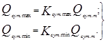
Коэффициент суточной неравномерности водопотребления Ксут, учитывающий уклад жизни населения, режим работы предприятий, степень благоустройства зданий, изменения водопотребления по сезонам года и дням недели, надлежит принимать равным:
Расчетные часовые расходы воды qч, м3/ч, должны определяться по формулам:
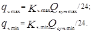
Коэффициент часовой неравномерности водопотребления Кч следует определять из выражений:
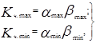
где a — коэффициент, учитывающий степень благоустройства зданий, режим работы предприятий и другие местные условия, принимаемый amax = 1,2—1,4; amin = 0,4—0,6;
b — коэффициент, учитывающий число жителей в населенном пункте, принимаемый по табл. 2.
2.3. Расходы воды на поливку в населенных пунктах и на территориях промышленных предприятий должны приниматься в зависимости от покрытия территории, способа ее поливки, вида насаждений, климатических и других местных условий по табл. 3.
2.4. Расходы воды на хозяйственно-питьевые нужды и пользование душами на промышленных предприятиях должны определяться в соответствии с требованиями СНиП 2.04.01-85 и СНиП 2.09.02-85.
|
Коэффициент |
Число жителей, тыс. чел. |
||||||||||||||||
|
до 0,1 |
0,15 |
0,2 |
0,3 |
0,5 |
0,75 |
1 |
1,5 |
2,5 |
4 |
6 |
10 |
20 |
50 |
100 |
300 |
1000 и более |
|
|
|
4,5 |
4 |
3,5 |
3 |
2,5 |
2,2 |
2 |
1,8 |
1,6 |
1,5 |
1,4 |
1,3 |
1,2 |
1,15 |
1,1 |
1,05 |
1 |
|
|
0,01 |
0,01 |
0,02 |
0,03 |
0,05 |
0,07 |
0,1 |
0,1 |
0,1 |
0,2 |
0,25 |
0,4 |
0,5 |
0,6 |
0,7 |
0,85 |
1 |
|
Примечания: 1. Коэффициент b при определении расходов воды для расчета сооружений, водоводов и линий сети следует принимать в зависимости от числа обслуживаемых ими жителей, а при зонном водоснабжении — от числа жителей в каждой зоне. 2. Коэффициент bmax следует принимать при определении напоров на выходе из насосных станций или высотного положения башни (напорных резервуаров), необходимого для обеспечения требуемых свободных напоров в сети в периоды максимального водоотбора в сутки максимального водопотребления, а коэффициент bmin — при определении излишних напоров в сети в периоды минимального водоотбора в сутки минимального водопотребления. |
|||||||||||||||||
|
Назначение воды |
Измеритель |
Расход воды на поливку, л/м2 |
|
Механизированная мойка усовершенствованных покрытий проездов и площадей |
1 мойка |
1,2 – 1,5 |
|
Механизированная поливка усовершенствованных покрытий проездов и площадей |
1 поливка |
0,3 – 0,4 |
|
Поливка вручную (из шлангов) усовершенствованных покрытий тротуаров и проездов |
То же |
0,4 – 0,5 |
|
Поливка городских зеленых насаждений |
« |
3 – 4 |
|
Поливка газонов и цветников |
« |
4 – 6 |
|
Поливка посадок в грунтовых зимних теплицах |
1 сут |
15 |
|
Поливка посадок в стеллажных зимних и грунтовых весенних теплицах, парниках всех типов, утепленном грунте |
То же |
6 |
|
Поливка посадок на приусадебных участках: |
||
|
овощных культур |
« |
3 – 15 |
|
плодовых деревьев |
« |
10 – 15 |
|
Примечания: 1. При отсутствии данных о площадях по видам благоустройства (зеленые насаждения, проезды и т.п.) удельное среднесуточное за поливочный сезон потребление воды на поливку в расчете на одного жителя следует принимать 50—90 л/сут в зависимости от климатических условий, мощности источника водоснабжения, степени благоустройства населенных пунктов и других местных условий. 2. Количество поливок надлежит принимать 1—2 в сутки в зависимости от климатических условий. |
||
При этом коэффициент часовой неравномерности водопотребления на хозяйственно-питьевые нужды на промышленных предприятиях следует принимать:
2,5 — для цехов с тепловыделением более 80 кДж (20 ккал) на 1 м3/ч;
3 — для остальных цехов.
2.5. Расходы воды на содержание и поение скота, птиц и зверей на животноводческих фермах и комплексах должны приниматься по ведомственным нормативным документам.
2.6. Расходы воды на производственные нужды промышленных и сельскохозяйственных предприятий должны определяться на основании технологических данных.
2.7. Распределение расходов воды по часам суток в населенных пунктах, на промышленных и сельскохозяйственных предприятиях следует принимать на основании расчетных графиков водопотребления.
2.8. При построении расчетных графиков следует исходить из принимаемых в проекте технических решений, исключающих совпадение по времени максимальных отборов воды из сети на различные нужды (устройство на крупных промышленных предприятиях регулирующих емкостей, пополняемых по заданному графику, подача воды на поливку территории и на заполнение поливочных машин из специальных регулирующих емкостей или через устройства, прекращающие подачу воды при снижении свободного напора до заданного предела, и т.п.).
Расчетные графики отборов воды на различные нужды, производимых из сети без указанного контроля, должны приниматься совпадающими по времени с графиками хозяйственно-питьевого водопотребления.
2.9. Удельное водопотребление для определения расчетных расходов воды в отдельных жилых и общественных зданиях при необходимости учета сосредоточенных расходов следует принимать в соответствии с требованиями СНиП 2.04.01-85.
2.10. При разработке разделов водоснабжения схем использования вод, районной планировки и генеральных планов, указанных в п. 1.1, удельное среднесуточное (за год) водопотребление допускается принимать по табл. 4.
Потребление воды на нужды промышленных и сельскохозяйственных предприятий должно определяться на основании укрупненных норм, а при их отсутствии — проектов-аналогов.
|
Водопотребитель |
Удельное среднесуточное (за год) водопотребление на одного жителя в населенных пунктах, л/сут |
|
|
до 1990 г. |
До 2000 г. |
|
|
Города |
550 |
600 |
|
Сельские населенные пункты |
125 |
150 |
|
Примечания: 1. Удельное водопотребление включает расходы воды на хозяйственно-питьевые нужды в жилых и общественных зданиях, нужды местной промышленности, поливку улиц и зеленых насаждений. 2. Удельное водопотребление допускается изменять на ± 10—20 % в зависимости от климатических и других местных условий и степени благоустройства. 3. Для южных районов в водохозяйственном балансе следует учитывать дополнительный расход воды на поливку зеленых насаждений и приусадебных участков из арычной сети. 4. При отсутствии данных о развитии промышленности допускается принимать дополнительный расход воды на нужды предприятий, забирающих воду из сетей хозяйственно-питьевого водопровода населенного пункта, в размере до 25 % расхода воды, определенного по удельному водопотреблению, приведенному в табл. 4. |
||
РАСХОД ВОДЫ НА ПОЖАРОТУШЕНИЕ
2.11. Противопожарный водопровод должен предусматриваться в населенных пунктах, на объектах народного хозяйства и, как правило, объединяться с хозяйственно-питьевым или производственным водопроводом.
Примечания*: 1. Допускается принимать наружное противопожарное водоснабжение из емкостей (резервуаров. водоемов) с учетом требований пп. 9.27—9.33 для:
населенных пунктов с числом жителей до 5 тыс. чел.;
отдельно стоящих общественных зданий объемом до 1000 м3, расположенных в населенных пунктах, не имеющих кольцевого противопожарного водопровода;
зданий объемом св. 1000 м3 — по согласованию с территориальными органами Государственного пожарного надзора;
производственных зданий с производствами категорий В, Г и Д при расходе воды на наружное пожаротушение 10 л/с;
складов грубых кормов объемом до 1000 м3;
складов минеральных удобрений объемом зданий до 5000 м3;
зданий радиотелевизионных передающих станций;
зданий холодильников и хранилищ овощей и фруктов.
2. Допускается не предусматривать противопожарное водоснабжение:
населенных пунктов с числом жителей до 50 чел. при застройке зданиями высотой до двух этажей;
отдельно стоящих, расположенных вне населенных пунктов, предприятий общественного питания (столовые, закусочные, кафе и т.п.) при объеме зданий до 1000 м3 и предприятий торговли при площади до 150 м2 (за исключением промтоварных магазинов), а также общественных зданий I и II степеней огнестойкости объемом до 250 м3, расположенных в населенных пунктах;
производственных зданий I и II степеней огнестойкости объемом до 1000 м3 (за исключением зданий с металлическими незащищенными или деревянными несущими конструкциями, а также с полимерным утеплителем объемом до 250 м3) с производствами категории Д;
заводов по изготовлению железобетонных изделий и товарного бетона со зданиями I и II степеней огнестойкости, размещаемых в населенных пунктах, оборудованных сетями водопровода при условии размещения гидрантов на расстоянии не более 200 м от наиболее удаленного здания завода;
сезонных универсальных приемозаготовительных пунктов сельскохозяйственных продуктов при объеме зданий до 1000 м3;
зданий складов сгораемых материалов и несгораемых материалов в сгораемой упаковке площадью до 50 м2.
2.12. Расход воды на наружное пожаротушение (на один пожар) и количество одновременных пожаров в населенном пункте для расчета магистральных (расчетных кольцевых) линий водопроводной сети должны приниматься по табл. 5.
2.13. Расход воды на наружное пожаротушение (на один пожар) жилых и общественных зданий для расчета соединительных и распределительных линий водопроводной сети, а также водопроводной сети внутри микрорайона или квартала следует принимать для здания, требующего наибольшего расхода воды, по табл. 6.
2.14. Расход воды на наружное пожаротушение на промышленных и сельскохозяйственных предприятиях на один пожар должен приниматься для здания, требующего наибольшего расхода воды, согласно табл. 7 или 8.
2.15. Расход воды на наружное пожаротушение зданий, разделенных на части противопожарными стенами, надлежит принимать по той части здания, где требуется наибольший расход воды.
Расход воды на наружное пожаротушение зданий, разделенных противопожарными перегородками, следует определять по общему объему здания и более высокой категории производства по пожарной опасности.
2.16. Расход воды на наружное пожаротушение одно-, двухэтажных производственных и одноэтажных складских зданий высотой (от пола до низа горизонтальных несущих конструкций на опоре) не более 18 м с несущими стальными конструкциями (с пределом огнестойкости не менее 0,25 ч) и ограждающими конструкциями (стены и покрытия) из стальных профилированных или асбестоцементных листов со сгораемыми или полимерными утеплителями необходимо принимать на 10 л/с более указанных в табл. 7 и 8.
|
Число жителей в населенном пункте, тыс. чел. |
Расчетное количество одновременных пожаров |
Расход воды на наружное пожаротушение в населенном пункте на один пожар, л/с |
|
|
застройка зданиями высотой до двух этажей включительно независимо от степени их огнестойкости |
застройка зданиями высотой три этажа и выше независимо от степени их огнестойкости |
||
|
До 1 |
1 |
5 |
10 |
|
Св. 1 « 5 |
1 |
10 |
10 |
|
« 5 « 10 |
1 |
10 |
15 |
|
« 10 « 25 |
2 |
10 |
15 |
|
« 25 « 50 |
2 |
20 |
25 |
|
« 50 « 100 |
2 |
25 |
35 |
|
« 100 « 200 |
3 |
¾ |
40 |
|
« 200 « 300 |
3 |
¾ |
55 |
|
« 300 « 400 |
3 |
¾ |
70 |
|
« 400 « 500 |
3 |
¾ |
80 |
|
« 500 « 600 |
3 |
¾ |
85 |
|
« 600 « 700 |
3 |
¾ |
90 |
|
« 700 « 800 |
3 |
¾ |
95 |
|
« 800 « 1000 |
3 |
¾ |
100 |
|
Примечания: 1. Расход воды на наружное пожаротушение в населенном пункте должен быть не менее расхода воды на пожаротушение жилых и общественных зданий, указанных в табл. 6. 2. При зонном водоснабжении расход воды на наружное пожаротушение и количество одновременных пожаров в каждой зоне следует принимать в зависимости от числа жителей, проживающих в зоне. 3. Количество одновременных пожаров и расход воды на один пожар в населенных пунктах с числом жителей более 1 млн. чел. надлежит принимать согласно требованиям органов Государственного пожарного надзора. 4. Для группового водопровода количество одновременных пожаров надлежит принимать в зависимости от общей численности жителей в населенных пунктах, подключенных к водопроводу. Расход воды на восстановление пожарного объема по групповому водопроводу следует определять как сумму расходов воды для населенных пунктов (соответственно количеству одновременных пожаров), требующих наибольших расходов на пожаротушение согласно п.п. 2.24 и 2.25. 5. В расчетное количество одновременных пожаров в населенном пункте включены пожары на промышленных предприятиях, расположенных в пределах населенного пункта. При этом в расчетный расход воды следует включать соответствующие расходы воды на пожаротушение на этих предприятиях, но не менее указанных в табл. 5. |
|||
|
Назначение зданий |
Расход воды на один пожар, л/с, на наружное пожаротушение жилых и общественных зданий независимо от их степеней огнестойкости при объемах зданий, тыс. м3 |
||||
|
до 1 |
св. 1 до 5 |
св. 5 до 25 |
св. 25 до 50 |
св. 50 до 150 |
|
|
Жилые здания односекционные и многосекционные при количестве этажей: |
|||||
|
до 2 |
10* |
10 |
¾ |
¾ |
¾ |
|
св. 2 « 12 |
10 |
15 |
15 |
20 |
¾ |
|
« 12 « 16 |
¾ |
¾ |
20 |
25 |
¾ |
|
« 16 « 25 |
¾ |
¾ |
¾ |
25 |
30 |
|
Общественные здания при количестве этажей: |
|||||
|
до 2 |
10* |
10 |
15 |
¾ |
¾ |
|
св. 2 « 6 |
10 |
15 |
20 |
25 |
30 |
|
« 6 « 12 |
¾ |
¾ |
25 |
30 |
35 |
|
« 12 « 16 |
¾ |
¾ |
¾ |
30 |
35 |
|
_____________ * Для сельских населенных пунктов расход воды на один пожар — 5 л/с.
Примечание. Расходы воды на наружное пожаротушение зданий высотой или объемом свыше указанных в табл. 6, а также общественных зданий объемом свыше 25 тыс. м3 с большим скоплением людей (зрелищные предприятия, торговые центры, универмаги и др.) надлежит принимать и согласовывать в установленном порядке. |
|||||
|
Степень огнестойкости зданий |
Категория помещений по пожарной опасности |
Расход воды на наружное пожаротушение производственных зданий с фонарями, а также без фонарей шириной до 60 м на один пожар, л/с, при объемах зданий, тыс. м3 |
||||||
|
до 3 |
св. 3 до 5 |
св. 5 до 20 |
св. 20 до 50 |
св. 50 до 200 |
св. 200 до 400 |
св. 400 до 600 |
||
|
I и II |
Г, Д, |
10 |
10 |
10 |
10 |
15 |
20 |
25 |
|
I и II |
А, Б, В |
10 |
10 |
15 |
20 |
30 |
35 |
40 |
|
III |
Г, Д |
10 |
10 |
15 |
25 |
35 |
¾ |
¾ |
|
III |
В |
10 |
15 |
20 |
30 |
40 |
¾ |
¾ |
|
IV и V |
Г, Д |
10 |
15 |
20 |
30 |
¾ |
¾ |
¾ |
|
IV и V |
В |
15 |
20 |
25 |
40 |
¾ |
¾ |
¾ |
|
Степень огнестойкости зданий |
Категория помещений по пожарной опасности |
Расход воды на наружное пожаротушение производственных зданий без фонарей шириной 60 м и более на один пожар, л/с, при объемах зданий, тыс. м3 |
||||||||
|
до 50 |
св. 50 |
св 100 |
св. 200 |
св. 300 |
св. 400 |
св. 500 |
св. 600 |
св. 700 до 800 |
||
|
I и II |
А, Б, В |
20 |
30 |
40 |
50 |
60 |
70 |
80 |
90 |
100 |
|
I и II |
Г, Д, Е |
10 |
15 |
20 |
25 |
30 |
35 |
40 |
45 |
50 |
Примечания к табл. 7 и 8: 1. При двух расчетных пожарах на предприятии расчетный расход воды на пожаротушение следует принимать по двум зданиям, требующим наибольшего расхода воды.
2. Расход воды на наружное пожаротушение отдельно стоящих вспомогательных зданий промышленных предприятий следует определять по табл. 6 как для общественных зданий, а встроенных в производственные здания — по общему объему здания по табл. 7.
3. Расход воды на наружное пожаротушение зданий сельскохозяйственных предприятий I и II степеней огнестойкости объемом не более 5 тыс. м3 с производствами категорий Г и Д следует принимать 5 л/с.
4. Расход воды на наружное пожаротушение складов лесных материалов вместимостью до 10 тыс. м3 следует принимать по табл. 7, относя их к зданиям V степени огнестойкости с производством категории В. При большей вместимости складов следует руководствоваться требованиями соответствующих нормативных документов.
5. Расход воды на наружное пожаротушение зданий радиотелевизионных передающих станций независимо от объема зданий и числа проживающих в поселке людей надлежит принимать не менее 15 л/с, если по табл. 7 и 8 не требуется больший расход воды. Указанные требования не распространяются на радиотелевизионные ретрансляторы, устанавливаемые на существующих и проектируемых объектах связи.
6. Расход воды на наружное пожаротушение зданий объемами, более указанных в табл. 7 и 8, надлежит устанавливать по согласованию с территориальными органами Государственного пожарного надзора.
7. Степень огнестойкости зданий или сооружений надлежит определять в соответствии с требованиями СНиП 2.01.02-85.
8. Для зданий II степени огнестойкости с деревянными конструкциями расход воды на наружное пожаротушение следует принимать на 5 л/с больше указанного в табл. 7 или 8.
Для этих зданий в местах размещения наружных пожарных лестниц должны предусматриваться стояки-сухотрубы диаметром 80 мм, оборудованные пожарными соединительными головками на верхнем и нижнем концах стояка.
Примечание. Для зданий шириной не более 24 м и высотой до карниза не более 10 м стояки-сухотрубы допускается не предусматривать.
2.17. Расход воды на наружное пожаротушение открытых площадок хранения контейнеров с грузом до 5 т следует принимать при количестве контейнеров:
|
от 30 до 50 шт |
— 15 л/с; |
|
св. 50 « 100 « |
— 20 л/с; |
|
« 100 « 300 « |
— 25 л/с; |
|
« 300 « 1000 « |
— 40 л/с. |
2.18. Расход воды на тушение пожара при объединенном водопроводе для спринклерных или дренчерных установок, внутренних пожарных кранов и наружных гидрантов в течение 1 ч с момента начала пожаротушения следует принимать как сумму наибольших расходов, определенных в соответствии с требованиями «Инструкции по проектированию установок автоматического пожаротушения», СНиП 2.04.01-85 и настоящего раздела.
Расход воды, необходимый на время тушения пожара после отключения спринклерных или дренчерных установок, следует принимать согласно п.п. 2.14, 2.16, 2.20 и 2.21.
Примечание. Одновременность действия спринклерных и дренчерных установок надлежит учитывать в зависимости от условий пожаротушения.
2.19. Расход воды на наружное пожаротушение пенными установками, установками с лафетными стволами или путем подачи распыленной воды должен определяться в соответствии с требованиями противопожарной безопасности, предусмотренными нормами строительного проектирования предприятий, зданий и сооружений соответствующих отраслей промышленности с учетом дополнительного расхода воды в размере 25 % из гидрантов согласно п. 2.14. При этом суммарный расход воды должен быть не менее расхода, определенного по табл. 7 или 8.
2.20. На пожаротушение зданий, оборудованных внутренними пожарными кранами, должен учитываться дополнительный расход воды к расходам, указанным в табл. 5—8, который следует принимать для зданий, требующих наибольшего расхода воды в соответствии с требованиями СНиП 2.04.01-85.
2.21. Расчетный расход воды на тушение пожара должен быть обеспечен при наибольшем расходе воды на другие нужды, предусмотренные п. 4.3, при этом на промышленном предприятии расходы воды на поливку территории, прием душа, мытье полов и мойку технологического оборудования, а также на полив растений в теплицах не учитываются.
В случаях когда по условиям технологического процесса возможно частичное использование производственной воды на пожаротушение, следует предусматривать установку гидрантов на сети производственного водопровода дополнительно к гидрантам, установленным на сети противопожарного водопровода, обеспечивающего требуемый расход воды на пожаротушение.
2.22. Расчетное количество одновременных пожаров на промышленном или сельскохозяйственном предприятии надлежит принимать в зависимости от занимаемой ими площади; один пожар при площади до 150 га, два пожара — более 150 га.
2.23. При объединенном противопожарном водопроводе населенного пункта и промышленного или сельскохозяйственного предприятия, расположенных вне населенного пункта, расчетное количество одновременных пожаров должно приниматься:
при площади территории предприятия до 150 га при числе жителей в населенном пункте до 10 тыс. чел. — один пожар (на предприятии или в населенном пункте по наибольшему расходу воды); то же, при числе жителей в населенном пункте свыше 10 до 25 тыс. чел. — два пожара (один на предприятии и один в населенном пункте);
при площади территории предприятия свыше 150 га и при числе жителей в населенном пункте до 25 тыс. чел. — два пожара (два на предприятии или два в населенном пункте по наибольшему расходу);
при числе жителей в населенном пункте более 25 тыс. чел. — согласно п. 2.22 и табл. 5, при этом расход воды следует определять как сумму потребного большего расхода (на предприятии или в населенном пункте) и 50 % потребного меньшего расхода (на предприятии или в населенном пункте);
при нескольких промышленных предприятиях и одном населенном пункте — согласно требованиям органов Государственного пожарного надзора.
2.24. Продолжительность тушения пожара должна приниматься 3 ч; для зданий I и II степеней огнестойкости с несгораемыми несущими конструкциями и утеплителем с помещениями категорий Г и Д — 2 ч.
2.25. Максимальный срок восстановления пожарного объема воды должен быть не более:
24 ч — в населенных пунктах и на промышленных предприятиях с помещениями по пожарной опасности категорий А, Б, В;
36 ч — на промышленных предприятиях с помещениями по пожарной опасности категорий Г и Д;
72 ч — в сельских населенных пунктах и на сельскохозяйственных предприятиях.
Примечания: 1. Для промышленных предприятий с расходами волы на наружное пожаротушение 20 л/с и менее допускается увеличивать время восстановления пожарного объема воды:
до 48 ч — для помещений категорий Г и Д;
до 36 ч — для помещений категории В.
2. На период восстановления пожарного объема воды допускается снижение подачи воды на хозяйственно-литьевые нужды системами водоснабжения I и II категорий до 70 %, III категории до 50 % расчетного расхода и подачи воды на производственные нужды по аварийному графику.
СВОБОДНЫЕ НАПОРЫ
2.26. Минимальный свободный напор в сети водопровода населенного пункта при максимальном хозяйственно-питьевом водопотреблении на вводе в здание над поверхностью земли должен приниматься при одноэтажной застройке не менее 10 м, при большей этажности на каждый этаж следует добавлять 4 м.
Примечания: 1. В часы минимального водопотребления напор на каждый этаж, кроме первого, допускается принимать равным 3 м, при этом должна обеспечиваться подача воды в емкости для хранения.
2. Для отдельных многоэтажных зданий или группы их, расположенных в районах с меньшей этажностью застройки или на повышенных местах, допускается предусматривать местные насосные установки для повышения напора.
3. Свободный напор в сети у водоразборных колонок должен быть не менее 10 м.
2.27. Свободный напор в наружной сети производственного водопровода должен приниматься по технологическим данным.
2.28. Свободный напор в наружной сети хозяйственно-питьевого водопровода у потребителей не должен превышать 60 м.
При напорах в сети более 60 м для отдельных зданий или районов следует предусматривать установку регуляторов давления или зонирование системы водоснабжения.
2.29. Противопожарный водопровод следует принимать низкого давления, противопожарный водопровод высокого давления допускается принимать только при соответствующем обосновании.
В водопроводе высокого давления стационарные пожарные насосы должны быть оборудованы устройствами, обеспечивающими пуск насосов не позднее чем через 5 мин после подачи сигнала о возникновении пожара.
Примечание. Для населенных пунктов с числом жителей до 5 тыс. чел., в которых не предусматривается профессиональная пожарная охрана, противопожарный водопровод должен приниматься высокого давления.
2.30. Свободный напор в сети противопожарного водопровода низкого давления (на уровне поверхности земли) при пожаротушении должен быть не менее 10 м.
Свободный напор в сети противопожарного водопровода высокого давления должен обеспечивать высоту компактной струи не менее 10 м при полном расходе воды на пожаротушение и расположении пожарного ствола на уровне наивысшей точки самого высокого здания.
Максимальный свободный напор в сети объединенного водопровода не должен превышать 60 м.
3. ИСТОЧНИКИ ВОДОСНАБЖЕНИЯ
3.1. Выбор источника водоснабжения должен быть обоснован результатами топографических, гидрологических, гидрогеологических, ихтиологических, гидрохимических, гидробиологических, гидротермических и других изысканий и санитарных обследований.
3.2. В качестве источника водоснабжения следует рассматривать водотоки (реки, каналы), водоемы (озера, водохранилища, пруды), моря, подземные поды (водоносные пласты, подрусловые, шахтные и другие воды)
Для производственного водоснабжения промышленных предприятий надлежит рассматривать возможность использования очищенных сточных вод.
В качестве источника водоснабжения могут быть использованы наливные водохранилища с подводом к ним воды из естественных поверхностных источников.
Примечание. В системе водоснабжения допускается использование нескольких источников с различными гидрологическими и гидрогеологическими характеристиками.
3.3. Выбор источника хозяйственно-питьевого водоснабжения должен производиться в соответствии с требованиями ГОСТ 17.1.1.04-80.
Выбор источника производственного водоснабжения следует производить с учетом требований, предъявляемых потребителями к качеству воды.
Принятые к использованию источники водоснабжения подлежат согласованию в соответствии с «Инструкцией о порядке согласования и выдачи разрешения на специальное водопользование».
3.4. Для хозяйственно-питьевых водопроводов должны максимально использоваться имеющиеся ресурсы подземных вод, удовлетворяющих санитарно-гигиеническим требованиям.
При недостаточных эксплуатационных запасах естественных подземных вод следует рассматривать возможность их увеличения за счет искусственного пополнения.
3.5. Использование подземных вод питьевого качества для нужд, не связанных с хозяйственно-питьевым водоснабжением, как правило, не допускается. В районах, где отсутствуют необходимые поверхностные водоисточники и имеются достаточные запасы подземных вод питьевого качества, допускается использование этих вод на производственные и поливочные нужды с разрешения органов по регулированию использования и охране вод.
3.6. Для производственного и хозяйственно-питьевого водоснабжения при соответствующей обработке воды и соблюдении санитарных требований допускается использование минерализованных и геотермальных вод.
3.7. Обеспеченность среднемесячных расходов воды поверхностных источников должна приниматься по табл. 9 в зависимости от категории системы водоснабжения, определяемой согласно п. 4.4.
|
Категория системы водоснабжения |
Обеспеченность минимальных среднемесячных расходов воды поверхностных источников, % |
|
I |
95 |
|
II |
90 |
|
III |
85 |
3.8. При оценке использования полных ресурсов для целей водоснабжения надлежит учитывать:
расходный режим и водохозяйственный баланс по источнику с прогнозом на 15—20 лет:
требования к качеству воды, предъявляемые потребителями;
качественную характеристику воды в источнике с указанием агрессивности воды и прогноз возможного изменения ее качества с учетом поступления сточных вод;
качественные и количественные характеристики наносов и сора, их режим, перемещение донных отложений, устойчивость берегов;
наличие вечномерзлых грунтов, возможность промерзания и пересыхания источника, наличие снежных лавин и селевых явлений (на горных водотоках), а также других стихийных природных явлений в водосборном бассейне источника;
осенне-зимний режим источника и характер льдошуговых явлений в нем;
температуру воды по месяцам года и развитие фитопланктона на различной глубине;
характерные особенности весеннего вскрытия источника и половодья (для равнинных водотоков), прохождения весенне-летних паводков (для горных водотоков);
запасы и условия питания подземных вод, а также возможное их нарушение в результате изменения природных условий, устройства водохранилищ или дренажа, искусственной откачки воды и т.п.;
качество и температуру подземных вод; возможность искусственного пополнения и образования запасов подземных вод;
требования органов по регулированию использования и охране вод, санитарно-эпидемиологической службы, рыбоохраны и др.
3.9. При оценке достаточности водных ресурсов поверхностных источников водоснабжения необходимо обеспечивать ниже места водоотбора гарантированный расход воды, необходимый в каждом сезоне года для удовлетворения потребностей в воде расположенных ниже по течению населенных пунктов, промышленных предприятий, сельского хозяйства, рыбного хозяйства, судоходства и других видов водопользования, а также для обеспечения санитарных требований по охране источников водоснабжения.
3.10. В случае недостаточного расхода воды в поверхностном источнике надлежит предусматривать регулирование естественного стока воды в пределах одного гидрологического года (сезонное регулирование) или многолетнего периода (многолетнее регулирование), а также переброску воды из других, более многоводных поверхностных источников.
Примечание. Степень обеспечения отдельных водопотребителей при недостаточности имеющихся расходов воды в источнике и затруднительности или высокой стоимости их увеличения определяется по согласованию с органами Министерства мелиорации и водного хозяйства республики, а также органами санитарно-эпидемиологической службы.
3.11. Оценку ресурсов подземных вод надлежит производить на основании материалов гидрогеологических поисков, разведки и исследований в соответствии с «Классификацией эксплуатационных запасов и прогнозных ресурсов подземных вод» и «Инструкцией по применению классификационных запасов подземных вод к месторождениям пресных вод» Государственной комиссии по запасам полезных ископаемых.
Запасы подземных вод должны быть утверждены Государственной или территориальными комиссиями по запасам полезных ископаемых.
Утверждение эксплуатационных запасов подземных вод не требуется, если капитальные вложения на устройство водозаборных сооружений не превышают 500 тыс. руб., а по объектам железнодорожного транспорта — 1 млн. руб.
При этом в стоимости водозаборных сооружений учитываются затраты на водоприемные устройства, насосные станции, сооружения водоподготовки, резервуары, а также водоводы до потребителя.
4. СХЕМЫ И СИСТЕМЫ ВОДОСНАБЖЕНИЯ
4.1. Выбор схемы и системы водоснабжения следует производить на основании сопоставления возможных вариантов ее осуществления с учетом особенностей объекта или группы объектов, требуемых расходов воды на различных этапах их развития, источников водоснабжения, требований к напорам, качеству воды и обеспеченности ее подачи.
4.2. Сопоставлением вариантов должны быть обоснованы:
источники водоснабжения и использование их для тех или иных потребителей;
степень централизации системы и целесообразность выделения локальных систем водоснабжения;
объединение или разделение сооружений, водоводов и сетей различного назначения;
зонирование системы водоснабжения, использование регулирующих емкостей, применение станций регулирования и насосных станций подкачки;
применение объединенных или локальных систем оборотного водоснабжения;
использование отработанных вод одних предприятий (цехов, установок, технологических линий) для производственных нужд других предприятий (цехов, установок, технологических линий), а также для поливки территории и зеленых насаждении;
использование очищенных производственных и бытовых сточных вод, а также аккумулированного поверхностного стока для производственного водоснабжения, орошения и обводнения водоемов;
целесообразность организации замкнутых циклов или создания замкнутых систем водопользования;
очередность строительства и ввода в действие элементов системы по пусковым комплексам.
4.3. Централизованная система водоснабжения населенных пунктов в зависимости от местных условий и принятой схемы водоснабжения должна обеспечивать:
хозяйственно-питьевое водопотребление в жилых и общественных зданиях, нужды коммунально-бытовых предприятий;
хозяйственно-питьевое водопотребление на предприятиях;
производственные нужды промышленных и сельскохозяйственных предприятий, где требуется вода питьевого качества или для которых экономически нецелесообразно сооружение отдельного водопровода;
тушение пожаров;
собственные нужды станций водоподготовки, промывку водопроводных и канализационных сетей и т.п.
При обосновании допускается устройство самостоятельного водопровода для:
поливки и мойки территорий (улиц, проездов, площадей, зеленых насаждений), работы фонтанов и т.п.;
поливки посадок в теплицах, парниках и на открытых участках, а также приусадебных участков.
4.4. Централизованные системы водоснабжения по степени обеспеченности подачи воды подразделяются на три категории:
I — допускается снижение подачи воды на хозяйственно-питьевые нужды не более 30 % расчетного расхода и на производственные нужды до предела, устанавливаемого аварийным графиком работы предприятий; длительность снижения подачи не должна превышать 3 сут. Перерыв в подаче воды или снижение подачи ниже указанного предела допускаются на время выключения поврежденных и включения резервных элементов системы (оборудования, арматуры, сооружений, трубопроводов и др.), но не более чем на 10 мин;
II — величина допускаемого снижения подачи воды та же, что при I категории; длительность снижения подачи не должна превышать 10 сут. Перерыв в подаче воды или снижение подачи ниже указанного предела допускаются на время выключения поврежденных и включения резервных элементов или проведения ремонта, но не более чем на 6 ч;
III — величина допускаемого снижения подачи воды та же, что при I категории; длительность снижения подачи не должна превышать 15 сут. Перерыв в подаче воды или снижение подачи ниже указанного предела допускается на время проведения ремонта, но не более чем на 24 ч.
Объединенные хозяйственно-питьевые и производственные водопроводы населенных пунктов при числе жителей в них более 50 тыс. чел. следует относить к I категории; от 5 до 50 тыс. чел. — ко II категории; менее 5 тыс. чел. — к III категории.
Категорию сельскохозяйственных групповых водопроводов следует принимать по населенному пункту с наибольшим числом жителей.
При необходимости повышения обеспеченности подачи воды на производственные нужды промышленных и сельскохозяйственных предприятий (производств, цехов, установок) следует предусматривать локальные системы водоснабжения.
Проекты локальных систем, обеспечивающих технологические требования объектов, должны рассматриваться и утверждаться совместно с проектами этих объектов.
Категорию отдельных элементов систем водоснабжения необходимо устанавливать в зависимости от их функционального значения в общей системе водоснабжения.
Элементы систем водоснабжения II категории, повреждения которых могут нарушить подачу воды на пожаротушение, должны относиться к I категории.
4.5. При разработке схемы и системы водоснабжения следует давать техническую, экономическую и санитарную оценки существующих сооружений, водоводов и сетей и обосновывать степень их дальнейшего использования с учетом затрат по реконструкции и интенсификации их работы.
4.6. Системы водоснабжения, обеспечивающие противопожарные нужды, следует проектировать в соответствии с указаниями разд. 2.
4.7. Системы оборотного водоснабжения надлежит проектировать в соответствии с указаниями разд. 11.
4.8. При выборе оптимального варианта систем производственного водоснабжения при необходимости следует рассматривать возможность и целесообразность изменений технологических процессов, при которых возрастание издержек основного производства оказывается меньше снижения приведенной стоимости систем водоснабжения и канализации.
4.9. Водозаборные сооружения, водоводы, станций водоподготовки должны, как правило, рассчитываться на средний часовой расход в сутки максимального водопотребления.
4.10. Расчеты совместной работы водоводов, водопроводных сетей, насосных станций и регулирующих емкостей надлежит производить в объеме, необходимом для обоснования системы подачи и распределения воды на расчетный срок, установления очередности ее осуществления, подбора насосного оборудования и определения требуемых объемов регулирующих емкостей и их расположения для каждой очереди строительства.
4.11. Для систем водоснабжения населенных пунктов расчеты совместной работы водоводов, водопроводных сетей, насосных станций и регулирующих емкостей следует, как правило, выполнять для следующих характерных режимов подачи воды:
в сутки максимального водопотребления — максимального, среднего и минимального часовых расходов, а также максимального часового расхода и расчетного расхода воды на пожаротушение;
в сутки среднего водопотребления — среднего часового расхода;
в сутки минимального водопотребления — минимального часового расхода;
Проведение расчетов для других режимов водопотребления, а также отказ от проведения расчетов для одного или нескольких из указанных режимов допускается при обосновании достаточности проведенных расчетов для выявления условий совместной работы водоводов, насосных станций, регулирующих емкостей и распределительных сетей при всех характерных режимах водопотребления.
Для систем производственного водоснабжения характерные условия их работы устанавливаются в соответствии с особенностями технологии производства и обеспечения противопожарной безопасности.
Примечание. При расчете сооружений, водоводов и сетей на период пожаротушения аварийное выключение проводов и линий кольцевых сетей, а также секций и блоков сооружений не учитывается.
4.12. При разработке схемы водоснабжения должен быть установлен перечень параметров, контроль которых необходим для последующей систематической проверки силами эксплуатационного персонала соответствия проекту фактических расходов воды и коэффициентов неравномерности водопотребления, а также фактических характеристик оборудования, сооружений и устройств. Для осуществления контроля в соответствующих разделах проекта должна быть предусмотрена установка необходимых для этого приборов и аппаратуры.
4.13. При разработке схем и систем сельскохозяйственного водоснабжения надлежит:
централизованные системы водоснабжения проектировать лишь для перспективных населенных пунктов и объектов сельскохозяйственного производства;
для сохраняемых на расчетный период сельских населенных пунктов предусматривать реконструкцию существующих водозаборных сооружений (водозаборных скважин, шахтных колодцев, каптажа родников и т.п.) с оборудованием их механизированными водоподъемниками и устройство внутренних водопроводов в отдельных культурно-бытовых и производственных зданиях;
при устройстве групповых водопроводов предусматривать меры по сохранению качества воды при ее транспортировании на большие расстояния, особенно в начальный период работы этих систем, когда скорости движения воды в водоводах значительно ниже расчетных;
рассматривать целесообразность устройства для поливки приусадебных участков отдельных сезонных водопроводов с использованием местных источников и оросительных систем, непригодных в качестве источника хозяйственно-питьевого водоснабжения;
при проектировании систем водоснабжения для районов распространения засоленных вод при отсутствии местных источников пресной воды рассматривать целесообразность использования для питьевых нужд опресненной воды и для непитьевых нужд минерализованной воды. При этом для поселков с одноэтажной застройкой внутренние водопроводы рекомендуется проектировать только для подачи минерализованной воды, предусматривая подачу опресненной воды на питьевые нужды через водоразборные колонки.
5. ВОДОЗАБОРНЫЕ СООРУЖЕНИЯ
СООРУЖЕНИЯ ДЛЯ ЗАБОРА ПОДЗЕМНЫХ ВОД
5.1. Выбор типа и схемы размещения водозаборных сооружений следует производить исходя из геологических, гидрогеологических и санитарных условий района.
5.2. При проектировании новых и расширении существующих водозаборов должны учитываться условия взаимодействия их с существующими и проектируемыми водозаборами на соседних участках, а также их влияние на окружающую природную среду (поверхностный сток, растительность и др.).
5.3. В водозаборах подземных вод применяются следующие водоприемные сооружения: водозаборные скважины, шахтные колодцы, горизонтальные водозаборы, комбинированные водозаборы, лучевые водозаборы, каптажи родников.
5.4. В проектах скважин должен быть указан способ бурения и определены конструкции скважины, ее глубина, диаметры колонн труб, тип водоприемной части, водоподъемника и оголовка скважины, а также порядок их опробования.
5.5. Способы бурения скважин приведены в рекомендуемом прил. 1.
5.6. В конструкции скважины необходимо предусматривать возможность проведения замеров дебита, уровня и отбора проб воды, а также производства ремонтно-восстановительных работ при применении импульсных, реагентных и комбинированных методов регенерации при эксплуатации скважин.
5.7. Диаметр эксплуатационной колонны труб в скважинах следует принимать при установке насосов: с электродвигателем над скважиной — на 50 мм больше номинального диаметра насоса; с погружным электродвигателем — равным номинальному диаметру насоса.
5.8. В зависимости от местных условий и оборудования устье скважины следует, как правило, располагать в наземном павильоне или подземной камере.
5.9. Габариты павильона и подземной камеры в плане следует принимать из условия размещения в нем электродвигателя, электрооборудования и контрольно-измерительных приборов (КИП).
Высоту наземного павильона и подземной камеры надлежит принимать в зависимости от габаритов оборудования, но не менее 2,4 м.
5.10. Верхняя часть эксплуатационной колонны труб должна выступать над полом не менее чем на 0,5 м.
5.11. Конструкция оголовка скважины должна обеспечивать полную герметизацию, исключающую проникание в межтрубное и затрубное пространства скважины поверхностной воды и загрязнений.
5.12. Монтаж и демонтаж секций скважинных насосов следует предусматривать через люки, располагаемые над устьем скважины, с применением средств механизации.
5.13. Количество резервных скважин следует принимать по табл. 10.
Таблица 10
|
Количество рабочих скважин |
Количество резервных скважин на водозаборе при категории |
||
|
I |
II |
III |
|
|
От 1 до 4 |
1 |
1 |
1 |
|
« 5 « 12 |
2 |
1 |
¾ |
|
13 и более |
20 % |
10 % |
¾ |
Примечания: 1. В зависимости от гидрогеологических условий и при соответствующем обосновании количество резервных скважин может быть увеличено.
2. Для водозаборов всех категорий следует предусматривать наличие на складе резервных насосов: при количестве рабочих скважин до 12 — один; при большем количестве — 10 % числа рабочих скважин.
3. Категории водозаборов по степени обеспеченности подачи воды следует принимать согласно п. 4.4.
5.14. Существующие на участке водозабора скважины, дальнейшее использование которых невозможно, подлежат ликвидации путем тампонажа.
5.15. Фильтры в скважинах надлежит устанавливать в рыхлых, неустойчивых скальных и полускальных породах.
5.16. Конструкцию и размеры фильтра следует принимать в зависимости от гидрогеологических условий, дебита и режима эксплуатации в соответствии с рекомендуемым прил. 2.
5.17. Конечный диаметр обсадной трубы при ударном бурении должен быть больше наружного диаметра фильтра не менее чем на 50 мм, а при обсыпке фильтра гравием — не менее чем на 100 мм.
При роторном способе бурения без крепления стенок трубами конечный диаметр скважин должен быть больше наружного диаметра фильтра не менее чем на 100 мм.
5.18. Длину рабочей части фильтра в напорных водоносных пластах мощностью до 10 м следует принимать равной мощности пласта; в безнапорных — мощности пласта за вычетом эксплуатационного понижения уровня воды в скважине (фильтр, как правило, должен быть затоплен) с учетом п. 5.19.
В водоносных пластах мощностью более 10 м длину рабочей части фильтра надлежит определять с учетом водопроницаемости пород, производительности скважин и конструкции фильтра.
5.19. Рабочую часть фильтра следует устанавливать на расстоянии от кровли и подошвы водоносного пласта не менее 0,5—1 м.
5.20. При использовании нескольких водоносных пластов рабочие части фильтров надлежит устанавливать в каждом водоносном пласте и соединять между собой глухими трубами (перекрывающими слабоводопроницаемые слои).
5.21. Верхняя часть надфильтровой трубы должна быть выше башмака обсадной колонны не менее чем на 3 м при глубине скважины до 50 м и не менее чем на 5 м при глубине скважины более 50 м; при этом между обсадной колонной и надфильтровой трубой при необходимости должен быть установлен сальник.
5.22. Длину отстойника следует принимать не более 2 м.
5.23. Бесфильтровые конструкции скважин для забора подземных вод из рыхлых песчаных отложений надлежит принимать при условии, когда над ними залегают устойчивые породы.
5.24. После окончания бурения скважин и оборудования их фильтрами необходимо предусматривать прокачку, а при роторном бурении с глинистым раствором — разглинизацию до полного осветления воды.
5.25. Для установления соответствия фактического дебита водозаборных скважин принятому в проекте необходимо предусматривать их опробование откачками в соответствии с указаниями, приведенными в рекомендуемом прил. 3.
5.26. Шахтные колодцы следует применять, как правило, в первых от поверхности безнапорных водоносных пластах, сложенных рыхлыми породами и залегающих на глубине до 30 м.
5.27. При мощности водоносного пласта до 3 м следует предусматривать шахтные колодцы совершенного типа с вскрытием всей мощности пласта; при большей мощности допускаются совершенные и несовершенные колодцы с вскрытием части пласта.
5.28. При расположении водоприемной части в песчаных грунтах на дне колодца необходимо предусматривать обратный песчано-гравийный фильтр или фильтр из пористого бетона, а в стенках водоприемной части колодцев — фильтры из пористого бетона или гравийные.
5.29. Обратный фильтр надлежит принимать из нескольких слоев песка и гравия толщиной по 0,1—0,15 м каждый, общей толщиной 0,4—0,6 м с укладкой в нижнюю часть фильтра мелких, а в верхнюю крупных фракций.
5.30. Механический состав отдельных слоев фильтра, и соотношения между средними диаметрами зерен смежных слоев фильтра следует принимать в соответствии с указаниями, приведенными в рекомендуемом прил. 2.
5.31. Верх шахтных колодцев должен быть выше поверхности земли не менее чем на 0,8 м. При этом вокруг колодца должна предусматриваться отмостка шириной 1—2 м с уклоном 0,1 от колодца; вокруг колодцев, подающих воду для хозяйственно-питьевых нужд, кроме того, следует предусматривать устройство замка из глины или жирного суглинка глубиной 1,5—2 м и шириной 0,5 м.
5.32. В колодцах необходимо предусматривать вентиляционную трубу, выведенную выше поверхности земли не менее чем на 2 м. Отверстие вентиляционной трубы должно защищаться колпаком с сеткой.
5.33. Горизонтальные водозаборы следует предусматривать, как правило, на глубине до 8 м в безнапорных водоносных пластах, преимущественно вблизи поверхностных водотоков. Они могут проектироваться в виде каменно-щебеночной дрены, трубчатой дрены, водосборной галереи или водосборной штольни.
5.34. Водозаборы в виде каменно-щебеночной дрены рекомендуется предусматривать для систем временного водоснабжения.
Трубчатые дрены надлежит проектировать на глубине до 5—8 м для водозаборов II—III категорий.
Для водозаборов I и II категорий должны приниматься, как правило, водосборные галереи.
Водозаборы в виде штольни следует принимать в соответствующих орографических условиях.
5.35. Для исключения выноса частиц породы из водоносного пласта при проектировании водоприемной части горизонтальных водозаборов должен предусматриваться обратный фильтр из двух-трех слоев.
5.36. Механический состав отдельных слоев обратного фильтра следует определять расчетом.
Толщина отдельных слоев фильтра должна быть не менее 15 см.
5.37. Для водозабора в виде каменно-щебеночной дрены прием воды следует предусматривать через щебеночную призму размером 30´30 или 50´50 см, уложенную на дно траншеи, с устройством обратного фильтра.
Каменно-щебеночную дрену надлежит принимать с уклоном 0,01—0,05 в сторону водосборного колодца.
5.38. Водоприемную часть водозаборов из трубчатых дрен следует принимать из керамических, асбестоцементных, железобетонных и пластмассовых труб с круглыми или щелевыми отверстиями с боков и в верхней части трубы; нижняя часть трубы (не более 1/3 по высоте) должна быть без отверстий. Минимальный диаметр труб надлежит принимать 150 мм.
Примечание. Применение металлических перфорированных труб допускается при обосновании.
5.39. Определение диаметров трубопроводов горизонтальных водозаборов следует производить для периода низкого стояния уровня грунтовых вод, расчетное наполнение принимать 0,5 диаметра трубы.
5.40. Уклоны труб в сторону водосборного колодца должны быть не менее:
|
0,007 — при диаметре 150 мм; |
|
0,005 — « « 200 « |
|
0,004 — « « 250 « |
|
0,003 — « « 300 « |
|
0,002 — « « 400 « |
|
0,001 — « « 500 « |
Скорость течения воды в трубах должна приниматься не менее 0,7 м/с.
5.41. Водоприемные галереи надлежит принимать из сборного железобетона с щелевыми отверстиями или окнами с козырьками.
5.42. Под железобетонными звеньями галереи должно предусматриваться основание, исключающее осадку их относительно друг друга. С боков галереи в пределах ее водоприемной части следует предусматривать устройство обратного фильтра.
5.43. Горизонтальные водозаборы должны быть защищены от попадания в них поверхностных вод.
5.44. Для наблюдения за работой трубчатых и галерейных водозаборов, их вентиляции и ремонта надлежит принимать смотровые колодцы, расстояние между которыми должно быть не более 50 м для трубчатых водозаборов диаметром от 150 до 500 мм и 75 м — при диаметре более 500 мм; для галерейных водозаборов — 100—150 м.
Смотровые колодцы следует предусматривать также в местах изменения направления водоприемной части в плане и вертикальной плоскости.
5.45. Смотровые колодцы следует принимать диаметром 1 м; верх колодцев должен возвышаться не менее чем на 0,2 м над поверхностью земли; вокруг колодцев должна быть сделана водонепроницаемая отмостка шириной не менее 1 м и глиняный замок; колодцы должны быть оборудованы вентиляционными трубами согласно п. 5.32.
5.46. Насосные станции горизонтальных водозаборов следует, как правило, совмещать с водосборным колодцем.
5.47. Комбинированные горизонтальные водозаборы необходимо принимать в двухпластовых системах с верхним безнапорным и нижним напорным водоносными пластами. Водозабор следует предусматривать в виде горизонтальной трубчатой дрены, каптирующей верхний безнапорный пласт, к которой снизу или сбоку подключены патрубки фильтровых колонн вертикальных скважин-усилителей, заложенных в нижнем пласте.
5.48. Лучевые водозаборы надлежит предусматривать в водоносных пластах, кровля которых расположена от поверхности земли на глубине не более 15—20 м и мощность водоносного пласта не превышает 20 м.
Примечание. Лучевые водозаборы в галечниковых грунтах при крупности фракций D³70 мм, при наличии в водоносных породах включений валунов в количестве более 10 % ив илистых мелкозернистых породах применять не рекомендуется.
5.49. В неоднородных или мощных однородных водоносных пластах следует применять многоярусные лучевые водозаборы с лучами, расположенными на разных отметках.
5.50. Водосборный колодец при производительности водозабора до 150—200 л/с и в благоприятных гидрогеологических и гидрохимических условиях следует предусматривать односекционным; при производительности водозабора свыше 200 л/с водосборный колодец должен быть разделен на две секции.
5.51. Лучи длиной 60 м и более следует принимать телескопической конструкции с уменьшением диаметра труб.
5.52. При длине лучей меньше 30 м в однородных водоносных пластах угол между лучами должен быть не менее 30°.
5.53. Водоприемные лучи должны приниматься из стальных перфорированных или щелевых труб со скважностью не более 20 %; на водоприемных лучах в водосборных колодцах следует предусматривать установку задвижек.
5.54. Каптажные устройства (водосборные камеры или неглубокие опускные колодцы) следует применять для захвата подземных вод из родников.
5.55. Захват воды из восходящего родника следует осуществлять через дно каптажной камеры, из нисходящего — через отверстия в стене камеры.
5.56. При каптаже родников из трещиноватых пород прием воды в каптажной камере допускается осуществлять без фильтров, а из рыхлых пород — через обратные фильтры.
5.57. Каптажные камеры должны быть защищены от поверхностных загрязнений, промерзания и затопления поверхностными водами.
5.58. В каптажной камере следует предусматривать переливную трубу, рассчитанную на наибольший дебит родника, с установкой на конце клапана-захлопки, вентиляционную трубу согласно п. 5.32 и спускную трубу диаметром не менее 100 мм.
5.59. Для освобождения воды родника от взвеси каптажную камеру следует разделять переливной стенкой на два отделения: одно — для отстаивания воды с последующей очисткой его от осадка, второе — для забора воды насосом.
5.60. При наличии вблизи нисходящего родника нескольких выходов воды каптажную камеру следует предусматривать с открылками.
Искусственное пополнение запасов подземных вод
5.61. Искусственное пополнение подземных вод следует принимать для:
увеличения производительности и обеспечения стабильной работы действующих и проектируемых водозаборов подземных вод;
улучшения качества инфильтруемых и отбираемых подземных вод;
создания сезонных запасов подземных вод;
охраны окружающей среды (предотвращение недопускаемого понижения уровня грунтовых вод, приводящего к гибели растительности).
5.62. Для пополнения запасов подземных вод эксплуатируемых водоносных пластов должны использоваться поверхностные и подземные воды.
5.63. Пополнение запасов подземных вод следует предусматривать через инфильтрационные сооружения открытого и закрытого типов.
5.64. В качестве инфильтрационных сооружений открытого типа следует применять: бассейны, естественные и искусственные понижения рельефа (овраги, балки, старицы, карьеры).
5.65. Открытые инфильтрационные сооружения надлежит принимать для пополнения запасов подземных вод первого от поверхности водоносного пласта при отсутствии или малой мощности (до 3 м) покровных слабопроницаемых отложений.
5.66. При проектировании инфильтрационных бассейнов следует предусматривать:
врезку днища в хорошо фильтрующие породы на глубину не менее 0,5 м;
укрепление дна в месте выпуска воды и предохранение откосов от размыва;
устройства для регулирования и измерения расхода воды, подаваемой на инфильтрационные сооружения;
подъездные пути и съезды для машин и механизмов.
5.67. Ширина по дну инфильтрационных бассейнов должна быть не более 30 м, длина бассейнов — не более 500 м, слой воды — 0,7—2,5 м, количество — не менее двух.
5.68. Подачу воды в бассейны следует предусматривать через разбрызгивающие устройства или каскад со свободным изливом.
5.69. При устройстве бассейнов в гравийно-галечниковых отложениях с крупным заполнителем следует предусматривать загрузку дна крупнозернистым песком толщиной слоя 0,5—0,7 м.
5.70. При использовании естественных понижений рельефа должна предусматриваться подготовка фильтрующей поверхности.
5.71. В качестве инфильтрационных сооружений закрытого типа следует применять скважины (поглощающие и дренажно-поглощающие) и шахтные колодцы.
5.72. При проектировании поглощающих и дренажно-поглощающих скважин и шахтных колодцев необходимо предусматривать устройства для измерения и регулирования расходов подаваемой воды и измерения динамических уровней воды в сооружениях и водоносном пласте.
5.73. Конструкция инфильтрационных сооружений должна обеспечивать возможность восстановления их производительности на открытых инфильтрационных сооружениях путем механического или гидравлического съема закальматированного слоя с фильтрующей поверхности, на закрытых — методами, применяемыми для регенерации водозаборных скважин.
Примечание. Опорожнение и регенерация открытых инфильтрационных сооружений в период отрицательных температур не допускаются.
5.74. Выбор схемы размещения инфильтрационных сооружений, определение их количества и производительности должны производиться на основе комплексных гидрогеологических и технико-экономических расчетов с учетом назначения искусственного пополнения запасов подземных вод, схемы размещения водозаборных сооружений, качества подаваемой воды и особенностей эксплуатации инфильтрационных и водозаборных сооружений.
5.75. Расстояния между инфильтрационными и водозаборными сооружениями должны приниматься на основе прогноза качества отбираемой воды с учетом доочистки подаваемой на инфильтрацию воды и смешения ее с подземными водами.
5.76. Качество воды, используемой для искусственного пополнения, должно отвечать требованиям ГОСТ 2761-84.
5.77. Качество воды, подаваемой на инфильтрационные сооружения систем хозяйственно-питьевого водоснабжения, должно с учетом ее доочистки при инфильтрации в водоносный пласт и смешения с подземными водами отвечать требованиям ГОСТ 2874-82.
СООРУЖЕНИЯ ДЛЯ ЗАБОРА ПОВЕРХНОСТНОЙ ВОДЫ
5.78. Водозаборные сооружения (водозаборы) должны:
обеспечивать забор из водоисточника расчетного расхода воды и подачу его потребителю;
защищать систему водоснабжения от биологических обрастаний и от попадания в нее наносов, сора, планктона, шугольда и др.;
на водоемах рыбохозяйственного значения удовлетворять требованиям органов охраны рыбных запасов.
5.79. Водозаборы по степени обеспеченности подачи воды следует подразделять на три категории согласно п. 4.4.
5.80. Конструктивная схема водозабора должна приниматься в зависимости от требуемой категории, гидрологической характеристики водоисточника с учетом максимальных и минимальных уровней воды, указанных в табл. 11, а также требований органов по регулированию использования и охране вод, санитарно-эпидемиологической службы, охраны рыбных запасов и водного транспорта.
|
Категория водозабора |
Обеспеченность расчетных уровней воды в поверхностных источниках, % |
|
|
максимальный |
минимальный |
|
|
I |
1 |
97 |
|
II |
3 |
95 |
|
III |
5 |
90 |
5.81. Класс основных сооружений водозабора устанавливается в соответствии с его категорией.
Класс второстепенных сооружений водозабора принимается на единицу меньше.
Примечания: 1. К основным следует относить сооружения, при повреждении которых водозабор не обеспечит подачу расчетного расхода воды потребителям, к второстепенным — сооружения, повреждение которых не приведет к снижению подачи воды потребителям.
2. Класс водоподъемных и водохранилищных плотин, входящих в состав водозаборного гидроузла, следует принимать в соответствии с указаниями СНиП 2.06.01-86, но не ниже:
|
II класса — для I категории водозаборов III « ¾ « II « « IV « — « III « « |
5.82. Выбор схемы и места расположения водозабора должен быть обоснован прогнозами:
качества воды в источнике;
переформирования русла или побережья;
изменения границы вечномерзлых грунтов;
гидротермического режима.
5.83. Не допускается размещать водоприемники в пределах зон движения судов, плотов, в зоне отложения и жильного движения донных наносов, в местах зимовья и нереста рыб, на участке возможного разрушения берега, скопления плавника и водорослей, а также возникновения шугозажоров и заторов.
5.84. Не рекомендуется размешать водоприемники водозаборов на участках нижнего бьефа ГЭС, прилегающих к гидроузлу, в верховьях водохранилищ, а также на участках, расположенных ниже устьев притоков водотоков и в устьях подпертых водотоков.
5.85. Место расположения водоприемников для водозаборов хозяйственно-питьевого водоснабжения должно приниматься выше по течению водотока выпусков сточных вод, населенных пунктов, а также стоянок судов, лесных бирж, товарно-транспортных баз и складов в районе, обеспечивающем организацию зон санитарной охраны.
5.86. На морях, крупных озерах и водохранилищах водоприемники водозаборов следует размещать (с учетом ожидаемой переработки прилегающего берега и прибрежного склона):
за пределами прибойных зон при наинизших уровнях воды;
в местах, укрытых от волнения;
за пределами сосредоточенных течений, выходящих из прибойных зон.
На водозаборах с самотечными и сифонными водоводами целесообразно водоприемный сеточный колодец, насосную станцию и другие сооружения выносить за пределы ожидаемой переработки берега, без устройства берегозащитных покрытий.
5.87. Условия забора воды из поверхностных источников должны разделяться в зависимости от устойчивости берегов и ложа источника, русловых и шуголедовых режимов, засоренности по показателям, приведенным в табл. 12.
5.88. Водоприемные устройства следует принимать по табл. 13 в зависимости от требуемой категории и сложности природных условий забора воды (см. табл. 12).
5.89. Повышение категории водозабора с затопленными водоприемниками на единицу допускается в случаях:
размещения водоприемников в затопляемом, самопромывающемся водоприемном ковше;
подвода к водоприемным отверстиям теплой воды в количестве не менее 20 % забираемого расхода и применения специальных наносозащитных устройств;
обеспечения надежной системы обратной промывки сороудерживающих решеток, рыбозаградительных устройств водоприемников и самотечных водоводов.
5.90. Выбор схемы и компоновки водозаборного сооружения в тяжелых и очень тяжелых местных условиях следует принимать на основе лабораторных исследований.
5.91. Водозаборные сооружения следует проектировать с учетом перспективного развития водопотребления.
5.92. При заборе воды из водохранилищ следует рассматривать целесообразность использования в качестве водоприемника башни донного водоспуска или головного сооружения водосброса.
При совмещении водозаборного сооружения с водоподъемной плотиной следует предусматривать возможность ремонта плотины без прекращения подачи воды.
5.93. Размеры основных элементов водозаборного сооружения (водоприемных отверстий, сеток, рыбозащитных устройств, труб, каналов), а также расчетный минимальный уровень воды в береговом водоприемном сеточном колодце и отметки оси насосов должны определяться гидравлическими расчетами при минимальных уровнях воды в источнике для нормального эксплуатационного и аварийного режимов работы.
Примечание. В аварийном режиме (отключение одного самотечного или сифонного водовода или секции водоприемника на ремонт или ревизию) для водозаборных сооружений II и III категорий допускается снижение водоотбора на 30 %.
5.94. Размеры водоприемных отверстий следует определять по средней скорости втекания воды в отверстия (в свету) сороудерживающих решеток, сеток или в поры фильтров с учетом требований рыбозащиты.
Допустимые скорости втекания воды в водоприемные отверстия без учета требований рыбозащиты следует принимать для средних и тяжелых условий забора воды соответственно:
0,6—0,2 м/с — в береговые незатопляемые водоприемники;
0,3—0,1 м/с —в затопленные водоприемники.
|
Характеристика условий забора воды |
Условия забора воды из поверхностных источников |
||
|
мутность, устойчивость берегов и дна |
шуга и лед |
другие факторы |
|
|
Легкие |
Мутность £500 мг/л, устойчивое ложе водоема и водотока |
Отсутствие внутриводного ледообразования. Ледостав умеренной (£0,8 м) мощности, устойчивый |
Отсутствие в водоисточнике дрейсены, балянуса, мидий и т.п., водорослей, малое количество загрязнений и сора |
|
Средние |
Мутность £1500 мг/л (средняя за паводок). Русло (побережье) и берега устойчивые с сезонными деформациями ±0,3 м. Вдольбереговое перемещение наносов не влияет на устойчивость подводного склона постоянной крутизны |
Наличие внутриводного ледообразования, прекращающегося с установлением ледостава обычно без шугозаполнения русла и образования шугозажоров. Ледостав устойчивый мощностью < 1,2 м, формирующийся с полыньями |
Наличие сора, водорослей, дрейсены, балянуса, мидий и загрязнений в количествах, вызывающих помехи в работе водозабора. Лесосплав молевой и плотами. Судоходство |
|
Тяжелые |
Мутность £5000 мг/л. Русло подвижное с переформированием берегов и дна, вызывающим изменение отметок дна до 1—2 м. Наличие переработки берега с вдольбереговым перемещением наносов по склону переменной крутизны |
Неоднократно формирующийся ледяной покров с шугоходами и шугозалолнением русла при ледоставе до 60—70 % сечения водотока. В отдельные годы с образованием шугозажоров в предледоставный период и ледяных заторов весной. Участки нижнего бьефа ГЭС в зоне неустойчивого ледового покрова. Нагон шугольда на берег с образованием навалов на берега, торосов и шугозаполнением прибрежной зоны |
То же, но в количествах, затрудняющих работу водозабора и сооружений водопровода |
|
Очень тяжелые |
Мутность >5000 мг/л, русло неустойчивое, систематически и случайно изменяющее свою форму. Интенсивная и значительная переработка берега. Наличие или вероятность оползневых явлений |
Формирование ледяного покрова только при шугозажорах, вызывающих подпор; транзит шуги под ледяным покровом в течение большей части зимы. Возможность наледей и перемерзания русла. Ледоход с заторами и с большими навалами льда на берега. Тяжелые шуголедовые условия при наличии приливов |
|
Примечание. Общая характеристика условий забора воды определяется по наиболее тяжелому виду затруднений.
Таблица 13
|
Водоприемные устройства |
Категория водозаборных сооружений |
||||||||
|
Природные условия забора воды |
|||||||||
|
легкие |
средние |
тяжелые |
|||||||
|
Схемы водозаборов |
|||||||||
|
а |
б |
в |
а |
б |
в |
а |
б |
в |
|
|
Береговые, незатопляемые водоприемники с водоприемными отверстиями, всегда доступными для обслуживания, с необходимыми ограждающими и вспомогательными сооружениями и устройствами |
I |
¾ |
¾ |
I |
¾ |
¾ |
II |
I |
I |
|
Затопленные водоприемники всех типов, удаленные от берега, практически недоступные в отдельные периоды года |
I |
¾ |
¾ |
II |
I |
¾ |
III |
II |
I |
|
Нестационарные водоприемные устройства: |
|||||||||
|
плавучие |
II |
I |
¾ |
III |
III |
II |
¾ |
¾ |
¾ |
|
фуникулерные |
III |
II |
¾ |
¾ |
¾ |
¾ |
¾ |
¾ |
¾ |
Примечания: 1. Таблица составлена для водозаборов, устраиваемых по трем схемам: схема «а» — в одном створе; схема «б» — то же, но при нескольких водоприемниках, снабженных средствами борьбы с шугой, наносами и другими затруднениями забора воды; схема «в» — в двух створах, удаленных на расстояние, исключающее возможность одновременного перерыва забора воды.
2. В водозаборных сооружениях I и II категорий надлежит предусматривать секционирование водоприемной части.
С учетом требований рыбозащиты:
в водотоках со скоростями течения свыше 0,4 м/с допустимая скорость втекания — 0,25 м/с;
в водотоках со скоростями течения не свыше 0,4 м/с и в водоемах — 0,1 м/с.
Для очень тяжелых шуголедовых условий скорость втекания воды в водоприемные окна следует снижать до 0,06 м/с.
5.95. Определение площади водоприемного отверстия (брутто) одной секции Wбр, м2, следует производить при одновременной работе всех секций водозабора (кроме резервных) по формуле
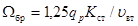
где vвт — скорость втекания в водоприемные отверстия, м/с, отнесенная к их сечению в свету;
1,25 — коэффициент, учитывающий засорение отверстий;
qр — расчетный расход одной секции, м3/с;
Kcn — коэффициент, учитывающий стеснение отверстий стержнями решеток или сеток, принимаемый
Кст=(аст+сст)/аст решеток и Кст=[(аст+сст)/аст ]2 для сеток,
где сст — расстояние между стержнями в свету, см;
aст —толщина стержней, см.
В водоприемниках фильтрующего типа площадь водоприемного фильтра следует определять по формуле (5) при значении коэффициента Кст = 1/Рф, где Рф — пористость фильтра, принимаемая для гравийно-щебеночных фильтров 0,3—0,5 м и пороэластовых — 0,25—0,35 м.
5.96. Низ водоприемных отверстий должен быть расположен не менее 0,5 м выше дна водоема или водотока, верх водоприемных отверстий или затопленных сооружений — не менее 0,2 м от нижней кромки льда.
5.97. Для борьбы с оледенением и закупоркой шугой водоприемников в тяжелых шуголедовых условиях следует предусматривать электрообогрев решеток, подвод к водоприемным отверстиям теплой воды или сжатого воздуха или импульсную промывку в сочетании с обратной. Стержни сороудерживающих решеток должны быть изготовлены из гидрофобных материалов или покрыты ими.
Примечание. Для удаления шуги из береговых водоприемных колодцев и сеточных камер должны предусматриваться соответствующие приспособления.
5.98. В случае необходимости следует предусматривать меры борьбы с обрастанием элементов водозаборного сооружения дрейсеной, балянусом, мидиями и т.п. путем обработки воды хлором или раствором медного купороса.
Дозы, периодичность и продолжительность обработки воды реагентами надлежит определять на основании данных технологических исследований.
При отсутствии этих данных дозу хлора следует принимать на 2 мг/л более хлорпоглощаемости воды, но не менее 5 мг/л.
Периодичность и продолжительность хлорирования рекомендуется принимать при хлорпоглощаемости воды:
до 3 мг/л — весной и осенью в течение 7 — 10 дней;
свыше 3 мг/л — с мая по октябрь в те дни, когда средняя суточная температура воздуха превышает +10 °С.
Дозу медного купороса (по меди) необходимо принимать 1 — 1,5 мг/л.
Периодичность и продолжительность купоросования надлежит предусматривать через каждые двое суток в течение 1 ч.
Примечания: 1. Допускается применение лакокрасочных и пластмассовых покрытий элементов водозаборных сооружений.
2. В период проведения обратной промывки водоприемников и самотечных водоводов подача реагентов в водоприемники не допускается.
5.99. Ориентировочные скорости движения воды в самотечных и сифонных водоводах при нормальном режиме работы водозаборных сооружений допускается принимать по табл. 14.
Таблица 14
|
Диаметры водоводов, мм |
Скорости движения воды, м/с, в водозаборах категорий |
|
|
I |
II и III |
|
|
300–500 |
0,7–1 |
1–1,5 |
|
500–800 |
1–1,4 |
1,5–1,9 |
|
Более 800 |
1,5 |
2 |
Примечание. При наличии возможности обрастания водоводов дрейсеной, балянусом, мидиями и т.п. расчет потерь в водоводе следует производить при значении коэффициента шероховатости 0,02.
5.100. Сифонные водоводы допускается применять в водозаборах II и III категорий.
Применение сифонных водоводов в водозаборах I категории должно быть обосновано.
5.101. Сифонные и самотечные водоводы, как правило, следует принимать из стальных труб. Допускается применение пластмассовых и железобетонных труб.
5.102. Для самотечных водоводов на участке примыкания к подземной части водоприемных колодцев и насосных станций, выполняемых опускных способом, рекомендуется метод бестраншейной прокладки.
5.103. Стальные самотечные и сифонные водоводы должны проверяться на всплывание и устраиваться с противокоррозионной оклеечной изоляцией, а при необходимости — и с катодной или протекторной защитой. При пересечении самотечными или сифонными водоводами участков с вечномерзлыми грунтами должны быть предусмотрены мероприятия, исключающие замерзание воды внутри водовода.
5.104. Самотечные и сифонные водоводы в пределах русла водотока должны защищаться снаружи от истираний донными наносами и от повреждений якорями путем заглубления водоводов под дно с учетом местных условий, но не менее чем на 0,5 м, или обсыпки грунтом с укреплением его от размыва.
5.105. Выбор типа сеток для предварительной очистки воды следует производить с учетом особенностей водоема и производительности водозабора.
Вращающиеся сетки следует применять в средних, тяжелых и очень тяжелых условиях загрязненности источника согласно табл. 12, а также при производительности водозабора более 1 м3/с.
5.106. При наличии рыбозащитных устройств в месте водоотбора рабочую площадь плоских или вращающихся сеток следует определять при минимальном уровне воды в сеточном колодце и скорости в отверстиях сетки, принимаемой не более 1 м/с.
5.107. При применении в качестве рыбозащитных мероприятий фильтрующих элементов или устройства водоприемников фильтрующего типа в отдельных случаях следует рассматривать возможность отказа от установки водоочистных сеток.
5.108. Насосные станции водозаборных сооружений следует проектировать в соответствии с указаниями разд. 7.
При этом в насосных станциях водозаборов рекомендуется применять насосы с вертикальным валом.
5.109. При проектировании водозаборных сооружений следует предусматривать устройства для удаления осадка из водоприемных камер (колодцев).
Для промывки сеток следует использовать воду из напорных водоводов. В случае недостаточности напора для их промывки следует предусматривать установку подкачивающих насосов.
6. ВОДОПОДГОТОВКА
6.1. Требования настоящего раздела не распространяются на установки водоподготовки теплоэнергетических объектов.
Проектирование установок водоподготовки котельных с котлами, работающими под давлением до 4 МПа (40 кгс/см2), а также систем теплоснабжения и горячего водоснабжения должно производиться в соответствии с указаниями СНиП II-35-76 и СНиП 2.04.07-86*.
6.2. Метод обработки воды, состав и расчетные параметры сооружений водоподготовки и расчетные дозы реагентов надлежит устанавливать в зависимости от качества воды в источнике водоснабжения, назначения водопровода, производительности станции и местных условий на основании данных технологических изысканий и опыта эксплуатации сооружений, работающих в аналогичных условиях.
6.3. Для подготовки воды питьевого качества могут быть приняты только те методы, по которым получены положительные гигиенические заключения.
6.4. Необходимо предусматривать повторное использование промывных вод фильтров, воды от обезвоживания и складирования осадков станций водоподготовки. При обосновании допускается сброс их в водотоки или водоемы при соблюдении требований «Правил охраны поверхностных вод от загрязнений сточными водами» или на канализационные очистные сооружения.
6.5. При проектировании оборудования, арматуры и трубопроводов станций водоподготовки следует учитывать требования разд. 12. Сооружения станций водоподготовки должны быть оборудованы приборами и устройствами для определения основных параметров их работы согласно разд. 13, а также устройствами для отбора проб до и после каждого сооружения.
6.6. Полный расход воды, поступающей на станцию, надлежит определять с учетом расхода воды на собственные нужды станции.
Ориентировочно среднесуточные (за год) расходы исходной воды на собственные нужды станций осветления, обезжелезивания и др. следует принимать: при повторном использовании промывной воды в размере 3—4 % количества воды, подаваемой потребителям, без повторного использования — 10—14 %, для станций умягчения — 20—30 %. Расходы воды на собственные нужды станций надлежит уточнять расчетами.
6.7. Станции водоподготовки должны рассчитываться на равномерную работу в течение суток максимального водопотребления, причем должна предусматриваться возможность отключения отдельных сооружений для профилактического осмотра, чистки, текущего и капитального ремонтов. Для станций производительностью до 5000 м3/сут допускается предусматривать работу в течение части суток.
6.8. Коммуникации станций водоподготовки надлежит рассчитывать на возможность пропуска расхода воды на 20—30 % больше расчетного.
ОСВЕТЛЕНИЕ И ОБЕСЦВЕЧИВАНИЕ ВОДЫ
6.9. Воды источников водоснабжения подразделяются:
а) в зависимости от расчетной максимальной мутности (ориентировочно количество взвешенных веществ) на:
маломутные — до 50 мг/л;
средней мутности — св. 50 до 250 мг/л;
мутные — св. 250 до 1500 мг/л;
высокомутные — св. 1500 мг/л;
б) в зависимости от расчетного максимального содержания гумусовых веществ, обусловливающих цветность воды, на:
малоцветные — до 35°;
средней цветности — св. 35 до 120°;
высокой цветности — св. 120°.
Расчетные максимальные значения мутности и цветности для проектирования сооружений станций водоподготовки следует определять по данным анализов воды за период не менее чем за последние три года до выбора источника водоснабжения.
6.10. При выборе сооружений для осветления и обесцвечивания воды рекомендуется руководствоваться указаниями п.п. 6.2 и 6.3, а для предварительного выбора — данными табл. 15.
|
Основные сооружения |
Условия применения |
Производительность станции, м3/сут |
|||
|
Мутность, мг/л |
Цветность, град |
||||
|
исходная вода |
очищенная вода |
исходная вода |
очищенная вода |
||
|
Обработка воды с применением коагулянтов и флокулянтов |
|||||
|
1. Скорые фильтры (одноступенчатое фильтрование): |
|||||
|
а) напорные |
До 30 |
До 1,5 |
До 50 |
До 20 |
До 5000 |
|
б) открытые |
« 20 |
« 1,5 |
« 50 |
« 20 |
« 50000 |
|
2. Вертикальные отстойники ¾ скорые фильтры |
« 1500 |
« 1,5 |
« 120 |
« 20 |
« 5000 |
|
3. Горизонтальные отстойники ¾ скорые фильтры |
« 1500 |
« 1,5 |
« 120 |
« 20 |
Св. 30000 |
|
4. Контактные префильтры ¾ скорые фильтры (двухступенчатое фильтрование) |
« 300 |
« 1,5 |
« 120 |
« 20 |
Любая |
|
5. Осветлители со взвешенным осадком ¾ скорые фильтры |
Не менее 50 до 1500 |
« 1,5 |
« 120 |
« 20 |
Св. 5000 |
|
6. Две ступени отстойников ¾ скорые фильтры |
Более 1500 |
« 1,5 |
« 120 |
« 20 |
Любая |
|
7. Контактные осветлители |
До 120 |
« 1,5 |
« 120 |
« 20 |
« |
|
8. Горизонтальные отстойники и осветлители со взвешенным осадком для частичного осветления воды |
« 1500 |
8 – 15 |
« 120 |
« 40 |
« |
|
9. Крупнозернистые фильтры для частичного осветления воды |
« 80 |
До 10 |
« 120 |
« 30 |
« |
|
10. Радиальные отстойники для предварительного осветления высокомутных вод |
Св. 1500 |
« 250 |
« 120 |
« 20 |
« |
|
11. Трубчатый отстойник и напорный фильтр заводского изготовления (типа «Струя») |
До 1000 |
« 1,5 |
« 120 |
« 20 |
До 800 |
|
Обработка воды без применения коагулянтов и флокулянтов |
|||||
|
12. Крупнозернистые фильтры для частичного осветления воды |
До 150 |
30 – 50 % исходной |
До 120 |
Такая же, как исходная |
Любая |
|
13. Радиальные отстойники для частичного осветления воды |
Более 1500 |
30 – 50 % исходной |
« 120 |
То же |
« |
|
14. Медленные фильтры с механической или гидравлической регенерацией песка |
До 1500 |
1,5 |
« 50 |
До 20 |
« |
Примечания: 1. Мутность указана суммарная, включая образующуюся от введения реагентов.
2. На водозаборных сооружениях или на станции водоподготовки необходимо предусматривать установку сеток с ячейками 0,5—2 мм. При среднемесячном содержании в воде планктона более 1000 кл/мл и продолжительности «цветения» более 1 мес в году в дополнение к сеткам на водозаборе следует предусматривать установку микрофильтров на водозаборе или на станции водоподготовки.
3. При обосновании для обработки воды допускается применять сооружения, не указанные в табл. 15 (плавучие водозаборы-осветлители, гидроциклоны, флотационные установки и др.).
4. Осветлители со взвешенным осадком следует применять при равномерной подаче воды на сооружения или постепенном изменении расхода воды в пределах не более 15 % в 1 ч и колебании температуры воды не более ±1°С в 1 ч.
6.11. Сетчатые барабанные фильтры следует применять для удаления из воды крупных плавающих и взвешенных примесей (барабанные сетки) и для удаления указанных примесей и планктона (микрофильтры).
Сетчатые барабанные фильтры следует размещать на площадке станций водоподготовки, при обосновании допускается их размещение на водозаборных сооружениях.
Сетчатые барабанные фильтры надлежит устанавливать до подачи в воду реагентов.
6.12. Количество резервных сетчатых барабанных фильтров надлежит принимать:
|
1 — при количестве рабочих агрегатов 1—5; |
|
2 — « « « « 6—10; |
|
3 — « « « « 11 и св. |
6.13. Установку сетчатых барабанных фильтров следует предусматривать в камерах. Допускается размещение в одной камере двух агрегатов, если число рабочих агрегатов св. 5.
Камеры должны оборудоваться спускными трубами.
В подводящем канале камер следует предусматривать переливной трубопровод.
6.14. Промывка сетчатых барабанных фильтров должна осуществляться водой, прошедшей через них.
Расходы воды на собственные нужды следует принимать: для барабанных сеток — 0,5 % и микрофильтров —1,5 % расчетной производительности.
Реагентное хозяйство
6.15. Расчетные дозы реагентов следует устанавливать для различных периодов года в зависимости от качества исходной воды и корректировать в период наладки и эксплуации сооружений. При этом надлежит учитывать допустимые их остаточные концентрации в обработанной воде, предусмотренные ГОСТ 2874-82 и технологическими требованиями.
6.16. Дозу коагулянта Дк, мг/л, в расчете на Al2(SO4)3, FeCl3, Fe2(SO4)3 (по безводному веществу) допускается принимать при обработке: мутных вод — по табл. 16, цветных вод — по формуле
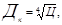
где Ц — цветность обрабатываемой воды, град.
Примечание. При одновременном содержании в воде взвешенных веществ и цветности принимается большая из доз коагулянта, определенных по табл. 16 и формуле (6).
|
Мутность воды, мг/л |
Доза безводного коагулянта для обработки мутных вод, мг/л |
|
До 100 |
25 – 35 |
|
Св. 100 до 200 |
30 – 40 |
|
« 200 « 400 |
35 – 45 |
|
« 400 « 600 |
45 – 50 |
|
« 600 « 800 |
50 – 60 |
|
« 800 « 1000 |
60 – 70 |
|
« 1000 « 1500 |
70 – 80 |
Примечания: 1. Меньшие значения доз относятся к воде, содержащей грубодисперсную взвесь.
2. При применении контактных осветлителей или фильтров, работающих по принципу коагуляции в зоне фильтрующей загрузки, дозу коагулянта следует принимать на 10—15 % меньше, чем по табл. 16 и формуле (6).
6.17. Дозу флокулянтов (в дополнение к дозам коагулянтов) следует принимать:
а) полиакриламида (ПАА) по безводному продукту:
при вводе перед отстойниками или осветлителями со взвешенным осадком — по табл. 17;
при вводе перед фильтрами при двухступенчатой очистке — 0,05—0,1 мг/л;
при вводе перед контактными осветлителями или фильтрами при одноступенчатой очистке, а также перед префильтрами — 0,2—0,6 мг/л;
Таблица 17
|
Мутность воды, мг/л |
Цветность воды, град |
Доза безводного ПАА, мг/л |
|
До 10 |
Св. 50 |
1 – 1,5 |
|
Св. 10 до 100 |
30 – 100 |
0,3 – 0,6 |
|
« 100 « 500 |
20 – 60 |
0,2 – 0,5 |
|
« 500 « 1500 |
¾ |
0,2 – 1 |
б) активной кремнекислоты (по SiO2):
при вводе перед отстойниками или осветлителями со взвешенным осадком для воды с температурой более 5—7 °С — 2—3 мг/л, с температурой менее 5—7 °С — 3—5 мг/л;
при вводе перед фильтрами при двухступенчатой очистке — 0,2—0,5 мг/л;
при вводе перед контактными осветлителями или фильтрами при одноступенчатой очистке, а также перед префильтрами — 1—3 мг/л.
Флокулянты следует вводить в воду после коагулянта. При очистке высокомутных вод допускается ввод флокулянтов до коагулянтов. Следует предусматривать возможность ввода флокулянтов и коагулянтов с разрывом во времени до 2—3 мин в зависимости от качества обрабатываемой воды.
6.18. Дозу хлорсодержащих реагентов (по активному хлору) при предварительном хлорировании и для улучшения хода коагуляции и обесцвечивания воды, а также для улучшения санитарного состояния сооружений следует принимать 3—10 мг/л.
Реагенты рекомендуется вводить за 1—3 мин до ввода коагулянтов.
6.19. Дозы подщелачивающих реагентов Дщ, мг/л, необходимых для улучшения процесса хлопьеобразования, надлежит определять по формуле
Дщ=Кщ(Дк/ек-Щ0)+1, (7)
где Дк — максимальная в период подщелачивания доза безводного коагулянта, мг/л;
ек — эквивалентная масса коагулянта (безводного), мг/мг-экв, принимаемая для Al2(SO4)3 – 57, FeCl3 – 54, Fe2(SO4)3 – 67;
Кщ — коэффициент, равный для извести (по СаО) — 28, для соды (по Na2CO3) — 53;
Щ0 — минимальная щелочность воды, мг-экв/л.
Реагенты следует вводить одновременно с вводом коагулянтов.
6.20. Приготовление и дозирование реагентов надлежит предусматривать в виде растворов или суспензий. Количество дозаторов следует принимать в зависимости от числа точек ввода и производительности дозатора, но не менее двух (один резервный).
Гранулированные и порошкообразные реагенты надлежит, как правило, принимать в сухом виде.
6.21. Концентрацию раствора коагулянта в растворных баках, считая по чистому и безводному продукту, следует принимать: до 17 % — для неочищенного, до 20 % — для очищенного кускового, до 24 % — для очищенного гранулированного; в расходных баках — до 12 %.
6.22. Время полного цикла приготовления раствора коагулянта (загрузка, растворение, отстаивание, перекачка, при необходимости чистка полдона) при температуре воды до 10 °С следует принимать 10—12 ч.
Для ускорения цикла приготовления коагулянта до 6—8 ч рекомендуется использование воды температурой до 40 °С.
Количество растворных баков надлежит принимать с учетом объема разовой поставки, способов доставки и разгрузки коагулянта, его вида, а также времени его растворения и должно быть не менее трех.
Количество расходных баков должно быть не менее двух.
6.23. Для растворения коагулянта и перемешивания его в баках надлежит предусматривать подачу сжатого воздуха с интенсивностью:
8—10 л/(с×м2) — для растворения;
3—5 л/(с×м2) — для перемешивания при разбавлении до требуемой концентрации в расходных баках.
Распределение воздуха следует предусматривать дырчатыми трубами.
Допускается применение для растворения коагулянта и перемешивания его раствора механических мешалок или циркуляционных насосов.
6.24. Растворные баки в нижней части следует проектировать с наклонными стенками под углом 45° к горизонтали для неочищенного и 15° для очищенного коагулянта. Для опорожнения баков и сброса осадка следует предусматривать трубопроводы диаметром не менее 150 мм.
При применении кускового коагулянта в баках должны быть предусмотрены съемные колосниковые решетки с прозорами 10—15 мм.
При применении гранулированного и порошкообразного коагулянта необходимо предусматривать на колосниковой решетке сетку из кислотостойкого материала с отверстиями 2 мм.
Примечание. Допускается уменьшение угла наклона стенок баков для неочищенного коагулянта до 25° при оборудовании подколосниковой части баков системой гидросмыва осадка и одновременной подаче сжатого воздуха.
6.25. Днища расходных баков должны иметь уклон не менее 0,01 к сбросному трубопроводу диаметром не менее 100 мм.
6.26. Забор раствора коагулянта из растворных и расходных баков следует предусматривать с верхнего уровня.
6.27. Внутренняя поверхность баков должна быть защищена кислотостойкими материалами.
6.28. При применении в качестве коагулянта сухого хлорного железа в верхней части растворного бака следует предусматривать колосниковую решетку. Баки должны размещаться в изолированном помещении (боксе) с вытяжной вентиляцией.
6.29. Для транспортирования раствора коагулянта следует применять кислотостойкие материалы и оборудование.
Конструкции реагентопроводов должны обеспечивать возможность их быстрой прочистки и промывки.
6.30. Полиакриламид следует применять в виде раствора с концентрацией полимера 0,1—1 %.
Приготовление раствора из технического полиакриламида надлежит производить в баках с механическими лопастными мешалками. Продолжительность приготовления раствора из ПАА геля 25—40 мин, из ПАА сухого 2 ч. Для ускорения приготовления раствора ПАА следует использовать горячую воду с температурой не выше 50 °С.
6.31. Количество мешалок, а также объем расходных баков для растворов ПАА следует определять исходя из сроков хранения 0,7— 1 % растворов не более 15 сут, 0,4—0,6 % растворов — 7 сут и 0,1—0,3 % растворов — 2 сут.
6.32. Приготовление растворов активной кремнекислоты (АК) производится путем обработки жидкого стекла раствором сернокислого алюминия или хлором.
Активацию сернокислым алюминием или хлором следует производить на установках непрерывного или периодического действия.
6.33. Для подщелачивания и стабилизации воды следует применять известь. При обосновании допускается применение соды.
6.34. Выбор технологической схемы известкового хозяйства станции водоподготовки надлежит производить с учетом качества и вида заводского продукта, потребности в извести, места ее ввода и т.д. В случае применения комовой негашеной извести следует принимать мокрое хранение ее в виде теста.
При расходе извести до 50 кг/сут по СаО допускается применение схемы с использованием известкового раствора, получаемого в сатураторах двойного насыщения.
6.35. Количество баков для известкового молока или раствора надлежит предусматривать не менее двух. Концентрацию известкового молока в расходных баках следует принимать не более 5 % по СаО.
6.36. Для очистки известкового молока от нерастворимых примесей при стабилизационной обработке воды надлежит применять вертикальные отстойники или гидроциклоны.
Скорость восходящего потока в вертикальных отстойниках следует принимать 2 мм/с.
Для очистки известкового молока на гидроциклонах необходимо обеспечивать двухкратный его пропуск через гидроциклоны.
6.37. Для непрерывного перемешивания известкового молока следует применять гидравлическое перемешивание (с помощью насосов) или механические мешалки.
При гидравлическом перемешивании восходящая скорость движения молока в баке должна приниматься не менее 5 мм/с. Баки должны иметь конические днища с наклоном 45° и сбросные трубопроводы диаметром не менее 100 мм.
Примечание. Допускается для перемешивания известкового молока применять сжатый воздух при интенсивности подачи 8—10 л/(с×м2).
6.38. Диаметры трубопроводов подачи известкового молока должны быть: напорных при подаче очищенного продукта не менее 25 мм, неочищенного — не менее 50 мм, самотечных — не менее 50 мм. Скорость движения в трубопроводах известкового молока должна приниматься не менее 0,8 м/с. Повороты на трубопроводах известкового молока следует предусматривать с радиусом не менее 5d, где d — диаметр трубопровода. Напорные трубопроводы проектируются с уклоном к насосу не менее 0,02, самотечные трубопроводы должны иметь уклон к выпуску не менее 0,03°.
При этом следует предусматривать возможность промывки и прочистки трубопроводов.
6.39. Концентрацию раствора соды следует принимать 5—8 %. Дозирование раствора соды следует предусматривать согласно п. 6.20.
СМЕСИТЕЛЬНЫЕ УСТРОЙСТВА
6.40. Смесительные устройства должны включать устройства ввода реагентов, обеспечивающие быстрое равномерное распределение реагентов в трубопроводе или канале подачи воды на сооружения водоподготовки, и смесители, обеспечивающие последующее интенсивное смешение реагентов с обрабатываемой водой.
6.41. Смесительные устройства должны обеспечивать последовательный с необходимым разрывом времени ввод реагентов согласно п.п. 6.17—6.19 и рекомендуемому прил. 4 с учетом длительности пребывания воды в трубопроводах или каналах между устройствами ввода реагентов.
6.42. Устройства ввода реагентов следует выполнять в виде перфорированных трубчатых распределителей или вставок в трубопровод, создающих местные сопротивления. Распределители реагентов должны быть доступны для прочистки и промывки без прекращения процесса обработки воды. Потерю напора в трубопроводе при установке трубчатого распределителя надлежит принимать 0,1—0,2 м, при установке вставки — 0,2—0,3 м.
6.43. Смешение реагентов с водой надлежит предусматривать в смесителях гидравлического типа (вихревых, перегородчатых). При обосновании допускается применение смесителей механического типа (мешалок).
6.44. Число смесителей (секций) надлежит принимать не менее двух с возможностью отключения их в периоды интенсивного хлопьеобразования.
Резервные смесители (секции) принимать не следует, но необходимо предусматривать обводной трубопровод в обход смесителей с размещением в нем резервных устройств ввода реагентов согласно п. 6.42.
6.45. Вихревые смесители надлежит применять при поступлении на станцию воды с крупнодисперсными взвешенными веществами и при использовании реагентов в виде суспензий или частично осветленных растворов.
Вихревые смесители следует принимать в виде конического или пирамидального вертикального диффузора с углом между наклонными стенками 30—45°, высотой верхней части с вертикальными стенками от 1 до 1,5 м, при скорости входа воды в смеситель от 1,2 до 1,5 м/с, скорости восходящего движения воды под водосборным устройством от 30 до 40 мм/с, скорости движения воды в конце водосборного лотка 0,6 м/с.
6.46. Перегородчатые смесители надлежит принимать в виде каналов с перегородками, обеспечивающими горизонтальное или вертикальное движение воды с поворотами на 180°. Число поворотов следует принимать равным 9–10.
6.47. Потерю напора h на одном повороте перегородчатого смесителя следует определять по формуле
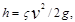
где z — коэффициент гидравлического сопротивления, принимаемый равным 2,9;
v — скорость движения воды в смесителе, принимаемая уменьшающейся от 0,7 до 0,5 м/с;
g — ускорение свободного падения, равное 9,8 м/с2.
6.48. Смесители должны оборудоваться переливными и спускными трубами. Следует предусматривать возможность уменьшения числа перегородок для сокращения времени пребывания воды в смесителях в периоды интенсивного хлопьеобразования.
6.49. Скорость движения воды в трубопроводах или каналах от смесителей к камерам хлопьеобразования и осветлителям со взвешенным осадком следует принимать уменьшающейся от 1 до 0,6 м/с. При этом время пребывания воды в них должно быть не более 1,5 мин.
6.50. Воздухоотделители следует предусматривать при применении отстойников с камерами хлопьеобразования со слоем взвешенного осадка, осветлителей со взвешенным осадком, контактных осветлителей и контактных префильтров.
6.51. Площадь воздухоотделителя надлежит принимать из расчета скорости движения нисходящего потока воды не более 0,05 м/с и времени пребывания воды в нем не менее 1 мин.
Воздухоотделители допускается предусматривать общими на все виды сооружения или для каждого сооружения отдельно.
В тех случаях, когда конструкция смесителей сможет обеспечить выделение из воды пузырьков воздуха и на пути движения воды от смесителей к сооружениям обогащение воды воздухом исключается, воздухоотделители предусматривать не следует.
6.52. В отстойниках надлежит предусматривать встроенные камеры хлопьеобразования гидравлического типа. При обосновании допускается применение камер хлопьеобразования механического типа.
6.53. В горизонтальных отстойниках гидравлические камеры хлопьеобразования следует предусматривать перегородчатые, вихревые или со слоем взвешенного осадка.
6.54. Перегородчатые камеры хлопьеобразования следует принимать с горизонтальным или вертикальным движением воды. Скорость движения воды в коридорах следует принимать 0,2—0,3 м/с в начале камеры и 0,05—0,1 м/с в конце камеры за счет увеличения ширины коридора.
Время пребывания воды в камере хлопьеобразования следует принимать равным 20—30 мин (нижний предел — для мутных вод, верхний — для цветных с низкой температурой зимой).
Ширина коридора должна быть не менее 0,7 м. Число поворотов потока в перегородчатой камере следует принимать равным 8—10.
Допускается применение двухэтажных камер.
Потерю напора в камере следует определять согласно п. 6.47.
6.55. Вихревые камеры хлопьеобразования следует проектировать с вертикальными или наклонными стенками (угол между стенками следует принимать в зависимости от высоты камеры в пределах 50—70°). Время пребывания воды в камере следует принимать равным 6—12 мин (нижний предел — для мутных вод, верхний предел — для цветных вод).
Скорость входа воды в камеры следует принимать 0,7—1,2 м/с, скорость восходящего потока на выходе из камеры 4—5 мм/с.
Отвод воды из камер хлопьеобразования в отстойники следует предусматривать при скорости движения воды в сборных лотках, трубах и отверстиях не более 0,1 м/с для мутных вод и 0,05 м/с для цветных вод.
Потерю напора в камере следует определять согласно п. 6.47.
6.56. Камеры хлопьеобразования со слоем взвешенного осадка с вертикальными перегородками надлежит применять для вод средней мутности и мутных вод. Восходящую скорость движения воды следует принимать 0,65— 1,6 мм/с при осветлении вод средней мутности и 0,8—2,2 мм/с при осветлении мутных вод.
При применении встроенных камер хлопьеобразования со слоем взвешенного осадка расчетную скорость осаждения взвеси в отстойнике при обработке мутных вод надлежит принимать на 20 %, при обработке вод средней мутности на 15 % более, чем указано в табл. 18.
|
Скорость выпадения взвеси u0, задерживаемой отстойниками, мм/с |
|
|
Маломутные цветные воды, обрабатываемые коагулянтом |
0,35 – 0,45 |
|
Воды средней мутности, обрабатываемые коагулянтом |
0,45 – 0,5 |
|
Мутные воды, обрабатываемые: |
|
|
коагулянтом |
0,5 – 0,6 |
|
флокулянтом |
0,2 – 0,3 |
|
Мутные воды, не обрабатываемые коагулянтом |
0,08 – 0,15 |
|
Примечания: 1. В случае применения флокулянтов при коагулировании воды скорости выпадения взвеси следует увеличивать на 15—20 %. 2. Нижние пределы u0 указаны для хозяйственно-питьевых водопроводов. |
|
6.57. Распределение воды по площади камеры хлопьеобразования со взвешенным осадком следует предусматривать с помощью напорных перфорированных труб с отверстиями, направленными вниз под углом 45°. Расстояние между перфорированными трубами следует принимать 2 м, от стенки камеры — 1 м.
Потери напора в перфорированных распределительных трубах надлежит определять согласно п. 6.86.
Скорость движения воды в начале распределительных труб следует принимать 0,5— 0,6 м/с, площадь отверстий 30—40 % площади сечения распределительной трубы, диаметр отверстий — не менее 25 мм.
6.58. Отвод воды из камер хлопьеобразования в отстойники надлежит предусматривать при скорости движения воды не более 0,1 м/с для мутных вод и 0,05 м/с для цветных вод. На входе воды в отстойник следует устанавливать подвесную перегородку, погруженную на 1/4 высоты отстойника. Скорость движения воды между стенкой и перегородкой должна быть не более 0,03 м/с.
6.59. В вертикальных отстойниках следует предусматривать гидравлическую камеру хлопьеобразования водоворотного типа, располагаемую в центре отстойника. Воду надлежит подавать в камеру хлопьеобразования через сопла, направленные по касательной. В нижней части камеры должны предусматриваться решетки с ячейками размером 0,5´0,5 м, высотой 0,8 м.
Потерю напора в сопле следует определять по формуле (8) п. 6.47, принимая скорость движения воды при выходе из сопла 2—3 м/с и коэффициент гидравлического сопротивления z = 1,18.
Сопло надлежит располагать на расстоянии 0,2dк от стенки камеры (dк — диаметр камеры хлопьеобразования) на глубине 0,5 м от поверхности воды.
6.60. Площадь камеры хлопьеобразования водоворотного типа следует определять из расчета времени пребывания воды в ней в течение 15— 20 мин и высоты камеры, принимаемой 3,5—4 м.
6.61. Над камерами хлопьеобразования необходимо предусматривать павильоны шириной не более 6 м.
6.62. При количестве встроенных в отстойники камер хлопьеобразования менее шести следует предусматривать одну резервную (п.п. 6.63, 6.68).
6.63. Площадь зоны осаждения Fв.о, м2 вертикального отстойника без установки в нем тонкослойных блоков следует определять по формуле (9) для двух периодов:
минимальной мутности при минимальном зимнем расходе воды;
наибольшей мутности при наибольшем расходе воды, соответствующем этому периоду.
Расчетная площадь зоны осаждения должна соответствовать наибольшему значению
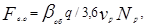
где q — расчетный расход для периодов максимального и минимального суточного водопотребления, м3/ч;
vp — расчетная скорость восходящего потока, мм/с, принимается при отсутствии данных технологических изысканий не более указанных в табл. 18 величин скоростей выпадения взвеси с учетом п. 6.56;
Np — количество рабочих отстойников;
bоб — коэффициент, учитывающий объемное использование отстойника, величина которого принимается 1,3—1,5 (нижний предел — при отношении диаметра к высоте отстойника — 1, верхний — при отношении диаметра к высоте — 1,5).
При количестве отстойников менее шести следует предусматривать один резервный.
6.64. При установке в зоне осаждения тонкослойных блоков площадь зоны осаждения определяется исходя из удельных нагрузок, отнесенных к площади зеркала воды, занятой тонкослойными блоками: для маломутных и цветных вод, обработанных коагулянтом, 3— 3,5 м3/(ч×м2), для средней мутности 3,6—4,5 м3/(ч×м2), для мутных вод 4,6—5,5 м3/(ч×м2).
6.65. Зона накопления и уплотнения осадка вертикальных отстойников должна предусматриваться с наклонными стенками. Угол между наклонными стенками следует принимать 70—80°.
Сброс осадка следует предусматривать без выключения отстойника. Период работы, Тр, ч, между сбросами осадка следует определять по формуле
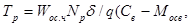
где Wос.ч — объем зоны накопления и уплотнения осадка, м3;
d — средняя по всей высоте осадочной части концентрация твердой фазы в осадке, г/м3 в зависимости от мутности воды и продолжительности интервалов между сбросами принимаемая по данным табл. 19;
Мосв — мутность воды, выходящей из отстойника, г/м3, принимаемая от 8 до 15 г/м3;
Св — концентрация взвешенных веществ в воде, г/м3, поступающих в отстойник, определяемая по формуле
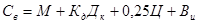
где М — количество взвешенных вещества исходной воде, г/м3 (принимается равным мутности воды);
Дк — доза коагулянта по безводному продукту, г/м3;
Кк — коэффициент, принимаемый для очищенного сернокислого алюминия — 0,5, для нефелинового коагулянта — 1,2, для хлорного железа ¾ 0,7;
Ц — цветность исходной воды, град;
Вн — количество нерастворимых веществ, вводимых с известью, г/м3, которое определяется по формуле
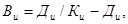
где Кн — долевое содержание СаО в извести,
Дн — доза извести по СаО, г/м3.
Период работы отстойника между сбросами осадка должен быть не менее 6 ч.
6.66. Сбор осветленной воды в вертикальных отстойниках следует предусматривать периферийными и радиальными желобами с отверстиями или с треугольными вырезами.
Сечения желобов следует рассчитывать на скорость движения воды 0,5—0,6 м/с.
6.67. Горизонтальные отстойники надлежит проектировать с рассредоточенным по площади сбором воды. Расчет отстойников следует производить для двух периодов согласно п. 6.63.
Площадь горизонтальных отстойников в плане Fг.о, м2, следует определять по формуле
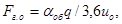
где q — расчетный расход воды, м3/ч, принимаемый согласно п. 6.63;
u0 — скорость выпадения взвеси, мм/с, принимаемая по табл. 18;
aоб — коэффициент объемного использования отстойников, принимаемый равным 1,3.
|
Мутность исходной воды, мг/л |
Применяемые реагенты |
Средняя по высоте осадочной части отстойника концентрация твердой фазы в осадке, г/м3, при интервалах между сбросами осадка, ч |
||
|
6 |
12 |
24 и более |
||
|
До 50 |
Коагулянт |
9 000 |
12 000 |
15 000 |
|
Св. 50 до 100 |
« |
12 000 |
16 000 |
20 000 |
|
« 100 « 400 |
« |
20 000 |
32 000 |
40 000 |
|
« 400 « 1000 |
« |
35 000 |
50 000 |
60 000 |
|
« 1000 « 1500 |
« |
80 000 |
100 000 |
120 000 |
|
« 1500 |
Флокулянт |
90 000 |
140 000 |
160 000 |
|
« 1500 |
Без реагентов |
200 000 |
250 000 |
300 000 |
Примечание. При обработке исходной воды коагулянтами совместно с флокулянтами среднюю концентрацию твердой фазы в осадке надлежит принимать на 25 % больше для маломутных цветных вод и на 15 % — для вод средней мутности.
При установке в зоне осаждения тонкослойных блоков площадь отстойника следует определять согласно п. 6.64. Блоки следует предусматривать на всей длине отстойника.
6.68. Длину отстойников L, м, следует определять по формуле
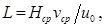
где Нср — средняя высота зоны осаждения, м, принимаемая равной 3—3,5 м в зависимости от высотной схемы станции;
vср — расчетная скорость горизонтального движения воды в начале отстойника, принимаемая равной 6—8, 7—10 и 9—12 мм/с соответственно для вод маломутных, средней мутности и мутных.
Отстойник должен быть разделен продольными перегородками на самостоятельно действующие секции шириной не более 6 м.
При количестве секций менее шести следует предусматривать одну резервную.
6.69. Горизонтальные отстойники следует проектировать с механическим или гидравлическим удалением осадка (без выключения подачи воды в отстойник) или предусматривать в них гидравлическую систему смыва осадка с периодическим отключением подачи воды в отстойник в случае осветления мутных вод с образованием малоподвижных осадков. Для обмыва стен и днища отстойников следует предусматривать трубопровод с вентилями для присоединения шлангов.
6.70. Для отстойников с механизированным удалением осадка скребковыми механизмами объем зоны накопления и уплотнения осадка надлежит определять в зависимости от размеров скребков, сгребающих осадок в приямок.
При гидравлическом удалении или напорном смыве осадка объем зоны накопления и уплотнения осадка определяется из формулы (10) при продолжительности работы отстойника между чистками не менее 12 ч.
Среднюю концентрацию уплотненного осадка следует определять по табл. 19.
6.71. Для гидравлического удаления осадка следует предусматривать сборную систему из перфорированных труб, обеспечивающую удаление его в течение 20—30 мин.
Дно отстойника между трубами сборной системы осадка надлежит принимать плоским или призматическим с углом наклона граней 45°.
Расстояние между осями труб следует принимать не более 3 м — при призматическом днище и 2 м — при плоском.
Скорость движения осадка в конце труб надлежит принимать не менее 1 м/с; в отверстиях — 1,5—2 м/с; диаметр отверстий — не менее 25 мм, расстояние между отверстиями — 300—500 мм.
Отверстия следует располагать в шахматном порядке вниз под углом 45° к оси трубы.
Отношение суммарной площади отверстий к площади сечения труб надлежит принимать равным 0,5—0,7.
В начале трубы следует предусматривать отверстие диаметром не менее 15 мм для выпуска воздуха.
Гидравлический расчет сборной системы осадка следует выполнять согласно п. 6.86.
6.72. Напорные гидравлические системы смыва осадка, включающие телескопические дырчатые трубы с насадками, насосную установку, резервуар промывной воды и емкости для сбора и уплотнения осадка перед подачей его на сооружения обезвоживания, следует проектировать для удаления из отстойников тяжелых, трудноудаляющихся осадков, образующихся при осветлении мутных и высокомутных вод.
6.73. Высоту отстойников надлежит определять как сумму высот зоны осаждения и зоны накопления осадка с учетом величины превышения строительной высоты над расчетным уровнем воды не менее 0,3 м.
6.74. Количество воды, сбрасываемой из отстойника вместе с осадком, следует определять с учетом коэффициента разбавления, принимаемого:
1,5 — при гидравлическом удалении осадка;
1,2 — при механическом удалении осадка;
2—3 — при напорном смыве осадка.
При гидравлическом удалении осадка продольный уклон дна отстойника следует принимать не менее 0,005.
6.75. Сбор осветленной воды следует предусматривать системой горизонтально расположенных дырчатых труб или желобов с затопленными отверстиями или треугольными водосливами, расположенными на участке 2/3 длины отстойника, считая от задней торцевой стенки, или на всю длину отстойника при оснащении его тонкослойными блоками.
Скорость движения осветленной воды в конце желобов и труб следует принимать 0,6— 0,8 м/с, в отверстиях — 1 м/с.
Верх желоба с затопленными отверстиями должен быть на 10 см выше максимального уровня воды в отстойнике, заглубление трубы под уровень воды необходимо определять гидравлическим расчетом.
Отверстия в желобе следует располагать на 5—8 см выше дна желоба, в трубах — горизонтально по оси. Диаметр отверстий должен быть не менее 25 мм.
Излив воды из желобов и труб в сборный карман должен быть свободным (незатопленным).
Расстояние между осями желобов или труб должно быть не менее 3 м.
6.76. В перекрытии отстойников следует предусматривать люки для спуска в отстойники, отверстия для отбора проб на расстоянии не более 10 м друг от друга и вентиляционные трубы.
Осветлители со взвешенным осадком
6.77. Расчет осветлителей следует производить с учетом годовых колебаний качества обрабатываемой воды.
При отсутствии данных технологических исследований скорость восходящего потока в зоне осветления vосв и коэффициент распределения воды между зоной осветления и зоной отделения осадка Кр.в следует принимать по данным табл. 20 с учетом примечания к табл. 18.
|
Мутность воды, поступающей в осветлитель, мг/л |
Скорость восходящего потока воды в зоне осветления vосв, мм/с |
Коэффициент распределения воды Кр.в |
|
|
в зимний период |
в летний период |
||
|
От 50 до 100 |
0,5 ¾ 0,6 |
0,7 ¾ 0,8 |
0,7 ¾ 0,8 |
|
Св. 100 « 400 |
0,6 ¾ 0,8 |
0,8 ¾ 1 |
0,8 ¾ 0,7 |
|
« 400 « 1000 |
0,8 ¾ 1 |
1 ¾ 1,1 |
0,7 ¾ 0,65 |
|
« 1000 « 1500 |
1 ¾ 1,2 |
1,1 ¾ 1,2 |
0,64 ¾ 0,6 |
Примечание. Нижние пределы указаны для хозяйственно-питьевых водопроводов.
6.78. Для зон осветления и отделения осадка надлежит принимать наибольшие значения площадей, полученные при расчете для двух периодов согласно п. 6.63.
Площадь зоны осветления Fосв, м2, следует определять по формуле
(15)
где Кр.в — коэффициент распределения воды между зонами осветления и отделения осадка (осадкоуплотнителем), принимаемый по табл. 20;
vосв — скорость восходящего потока воды в зоне осветления, мм/с, по табл. 20.
Площадь зоны отделения осадка Fотд, м2, надлежит определять по формуле
(16)
При установке в зонах осаждения и отделения осадка тонкослойных блоков площадь зон, занятых блоками, должна определяться согласно п. 6.64.
6.79. Высоту слоя взвешенного осадка следует принимать от 2 до 2,5 м. Низ осадкоприемных окон или кромку осадкоотводящих труб следует располагать на 1—1,5 м выше перехода наклонных стенок зоны взвешенного осадка осветлителя в вертикальные.
Угол между наклонными стенками нижней части зоны взвешенного осадка следует принимать 60—70°.
Высоту зоны осветления надлежит принимать 2—2,5 м.
Расстояние между сборными лотками или трубами в зоне осветления надлежит принимать не более 3 м.
Высота стенок осветлителей должна на 0,3 м превышать расчетный уровень воды в них.
6.80. Объем зоны накопления и уплотнения осадка следует определять по формуле (10) время уплотнения надлежит принимать не менее 6 ч при отсутствии на станции отдельных сгустителей осадка и 2—3 ч при наличии сгустителей и автоматизации выпуска осадка.
6.81. Удаление осадка из осадкоуплотнителя надлежит предусматривать периодически дырчатыми трубами. Количество сбрасываемой с осадком воды следует определять по табл. 19 с учетом коэффициента разбавления осадка, принимаемого 1,5.
6.82. Распределение воды по площади осветления надлежит принимать дырчатыми трубами, укладываемыми на расстоянии не более 3 м друг от друга.
Скорость движения воды при входе в распределительные трубы должна быть 0,5—0,6 м/с, скорость выхода из отверстий дырчатых труб — 1,5—2 м/с. Диаметр отверстий не менее 25 мм, расстояние между отверстиями не более 0,5 м, отверстия надлежит располагать вниз под углом 45° к вертикали по обе стороны трубы в шахматном порядке.
6.83. Скорость движения воды с осадком следует принимать в осадкоприемных окнах 10—15 мм/с, в осадкоотводящих трубах 40—60 мм/с (большие значения относятся к водам, содержащим преимущественно минеральную взвесь).
6.84. Сбор осветленной воды в зоне осветления надлежит предусматривать желобами с треугольными водосливами высотой 40—60 мм при расстоянии между осями водосливов — 100—150 мм и угле между кромками водослива 60°. Расчетная скорость движения воды в желобах 0,5—0,6 м/с.
6.85. Сбор осветленной воды из осадкоуплотнителя следует предусматривать затопленными дырчатыми трубами.
В вертикальных осадкоуплотнителях верх сборных дырчатых труб должен быть расположен не менее чем на 0,3 м ниже уровня воды в осветлителях и не менее чем на 1,5 м выше верха осадкоприемных окон.
В поддонных осадкоуплотнителях сборные дырчатые трубы для отвода осветленной воды следует располагать под перекрытием. Диаметр труб для отвода осветленной воды следует определять исходя из скорости движения воды не более 0,5 м/с, скорости входа веды в отверстия труб не менее 1,5 м/с, диаметра отверстий 15—20 мм.
На сборных трубах при выходе их в сборный канал следует предусматривать установку запорной арматуры.
Перепад отметок между низом сборной трубы и уровнем воды в общем сборном канале осветлителя следует принимать не менее 0,4 м.
6.86. Потери напора, м, в перфорированных распределительных и сборных трубах и желобах для воды и осадка следует определять исходя из максимальной скорости движения воды в них по формуле (8) или (22) принимая значения коэффициентов гидравлического сопротивления:
— для прямолинейной распределительной трубы или коллектора с ответвлениями с круглыми отверстиями;
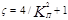
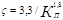
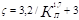
где КП — коэффициент перфорации — отношение суммарной площади отверстий или щелей к площади поперечного сечения прямолинейной трубы или коллектора или к площади живого сечения в конце сборного желоба, 0,15 £ КП £ 2.
Потери напора в коммуникациях до и после перфорированных участков труб и желобов, а также местные гидравлические сопротивления на указанных участках надлежит учитывать дополнительно.
Потери напора в слое взвешенного осадка следует принимать 0,01—0,02 м вод.ст. на 1 м его высоты.
6.87. Трубы для удаления осадка из осадкоуплотнителя надлежит рассчитывать из условия отведения накопившегося осадка не более чем за 15—20 мин. Диаметр труб для удаления осадка должен быть не менее 150 мм. Расстояние между стенками соседних труб или каналов следует принимать не более 3 м.
Среднюю скорость движения осадка в отверстиях дырчатых труб следует принимать не более 3 м/с, скорость в конце дырчатой трубы не менее 1 м/с, диаметр отверстий не менее 20 мм, расстояние между отверстиями не более 0,5 м.
6.88. Угол между наклонными стенками осадкоуплотнителей следует принимать равным 70°.
При применении осветлителей с поддонными осадкоуплотнителями люк, соединяющий зону взвешенного осадка с осадкоуплотнителем, должен быть оборудован устройством, автоматически открывающимся при понижении уровня воды в осветлителе ниже верха осадкоотводящих труб (при выпуске осадка и опорожнении).
6.89. При количестве осветлителей менее шести следует предусматривать один резервный.
Сооружения для осветления высокомутных вод
6.90. Для осветления высокомутных вод следует предусматривать двухступенчатое отстаивание с обработкой воды реагентами перед отстойниками первой и второй ступеней.
В качестве отстойников первой ступени следует предусматривать радиальные отстойники со скребками на вращающихся фермах или горизонтальные отстойники с цепными скребковыми механизмами. Допускается для удаления осадка применение гидравлической системы его смыва. При обосновании допускается использовать для первой ступени осветления плавучий водозабор-осветлитель с тонкослойными элементами без применения реагентов.
6.91. Виды и дозы реагентов, вводимых в воду перед отстойниками первой и второй ступеней, надлежит определять на основании технологических исследований.
6.92. Камеры хлопьеобразования в горизонтальных отстойниках при осветлении высокомутных вод, как правило, следует проектировать механического типа. Перед радиальными отстойниками камеры хлопьеобразования не предусматриваются. Горизонтальные отстойники следует проектировать согласно п.п. 6.67—6.76.
6.93. Площадь радиальных отстойников Fр.о, м2, при их использовании для первой ступени отстаивания высокомутных вод следует определять по формуле
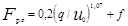
где q — расчетный расход, м3/ч;
u0 — скорость выпадения взвеси, принимаемая 0,5—0,6 мм/с;
f — площадь вихревой зоны радиального отстойника, радиус которой принимается на 1 м больше радиуса распределительного устройства, м2.
Низ центрального распределительного устройства делается глухим, верх его должен быть на глубине, равной высоте слоя воды у периферийной стенки; радиус его следует принимать равным 1,5—2,5 м. Площадь отверстий в боковой стенке водораспределительного устройства надлежит определять из расчета скорости движения воды через них 1 м/с при диаметре отверстий 40—50 мм.
Сбор осветленной воды следует предусматривать периферийным желобом с затопленными отверстиями или с треугольными водосливами согласно п. 6.84.
6.94. Среднюю концентрацию уплотненного осадка в отстойниках первой ступени следует принимать 150—160 г/л.
6.95. Фильтры и их коммуникации должны быть рассчитаны на работу при нормальном и форсированном (часть фильтров находится в ремонте) режимах. На станциях с количеством фильтров до 20 следует предусматривать возможность выключения на ремонт одного фильтра, при большем количестве — двух фильтров.
6.96. Для загрузки фильтров надлежит использовать кварцевый песок, дробленые антрацит и керамзит, а также другие материалы. Все фильтрующие материалы должны обеспечивать технологический процесс и обладать требуемой химической стойкостью и механической прочностью. При хозяйственно-питьевом водоснабжении должны учитываться требования п. 1.3.
6.97. Скорости фильтрования при нормальном и форсированном режимах при отсутствии данных технологических изысканий надлежит принимать согласно табл. 21 с учетом обеспечения продолжительности работы фильтров между промывками, не менее: при нормальном режиме — 8—12 ч, при форсированном режиме или полной автоматизации промывки фильтров — 6 ч и обеспечения для хозяйственно-питьевых водопроводов требований ГОСТ 2874-82.
6.98. Общую площадь Fф, м2, следует определять по формуле
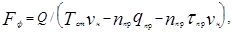
где Q — полезная производительность станции, м3/сут;
Тст — продолжительность работы станции в течение суток, ч;
vн — расчетная скорость фильтрования при нормальном режиме, м/ч, принимаемая по табл. 21, с учетом расчетов по формуле (20);
nпр — число промывок одного фильтра в сутки при нормальном режиме эксплуатации;
qпр — удельный расход воды на одну промывку одного фильтра, м3/м2, следует рассчитывать с учетом п. 6.110.
tпр — время простоя фильтра в связи с промывкой, принимаемое для фильтров, промываемых водой, — 0,33 ч, водой и воздухом — 0,5 ч.
Примечание. При водовоздушной промывке величина qпр определяется как сумма соответствующих величин на отдельных этапах промывки.
6.99. Количество фильтров на станциях производительностью более 1600 м3/сут должно быть не менее четырех. При производительности станции более 8—10 тыс. м3/сут количество фильтров следует определять с округлением до ближайших целых чисел (четных или нечетных в зависимости от компоновки фильтров) по формуле
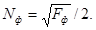
При этом должно обеспечиваться соотношение
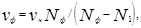
где N1 —число фильтров, находящихся в ремонте (см. п. 6.95);
vф — скорость фильтрования при форсированном режиме, которая должна быть не более, указанной в табл. 21.
Площадь одного фильтра надлежит принимать не более 100—120 м2.
6.100. Предельные потери напора в фильтре следует принимать для открытых фильтров 3—3,5 м в зависимости от типа фильтра, для напорных фильтров — 6—8 м.
6.101. Высота слоя воды над поверхностью загрузки в открытых фильтрах должна быть не менее 2 м; превышение строительной высоты над расчетным уровнем воды — не менее 0,5 м.
6.102. При выключении части фильтров на промывку скорость фильтрования на остальных фильтрах надлежит принимать постоянной или повышающейся; при этом скорости фильтрования не должны превышать величину vф, указанную в табл. 21. При работе фильтров с постоянной скоростью фильтрования надлежит предусматривать над нормальным уровнем воды в фильтрах дополнительную высоту Ндоп, м, определяемую по формуле
(21)
где W0 — объем воды, м3, накапливающейся за время простоя одновременно промываемых фильтров;
|
Фильтры |
Характеристика фильтрующего слоя |
Скорость фильтрования, м/ч |
||||||
|
Материал загрузки |
Диаметр зерен, мм |
Коэффициент неоднородности загрузки |
Высота слоя, м |
|||||
|
наименьших |
наибольших |
эквивалентный |
при нормальном режиме vн |
при форсированном режиме vф |
||||
|
Однослойные скорые фильтры с загрузкой различной крупности |
Кварцевый песок |
0,5 |
1,2 |
0,7 – 0,8 |
1,8 – 2 |
0,7 – 0,8 |
5 – 6 |
6 – 7,5 |
|
0,7 |
1,6 |
0,8 – 1 |
1,6 – 1,8 |
1,3 – 1,5 |
6 – 8 |
7 – 9,5 |
||
|
0,8 |
2 |
1 – 1,2 |
1,5 – 1,7 |
1,8 – 2 |
8 – 10 |
10 – 12 |
||
|
Дробленный керамзит |
0,5 |
1,2 |
0,7 – 0,8 |
1,8 – 2 |
0,7 – 0,8 |
6 – 7 |
7 – 9 |
|
|
0,7 |
1,6 |
0,8 – 1 |
1,6 – 1,8 |
1,3 – 1,5 |
7 – 9,5 |
8,5 – 11,5 |
||
|
0,8 |
2 |
1 – 1,2 |
1,5 – 1,7 |
1,8 – 2 |
9,5 – 12 |
12 – 14 |
||
|
Скорые фильтры с двухслойной загрузкой |
Кварцевый песок |
0,5 |
1,2 |
0,7 – 0,8 |
1,8 – 2 |
0,7 – 0,8 |
7 – 10 |
8,5 – 12 |
|
Дробленный керамзит или антрацит |
0,8 |
1,8 |
0,9 – 1,1 |
1,6 – 1,8 |
0,4 – 0,5 |
|||
Примечания: 1. Расчетные скорости фильтрования в указанных пределах должны приниматься в зависимости от качества воды в источнике водоснабжения, технологии ее обработки перед фильтрованием и других местных условий. При очистке воды для хозяйственно-питьевых нужд надлежит принимать меньшие значения скоростей фильтрования.
2. Однослойные скорые фильтры с крупностью загрузки 0,8—2 мм надлежит применять только для производственного водоснабжения.
3. Допускаются отклонения в крупности загрузки фильтров в пределах до 10 %.
4. При применении фильтрующих материалов, не предусмотренных табл. 21, рекомендуемые параметры необходимо уточнять на основании экспериментальных данных или имеющегося опыта применения.
5. Эквивалентный диаметр зерен dз мм, следует определять из выражения
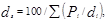
где Рi — процентное содержание фракций со средним диаметром зерен di, мм.
6. Коэффициент неоднородности загрузки равен: Кнз = d80/d10,
где d10 — диаметр зерен загрузки, мм, прошедших через отверстия сит в количестве 10 % общей массы;
d80 — диаметр зерен загрузки, мм, прошедших через отверстия сит в количестве 80 % обшей массы.
7. При использовании фильтров в схемах очистки воды двухступенчатым фильтрованием скорости фильтрования на них следует принимать на 10—15 % больше.
8. При применении загрузок из дробленых керамзита и антрацита водовоздушная промывка не допускается.
SFф — суммарная площадь фильтров, м2 в которых происходит накопление воды.
При форсированном режиме скорости движения воды в трубопроводах (подающем и отводящем фильтрат) должны быть не более 1— 1,5 м/с.
6.103. Трубчатые распределительные (дренажные) системы большого сопротивления следует принимать с выходом воды в поддерживающие слои (гравий или другие аналогичные материалы) или непосредственно в толщу фильтрующего слоя. Необходимо предусматривать возможность прочистки распределительной системы, а для коллекторов диаметром более 800 мм их ревизию.
6.104. Крупность фракций и высоту поддерживающих слоев при распределительных системах большого сопротивления следует принимать по табл. 22.
Таблица 22
|
Крупность зерен, мм |
Высота слоя, мм |
|
40 – 20 |
Верхняя граница слоя должна быть на уровне верха распределительной трубы, но не менее чем на 100 мм выше отверстий |
|
20 – 10 |
100 – 150 |
|
10 – 5 |
100 – 150 |
|
5 – 2 |
50 – 100 |
Примечания: 1. При водовоздушной промывке с подачей воздуха по трубчатой системе высоту слоев крупностью 10—5 мм и 5—2 мм следует принимать по 150— 200 мм каждый.
2. Для фильтров с крупностью загрузки менее 2 мм следует предусматривать дополнительный поддерживающий слой с размером зерен 2—1,2 мм высотой 100 мм.
6.105. На ответвлениях трубчатого дренажа следует предусматривать: при наличии поддерживающих слоев — отверстия диаметром 10—12 мм, при их отсутствии — щели шириной на 0,1 мм меньше минимального размера зерен фильтрующей загрузки. Общая площадь отверстий должна составлять 0,25—0,5 % рабочей площади фильтра; площадь щелей — 1,5—2 % рабочей площади фильтра. Отверстия надлежит располагать в два ряда в шахматном порядке под углом 45° к низу от вертикали. Щели должны размещаться равномерно поперек оси и по периметру трубы не менее чем в два ряда.
Расстояние между осями ответвлений следует принимать 250—350 мм, между осями отверстий 150—200 мм, между щелями не менее 20 мм, от низа ответвлений до дна фильтра 80—120 мм.
Потери напора в распределительной системе следует определять по формуле
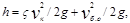
где vк — скорость в начале коллектора, м/с;
vб.о — средняя скорость на входе в ответвления, м/с;
z — коэффициент гидравлического сопротивления, принимаемый согласно п. 6.86.
Потеря напора в распределительной системе при промывке фильтра не должна превышать 7 м вод. ст.
6.106. Площадь поперечного сечения коллектора трубчатой распределительной системы следует принимать постоянной по длине. Скорость движения воды при промывке следует принимать: в начале коллектора 0,8— 1,2 м/с, в начале ответвлений 1,6—2 м/с.
Конструкция коллектора должна обеспечивать возможность укладки ответвлений горизонтально и с одинаковым шагом.
6.107. Допускается применять распределительную систему без поддерживающих слоев в виде каналов, располагаемых перпендикулярно коллектору (сбросному каналу) и перекрываемых сверху полимербетонными плитами толщиной не менее 40 мм.
6.108. Распределительную систему с колпачками надлежит принимать при водяной и воздушной промывке; количество колпачков должно быть 35—50 на 1 м2 рабочей площади фильтра.
Потерю напора в щелевых колпачках следует определять по формуле (8), принимая скорость движения воды или водовоздушной смеси в щелях колпачка не менее 1,5 м/с и коэффициент гидравлического сопротивления z =4.
6.109. Для удаления воздуха из трубопровода, подающего воду на промывку фильтров, следует предусматривать стояки-воздушники диаметром 75—150 мм с установкой на них запорной арматуры или автоматических устройств для выпуска воздуха; на коллекторе фильтра надлежит также предусматривать стояки-воздушники диаметром 50—75 мм, количество которых следует принимать при площади фильтра до 50 м2 — один, при большей площади — два (в начале и конце коллектора), с установкой на стояках вентилей или других устройств для выпуска воздуха.
Трубопровод, подающий воду на промывку фильтров, надлежит располагать ниже кромки желобов фильтров.
Опорожнение фильтра необходимо предусматривать через распределительную систему и отдельную спускную трубу диаметром 100—200 мм (в зависимости от площади фильтра) с задвижкой.
6.110. Для промывки фильтрующей загрузки надлежит применять воду, очищенную на фильтрах. Допускается применение верхней промывки с распределительной системой над поверхностью загрузки фильтров.
Параметры промывки водой загрузки из кварцевого песка следует принимать по табл. 23.
|
Фильтры и их загрузка |
Интенсивность промывки, л/(с× м2) |
Продолжительность промывки, мин |
Величина относительного расширения загрузки, % |
|
Скорые с однослойной загрузкой диаметром D, мм: |
|||
|
0,7 – 0,8 |
12 – 14 |
45 |
|
|
0,8 – 1 |
14 – 16 |
6 – 5 |
30 |
|
1 – 1,2 |
16 – 18 |
25 |
|
|
Скорые с двухслойной загрузкой |
14 – 16 |
7 – 6 |
50 |
Примечания: 1. Большим значениям интенсивности промывки соответствуют меньшие значения продолжительности.
2. При неподвижном устройстве для верхней промывки интенсивность ее следует принимать 3—4 л/(с×м2), напор 30—40 м. Продолжительность промывки 5—8 мин, из них 2—3 мин до проведения нижней промывки. Распределительные трубы следует располагать на расстоянии 60—80 мм от поверхности загрузки через каждые 700—1000 мм. Расстояние между отверстиями в распределительных трубах или между насадками необходимо принимать 80—100 мм. При вращающемся устройстве интенсивность промывки следует принимать 0,5—0,75 л/(с×м2), напор 40—45 м.
При загрузке керамзитом интенсивность промывки следует принимать 12—15 л/(с×м2) в зависимости от марки керамзита (большие интенсивности относятся к керамзитам большей плотности).
6.111. Для сбора и отведения промывной воды следует предусматривать желоба полукруглого или пятиугольного сечения. Расстояние между осями соседних желобов должно быть не более 2,2 м. Ширину желоба Вжел надлежит определять по формуле
(23)
где qжел — расход воды по желобу, м3/с;
ажел — отношение высоты прямоугольной части желоба к половине его ширины, принимаемое от 1 до 1,5;
Кжел — коэффициент, принимаемый равным: для желобов с полукруглым лотком — 2, для пятиугольных желобов — 2,1.
Кромки всех желобов должны быть на одном уровне и строго горизонтальны.
Лотки желобов должны иметь уклон 0,01 к сборному каналу.
6.112. В фильтрах со сборным каналом расстояние от дна желоба до дна канала Нкан следует определять по формуле
(24)
где qкан — расходы вод по каналу, м3/с;
Вкан — ширина канала, м, принимаемая не менее 0,7 м.
Примечание. Уровень воды в канале с учетом подпора, создаваемого трубопроводом, отводящим промывную воду, должен быть на 0,2 м ниже дна желоба.
6.113. Расстояние от поверхности фильтрующей загрузки до кромок желобов Нж надлежит определять по формуле
(25)
где Нз — высота фильтрующего слоя, м;
аз — относительное расширение фильтрующей загрузки в процентах, принимаемое по табл. 23.
6.114. Водовоздушную промывку надлежит применять для фильтров с загрузкой из кварцевого песка при следующем режиме: продувка воздухом с интенсивностью 15—20 л/(с×м2) в течение 1—2 мин, затем совместная водовоздушная промывка с интенсивностью подачи воздуха 15—20 л/(с×м2) и воды 3—4 л/(с×м2) в течение 4—5 мин и последующая подача воды (без продувки) с интенсивностью 6—8 л/(с×м2) в течение 4—5 мин.
Примечания: 1. Более крупнозернистым загрузкам соответствуют большие интенсивности подачи воды и воздуха.
2. При обосновании допускается применять режимы промывки, отличающиеся от указанного.
6.115. При водовоздушной промывке воду и воздух следует подавать через распределительные системы со специальными колпачками или по раздельным трубчатым распределительным системам для воды и воздуха.
6.116. При водовоздушной промывке надлежит применять систему горизонтального отвода промывной воды с пескоулавливающим желобом, образованным двумя наклонными стенками — водосливной и отбойной.
6.117. Вода на промывку должна подаваться насосами или из бака. В зависимости от числа фильтров на станции промывные системы должны быть рассчитаны на промывку одного или нескольких фильтров одновременно. Объем промывного бака должен обеспечивать одну дополнительную промывку сверх расчетного их числа.
Напор воды для промывки фильтров следует принимать с учетом потерь напора в распределительной системе, подводящих коммуникациях промывной воды и при загрузке фильтров.
Насос для подачи воды в бак должен обеспечивать его наполнение за время не больше, чем интервалы между промывками фильтров при форсированном режиме. Забор воды насосом, подающим воду в бак, следует производить из резервуара фильтрованной воды. Допускается производить забор из трубопровода фильтрованной воды, если он не превышает 50 % расхода фильтрата.
Для промывки фильтров забор воды должен производиться из резервуаров фильтрованной воды, в которых надлежит предусматривать запас воды на одну дополнительную промывку сверх расчетного их числа.
Скорости движения воды в трубопроводах, подающих и отводящих промывную воду, следует принимать 1,5—2 м/с. Должна быть исключена возможность подсоса воздуха в трубопроводы, подающие промывную воду на фильтры, а также подпора воды в трубопроводах, отводящих промывную воду.
6.118. Крупнозернистые фильтры следует применять для частичного осветления воды, используемой для производственных целей, с коагуляцией или без нее.
6.119. Для загрузки фильтров следует применять кварцевый песок и другие материалы, обеспечивающие технологический процесс и обладающие требуемой механической прочностью и химической стойкостью. Характеристика загрузки фильтров приведена в табл. 24.
6.120. Напорные крупнозернистые фильтры следует рассчитывать на предельную потерю напора в фильтрующей загрузке и дренаже до 15 м.
|
Материал загрузки |
Крупность материала загрузки, мм |
Коэффициент неоднородности, не более |
Высота слоя загрузки, м |
Скорость фильтрования, м/ч |
|
Кварцевый песок |
1 – 2 |
1,8 |
1,5 – 2 |
10 – 12 |
|
То же |
1,6 – 2,5 |
2 |
2,5 – 3 |
13 – 15 |
Примечание. Для частичного осветления воды допускается применение фильтров специальной конструкции с плавающей загрузкой из пенополистирола.
открытые — 3—3,5 м. В открытых фильтрах необходимо предусматривать слой воды над уровнем загрузки 1,5 м.
6.121. Промывку крупнозернистых фильтров надлежит предусматривать с применением воды и воздуха. Водяную и воздушную распределительные системы или объединенную водовоздушную распределительную систему надлежит рассчитывать согласно п.п. 6.108, 6.109, 6.115—6.117 на подачу воды и воздуха с интенсивностями, приведенными в п. 6.123.
6.122. Проектирование устройств для отвода промывной воды из открытых фильтров надлежит производить согласно п. 6.116.
6.123. При расчете крупнозернистых фильтров надлежит принимать следующий режим промывки: взрыхление фильтрующей загрузки воздухом интенсивностью 15—25 л/(с×м2) — 1 мин; водовоздушная промывка с интенсивностью 3,5—5 л/(с×м2) воды и 15—25 л/(с×м2) воздуха — 5 мин; отмывка водой с интенсивностью 7—9 л/(с×м2) — 3 мин. Большие значения интенсивности промывки относятся к более крупной загрузке.
6.124. Площадь крупнозернистых фильтров следует определять согласно п. 6.98.
6.125. При количестве фильтров до 10 следует предусматривать возможность выключения на ремонт одного фильтра, при большем количестве — двух фильтров. При этом скорость фильтрования на оставшихся в работе фильтрах не должна превышать наибольших значений, указанных в табл. 24.
6.126. На станциях контактного осветления воды надлежит предусматривать сетчатые барабанные фильтры и входную камеру, обеспечивающую требуемый напор воды, смешение и контакт воды с реагентами, а также выделение из воды воздуха.
6.127. Объем входной камеры должен определяться из условия пребывания воды в ней не менее 5 мин. Камера должна быть секционирована не менее чем на 2 отделения, в каждом из которых надлежит предусматривать переливные и спускные трубы.
Примечания: 1. Сетчатые барабанные фильтры надлежит располагать над входной камерой; установка их в отдельно стоящем здании допускается при обосновании. Проектирование их следует выполнять согласно п.п. 6.11—6.14.
2. Смесительные устройства, последовательность и время разрыва между вводом реагентов надлежит принимать согласно п.п. 6.40; 6.41; 6.17—6.19.
При этом необходимо предусматривать возможность дополнительного ввода реагента после входной камеры.
6.128. Превышение уровня воды во входных камерах над уровнем в контактных осветлителях Ну , м, следует определять по формуле
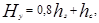
где hз — предельно допустимая потеря напора в песчаном слое загрузки, принимаемая равной высоте его слоя, м;
hс — сумма всех потерь напора на пути движения воды от начала входной камеры до загрузки осветлителей, м.
Отвод воды из входных камер на контактные осветлители должен предусматриваться на отметке не менее чем на 2 м ниже уровня воды в осветлителях. В камерах и трубопроводах должна быть исключена возможность насыщения воды воздухом.
6.129. Контактные осветлители при промывке водой надлежит предусматривать без поддерживающих слоев, при промывке водой и воздухом — с поддерживающими слоями.
Загрузку контактных осветлителей надлежит принимать по табл. 25.
Таблица 25
|
Показатель |
Высота гравийных и песчаных слоев, м, для осветлителя |
|
|
без поддерживающих слоев |
с поддерживающими слоями |
|
|
Крупность зерен гравия и песка, мм: |
||
|
40 – 20 |
¾ |
0,2 – 0,25 |
|
20 – 10 |
¾ |
0,1 – 0,15 |
|
10 – 5 |
¾ |
0,15 – 0,2 |
|
5 – 2 |
0,5 – 0,6 |
0,3 – 0,4 |
|
2 – 1,2 |
1 – 1,2 |
1,2 – 1,3 |
|
1,2 – 0,7 |
0,8 – 1 |
0,8 – 1 |
|
Эквивалентный диаметр зерен песка, мм |
1 – 1,3 |
1 – 1,3 |
Примечания: 1. Для контактных осветлителей с поддерживающими слоями верхняя граница гравия крупностью 40—20 мм должна быть на уровне верха труб распределительной системы. Общая высота загрузки должна быть не св. 3 м.
2. Для загрузки контактных осветлителей следует применять гравий и кварцевый песок, а также другие материалы, отвечающие требованиям п. 6.96 с плотностью 2,5— 3,5 г/см3.
6.130. Скорости фильтрования в контактных осветлителях следует принимать:
без поддерживающих слоев при нормальном режиме — 4—5 м/ч, при форсированном — 5—5,5 м/ч; с поддерживающими слоями при нормальном режиме 5—5,5 м/ч, при форсированном — 5,5—6 м/ч.
При очистке воды для хозяйственно-питьевых нужд надлежит принимать меньшие значения скоростей фильтрования.
Допускается предусматривать работу контактных осветлителей с переменной, убывающей к концу цикла скоростью фильтрования при условии, чтобы средняя скорость равнялась расчетной.
6.131. Общую площадь контактных осветлителей Fк.о, м2, надлежит определять с учетом сброса первого фильтрата по формуле
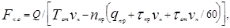
где tст — продолжительность сброса первого фильтрата, мин, принимаемая согласно п. 6.133, остальные обозначения — по формуле (18).
Количество осветлителей на станции следует определять согласно п. 6.99.
6.132. Для промывки следует использовать очищенную воду. Допускается использование неочищенной воды при условиях: мутности ее не более 10 мг/л, коли-индекса — 1000 ед/л, предварительной обработки воды на барабанных сетках (или микрофильтрах) и обеззараживания. При использовании очищенной воды должен быть предусмотрен разрыв струи перед подачей воды в емкость для хранения промывной воды. Непосредственная подача воды на промывку из трубопроводов и резервуаров фильтрованной воды не допускается.
6.133. Режим промывки контактных осветлителей водой надлежит принимать по табл. 26.
Водовоздушную промывку контактных осветлителей надлежит предусматривать со следующим режимом: взрыхление загрузки воздухом с интенсивностью 18—20 л/(с×м2) в течение 1—2 мин; совместная водовоздушная промывка при подаче воздуха 18—20 л/(с×м2) и воды 3—3,5 л/(с×м2) при продолжительности 6—7 мин; дополнительная промывка водой с интенсивностью 6—7 л/(с×м2) продолжительностью 5—7 мин.
Продолжительность сброса первого фильтрата при промывке водой, мин:
очищенной — 5—10;
неочищенной — 10—15.
6.134. В контактных осветлителях с поддерживающими слоями и водовоздушной промывкой надлежит применять трубчатые распределительные системы для подачи воды и воздуха и систему горизонтального отвода промывной воды.
В контактных осветлителях без поддерживающих слоев должна предусматриваться распределительная система с приваренными вдоль дырчатых труб боковыми шторками, между которыми привариваются поперечные перегородки, разделяющие подтрубное пространство на ячейки. Отверстия в дырчатых трубах следует располагать в два ряда в шахматном порядке, они должны быть направлены вниз под углом 30° к вертикальной оси трубы. Диаметр отверстий — 10—12 мм, расстояние между осями в ряду — 150—200 мм. Распределительную систему надлежит проектировать в соответствии с табл. 27.
6.135. В контактных осветлителях без поддерживающих слоев сбор промывной воды надлежит принимать желобами согласно п.п. 6.111—6.113. Над кромками желобов следует предусматривать пластины с треугольными вырезами высотой и шириной по 50—60 мм, с расстояниями между их осями 100—150 мм.
|
Показатель |
Единица измерения |
Количество |
|
Продолжительность промывки |
мин |
7 – 8 |
|
Интенсивность подачи воды |
л/(с× м2) |
15 – 18 |
|
Продолжительность сброса первого фильтрата при промывке водой: |
||
|
очищенной |
мин |
10 – 12 |
|
неочищенной (см. п. 6.132) |
« |
12 – 15 |
|
Диаметр труб ответвлений, мм |
Отношение суммарной площади отверстий к площади осветлителя, % |
Расстояния, мм |
|||
|
между осями труб ответвлений |
от дна осветителя до низа шторок |
от низа шторок до оси труб ответвлений |
между поперечными перегородками |
||
|
75 |
0,28 – 0,3 |
240 – 260 |
100 – 120 |
155 |
300 – 400 |
|
100 |
0,26 – 0,28 |
300 – 320 |
120 – 140 |
170 |
400 – 600 |
|
125 |
0,24 – 0,26 |
350 – 370 |
140 – 160 |
190 |
600 – 800 |
|
150 |
0, 22 – 0,24 |
440 – 470 |
160 – 180 |
220 |
800 – 1000 |
Примечания: 1. Скорость движения воды на входе в трубы ответвлений при промывке надлежит принимать 1,4—1,8 м/с.
2. Большим расстояниям между осями труб соответствуют большие расстояния от дна осветлителя до низа шторок.
6.136. Каналы и коммуникации для подачи и отвода воды, баки и насосы для промывки контактных осветлителей надлежит проектировать согласно п.п. 6.107, 6.109, 6.117, при этом низ патрубка, отводящего осветленную воду из контактных осветлителей, должен быть на 100 мм выше уровня воды в сборном канале при промывке.
Трубопроводы отвода осветленной и промывной воды должны предусматриваться на отметках, исключающих возможность подтопления осветлителей во время рабочего цикла и при промывках.
Для опорожнения контактных осветлителей на нижней части коллектора распределительной системы должен предусматриваться трубопровод с запорным устройством диаметром, обеспечивающим скорость нисходящего потока воды в осветлителе не более 2 м/ч при наличии поддерживающих слоев и не более 0,2 м/ч — без поддерживающих слоев. При опорожнении осветлителей без поддерживающих слоев следует предусматривать устройства, исключающие вынос загрузки.
6.137. Расчетные скорости фильтрования на медленных фильтрах надлежит принимать в пределах 0,1—0,2 м/ч, при этом скорость выше 0,1 м/ч — только на время промывки фильтра.
Количество фильтров должно приниматься не менее трех. Ширина фильтра должна быть не более 6 м, длина — не более 60 м.
Крупность зерен и высоту слоев загрузки фильтров следует принимать по табл. 28.
Таблица 28
|
№ слоя сверху вниз |
Загрузочный материал |
Крупность зерен, мм |
Высота слоя загрузки, мм |
|
1 |
Песок |
0,3 – 1 |
500 |
|
2 |
« |
1 – 2 |
50 |
|
3 |
« |
2 – 5 |
50 |
|
4 |
Гравий или щебень |
5 – 10 |
50 |
|
5 |
То же |
10 – 20 |
50 |
|
6 |
« |
20 – 40 |
50 |
6.138. Медленные фильтры следует проектировать с механической или гидравлической регенерацией песчаной загрузки.
Расход воды на один смыв загрязнений с 1 м2 поверхности загрузки фильтра надлежит принимать 9 л/с, продолжительность смыва загрязнений на каждые 10 м длины фильтра — 3 мин.
6.139. Вода на регенерацию медленного фильтра должна поступать от специального насоса или из специального бака. Допускается регенерацию фильтра предусматривать за счет форсирования производительности насосов, подающих воду на осветление, или за счет частичного использования емкости фильтров, работающих в режиме фильтрования.
6.140. Слой воды над поверхностью загрузки медленных фильтров должен приниматься 1,5 м. При наличии перекрытия над фильтрами расстояние от поверхности загрузки до перекрытия должно быть достаточным для обеспечения работ по регенерации, а также смены и отмывки загрузки.
В фильтрах следует устанавливать дренаж из перфорированных труб, кирпича или бетонных плиток, уложенных с прозорами, пористого бетона и др.
6.141. Контактные префильтры следует применять при двухступенчатом фильтровании для предварительной очистки воды перед скорыми фильтрами (второй ступени).
Конструкция контактных префильтров аналогична конструкции контактных осветлителей с поддерживающими слоями и водовоздушной промывкой; при их проектировании следует руководствоваться п.п. 6.126—6.136. При этом площадь префильтров надлежит определять с учетом пропуска расхода воды на промывку скорых фильтров второй ступени.
6.142. При отсутствии технологических изысканий основные параметры контактных префильтров следует принимать:
высоту слоев песка,
|
при крупности зерен, мм: |
|
|
5 – 2 |
0,5 – 0,6 м |
|
2 – 1 |
2 – 2,3 « |
|
эквивалентный диаметр зерен песка |
1,1 – 1,3 мм |
|
скорость фильтрования при нормальном режиме |
5,5 – 6,5 м/ч |
|
скорость фильтрования при форсированном режиме |
6,5 – 7,5 « |
6.143. Следует предусматривать смешение фильтрата одновременно работающих контактных префильтров перед подачей его на скорые фильтры.
ОБЕЗЗАРАЖИВАНИЕ ВОДЫ
6.144. Выбор метода обеззараживания воды надлежит производить с учетом расхода и качества воды, эффективности ее очистки, условий поставки, транспорта, хранения реагентов, возможности автоматизации процессов и механизации трудоемких работ.
6.145. Введение хлорсодержащих реагентов для обеззараживания воды следует предусматривать в трубопроводы перед резервуарами чистой воды.
Необходимость обеззараживания подземных вод определяется органами санитарно-эпидемиологической службы.
Примечание. При обосновании допускается предусматривать для ввода и контакта хлорсодержащих реагентов с водой специальные контактные резервуары.
6.146. Дозу активного хлора для обеззараживания воды следует устанавливать на основании данных технологических изысканий. При их отсутствии для предварительных расчетов следует принимать для поверхностных вод после фильтрования 2—3 мг/л, для вод подземных источников 0,7—1 мг/л.
Концентрации остаточного свободного и связанного хлора надлежит принимать в соответствии с ГОСТ 2874-82.
Примечание. При хранении в резервуарах воды на хозяйственно-литьевые нужды на время выключения одного из них на промывку и ремонт в случаях, когда не обеспечивается время контакта воды с хлором, следует предусматривать подачу дозы хлора в два раза больше, чем при нормальной эксплуатации. При этом увеличение подачи хлора допускается предусматривать за счет включения резервных хлораторов.
6.147. Хлорное хозяйство должно обеспечить прием, хранение, испарение жидкого хлора, дозирование газообразного хлора с получением хлорной воды.
Подача хлорной воды должна производиться раздельно на каждое место ввода.
Хлорное хозяйство следует располагать в отдельно стоящих хлораторных, в которых сблокированы расходный склад хлора, испарительная и хлордозаторная. Расходный склад хлора допускается располагать в отдельных зданиях или примыкать к хлордозаторной и вспомогательным помещениям хлорного хозяйства (компрессорной, венткамерам и т.п.); при этом следует отделять его от других помещений глухой стеной без проемов.
6.148. Расходные склады хлора следует проектировать согласно п.п. 6.211 и 6.212. При обосновании в составе хлораторных склад хлора может не предусматриваться; в этом случае в хлордозаторной допускается установка 1 баллона жидкого хлора массой нетто не более 70 кг.
6.149. Испарители хлора следует размещать в складе хлора или хлордозаторной. Испарение хлора необходимо производить в специальных испарителях или баллонах (при поставке в них хлора).
Температура воды, подаваемой в испаритель, должна быть в пределах 10—30 °С, при этом снижение температуры воды в испарителе должно быть не более 5°.
Испаритель должен быть оборудован устройствами для контроля температуры воды и давления хлора и воды. При подаче газообразного хлора за пределы здания хлораторной после испарителя необходимо предусматривать устройства для очистки газа, а также клапан, поддерживающий после себя вакуум, при котором не происходит конденсации хлора при наименьшей температуре наружного воздуха.
Протяженность трубопровода газообразного хлора не должна превышать 1 км.
6.150. Хлордозаторные без испарителей, располагаемые в блоке с другими зданиями водопровода или вспомогательными помещениями хлорного хозяйства, должны быть отделены от других помещений глухой стеной без проемов и снабжены двумя выходами наружу, при этом один из них через тамбур. Все двери должны открываться наружу. Пол хлордозаторной, располагаемой над другими помещениями, должен быть газонепроницаемым. Хлордозаторные размещать в заглубленных помещениях не допускается.
6.151. Для дозирования хлора должны применяться автоматические вакуумные хлораторы.
Расчетные расходы и напоры воды, подаваемой на хлоратор, и напор хлорной воды после него следует определять по характеристикам хлоратора, а также по расположению его относительно точки ввода хлора.
Допускается применение хлораторов ручного регулирования, при этом расход хлора контролируется весовым способом.
6.152. Количество резервных хлораторов на одну точку ввода надлежит принимать: при 1—2 рабочих хлораторах — 1, при более двух — 2.
Допускается предусматривать общие резервные хлораторы на две точки ввода хлора.
Работа двух и более хлораторов со струйными эжекторами на один трубопровод хлорной воды не допускается.
6.153. Хлоропроводы для транспортирования жидкого и газообразного хлора следует выполнять из бесшовных стальных труб.
Количество хлоропроводов следует принимать не менее двух, из них один резервный.
Хлоропроводы и арматуру на них надлежит предусматривать на рабочее давление 1,6 МПа (16 кгс/см2) и пробное давление 2,3 МПа (23 кгс/см2).
Прокладку хлоропроводов внутри помещений следует предусматривать на кронштейнах, укрепленных на стенах и колоннах; вне зданий — на эстакадах с защитой от воздействия солнечных лучей. Хлоропроводы следует окрашивать перхлорвиниловыми эмалями. Соединения труб надлежит принимать на сварке или муфтах с проваркой их концов или на фланцах с уплотнительной поверхностью типа «выступ-впадина» с применением хлорустойчивых прокладок (паронит) и болтов из нержавеющей стали.
Трубопроводы жидкого хлора должны иметь уклон 0,01 в сторону сосуда с хлором, при этом на хлоропроводе не должно быть мест, в которых возможно образование гидравлического затвора или газовой пробки.
Диаметр хлоропроводов следует принимать при расчетном расходе хлора с коэффициентом 3 с учетом объемной массы жидкого хлора 1,4 т/м3, газообразного — 0,0032 т/м3 скорости в трубопроводах 0,8 м/с для жидкого хлора, 2,5—3,5 м/с для газообразного. При этом диаметр хлоропровода должен быть не более 80 мм.
Необходимо предусматривать устройство для удаления из системы газообразного хлора при переключении контейнера или баллона, а также для периодического удаления из трубопроводов и испарителей треххлористого азота, при этом рекомендуется использовать сухой сжатый азот, воздух и др.
Продукты продувки должны обезвреживаться путем пропуска их через слой нейтрализационного раствора.
6.154. Трубопроводы для хлорной воды следует предусматривать из материалов, обладающих коррозионной стойкостью к ней: резины, полиэтилена высокой плотности, поливинилхлорида и др. Внутри помещений трубопроводы хлорной воды надлежит располагать в каналах, устраиваемых в полу, или на кронштейнах и сплошных опорах.
Вне помещений надлежит предусматривать подземную укладку трубопроводов хлорной воды в каналах или футлярах из труб, обладающих коррозионной стойкостью.
В каналах и футлярах не допускается располагать трубопроводы другого назначения, кроме теплового сопровождения.
Необходимо предусматривать температурную компенсацию труб, а также возможность замены труб в футлярах и каналах.
На наружных трубопроводах хлорной воды следует предусматривать колодцы, в которых прерываются футляры, для наблюдения за возможной утечкой хлорной воды, при этом дно колодцев должно покрываться химически стойкими эмалями. Расстояние между колодцами должно быть не более 30 м.
Глубина заложения низа футляра без теплового сопровождения должна быть не менее глубины промерзания грунта.
6.155. Воздух, выбрасываемый в атмосферу постоянно действующими вентиляционными системами складов хлора и хлордозаторных, должен удаляться через трубу, высота которой определяется согласно п. 14.38.
При необходимости, определяемой расчетом, следует предусматривать очистку выбрасываемого вентиляторами воздуха.
При хранении на складе контейнеров для хлора очистка воздуха при аварии обязательна, при этом концентрацию хлора в воздухе, выбрасываемом вентиляторами при аварии, следует определять по площади растекания хлора из одного контейнера и интенсивности испарения с поверхности пола 5—6 кг/(ч×м2).
6.156. Для очистки воздуха следует применять орошаемые скрубберы высотой не менее 3 м, скорость движения воздуха следует принимать не более 1,2 м/с, интенсивность орошения не менее 20 м3/(ч×м2). Насадка скрубберов должна быть из материалов, стойких к воздействию хлорной воды.
Орошение скрубберов следует предусматривать нейтрализационным раствором (водный раствор — 3 % соды и 2 % гипосульфита натрия).
6.157. Электролитическое приготовление гипохлорита натрия следует предусматривать из раствора поваренной соли или естественных минерализованных вод с содержанием хлоридов не менее 50 г/л на станциях водоподготовки с расходом хлора до 50 кг/сут.
6.158. Хранение соли следует принимать согласно п.п. 6.203 и 6.213.
Количество растворных баков для получения насыщенного раствора поваренной соли следует принимать не менее двух, при этом общая вместимость баков должна обеспечивать запас раствора соли не менее чем на 24 ч работы одного электролизера.
6.159. Электролизеры должны располагаться в сухом отапливаемом помещении. Допускается их установка в одном помещении с другим оборудованием электролизных. Количество электролизеров не должно быть более трех, из которых один — резервный.
Электролизеры следует располагать с учетом самотечного отвода гипохлорита в бак-накопитель.
6.160. Вместимость бака-накопителя гипохлорита должна обеспечивать непрерывную работу одного электролизера не менее 12 ч. Бак-накопитель должен размещаться в вентилируемом помещении. Должны обеспечиваться подвод воды и отвод сточных вод при его промывке и опорожнении.
6.161. Для приготовления раствора порошкообразного гипохлорита кальция необходимо предусматривать расходные баки (не менее двух) общей вместимостью, определяемой исходя из концентрации раствора 1 % и двух заготовок в сутки.
Баки должны оборудоваться мешалками.
Для дозирования гипохлорита следует применять отстоенный раствор.
Надлежит предусматривать периодическое удаление осадка из баков и дозаторов.
6.162. Баки и трубопроводы для растворов соли и гипохлорита должны быть из коррозионно-стойких материалов или иметь антикоррозионное покрытие.
6.163. Обеззараживание воды прямым электролизом следует применять при содержании хлоридов не менее 20 мг/л и жесткости не более 7 мг-экв/л на станциях производительностью до 5 тыс. м3/сут.
6.164. Установки для обеззараживания воды прямым электролизом должны располагаться в помещении рядом с трубопроводами, подающими воду в резервуары фильтрованной воды. Необходимо предусматривать одну резервную установку.
6.165. При обеззараживании воды хлорированием и необходимости предупреждения хлорфенольного запаха на станциях следует предусматривать устройства для подачи в воду газообразного аммиака (установка для аммонизации).
Допускается при обосновании применение аммиака также для увеличения продолжительности бактерицидного действия, например, при длительном хранении или транспортировании воды.
6.166. Аммиак следует хранить в расходном складе в баллонах или контейнерах. Оборудование аммиачного хозяйства необходимо предусматривать во взрывоопасном исполнении.
Аммиачное хозяйство должно быть организовано аналогично хлорному и располагаться в отдельных помещениях. Допускается блокировка установки для аммонизации с зданиями хлорного хозяйства.
Установки для дозирования аммиака следует проектировать согласно п.п. 6.151, 6.152.
Ввод аммиака следует предусматривать в фильтрованную воду, при наличии фенолов — за 2—3 мин до ввода хлорсодержащих реагентов.
6.167. Продолжительность контакта хлора или гипохлорита с водой от момента смешения до поступления воды к ближайшему потребителю следует принимать в соответствии с ГОСТ 2874-82.
Контакт хлорсодержащих реагентов с водой надлежит осуществлять в резервуарах чистой воды или специальных контактных резервуарах. При отсутствии попутного водоразбора допускается учитывать продолжительность контакта в водоводах.
6.168. Обеззараживание воды с помощью бактерицидного излучения следует применять для подземных вод при условии постоянного обеспечения требований ГОСТ 2874-82 по физико-химическим показателям.
Коли-индекс обрабатываемой воды должен быть не более 1000 ед/л, содержание железа ¾ не более 0,3 мг/л.
6.169. Количество рабочих бактерицидных установок следует определять исходя из их паспортной производительности. При этом количество рабочих установок должно быть не более пяти, резервных — одна.
6.170. Бактерицидные установки следует располагать, как правило, непосредственно перед подачей воды в сеть потребителям на напорных или всасывающих трубопроводах насосов.
6.171. Применение озона для обеззараживания воды допускается при обосновании. При проектировании озонаторных установок следует предусматривать устройства для синтеза озона и смешения озоно-воздушной смеси с водой. Необходимую дозу озона для обеззараживания надлежит принимать: для вод подземных источников — 0,75—1 мг/л, для фильтрованной воды — 1—3 мг/л.
УДАЛЕНИЕ ОРГАНИЧЕСКИХ ВЕЩЕСТВ, ПРИВКУСОВ И ЗАПАХОВ
6.172. При необходимости введения специальной обработки воды для удаления органических веществ, а также снижения интенсивности привкусов и запахов надлежит применять окисление и последующую сорбцию веществ, осуществляемую путем фильтрования воды через гранулированные активные угли с периодической их регенерацией или заменой.
В случаях кратковременного использования активных углей и при обосновании допускается применять их в виде порошка, вводимого в воду перед ее коагуляционной обработкой или перед фильтрами.
Примечания: 1. При наличии в воде легкоокисляемых органических веществ в небольших концентрациях допускается по согласованию с органами санитарно-эпидемиологической службы применять одно окисление без сорбционной очистки при условии, что в результате окисления не образуются неблагоприятные в органолептическом отношении и вредные в токсикологическом отношении продукты.
2. Правила ввода и дозы реагентов, а также расчетные параметры установок следует принимать согласно рекомендуемому прил. 4.
СТАБИЛИЗАЦИОННАЯ ОБРАБОТКА
ВОДЫ
И ОБРАБОТКА ИНГИБИТОРАМИ ДЛЯ УСТРАНЕНИЯ КОРРОЗИИ
СТАЛЬНЫХ И ЧУГУННЫХ ТРУБ
6.173. Указания настоящего раздела относятся к обработке воды хозяйственно-питьевых и производственных водопроводов, вода которых не используется для охлаждения технологических аппаратов.
Примечания: 1. Методы обработки воды систем горячего водоснабжения и теплоснабжения для защиты от коррозии и зарастания в настоящем разделе не рассматриваются.
2. Обработку охлаждающей оборотной воды надлежит выполнять согласно разд. 11.
6.174. Для защиты водопроводных труб и оборудования от коррозии и образования отложений следует предусматривать стабилизационную обработку воды, необходимость проведения которой устанавливается оценкой стабильности воды.
Оценку стабильности воды надлежит производить на основании технологического анализа по методу «карбонатных испытаний». При отсутствии данных технологических исследований стабильность для оценки качества воды допускается определять по методикам, приведенным в рекомендуемом прил. 5.
6.175. Методы стабилизационной обработки воды и расчетные параметры надлежит принимать согласно рекомендуемому прил. 5.
ОБЕЗЖЕЛЕЗИВАНИЕ ВОДЫ
6.176. Метод обезжелезивания воды, расчетные параметры и дозы реагентов надлежит принимать на основе результатов технологических изысканий, выполненных непосредственно у источника водоснабжения.
6.177. Обезжелезивание подземных вод следует предусматривать фильтрованием в сочетании с одним из способов предварительной обработки воды: упрощенной аэрацией, аэрацией на специальных устройствах, введением реагентов-окислителей.
Примечание. При обосновании допускается принимать другие методы.
6.178. Упрощенную аэрацию допускается применять при следующих показателях качества воды:
содержание железа (общего) до 10 мг/л;
в том числе двухвалентного (Fе2+) не менее 70 %,
рН не менее 6,8;
щелочности более (1+Fе2+/28) мг-экв/л;
содержание сероводорода не более 2 мг/л.
6.179. Упрощенную аэрацию следует предусматривать изливом воды в карман или центральный канал открытых фильтров (высота излива над уровнем воды 0,5—0,6 м). При применении напорных фильтров надлежит предусматривать ввод воздуха в подающий трубопровод (расход воздуха 2 л на 1 г закисного железа).
При содержании в исходной воде свободной углекислоты более 40 мг/л и сероводорода более 0,5 мг/л следует перед напорными фильтрами предусматривать промежуточную емкость со свободным изливом в нее воды без ввода воздуха в трубопровод.
6.180. Аэрацию на специальных устройствах (аэраторах) или введение реагентов-окислителей следует принимать при необходимости увеличения количества удаляемого железа и повышения рН воды.
Конструкцию и расчетные параметры аэраторов следует принимать аналогично дегазаторам согласно рекомендуемому прил. 7.
6.181. Расчетные дозы реагентов-окислителей надлежит принимать:
хлора Дх, мг/л:
Дх = 0,7(Fе2+); (28)
перманганата калия Дп, мг/л, считая по КМnО4:
Дп = (Fе2+). (29)
Ввод реагентов-окислителей следует производить в подающий трубопровод перед фильтрами.
6.182. Конструкцию фильтров для обезжелезивания подземных вод следует принимать аналогично фильтрам для осветления воды; характеристику фильтрующего слоя и скорость фильтрования при упрощенной аэрации надлежит принимать по табл. 29, при использовании аэраторов или введении реагентов-окислителей — по табл. 21.
6.183. Обезжелезивание воды поверхностных источников следует предусматривать одновременно с ее осветлением и обесцвечиванием (п.п. 6.2—6.117), при этом дозу извести, Ди, мг/л, считая по СаО, следует определять по формуле
Ди = 28(СО2/22 +Fе2+ +/28 + Дк/ек), (30)
где СО2 — содержание свободной двуокиси углерода в исходной воде, мг/л;
Fе2+ — содержание двухвалентного железа в исходной воде, мг/л;
Дк — доза коагулянта (по безводному веществу), мг/л;
ек — эквивалентная масса коагулянта (безводного), мг/мг-экв.
|
Характеристика фильтрующих слоев при обезжелезивании воды упрощенной аэрацией |
Расчетная скорость фильтрования, м/ч |
||||
|
Минимальный диаметр зерен, мм |
Максимальный диаметр зерен, мм |
Эквивалентный диаметр зерен, мм |
Коэффициент неоднородности |
Высота слоя, мм |
|
|
0,8 |
1,8 |
0,9 ¾ 1,0 |
1,5 ¾ 2 |
1000 |
5 ¾ 7 |
|
1 |
2 |
1,2 ¾ 1,3 |
1,5 ¾ 2 |
1200 |
7 ¾ 10 |
6.184. Система повторного использования промывных вод и устройства для обработки осадка станций обезжелезивания должны приниматься согласно п.п. 6.195—6.200.
ФТОРИРОВАНИЕ ВОДЫ
6.185. Необходимость фторирования воды на хозяйственно-питьевые нужды в каждом отдельном случае определяется органами санитарно-эпидемиологической службы.
Проектирование установок фторирования воды следует выполнять согласно рекомендуемому прил. 6.
УДАЛЕНИЕ ИЗ ВОДЫ МАРГАНЦА, ФТОРА И СЕРОВОДОРОДА
6.186. Выбор методов очистки воды, расчетных параметров сооружений, а также вида и доз реагентов надлежит осуществлять на основании технологических изысканий, проводимых непосредственно у источника водоснабжения (для вод, содержащих избыточные количества марганца и сероводорода).
6.187. Очистку воды от марганца следует производить безреагентным методом или с применением реагентов.
В случае если безреагентный метод не обеспечивает требуемую степень очистки, следует предусматривать обработку воды реагентами-окислителями (перманганат калия, озон и др.) с введением флокулянта и последующим фильтрованием.
При использовании подземных вод, в которых марганец присутствует совместно с железом, надлежит проверить возможность удаления его непосредственно в процессе обезжелезивания без дополнительного применения реагентов.
6.188. Обесфторивание воды надлежит производить методами контактно-сорбционной коагуляции или с использованием сорбента — активной окиси алюминия.
Метод контактно-сорбционной коагуляции следует применять при концентрации фтора в воде до 5 мг/л; с помощью сорбента (активной окиси алюминия) — при концентрации фтора до 10 мг/л.
При обосновании допускается применение других методов.
6.189. Для очистки воды от сероводорода следует применять аэрационный и химический методы. Аэрационный метод допускается применять при содержании сероводорода в воде до 3 мг/л, химический до 10 мг/л.
При обосновании допускается применение других методов.
УМЯГЧЕНИЕ ВОДЫ
6.190. Для умягчения воды следует применять следующие методы: для устранения карбонатной жесткости — декарбонизацию известкованием или водород-катионитное умягчение с «голодной» регенерацией катионита;
для устранения карбонатной и некарбонатной жесткости — известково-содовое, натрий-катионитное или водород-натрий-катионитное умягчение.
6.191. При умягчении подземных вод следует применять катионитные методы; при умягчении поверхностных вод, когда одновременно требуется и осветление воды, известковый или известково-содовый метод, а при необходимости глубокого умягчения воды — последующее катионирование.
При умягчении воды на хозяйственно-питьевые нужды надлежит применять реагентные методы (известковый или известково-содовый) и метод частичного Nа-катионирования.
Реагентное умягчение подземных вод следует применять с учетом ликвидации сточных вод и осадков, образующихся на умягчительных установках.
6.192. Методы умягчения и расчетные параметры установок надлежит принимать в соответствии с рекомендуемым прил. 7.
ОПРЕСНЕНИЕ И ОБЕССОЛИВАНИЕ ВОДЫ
6.193. При предварительном выборе способа опреснения и обессоливания воды допускается руководствоваться данными табл. 30.
Таблица 30
|
Способы опреснения и обессоливания |
Солесодержание воды, мг/л |
|
|
исходной |
опресненной и обессоленной |
|
|
Ионный обмен |
1500 - 2000 |
0,1 - 20 |
|
Дистилляция |
Более 10 000 |
0,5 - 50 |
|
Электродиализ |
1500 - 15 000 |
Не менее 500 |
|
Обратный осмос (гиперфильтрация) |
До 40 000 |
10 - 1000 |
6.194. Данные и расчетные параметры для проектирования установок опреснения и обессоливания воды ионным обменом и электродиализом следует принимать в соответствии с указаниями, приведенными в рекомендуемом прил. 8.
ОБРАБОТКА ПРОМЫВНЫХ ВОД И ОСАДКА СТАНЦИЙ ВОДОПОДГОТОВКИ
6.195. Требования настоящего раздела распространяются на станции осветления, обезжелезивания и реагентного умягчения природных вод.
6.196. На станциях осветления и обезжелезивания воды фильтрованием промывные воды фильтровальных сооружений следует отстаивать. Осветленную воду надлежит равномерно перекачивать в трубопроводы перед смесителями или в смесители. Допускается использование осветленной воды для промывки контактных осветлителей с учетом требований п. 6.132.
На станциях осветления воды отстаиванием с последующим фильтрованием и на станциях реагентного умягчения промывные воды следует равномерно перекачивать в трубопроводы перед смесителями или в смесители с отстаиванием или без него в зависимости от качества воды.
6.197. Для улавливания песка, выносимого при промывке фильтров или контактных осветлителей, надлежит предусматривать песколовки.
6.198. Осадок от всех отстойных сооружений и реагентного хозяйства надлежит направлять на обезвоживание и складирование с предварительным сгущением или без него.
Осветленную воду, выделившуюся в процессе сгущения и обезвоживания осадков, надлежит направлять в трубопроводы перед смесителями или в смесители, а также допускается сбрасывать ее в водоток или водоем с учетом указаний п. 6.4 или на канализационные очистные сооружения.
При отсутствии предварительного хлорирования исходной воды повторно используемую воду надлежит хлорировать дозой от 2 до 4 мг/л.
6.199. В технологических схемах обработки промывных вод и осадка надлежит предусматривать следующие основные сооружения: резервуары, отстойники, сгустители, накопители или площадки замораживания и подсушивания осадка.
При обосновании допускается применение методов механического обезвоживания и регенерации коагулянта из осадка.
6.200. Условия применения и расчетные параметры сооружений для обработки промывных вод и осадка следует принимать согласно рекомендуемому прил. 9.
ВСПОМОГАТЕЛЬНЫЕ ПОМЕЩЕНИЯ СТАНЦИЙ ВОДОПОДГОТОВКИ
6.201. В зданиях станций водоподготовки необходимо предусматривать лаборатории, мастерские, бытовые и другие вспомогательные помещения.
Состав и площади помещений надлежит принимать в зависимости от назначения и производительности станции, а также источника водоснабжения.
Для станций подготовки воды на хозяйственно-питьевые нужды из поверхностных источников водоснабжения состав и площади помещений следует принимать по табл. 31.
СКЛАДЫ РЕАГЕНТОВ И ФИЛЬТРУЮЩИХ МАТЕРИАЛОВ
6.202. Склады реагентов следует рассчитывать на хранение 30-суточного запаса, считая по периоду максимального потребления реагентов, но не менее объема их разовой поставки.
Примечания: 1. При обосновании объем складов допускается принимать на другой срок хранения, но не менее 15 сут.
При наличии центральных (базисных) складов объем складов на станциях подготовки воды допускается принимать на срок хранения не менее 7 сут.
2. Условия приема разовой поставки не распространяются на склады хлора.
3. Требования настоящего раздела не распространяются на проектирование базисных складов.
|
Помещения |
Площади, м2, лабораторий и вспомогательных помещений при производительности станций, м3/сут |
||||
|
менее 3000 |
3000-10 000 |
10 000- |
50 000- |
100 000- |
|
|
1. Химическая лаборатория |
30 |
30 |
40 |
40 |
2 комнаты 40 и 20 |
|
2. Весовая |
- |
- |
6 |
6 |
8 |
|
3. Бактериологическая лаборатория автоклавная |
20 |
20 |
20 |
30 |
2 комнаты 20 и 20 |
|
10 |
10 |
10 |
15 |
15 |
|
|
4. Средоварочная и моечная |
10 |
10 |
10 |
15 |
15 |
|
5. Комната для гидробиологических исследований (при водоисточниках, богатых микрофлорой) |
- |
- |
8 |
12 |
15 |
|
6. Помещение для хранения посуды и реактивов |
10 |
10 |
10 |
15 |
20 |
|
7. Кабинет заведующего лабораторией |
- |
- |
8 |
10 |
12 |
|
8. Местный пункт управления |
Назначается по проекту диспетчеризации и автоматизации |
||||
|
9. Комната для дежурного персонала |
8 |
10 |
15 |
20 |
25 |
|
10. Контрольная лаборатория |
- |
10 |
10 |
15 |
15 |
|
11. Кабинет начальника станции |
6 |
6 |
15 |
15 |
25 |
|
12. Мастерская дам текущего ремонта мелкого оборудования и приборов |
10 |
10 |
15 |
20 |
25 |
|
13. Гардеробная, душ и санитарно-технический узел |
|||||
|
Примечания: 1. Допускается изменение площадей лаборатории и вспомогательных помещений до 15 % указанных в таблице в зависимости от строительных решений знаний. 2. При централизованном контроле качества воды состав лабораторий и вспомогательных помещений может быть уменьшен по согласованию с органами санитарно-эпидемиологической службы. 3. При подаче потребителям подземной воды без подготовки с обеззараживанием ее хлором надлежит предусматривать только помещение площадью 6 м2 для проведения анализа на содержание остаточного хлора. 4. Для станций производительностью более 300000 м3/сут состав помещений следует устанавливать в каждом отдельном случае в зависимости от местных условий. |
|||||
6.203. Склад в зависимости от вида реагента следует проектировать на сухое или мокрое хранение в виде концентрированного раствора. При объемах разовой поставки, превышающих 30-суточное потребление реагентов, хранящихся в мокром виде, допускается устройство дополнительного склада для сухого хранения части реагентов.
6.204. Сухое хранение реагентов надлежит предусматривать в закрытых складах.
При определении площади склада для хранения коагулянта высоту слоя следует принимать 2 м, извести 1,5 м; при механизированной выгрузке высота слоя может быть увеличена: коагулянта до 3,5 м; извести до 2,5 м.
Хранение затаренных заводом-поставщиком реагентов следует предусматривать в таре.
Разгерметизация тары с хлорным железом и силикатом натрия, замораживание и хранение полиакриламида более 6 месяцев не допускается.
6.205. При мокром хранении коагулянта в растворных баках с получением в них концентрированного раствора (15—20 %), в зависимости от конструкции баков и крепости раствора реагента объем баков следует определять из расчета 2,2—2,5 м3 на 1 т товарного неочищенного коагулянта и 1,9—2,2 м3 на 1 т очищенного коагулянта.
Общая емкость растворных баков должна быть увязана с объемом разовой поставки реагента. Количество растворных баков должно быть не менее трех.
6.206. При месячном потреблении коагулянта более объема его разовой поставки часть реагента должна храниться в баках-хранилищах концентрированного раствора реагента, объем которых следует определять из расчета 1,5—1,7 м3 на 1 т товарного коагулянта.
Допускается размещение растворных баков и баков-хранилищ вне здания. При этом должен быть обеспечен контроль за состоянием стен баков и предусмотрены мероприятия, исключающие проникновение раствора в грунт.
Количество баков-хранилищ должно быть не менее трех.
6.207. При использовании комовой извести следует предусматривать ее гашение и хранение в емкостях в виде теста 35—40 % концентрации. Объем емкостей следует определять из расчета 3,5—5 м3 на 1 т товарной извести. Емкости для гашения следует размещать в изолированном помещении.
Допускается сухое хранение извести с последующим дроблением и гашением в известегасильных аппаратах.
При возможности централизованных поставок известкового теста или молока надлежит предусматривать их мокрое хранение.
6.208. Склад активного угля следует размещать в отдельном помещении. Требования взрывобезопасности к помещению склада не предъявляются, по пожарной опасности его следует относить к категории В.
6.209. Помещения для хранения запаса катионита и анионита надлежит рассчитывать на объем загрузки двух катионитных фильтров, одного анионитного фильтра со слабоосновным и одного с сильноосновным анионитом в случае его применения.
6.210. Склады для хранения реагентов (кроме хлора и аммиака) надлежит располагать вблизи помещений для приготовления их растворов и суспензий.
6.211. Емкость расходного склада хлора не должна превышать 100 т, одного полностью изолированного отсека — 50 т. Склад или отсек должен иметь два выхода с противоположных сторон здания или помещения.
Склад следует размещать в наземных или полузаглубленных (с устройством двух лестниц) зданиях.
Хранение хлора должно предусматриваться в баллонах или контейнерах; при суточном расходе хлора более 1 т допускается применять танки заводского изготовления вместимостью до 50 т, при этом розлив хлора в баллоны или контейнеры на станции запрещается.
В складе следует предусматривать устройства для транспортирования реагентов в нестационарной таре (контейнеры, баллоны).
Въезд в помещение склада автомобильного транспорта не допускается. Порожнюю тару надлежит хранить в помещении склада.
Сосуды с хлором должны размещаться на подставках или рамках, иметь свободный доступ для строповки и захвата при транспортировании.
6.212. В помещении склада хлора надлежит предусматривать емкость с нейтрализационным раствором для быстрого погружения аварийных контейнеров или баллонов. Расстояние от стенок емкости до баллона должно быть не менее 200 мм, до контейнера — не менее 500 мм, глубина должна обеспечивать покрытие аварийного сосуда слоем раствора не менее 300 мм.
На дне емкости должны быть предусмотрены опоры, фиксирующие сосуд.
Для установки на весах контейнера или баллонов должны предусматриваться опоры для их фиксации.
Примечание. На проектирование расходных складов хлора с использованием танков настоящие нормы не распространяются.
6.213. Для поваренной соли следует применять склады мокрого хранения. Объем баков надлежит определять из расчета 1,5 м3 на 1 т соли. Допускается применение складов сухого хранения, при этом слой соли не должен превышать 2 м.
6.214. В случаях когда не обеспечено снабжение станции кондиционными фильтрующими материалами и гравием, следует предусматривать специальное хозяйство для хранения, дробления, сортировки, промывки и транспортирования материалов, необходимых для догрузки фильтров.
6.215. Расчет емкостей для хранения фильтрующих материалов и подбор оборудования следует производить из расчета 10 %-ного ежегодного пополнения и обмена фильтрующей загрузки и дополнительного аварийного запаса на перегрузку одного фильтра при количестве их на станции до 20 и двух — при большем количестве.
6.216. Транспортирование фильтрующих материалов следует принимать гидротранспортом (водоструйными или песковыми насосами).
Диаметр трубопровода для транспортирования пульпы надлежит определять из расчета скорости движения пульпы 1,5—2 м/с, но должен приниматься не менее 50 мм; повороты трубопровода следует предусматривать радиусом не менее 8—10 диаметров трубопровода.
6.217. Разгрузочные работы и транспортирование реагентов на складах и внутри станций должны быть механизированы.
ВЫСОТНОЕ РАСПОЛОЖЕНИЕ СООРУЖЕНИЙ НА СТАНЦИЯХ ВОДОПОДГОТОВКИ
6.218. Сооружения надлежит располагать по естественному склону местности с учетом потерь напора в сооружениях, соединительных коммуникациях и измерительных устройствах.
6.219. Величины перепадов уровней воды в сооружениях и соединительных коммуникациях должны определяться расчетами; для предварительного высотного расположения сооружений потери напора допускается принимать, м:
в сооружениях
|
на сетчатых барабанных фильтрах (барабанных сетках и микрофильтрах) |
0,4—0,6 |
|
во входных (контактных) камерах |
0,3—0,5 |
|
в устройствах ввода реагентов |
0,1—0,3 |
|
в гидравлических смесителях |
0,5—0,6 |
|
в механических смесителях |
0,1—0,2 |
|
в гидравлических камерах хлопьеобразования |
0,4—0,5 |
|
в механических камерах хлопьеобразования |
0,1—0,2 |
|
в отстойниках |
0,7—0,8 |
|
в осветлителях со взвешенным осадком |
0,7—0,8 |
|
на скорых фильтрах |
3—3,5 |
|
в контактных осветлителях и префильтрах |
2—2,5 |
|
в медленных фильтрах |
1,5—2 |
в соединительных коммуникациях
|
от сетчатых барабанных фильтров или входных камер к смесителям |
0,2 |
|
от смесителей к отстойникам, осветлителям со взвешенным осадком и контактным осветлителям |
0,3—0,4 |
|
от отстойников, осветлителей со взвешенным осадком или префильтров к фильтрам |
0,5—0,6 |
|
от фильтров или контактных осветлителей к резервуарам фильтрованной воды |
0,5—1 |
Примечания: 1. В приведенных значениях учтены потери напора в сборных, подающих и распределительных устройствах сооружений.
2. Потери напора в измерительной аппаратуре должны учитываться дополнительно из расчета:
на выходе и входе со станции — по 0,5 м;
в индикаторах расхода на отстойниках, осветлителях со взвешенным осадком, фильтрах и контактных осветлителях — по 0,2—0,3 м.
3. При определении расчетами перепадов уровней воды между сооружениями и потерь напора в соединительных коммуникациях следует принимать расчетные расходы воды с учетом указаний п. 6.8.
6.220. На станциях водоподготовки должна предусматриваться система обводных коммуникаций, обеспечивающая возможность отключения отдельных сооружений, а также подачу воды при аварии, минуя сооружения.
При производительности станций более 100 тыс.м3/сут обводные коммуникации допускается не предусматривать.
Примечание. Запорная арматура на обводных коммуникациях должна быть опломбирована.
7. НАСОСНЫЕ СТАНЦИИ
7.1. Насосные станции по степени обеспеченности подачи воды следует подразделять на три категории, принимаемые в соответствии с п. 4.4.
Категорию насосных станций необходимо устанавливать в зависимости от их функционального назначения в общей системе водоснабжения.
Примечания: 1. Насосные станции, подающие воду непосредственно в сеть противопожарного и объединенного противопожарного водопровода, надлежит относить к I категории.
2. Насосные станции противопожарного и объединенного противопожарного водопровода объектов, указанных в примеч. 1 п. 2.11, допускается относить к II категории.
3. Насосные станции, подающие воду по одному трубопроводу, а также на поливку или орошение, следует относить к III категории.
4. Для установленной категории насосной станции следует принимать такую же категорию надежности электроснабжения по «Правилам устройств электроустановок» (ПУЭ).
7.2. Выбор типа насосов и количества рабочих агрегатов надлежит производить на основании расчетов совместной работы насосов, водоводов, сетей, регулирующих емкостей, суточного и часового графиков водопотребления, условий пожаротушения, очередности ввода в действие объекта.
При выборе типа насосных агрегатов надлежит обеспечивать минимальную величину избыточных напоров, развиваемых насосами при всех режимах работы, за счет использования регулирующих емкостей, регулирования числа оборотов, изменения числа и типов насосов, обрезки или замены рабочих колес в соответствии с изменением условий их работы в течение расчетного срока.
Примечания: 1. В машинных залах допускается установка групп насосов различного назначения.
2. В насосных станциях, подающих воду на хозяйственно-питьевые нужды, установка насосов, перекачивающих пахучие и ядовитые жидкости, запрещается, за исключением насосов, подающих раствор пенообразователя в систему пожаротушения.
7.3*. В насосных станциях для группы насосов одного назначения, подающих воду в одну и ту же сеть или водоводы, количество резервных агрегатов следует принимать согласно табл. 32.
Таблица 32
|
Количество рабочих агрегатов одной группы |
Количество резервных агрегатов в насосных станциях для категории |
||
|
I |
II |
III |
|
|
До 6 |
2 |
1 |
1 |
|
Св. 6 до 9 |
2 |
1 |
¾ |
|
Св. 9 |
2 |
2 |
¾ |
Примечания*: 1. В количество рабочих агрегатов включаются пожарные насосы.
2. Количество рабочих агрегатов одной группы, кроме пожарных, должно быть не менее двух. В насосных станциях II и III категорий при обосновании допускается установка одного рабочего агрегата.
3. При установке в одной группе насосов с разными характеристиками количество резервных агрегатов следует принимать для насосов большей производительности по табл. 32, а резервный насос меньшей производительности хранить на складе.
4. В насосных станциях объединенных противопожарных водопроводов высокого давления или при установке только пожарных насосов следует предусматривать один резервный пожарный агрегат, независимо от количества рабочих агрегатов.
5. В насосных станциях водопроводов населенных пунктов с числом жителей до 5 тыс. чел. при одном источнике электроснабжения следует устанавливать резервный пожарный насос с двигателем внутреннего сгорания и автоматическим запуском (от аккумуляторов).
6. В насосных станциях II категории при количестве рабочих агрегатов десять и более один резервный агрегат допускается хранить на складе.
7. Для увеличения производительности заглубленных насосных станций до 20—30 % следует предусматривать возможность замены насосов на большую производительность или устройство резервных фундаментов для установки дополнительных насосов.
7.4. Отметку оси насосов следует определять, как правило, из условия установки корпуса насосов под заливом:
в емкости — от верхнего уровня воды (определяемого от дна) пожарного объема при одном пожаре, среднего — при двух и более пожарах; от уровня воды аварийного объема при отсутствии пожарного объема; от среднего уровня воды при отсутствии пожарного и аварийного объемов;
в водозаборной скважине — от динамического уровня подземных вод при максимальном водоотборе;
в водотоке или водоеме — от минимального уровня воды в них по табл. 11 в зависимости от категории водозабора.
При определении отметки оси насосов следует учитывать допустимую вакуумметрическую высоту всасывания (от расчетного минимального уровня воды) или требуемый заводом-изготовителем необходимый подпор со стороны всасывания, а также потери напора во всасывающем трубопроводе, температурные условия и барометрическое давление.
Примечания: 1. В насосных станциях II и III категорий допускается установка насосов не под заливом, при этом следует предусматривать вакуум-насосы и вакуум-котел.
2. Отметку пола машинных залов заглубленных насосных станций следует определять исходя из установки насосов большей производительности или габаритов с учетом примеч. 7 п. 7.3.
3. В насосных станциях III категории допускается установка на всасывающем трубопроводе приемных клапанов диаметром до 200 мм.
7.5. Количество всасывающих линий к насосной станции независимо от числа и групп установленных насосов, включая пожарные, должно быть не менее двух.
При выключении одной линии остальные должны быть рассчитаны на пропуск полного расчетного расхода для насосных станций I и II категорий и 70 % расчетного расхода для III категории.
Устройство одной всасывающей линии допускается для насосных станций III категории.
7.6. Количество напорных линий от насосных станций I и II категорий должно быть не менее двух. Для насосных станций III категории допускается устройство одной напорной линии.
7.7. Размещение запорной арматуры на всасывающих и напорных трубопроводах должно обеспечивать возможность замены или ремонта любого из насосов, обратных клапанов и основной запорной арматуры, а также проверки характеристики насосов без нарушения требований п. 4.4 по обеспеченности подачи воды.
7.8. Напорная линия каждого насоса должна быть оборудована запорной арматурой и, как правило, обратным клапаном, устанавливаемым между насосом и запорной арматурой.
При установке монтажных вставок их следует размещать между запорной арматурой и обратным клапаном.
На всасывающих линиях каждого насоса запорную арматуру следует устанавливать у насосов, расположенных под заливом или присоединенных к общему всасывающему коллектору.
7.9. Диаметр труб, фасонных частей и арматуры следует принимать на основании технико-экономического расчета исходя из скоростей движения воды в пределах, указанных в табл. 33.
Таблица 33
|
Диаметр труб, |
Скорости движения воды |
|
|
всасывающие |
напорные |
|
|
До 250 |
0,6 ¾ 1 |
0,8 ¾ 2 |
|
Св. 250 до 800 |
0,8 ¾ 1,5 |
1 ¾ 3 |
|
Св. 800 |
1,2 ¾ 2 |
1,5 ¾ 4 |
7.10. Размеры машинного зала насосной станции надлежит определять с учетом требований разд. 12.
7.11. Для уменьшения габаритов станции в плане допускается устанавливать насосы с правым и левым вращением вала, при этом рабочее колесо должно вращаться только в одном направлении.
7.12. Всасывающие и напорные коллекторы с запорной арматурой следует располагать в здании насосной станции, если это не вызывает увеличения пролета машинного зала.
7.13. Трубопроводы в насосных станциях, а также всасывающие линии за пределами машинного зала, как правило, следует выполнять из стальных труб на сварке с применением фланцев для присоединения к арматуре и насосам.
7.14. Всасывающий трубопровод, как правило, должен иметь непрерывный подъем к насосу не менее 0,005. В местах изменения диаметров трубопроводов следует применять эксцентрические переходы.
7.15. В заглубленных и полузаглубленных насосных станциях должны быть предусмотрены мероприятия против возможного затопления агрегатов при аварии в пределах машинного зала на самом крупном по производительности насосе, а также запорной арматуре или трубопроводе путем: расположения электродвигателей насосов на высоте не менее 0,5 м от пола машинного зала; самотечного выпуска аварийного количества воды в канализацию или на поверхность земли с установкой клапана или задвижки; откачки воды из приямка основными насосами производственного назначения.
При необходимости установки аварийных насосов производительность их надлежит определять из условия откачки воды из машинного зала при ее слое 0,5 м не более 2 ч и предусматривать один резервный агрегат.
7.16. Для стока воды полы и каналы машинного зала надлежит проектировать с уклоном к сборному приямку. На фундаментах под насосы следует предусматривать бортики, желобки и трубки для отвода воды. При невозможности самотечного отвода воды из приямка следует предусматривать дренажные насосы.
7.17. В заглубленных насосных станциях, работающих в автоматическом режиме, при заглублении машинного зала 20 м и более, а также в насосных станциях с постоянным обслуживающим персоналом при заглублении 15 м и более следует предусматривать устройство пассажирского лифта.
7.18. Насосные станции размером машинного зала 6´9 м и более должны оборудоваться внутренним противопожарным водопроводом с расходом воды 2,5 л/с.
Кроме того, следует предусматривать:
при установке электродвигателей напряжением до 1000 В и менее: два ручных пенных огнетушителя, а при двигателях внутреннего сгорания до 300 л.с. — четыре огнетушителя;
при установке электродвигателей напряжением свыше 1000 В или двигателя внутреннего сгорания мощностью более 300 л.с. следует предусматривать дополнительно два углекислотных огнетушителя, бочку с водой вместимостью 250 л, два куска войлока, асбестового полотна или кошмы размером 2´2 м.
Примечания: 1. Пожарные краны следует присоединять к напорному коллектору насосов.
2. В насосных станциях на водозаборных скважинах противопожарный водопровод предусматривать не требуется.
7.19. В насосной станции независимо от степени ее автоматизации следует предусматривать санитарный узел (унитаз и раковину), помещение и шкафчик для хранения одежды эксплуатационного персонала (дежурной ремонтной бригады).
При расположении насосной станции на расстоянии не более 50 м от производственных зданий, имеющих санитарно-бытовые помещения, санитарный узел допускается не предусматривать.
В насосных станциях над водозаборными скважинами санитарный узел предусматривать не следует.
Для насосной станции, расположенной вне населенного пункта или объекта, допускается устройство выгреба.
7.20. В отдельно расположенной насосной станции для производства мелкого ремонта следует предусматривать установку верстака.
7.21. В насосных станциях с двигателями внутреннего сгорания допускается размещать расходные емкости с жидким топливом (бензина до 250 л, дизельного топлива до 500 л) в помещениях, отделенных от машинного зала несгораемыми конструкциями с пределом огнестойкости не менее 2 ч.
7.22. В насосных станциях должна быть предусмотрена установка контрольно-измерительной аппаратуры в соответствии с указаниями разд. 13.
7.23. Насосные станции противопожарного водоснабжения допускается размещать в производственных зданиях, при этом они должны быть отделены противопожарными перегородками.
8. ВОДОВОДЫ, ВОДОПРОВОДНЫЕ СЕТИ
И СООРУЖЕНИЯ НА НИХ
8.1. Количество линий водоводов надлежит принимать с учетом категории системы водоснабжения и очередности строительства.
8.2. При прокладке водоводов в две или более линии необходимость устройства переключений между водоводами определяется в зависимости от количества независимых водозаборных сооружений или линий водоводов, подающих воду потребителю, при этом в случае отключения одного водовода или его участка общую подачу воды объекту на хозяйственно-питьевые нужды допускается снижать не более чем на 30 % расчетного расхода, на производственные нужды — по аварийному графику.
8.3. При прокладке водовода в одну линию и подаче воды от одного источника должен быть предусмотрен объем воды на время ликвидации аварии на водоводе в соответствии с п. 9.6. При подаче воды от нескольких источников аварийный объем воды может быть уменьшен при условии выполнения требований п. 8.2.
8.4. Расчетное время ликвидации аварии на трубопроводах систем водоснабжения I категории следует принимать согласно табл. 34. Для систем водоснабжения II и III категорий указанное в таблице время следует увеличивать соответственно в 1,25 и в 1,5 раза.
|
Диаметр труб, |
Расчетное время ликвидации аварий на трубопроводах, ч, при глубине заложения труб, м |
|
|
до 2 |
более 2 |
|
|
До 400 |
8 |
12 |
|
Св. 400 до 1000 |
12 |
18 |
|
Св. 1000 |
18 |
24 |
Примечания: 1. В зависимости от материала и диаметра труб, особенностей трассы водоводов, условий прокладки труб, наличия дорог, транспортных средств и средств ликвидации аварии указанное время может быть изменено, но должно приниматься не менее 6 ч.
2. Допускается увеличивать время ликвидации аварии при условии, что длительность перерывов подачи воды и снижения ее подачи не будет превосходить пределов, указанных в п. 4.4.
3. При необходимости дезинфекции трубопроводов после ликвидации аварии указанное в таблице время следует увеличивать на 12 ч.
8.5. Водопроводные сети должны быть кольцевыми. Тупиковые линии водопроводов допускается применять:
для подачи воды на производственные нужды — при допустимости перерыва в водоснабжении на время ликвидации аварии;
для подачи воды на хозяйственно-питьевые нужды — при диаметре труб не свыше 100 мм;
для подачи воды на противопожарные или на хозяйственно-противопожарные нужды независимо от расхода воды на пожаротушение — при длине линий не свыше 200 м.
Кольцевание наружных водопроводных сетей внутренними водопроводными сетями зданий и сооружений не допускается.
Примечание. В населенных пунктах с числом жителей до 5 тыс. чел. и расходом воды на наружное пожаротушение до 10 л/с или при количестве внутренних пожарных кранов в звании до 12 допускаются тупиковые линии длиной более 200 м при условии устройства противопожарных резервуаров или водоемов, водонапорной башни или контррезервуара в конце тупика.
8.6. При выключении одного участка (между расчетными узлами) суммарная подача воды на хозяйственно-питьевые нужды по остальным линиям должна быть не менее 70 % расчетного расхода, а подача воды к наиболее неблагоприятно расположенным местам водоотбора — не менее 25 % расчетного расхода воды, при этом свободный напор должен быть не менее 10 м.
8.7. Устройство сопроводительных линий для присоединения попутных потребителей допускается при диаметре магистральных линий и водоводов 800 мм и более и транзитном расходе не менее 80 % суммарного расхода; для меньших диаметров — при обосновании.
При ширине проездов более 20 м допускается прокладка дублирующих линий, исключающих пересечение проездов вводами.
В этих случаях пожарные гидранты следует устанавливать на сопроводительных или дублирующих линиях.
При ширине улиц в пределах красных линий 60 м и более следует рассматривать также вариант прокладки сетей водопровода по обеим сторонам улиц.
8.8. Соединение сетей хозяйственно-питьевых водопроводов с сетями водопроводов, подающих воду непитьевого качества, не допускается.
Примечание. В исключительных случаях, по согласованию с органами санитарно-эпидемиологической службы, допускается использование хозяйственно-питьевого водопровода в качестве резерва для водопровода, подающего воду непитьевого качества. Конструкция перемычки в этих случаях должна обеспечивать воздушный разрыв между сетями и исключать возможность обратного тока воды.
8.9. На водоводах и линиях водопроводной сети в необходимых случаях надлежит предусматривать установку:
поворотных затворов (задвижек) для выделения ремонтных участков;
клапанов для впуска и выпуска воздуха при опорожнении и заполнении трубопроводов;
клапанов для впуска и защемления воздуха;
вантузов для выпуска воздуха в процессе работы трубопроводов;
выпусков для сброса воды при опорожнении трубопроводов;
компенсаторов;
монтажных вставок;
обратных клапанов или других типов клапанов автоматического действия для выключения ремонтных участков;
регуляторов давления;
аппаратов для предупреждения повышения давления при гидравлических ударах или при неисправности регуляторов давления.
На трубопроводах диаметром 800 мм и более допускается устройство лазов (для осмотра и чистки труб, ремонта запорно-регулирующей арматуры и др.).
На самотечно-напорных водоводах следует предусматривать устройство разгрузочных камер или установку аппаратуры, предохраняющих водоводы при всех возможных режимах работы от повышения давления выше предела, допустимого для принятого типа труб.
Примечание. Применение задвижек взамен поворотных затворов допускается в случае необходимости систематической очистки внутренней поверхности трубопроводов специальными агрегатами.
8.10. Длину ремонтных участков водоводов следует принимать: при прокладке водоводов в две и более линии и при отсутствии переключений — не более 5 км; при наличии переключений — равной длине участков между переключениями, но не более 5 км; при прокладке водоводов в одну линию — не более 3 км.
Примечание. Разделение водопроводной сети на ремонтные участки должно обеспечивать при выключении одного из участков отключение не более пяти пожарных гидрантов и подачу воды потребителям, не допускающим перерыва в водоснабжении.
При обосновании длина ремонтных участков водоводов может быть увеличена.
8.11. Клапаны автоматического действия для впуска и выпуска воздуха должны предусматриваться в повышенных переломных точках профиля и в верхних граничных точках ремонтных участков водоводов и сети для предотвращения образования в трубопроводе вакуума, величина которого превосходит допустимую для принятого вида труб, а также для удаления воздуха из трубопровода при его заполнении.
При величине вакуума, не превосходящей допустимую, могут применяться клапаны с ручным приводом.
Взамен клапанов автоматического действия для впуска и выпуска воздуха допускается предусматривать клапаны автоматического действия для впуска и защемления воздуха с клапанами (затворами, задвижками) с ручным приводом или вантузами — в зависимости от расхода удаляемого воздуха.
8.12. Вантузы надлежит предусматривать в повышенных переломных точках профиля на воздухосборниках. Диаметр воздухосборника следует принимать равным диаметру трубопровода, высоту — 200—500 мм в зависимости от диаметра трубопровода.
При обосновании допускается применять воздухосборники других размеров.
Диаметр запорной арматуры, отключающей вантуз от воздухосборника, следует принимать равным диаметру присоединительного патрубка вантуза.
Требуемая пропускная способность вантузов должна определяться расчетом или приниматься равной 4 % максимального расчетного расхода воды, подаваемого по трубопроводу, считая по объему воздуха при нормальном атмосферном давлении.
Если на водоводе имеется несколько повышенных переломных точек профиля, то во второй и последующих точках (считая по ходу движения воды) требуемую пропускную способность вантузов допускается принимать равной 1 % максимального расчетного расхода воды при условии расположения данной переломной точки ниже первой или выше ее не более чем на 20 ми на расстоянии от предшествующей не более 1 км.
Примечание. При уклоне нисходящего участка трубопровода (после переломной точки профиля) 0,005 и менее вантузы не предусматриваются; при уклоне в пределах 0,005—0,01 в переломной точке профиля взамен вантуза допускается предусматривать на воздухосборнике кран (вентиль).
8.13. Водоводы и водопроводные сети надлежит проектировать с уклоном не менее 0,001 по направлению к выпуску; при плоском рельефе местности уклон допускается уменьшать до 0,0005.
8.14. Выпуски следует предусматривать в пониженных точках каждого ремонтного участка, а также в местах выпуска воды от промывки трубопроводов.
Диаметры выпусков и устройств для впуска воздуха должны обеспечивать опорожнение участков водоводов или сети не более чем за 2 ч.
Конструкция выпусков для промывки трубопроводов должна обеспечивать возможность создания в трубопроводе скорости движения воды не менее 1,1 максимальной расчетной.
В качестве запорной арматуры на выпусках надлежит использовать поворотные затворы.
Примечание. При гидропневматической промывке минимальная скорость движения смеси (в местах наибольших давлений) должна быть не менее 1,2 максимальной скорости движения воды, расход воды — 10—25 % объемного расхода смеси.
8.15. Отвод воды от выпусков следует предусматривать в ближайший водосток, канаву, овраг и т.п. При невозможности отвода всей выпускаемой воды или части ее самотеком допускается сбрасывать воду в колодец с последующей откачкой.
8.16. Пожарные гидранты надлежит предусматривать вдоль автомобильных дорог на расстоянии не более 2,5 м от края проезжей части, но не ближе 5 м от стен зданий; допускается располагать гидранты на проезжей части. При этом установка гидрантов на ответвлении от линии водопровода не допускается.
Расстановка пожарных гидрантов на водопроводной сети должна обеспечивать пожаротушение любого обслуживаемого данной сетью мания, сооружения или его части не менее чем от двух гидрантов при расходе воды на наружное пожаротушение 15 л/с и более и одного — при расходе поды менее 15 л/с с учетом прокладки рукавных линий длиной, не более указанной в п. 9.30 по дорогам с твердым покрытием.
Расстояние между гидрантами определяется расчетом, учитывающим суммарный расход воды на пожаротушение и пропускную способность устанавливаемого типа гидрантов по ГОСТ 8220—85* Е.
Потери напора h, м, на 1 м длины рукавных линий следует определять по формуле
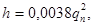
где qn — производительность пожарной струи, л/с.
Примечание. На сети водопровода населенных пунктов с числом жителей до 500 чел. вместо гидрантов допускается устанавливать стояки диаметром 80 мм с пожарными кранами.
8.17. Компенсаторы надлежит предусматривать:
на трубопроводах, стыковые соединения которых не компенсируют осевые перемещения, вызываемые изменением температуры воды, воздуха, грунта;
на стальных трубопроводах, прокладываемых в тоннелях, каналах или на эстакадах (опорах);
на трубопроводах в условиях возможной просадки грунта.
Расстояния между компенсаторами и неподвижными опорами следует определять расчетом, учитывающим их конструкцию. При подземной прокладке водоводов, магистралей и линии сети из стальных труб со сварными стыками компенсаторы следует предусматривать в местах установки чугунной фланцевой арматуры. В тех случаях, когда чугунная фланцевая арматура защищена от воздействия осевых растягивающих усилий путем жесткой заделки стальных труб в стенки колодца, устройством специальных упоров или обжатием труб уплотненным грунтом, компенсаторы допускается не предусматривать.
При обжатии труб грунтом перед фланцевой чугунной арматурой следует применять подвижные стыковые соединения (удлиненный раструб, муфту и др.). Компенсаторы и подвижные стыковые соединения при подземной прокладке трубопроводов надлежит располагать в колодцах.
8.18. Монтажные вставки надлежит принимать для демонтажа, профилактического осмотра и ремонта фланцевой запорной, предохранительной и регулирующей арматуры.
8.19. Запорная арматура на водоводах и линиях водопроводной сети должна быть с ручным или механическим приводом (от передвижных средств).
Применение на водоводах запорной арматуры с электрическим или гидравлическим приводом допускается при дистанционном или автоматическом управлении.
8.20. Радиус действия водозаборной колонки следует принимать не более 100 м. Вокруг водозаборной колонки надлежит предусматривать отмостку шириной 1 м с уклоном 0,1 от колонки.
8.21. Выбор материала и класса прочности труб для водоводов и водопроводных сетей надлежит принимать на основании статического расчета, агрессивности грунта и транспортируемой воды, а также условий работы трубопроводов и требований к качеству воды.
Для напорных водоводов и сетей, как правило, следует применять неметаллические трубы (железобетонные напорные, асбестоцементные напорные, пластмассовые и др.). Отказ от применения неметаллических труб должен быть обоснован.
Применение чугунных напорных труб допускается для сетей в пределах населенных пунктов, территорий промышленных, сельскохозяйственных предприятий.
Применение стальных труб допускается:
на участках с расчетным внутренним давлением более 1,5 МПа (15 кгс/см2);
для переходов пол железными и автомобильными дорогами, через водные преграды и овраги;
в местах пересечения хозяйственно-питьевого водопровода с сетями канализации;
при прокладке трубопроводов по автодорожным и городским мостам, по опорам эстакад и в туннелях.
Стальные трубы должны приниматься экономичных сортаментов со стенкой, толщина которой должна определяться расчетом (но не менее 2 мм) с учетом условий работы трубопроводов.
Для железобетонных и асбестоцементных трубопроводов допускается применение металлических фасонных частей.
Материал труб в системах хозяйственно-питьевого водоснабжения должен отвечать требованиям п. 1.3.
8.22. Величину расчетного внутреннего давления надлежит принимать равной наибольшему возможному по условиям эксплуатации давлению в трубопроводе на различных участках по длине (при наиболее невыгодном режиме работы) без учета повышения давления при гидравлическом ударе или с повышением давления при гидравлическом ударе с учетом действия противоударной арматуры, если это давление в сочетании с другими нагрузками (п. 8.26) окажет на трубопровод большее воздействие.
Статический расчет надлежит производить на воздействие расчетного внутреннего давления, давления грунта, временных нагрузок, собственной массы труб и массы транспортируемой жидкости, атмосферного давления при образовании вакуума и внешнего гидростатического давления грунтовых вод в тех комбинациях, которые оказываются наиболее опасными для труб данного материала.
Трубопроводы или их участки должны подразделяться по степени ответственности на следующие классы:
1 — трубопроводы для объектов I категории обеспеченности подачи воды, а также участки трубопроводов в зонах перехода через водные преграды и овраги, железные и автомобильные дороги I и II категорий и в местах, труднодоступных для устранения возможных повреждений, для объектов II и III категорий обеспеченности подачи воды;
2 — трубопроводы для объектов II категории обеспеченности подачи воды (за исключением участков 1 класса), а также участки трубопроводов, прокладываемые под усовершенствованными покрытиями автомобильных дорог, для объектов III категории обеспеченности подачи воды;
3 — все остальные участки трубопроводов для объектов III категории обеспеченности подачи воды.
В расчете труб следует учитывать коэффициент условий работы тс, определяемый по формуле
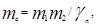
где m1, — коэффициент, учитывающий кратковременность испытания, которому подвергаются трубы после их изготовления;
т2 — коэффициент, учитывающий снижение прочностных показателей труб в процессе эксплуатации в результате старения материала труб, коррозии или абразионного износа;
gn — коэффициент надежности, учитывающий класс участка трубопровода по степени ответственности.
Значение коэффициента т1 следует устанавливать в соответствии с ГОСТ или техническими условиями на изготовление данного типа труб.
Для трубопроводов, стыковые соединения которых равнопрочны самим трубам, значение коэффициента m1 надлежит принимать равным:
0,9 — для чугунных, стальных, асбестоцементных, бетонных, железобетонных и керамических труб;
1 — для полиэтиленовых труб.
Значение коэффициента т2 надлежит принимать равным:
1 — для керамических труб, а также чугунных, стальных, асбестоцементных, бетонных и железобетонных труб, при отсутствии опасности коррозии или абразивного износа в соответствии с ГОСТ или техническими условиями на изготовление данного типа труб — для пластмассовых труб.
Значение коэффициента gn следует принимать: для участков трубопроводов 1-го класса — 1; 2-го класса — 0,95; 3-го класса — 0,9.
8.23. Величину испытательного давления на различных испытательных участках, которому должны подвергаться трубопроводы перед сдачей в эксплуатацию, надлежит указывать в проектах организации строительства, исходя из прочностных показателей материала и класса труб, принятых для каждого участка трубопровода, расчетного внутреннего давления воды и величин внешних нагрузок, воздействующих на трубопровод в период испытания.
Расчетная величина испытательного давления не должна превышать следующих величин для трубопроводов из труб:
чугунных — заводского испытательного давления с коэффициентом 0,5;
железобетонных и асбестоцементных — гидростатического давления, предусмотренного ГОСТ или техническими условиями для соответствующих классов труб при отсутствии внешней нагрузки;
стальных и пластмассовых — внутреннего расчетного давления с коэффициентом 1,25.
8.24. Чугунные, асбестоцементные, бетонные, железобетонные и керамические трубопроводы должны быть рассчитаны на совместное воздействие расчетного внутреннего давления и расчетной приведенной внешней нагрузки.
Стальные и пластмассовые трубопроводы должны быть рассчитаны на воздействие внутреннего давления в соответствии с п. 8.23 и на совместное действие внешней приведенной нагрузки, атмосферного давления, а также на устойчивость круглой формы поперечного сечения труб.
Укорочение вертикального диаметра стальных труб без внутренних защитных покрытий не должно превышать 3 %, а для стальных труб с внутренними защитными покрытиями и пластмассовых труб должно приниматься по стандартам или техническим условиям на эти трубы.
При определении величины вакуума следует учитывать действие предусмотренных на трубопроводе противовакуумных устройств.
8.25. В качестве временных нагрузок надлежит принимать:
для трубопроводов, укладываемых под железнодорожными путями, — нагрузку, соответствующую классу данной железнодорожной линии;
для трубопроводов, укладываемых под автомобильными дорогами, — от колонны автомобилей Н-30 или колесного транспорта НК-80 (по большему силовому воздействию на трубопровод);
для трубопроводов, укладываемых в местах, где возможно движение автомобильного транспорта, — от колонны автомобилей Н-18 или гусеничного транспорта НГ-60 (по большему силовому воздействию на трубопровод);
для трубопроводов, укладываемых в местах, где движение автомобильного транспорта невозможно, — равномерно распределенную нагрузку 5 кПа (500 кгс/м2).
8.26. При расчете трубопроводов на повышение давления при гидравлическом ударе (определенное с учетом противоударной арматуры или образования вакуума) внешнюю нагрузку следует принимать не более нагрузки от колонны автомобилей Н-18.
8.27. Повышение давления при гидравлическом ударе надлежит определять расчетом и на его основании принимать меры защиты.
Меры защиты систем водоснабжения от гидравлических ударов надлежит предусматривать для случаев:
внезапного выключения всех или группы совместно работающих насосов вследствие нарушения электропитания;
выключения одного из совместно работающих насосов до закрытия поворотного затвора (задвижки) на его напорной линии;
пуска насоса при открытом поворотном затворе (задвижке) на напорной линии, оборудованной обратным клапаном;
механизированного закрытия поворотного затвора (задвижки) при выключении водовода в целом или его отдельных участков;
открытия или закрытия быстродействующей водоразборной арматуры.
8.28. В качестве мер защиты от гидравлических ударов, вызываемых внезапным выключением или включением насосов, следует принимать:
установку на водоводе клапанов для впуска и защемления воздуха;
установку на напорных линиях насосов обратных клапанов с регулируемым открытием и закрытием;
установку на водоводе обратных клапанов, расчленяющих водовод на отдельные участки с небольшим статическим напором на каждом из них;
сброс воды через насосы в обратном направлении при их свободном вращении или полном торможении;
установку в начале водовода (на напорной линии насоса) воздушно-водяных камер (колпаков), смягчающих процесс гидравлического удара.
Примечание. Для защиты от гидравлического удара, допускается применять: установку предохранительных клапанов и клапанов-гасителей, сброс воды из напорной линии во всасывающую, впуск воды в местах возможного образования разрывов сплошности потока в водоводе, установку глухих диафрагм, разрушающихся при повышении давления сверх допустимого предела, устройство водонапорных колонн, использование насосных агрегатов с большей инерцией вращающихся масс.
8.29. Защита трубопроводов от повышения давления, вызываемого закрытием поворотного затвора (задвижки), должна обеспечиваться увеличением времени этого закрытия. При недостаточном времени закрытия затвора с принятым типом привода следует принимать дополнительные меры защиты (установка предохранительных клапанов, воздушных колпаков, водонапорных колонн и др.).
8.30. Водопроводные линии, как правило, надлежит принимать подземной прокладки. При теплотехническом и технико-экономическом обосновании допускаются наземная и надземная прокладки, прокладка в туннелях, а также прокладка водопроводных линий в туннелях совместно с другими подземными коммуникациями, за исключением трубопроводов, транспортирующих легковоспламеняющиеся и горючие жидкости и горючие газы. При прокладке линий противопожарных и объединенных с противопожарными водопроводов в туннелях, наземно или надземно пожарные гидранты должны устанавливаться в колодцах.
При подземной прокладке запорная, регулирующая и предохранительная трубопроводная арматура должна устанавливаться в колодцах (камерах).
Бесколодезная установка запорной арматуры допускается при обосновании.
8.31. Тип основания под трубы необходимо принимать в зависимости от несущей способности грунтов и величины нагрузок.
Во всех грунтах, за исключением скальных, заторфованных и илов, трубы следует укладывать на естественный грунт ненарушенной структуры, обеспечивая при этом выравнивание, а в необходимых случаях профилирование основания.
Для скальных грунтов следует предусматривать выравнивание основания слоем песчаного грунта толщиной 10 см над выступами. Допускается использование для этих целей местного грунта (супесей и суглинков) при условии уплотнения его до объемного веса скелета грунта 1,5 т/м3.
При прокладке трубопроводов в мокрых связных грунтах (суглинок, глины) необходимость устройства песчаной подготовки устанавливается проектом производства работ в зависимости от предусматриваемых мер по водопонижению, а также от типа и конструкции труб.
В илах, заторфованных и других слабых водонасыщенных грунтах трубы необходимо укладывать на искусственное основание.
8.32. В случаях применения стальных труб должна предусматриваться защита их внешней и внутренней поверхности от коррозии. При этом надлежит применять материалы, указанные в п. 1.3.
8.33. Выбор методов защиты внешней поверхности стальных труб от коррозии должен быть обоснован данными о коррозионных свойствах грунта, а также данными о возможности коррозии, вызываемой блуждающими токами.
8.34*. В целях исключения коррозии и зарастания стальных водоводов и водопроводной сети диаметром 300 мм и более должна предусматриваться защита внутренней поверхности таких трубопроводов покрытиями: песчано-цементным, лакокрасочным, цинковым и др.
Примечание. Вместо покрытий допускается применение стабилизационной обработки воды или обработки ее ингибиторами согласно рекомендуемому приложению 5 в тех случаях, когда технико-экономическими расчетами с учетом качества, расхода и назначения воды подтверждается целесообразность такой защиты трубопроводов от коррозии.
Пункт 8.35 исключен.
8.36. Защиту от коррозии бетона цементно-песчаных покрытий труб со стальным сердечником от воздействия сульфат-ионов следует предусматривать изоляционными покрытиями согласно СНиП 2.03.11-85.
8.37. Защиту труб со стальным сердечником от коррозии, вызываемой блуждающими токами, следует предусматривать в соответствии с требованиями Инструкции по защите железобетонных конструкций от коррозии, вызываемой блуждающими токами.
8.38. Для труб со стальным сердечником, имеющих наружный слой бетона плотностью ниже нормальной с допустимой шириной раскрытия трещин при расчетных нагрузках 0,2 мм, необходимо предусматривать электрохимическую защиту трубопроводов катодной поляризацией при концентрации хлор-ионов в грунте более 150 мг/л; при нормальной плотности бетона и допустимой ширине раскрытия трещин 0,1 мм — более 300 мг/л.
8.39. При проектировании трубопроводов из стальных и железобетонных труб всех видов необходимо предусматривать мероприятия, обеспечивающие непрерывную электрическую проводимость этих труб для возможности устройства электрохимической защиты от коррозии.
8.40. Катодную поляризацию труб со стальным сердечником надлежит проектировать так, чтобы создаваемые на поверхности металла защитные поляризационные потенциалы, измеренные в специально устраиваемых контрольно-измерительных пунктах, были не ниже 0,85 В и не выше 1,2 В по медно-сульфатному электроду сравнения.
8.41. При электрохимической защите труб со стальным сердечником с помощью протекторов величину поляризационного потенциала следует определять по отношению к медно-сульфатному электроду сравнения, установленному на поверхности трубы, а при защите с помощью катодных станций — по отношению к медно-сульфатному электроду сравнения, расположенному в грунте.
8.42. Глубина заложения труб, считая до низа, должна быть на 0,5 м больше расчетной глубины проникания в грунт нулевой температуры.
При прокладке трубопроводов в зоне отрицательных температур материал труб и элементов стыковых соединений должен удовлетворять требованиям морозоустойчивости.
Примечание. Меньшую глубину заложения труб допускается принимать при условии принятия мер, исключающих: замерзание арматуры, устанавливаемой на трубопроводе; недопустимое снижение пропускной способности трубопровода в результате образования льда на внутренней поверхности труб; повреждение труб и их стыковых соединений в результате замерзания воды, деформации грунта и температурных напряжений в материале стенок труб; образование в трубопроводе ледяных пробок при перерывах подачи воды, связанных с повреждением трубопроводов.
8.43. Расчетную глубину проникания в грунт нулевой температуры следует устанавливать на основании наблюдений за фактической глубиной промерзания в расчетную холодную и малоснежную зиму и опыта эксплуатации трубопроводов в данном районе с учетом возможного изменения ранее наблюдавшейся глубины промерзания в результате намечаемых изменений в состоянии территории (удаление снежного покрова, устройство усовершенствованных дорожных покрытий и т.п.).
При отсутствии данных наблюдений глубину проникания в грунт нулевой температуры и возможное ее изменение в связи с предполагаемыми изменениями в благоустройстве территории следует определять теплотехническими расчетами.
8.44. Для предупреждения нагревания воды в летнее время глубину заложения трубопроводов хозяйственно-питьевых водопроводов надлежит, как правило, принимать не менее 0,5 м, считая до верха труб. Допускается принимать меньшую глубину заложения водоводов или участков водопроводной сети при условии обоснования теплотехническими расчетами.
8.45. При определении глубины заложения водоводов и водопроводных сетей при подземной прокладке следует учитывать внешние нагрузки от транспорта и условия пересечения с другими подземными сооружениями и коммуникациями.
8.46. Выбор диаметров труб водоводов и водопроводных сетей надлежит производить на основании технико-экономических расчетов, учитывая при этом условия их работы при аварийном выключении отдельных участков.
Диаметр труб водопровода, объединенного с противопожарным, в населенных пунктах и на промышленных предприятиях должен быть не менее 100 мм, в сельских населенных пунктах — не менее 75 мм.
8.47. Величину гидравлического уклона для определения потерь напора в трубопроводах при транспортировании воды, не имеющей резко выраженных коррозионных свойств и не содержащей взвешенных примесей, отложение которых может приводить к интенсивному зарастанию труб, следует принимать согласно обязательному прил. 10.
8.48. Для существующих сетей и водоводов при необходимости следует предусматривать мероприятия по восстановлению и сохранению пропускной способности путем очистки внутренней поверхности стальных труб и нанесения антикоррозионного защитного покрытия; в исключительных случаях по согласованию с госстроями союзных республик при технико-экономическом обосновании допускается принимать фактические потери напора.
8.49. При проектировании новых и реконструкции существующих систем водоснабжения следует предусматривать приспособления и устройства для систематического определения гидравлического сопротивления трубопроводов на контрольных участках водоводов и сети.
8.50. Расположение линий водопровода на генеральных планах, а также минимальные расстояния в плане и при пересечениях от наружной поверхности труб до сооружений и инженерных сетей должны приниматься согласно СНиП II-89-80*.
8.51. При параллельной прокладке нескольких линий водоводов (заново или дополнительно к существующим) расстояние в плане между наружными поверхностями труб следует устанавливать с учетом производства и организации работ и необходимости защиты от повреждений смежных водоводов при аварии на одном из них:
при допускаемом снижении подачи воды потребителям, предусмотренном п. 8.2, — по табл. 35 в зависимости от материала труб, внутреннего давления и геологических условий;
при наличии в конце водоводов запасной емкости, допускающей перерывы в подаче воды, объем которой отвечает требованиям п. 9.6, — по табл. 35 как для труб, укладываемых в скальных грунтах.
На отдельных участках трассы водоводов, в том числе на участках прокладки водоводов по застроенной территории и на территории промышленных предприятий, приведенные в табл. 35 расстояния допускается уменьшать при условии укладки труб на искусственное основание, в туннеле, футляре или при применении других способов прокладки, исключающих возможность повреждения соседних водоводов при аварии на одном из них. При этом расстояния между водоводами должны обеспечивать возможность производства работ как при прокладке, так и при последующих ремонтах.
8.52. При прокладке водопроводных линий в туннелях расстояния от стенки трубы до внутренней поверхности ограждающих конструкций и стенок других трубопроводов надлежит принимать не менее 0,2 м; при установке на трубопроводе арматуры расстояния до ограждающих конструкций следует принимать согласно п. 8.63.
8.53. Переходы трубопроводов под железными дорогами I, II и III категорий, общей сети, а также под автомобильными дорогами I и II категорий надлежит принимать в футлярах, при этом, как правило, следует предусматривать закрытый способ производства работ. При обосновании допускается предусматривать прокладку трубопроводов в тоннелях.
Под остальными железнодорожными путями и автодорогами допускается устройство переходов трубопроводов без футляров, при этом, как правило, должны применяться стальные трубы и открытый способ производства работ.
|
Материал труб |
Диаметр, мм |
Вид грунта (по номенклатуре СНиП 2.02.01–83*) |
|||||
|
скальные |
крупнообломочные породы, песок гравелистый, песок крупный, глины |
песок средней крупности, песок мелкий, песок пылеватый, супеси, суглинки, грунты с примесью растительных остатков, заторфованные грунты |
|||||
|
Давление, МПа (кгс/см2) |
|||||||
|
£ 1 (10) |
> 1 (10) |
£ 1 (10) |
> 1 (10) |
£ 1 (10) |
> 1 (10) |
||
|
Расстояния в плане между наружными поверхностями труб, м |
|||||||
|
Стальные |
До 400 |
0,7 |
0,7 |
0,9 |
0,9 |
1,2 |
1,2 |
|
Стальные |
Св. 400 до 1000 |
1 |
1 |
1,2 |
1,5 |
1,5 |
2 |
|
Стальные |
Св. 1000 |
1,5 |
1,5 |
1,7 |
2 |
2 |
2,5 |
|
Чугунные |
До 400 |
1,5 |
2 |
2 |
2,5 |
3 |
4 |
|
Чугунные |
Св. 400 |
2 |
2,5 |
2,5 |
3 |
4 |
5 |
|
Железобетонные |
До 600 |
1 |
1 |
1,5 |
2 |
2 |
2,5 |
|
Железобетонные |
Св. 600 |
1,5 |
1,5 |
2 |
2,5 |
2,5 |
3 |
|
Асбестоцементные |
До 500 |
1,5 |
2 |
2,5 |
3 |
4 |
5 |
|
Пластмассовые |
До 600 |
1,2 |
1,2 |
1,4 |
1,7 |
1,7 |
2,2 |
|
Пластмассовые |
Св. 600 |
1,6 |
¾ |
1,8 |
¾ |
2,2 |
¾ |
|
Примечания: 1. При параллельной прокладке водоводов на разных уровнях указанные в таблице расстояния надлежит соблюдать исходя из разности отметок заложения труб. 2. Для водоводов, различающихся по диаметру и материалу труб, расстояния следует принимать по тому виду труб, для которого они оказываются большими. |
|||||||
Примечания: 1. Прокладка трубопроводов по железнодорожным мостам и путепроводам, пешеходным мостам над путями, в железнодорожных, автодорожных и пешеходных тоннелях, а также в водопропускных трубах не допускается.
2. Футляры и тоннели под железными дорогами при открытом способе производства работ следует проектировать согласно СНиП 2.05.03-84*.
8.54. Расстояние по вертикали от подошвы рельса железнодорожного пути или от покрытия автомобильной дороги до верха трубы, футляра или тоннеля должно приниматься согласно СНиП II-89-80*.
Заглубление трубопроводов в местах переходов при наличии пучинистых грунтов должно определяться теплотехническим расчетом с целью исключения морозного пучения грунта.
8.55. Расстояние в плане от обреза футляра, а в случае устройства в конце футляра колодца — от наружной поверхности стены колодца должно приниматься:
при пересечении железных дорог — 8 м от оси крайнего пути, 5 м от подошвы насыпи, 3 м от бровки выемки и от крайних водоотводных сооружений (кюветов, нагорных канав, лотков и дренажей);
при пересечении автомобильных дорог — 3 м от бровки земляного полотна или подошвы насыпи, бровки выемки, наружной бровки нагорной канавы или другого водоотводного сооружения.
Расстояние в плане от наружной поверхности футляра или тоннеля следует принимать не менее:
3 м — до опор контактной сети;
10 м — до стрелок, крестовин и мест присоединения отсасывающего кабеля к рельсам электрифицированных дорог;
30 м —до мостов, водопропускных труб, туннелей и других искусственных сооружений.
Примечание. Расстояние от обреза футляра (туннеля) следует уточнять в зависимости от наличия кабелей междугородной связи, сигнализации и др., уложенных вдаль дорог.
8.56. Внутренний диаметр футляра надлежит принимать при производстве работ:
открытым способом — на 200 мм больше наружного диаметра трубопровода;
закрытым способом — в зависимости от длины перехода и диаметра трубопровода согласно СНиП III-4-80*.
Примечание. В одном футляре или туннеле допускаются укладка нескольких трубопроводов, а также совместная прокладка трубопроводов и коммуникаций (электрокабели, связь и т.д.).
8.57. Переходы трубопроводов над железными дорогами должны предусматриваться в футлярах на специальных эстакадах с учетом требований п.п. 8.55 и 8.59.
8.58. При пересечении электрифицированной железной дороги должны быть предусмотрены мероприятия по защите труб от коррозии, вызываемой блуждающими токами.
8.59. При проектировании переходов через железные дороги I, II и III категорий общей сети, а также автомобильные дороги I и II категорий должны предусматриваться мероприятия по предотвращению подмыва или подтопления дорог при повреждении трубопроводов.
При этом на трубопроводе с обеих сторон перехода под железными дорогами следует, как правило, предусматривать колодцы с установкой в них запорной арматуры.
8.60. Проект перехода через железные и автомобильные дороги должен согласовываться с органами Министерства путей сообщения или Министерства строительства и эксплуатации автомобильных дорог союзных республик.
8.61. При переходе трубопроводов через водотоки количество линий дюкера должно быть не менее двух; при выключении одной линии по остальным Должна обеспечиваться подача 100 %-го расчетного расхода воды. Линии дюкера должны укладываться из стальных труб с усиленной антикоррозионной изоляцией, защищенной от механических повреждений.
Проект дюкера через судоходные водотоки должен согласовываться с органами управления речным флотом союзных республик.
Глубина укладки подводной части трубопровода до верха трубы должна быть не менее 0,5 м ниже дна водотока, а в пределах фарватера на судоходных водотоках — не менее 1 м. При этом надлежит учитывать возможность размыва и переформирования русла водотока.
Расстояние между линиями дюкера в свету должно быть не менее 1,5 м.
Уклон наклона восходящей части дюкера следует принимать не более 20° к горизонту.
По обе стороны дюкера необходимо предусматривать устройство колодцев и переключений с установкой запорной арматуры.
Отметка планировки у колодцев дюкера должна приниматься на 0,5 м выше максимального уровня воды в водотоке обеспеченностью 5 %.
8.62. На поворотах в горизонтальной или вертикальной плоскости трубопроводов из раструбных труб или соединяемых муфтами, когда возникающие усилия не могут быть восприняты стыками труб, должны предусматриваться упоры.
На сварных трубопроводах упоры следует предусматривать при расположении поворотов в колодцах или угле поворота в вертикальной плоскости выпуклости вверх 30° и более.
Примечание. На трубопроводах из раструбных труб или соединяемых муфтами с рабочим давлением до 1 МПа (10 кгс/см2) при углах поворота до 10° упоры допускается не предусматривать.
8.63. При определении размеров колодцев минимальные расстояния до внутренних поверхностей колодца надлежит принимать:
от стенок труб при диаметре труб до 400 мм — 0,3 м, от 500 до 600 мм — 0,5 м, более 600 мм — 0,7 м;
от плоскости фланца при диаметре труб до 400 мм — 0,3 м, более 400 мм — 0,5 м;
от края раструба, обращенного к стене, при диаметре труб до 300 мм — 0,4 м, более 300 мм — 0,5 м;
от низа трубы до дна при диаметре труб до 400 мм — 0,25 м, от 500 до 600 мм — 0,3 м, более 600 мм — 0,35 м;
от верха штока задвижки с выдвижным шпинделем — 0,3 м, от маховика задвижки с невыдвижным шпинделем — 0,5 м.
Высота рабочей части колодцев должна быть не менее 1,5 м.
8.64. В случаях установки на водоводах клапанов для впуска воздуха, размещаемых в колодцах, необходимо предусматривать устройство вентиляционной трубы, которая в случае подачи по водоводам воды питьевого качества должна оборудоваться фильтром.
8.65. Для спуска в колодец на горловине и стенках колодца надлежит предусматривать установку рифленых стальных или чугунных скоб, допускается применение переносных металлических лестниц.
Для обслуживания арматуры в колодцах при необходимости следует предусматривать площадки согласно п. 12.7.
8.66. В колодцах (при обосновании) необходимо предусматривать установку вторых утепляющих крышек; в случае необходимости надлежит предусматривать люки с запорными устройствами.
9. ЕМКОСТИ ДЛЯ ХРАНЕНИЯ ВОДЫ
9.1. Емкости в системах водоснабжения в зависимости от назначения должны включать регулирующий, пожарный, аварийный и контактный объемы воды.
9.2. Регулирующий объем воды Wp, м3, в емкостях (резервуарах, баках водонапорных башен, контррезервуарах и др.) должен определяться на основании графиков поступления и отбора воды, а при их отсутствии по формуле
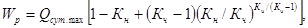
где Qсут.max ¾ расход воды в сутки максимального водопотребления, м3/сут;
Кн — отношение максимальной часовой подачи воды в регулирующую емкость при станциях водоподготовки, насосных станциях или в сеть водопровода с регулирующей емкостью к среднему часовому расходу в сутки максимального водопотребления;
Кч — коэффициент часовой неравномерности отбора воды из регулирующей емкости или сети водопровода с регулирующей емкостью, определяемый как отношение максимального часового отбора к среднему часовому расходу в сутки максимального водопотребления.
Максимальный часовой отбор воды непосредственно на нужды потребителей, не имеющих регулирующих емкостей, следует принимать равным максимальному часовому водопотреблению. Максимальный часовой отбор воды из регулирующей емкости насосами для подачи в водопроводную сеть при наличии на сети регулирующей емкости определяется по максимальной часовой производительности насосной станции.
В емкостях на станциях водоподготовки следует предусматривать дополнительно объем воды на промывку фильтров, определяемый согласно п. 6.117.
Примечание. При обосновании в емкостях допускается предусматривать объем воды для регулирования суточной неравномерности водопотребления.
9.3. Пожарный объем воды надлежит предусматривать в случаях когда получение необходимого количества воды для тушения пожара непосредственно из источника водоснабжения технически невозможно или экономически нецелесообразно.
9.4. Пожарный объем воды в резервуарах должен определяться из условия обеспечения:
пожаротушения из наружных гидрантов и внутренних пожарных кранов согласно п.п. 2.12¾2.17,2.20, 2.22— 2.24;
специальных средств пожаротушения (спринклеров, дренчеров и др., не имеющих собственных резервуаров) согласно п.п. 2.18 и 2.19;
максимальных хозяйственно-питьевых и производственных нужд на весь период пожаротушения с учетом требований п. 2.21.
Примечание. При определении пожарного объема воды в резервуарах допускается учитывать пополнение его во время тушения пожара, если подача воды в них осуществляется системами водоснабжения I и II категорий.
9.5. Пожарный объем воды в баках водонапорных башен должен рассчитываться на десятиминутную продолжительность тушения одного наружного и одного внутреннего пожаров при одновременном наибольшем расходе воды на другие нужды.
Примечание. При обосновании допускается хранение в баках водонапорных башен полного пожарного объема воды, определенного по п. 9.4.
9.6. При подаче воды по одному водоводу в емкостях следует предусматривать:
аварийный объем воды, обеспечивающий в течение времени ликвидации аварии на водоводе (п. 8.4) расход воды на хозяйственно-питьевые нужды в размере 70 % расчетного среднечасового водопотребления и производственные нужды по аварийному графику;
дополнительный объем воды на пожаротушение в размере, определенном согласно п. 9.4.
Примечания: 1. Время, необходимое для восстановления аварийного объема воды, надлежит принимать 36-48 ч.
2. Восстановление аварийного объема воды следует предусматривать за счет снижения водопотребления или использования резервных насосных агрегатов.
3. Дополнительный объем воды на пожаротушение допускается не предусматривать при длине одной линии водовода не более 500 м до населенных пунктов с числом жителей до 5000 чел., а также до промышленных и сельскохозяйственных предприятий при расходе воды на наружное пожаротушение не более 40 л/с.
9.7. Объем воды в емкостях перед насосными станциями подкачки или оборотного водоснабжения, работающими равномерно, следует принимать из расчета 5—10-минутной производительности насоса большей производительности.
9.8. Контактный объем воды для обеспечения требуемого времени контакта воды с реагентами надлежит определять согласно п. 6.167. Контактный объем допускается уменьшать на величину пожарного и аварийного объемов в случае их наличия.
9.9. Емкости и их оборудование должны быть защищены от замерзания воды.
9.10. В емкостях для питьевой воды должен быть обеспечен обмен пожарного и аварийного объемов воды в срок не более 48 ч.
Примечание. При обосновании срок обмена воды в емкостях допускается увеличивать до 3—4 сут. При этом следует предусматривать установку циркуляционных насосов, производительность которых должна определяться из условия замены воды в емкостях в срок не более 48 ч с учетом поступления воды из источника водоснабжения.
9.11. Конструкции резервуаров и водонапорных башен следует принимать по п. 14.18.
9.12. Резервуары для воды и баки водонапорных башен должны быть оборудованы: подводящими и отводящими трубопроводами или объединенным подводяще-отводящим трубопроводом, переливным устройством, спускным трубопроводом, вентиляционным устройством, скобами или лестницами, люками-лазами для прохода людей и транспортирования оборудования.
В зависимости от назначения емкости дополнительно следует предусматривать:
устройства для изменения уровня воды, контроля вакуума и давления согласно п. 13.36;
световые люки диаметром 300 мм (в резервуарах для воды непитьевого качества);
промывочный водопровод (переносной или стационарный);
устройство для предотвращения перелива воды из емкости (средства автоматики или установка на подающем трубопроводе поплавкового запорного клапана);
устройство для очистки поступающего в емкость воздуха (в резервуарах для воды питьевого качества).
9.13. На конце подводящего трубопровода в резервуарах и баках водонапорных башен следует предусматривать диффузор с горизонтальной кромкой или камеру, верх которых должен располагаться на 50—100 мм выше максимального уровня воды в емкости.
9.14. На отводящем трубопроводе в резервуаре надлежит предусматривать конфузор, при диаметре трубопровода до 200 мм допускается применять приемный клапан, размещаемый в приямке (см. п. 7.4).
Расстояние от кромки конфузора до дна и стен емкости или приямка следует определять из расчета скорости подхода воды к конфузору не более скорости движения воды во входном сечении.
Горизонтальная кромка конфузора, устраиваемого в днище резервуара, а также верх приямка должны быть на 50 мм выше набетонки днища.
На отводящем трубопроводе или приямке необходимо предусматривать решетку.
Вне резервуара или водонапорной башни на отводящем (подводяще-отводящем) трубопроводе следует предусматривать устройство для отбора воды автоцистернами и пожарными машинами.
9.15. Переливное устройство должно быть рассчитано на расход, равный разности максимальной подачи и минимального отбора воды. Слой воды на кромке переливного устройства должен быть не более 100 мм.
В резервуарах и водонапорных башнях, предназначенных для питьевой воды, на переливном устройстве должен быть предусмотрен гидравлический затвор.
9.16. Спускной трубопровод надлежит проектировать диаметром 100—150 мм в зависимости от объема емкости. Днище емкости должно иметь уклон не менее 0,005 в сторону спускного трубопровода.
9.17. Спускные и переливные трубопроводы следует присоединять (без подтопления их концов):
от емкостей для воды непитьевого качества — к канализации любого назначения с разрывом струи или к открытой канаве;
от емкостей для питьевой воды — к дождевой канализации или к открытой канаве с разрывом струи.
При присоединении переливного трубопровода к открытой канаве необходимо предусматривать установку на конце трубопровода решетки с прозорами 10 мм.
При невозможности или нецелесообразности сброса воды по спускному трубопроводу самотеком следует предусматривать колодец для откачки воды передвижными насосами.
9.18. Впуск и выпуск воздуха при изменении положения уровня воды в емкости, а также обмен воздуха в резервуарах для хранения пожарного и аварийного объемов надлежит предусматривать через вентиляционные устройства, исключающие возможность образования вакуума, превышающего 80 мм вод. ст.
В резервуарах воздушное пространство над максимальным уровнем до нижнего ребра плиты или плоскости перекрытия следует принимать от 200 до 300 мм. Ригели и опоры плит могут быть подтоплены, при этом необходимо обеспечить воздухообмен между всеми отсеками покрытия.
9.19. Люки-лазы должны располагаться вблизи от концов подводящего, отводящего и переливного трубопроводов. Крышки люков в резервуарах для питьевой воды должны иметь устройства для запирания и пломбирования. Люки резервуаров должны возвышаться над утеплением перекрытия на высоту не менее 0,2 м.
В резервуарах для питьевой воды должна быть обеспечена полная герметизация всех люков.
9.20. Напорные резервуары и водонапорные башни при системе пожаротушения высокого давления должны быть оборудованы автоматическими устройствами, обеспечивающими их отключение при пуске пожарных насосов.
9.21. Общее количество резервуаров одного назначения в одном узле должно быть не менее двух.
Во всех резервуарах в узле наинизшие и наивысшие уровни пожарных, аварийных и регулирующих объемов должны быть соответственно на одинаковых отметках.
При выключении одного резервуара в остальных должно храниться не менее 50 % пожарного и аварийного объемов воды.
Оборудование резервуаров должно обеспечивать возможность независимого включения и опорожнения каждого резервуара.
Устройство одного резервуара допускается в случае отсутствия в нем пожарного и аварийного объемов.
9.22. Конструкции камер задвижек при резервуарах не должны быть жестко связаны с конструкцией резервуаров.
9.23. Водонапорные башни допускается проектировать с шатром вокруг бака или без шатра в зависимости от режима работы башни, объема бака, климатических условий и температуры воды в источнике водоснабжения.
9.24. Ствол водонапорной башни допускается использовать для размещения производственных помещений системы водоснабжения, исключающих образование пыли, дыма и газовыделений.
9.25. При жесткой заделке труб в днище бака водонапорной башни на стояках трубопроводов надлежит предусматривать компенсаторы.
9.26. Водонапорная башня, не входящая в зону молниезащиты других сооружений, должна быть оборудована собственной молниезащитой.
9.27. Хранение пожарного объема воды в специальных резервуарах или открытых водоемах допускается для предприятий и населенных пунктов, указанных в примеч. 1 к п. 2.11.
9.28. Объем пожарных резервуаров и водоемов надлежит определять исходя из расчетных расходов воды и продолжительности тушения пожаров согласно п.п. 2.13—2.17 и 2.24.
Примечания: 1. Объем открытых водоемов необходимо рассчитывать с учетом возможного испарения воды и образования льда. Превышение кромки открытого водоема над наивысшим уровнем воды в нем должно быть не менее 0,5 м.
2. К пожарным резервуарам, водоемам и приемным колодцам должен быть обеспечен свободный подъезд пожарных машин с покрытием дорог согласно п. 14.6.
3. У мест расположения пожарных резервуаров и водоемов должны быть предусмотрены указатели по ГОСТ 12.4.009-83.
9.29. Количество пожарных резервуаров или водоемов должно быть не менее двух, при этом в каждом из них должно храниться 50 % объема воды на пожаротушение.
Расстояние между пожарными резервуарами или водоемами следует принимать согласно п. 9.30, при этом подача воды в любую точку пожара должна обеспечиваться из двух соседних резервуаров или водоемов.
9.30. Пожарные резервуары или водоемы надлежит размещать из условия обслуживания ими зданий, находящихся в радиусе:
при наличии автонасосов — 200 м;
при наличии мотопомп — 100—150 м в зависимости от типа мотопомп.
Для увеличения радиуса обслуживания допускается прокладка от резервуаров или водоемов тупиковых трубопроводов длиной не более 200 м с учетом требований п. 9.32.
Расстояние от точки забора воды из резервуаров или водоемов до зданий III, IV и V степеней огнестойкости и до открытых складов сгораемых материалов должно быть не менее 30 м, до зданий I и II степеней огнестойкости — не менее 10 м.
9.31*. Подачу воды для заполнения пожарных резервуаров и водоемов следует предусматривать по пожарным рукавам длиной до 250 м, а по согласованию с органами Государственного пожарного надзора — длиной до 500 м.
9.32. Если непосредственный забор воды из пожарного резервуара или водоема автонасосами или мотопомпами затруднен, надлежит предусматривать приемные колодцы объемом 3—5 м3. Диаметр трубопровода, соединяющего резервуар или водоем с приемным колодцем, следует принимать из условия пропуска расчетного расхода воды на наружное пожаротушение, но не менее 200 мм. Перед приемным колодцем на соединительном трубопроводе следует устанавливать колодец с задвижкой, штурвал которой должен быть выведен под крышку люка.
На соединительном трубопроводе со стороны водоема следует предусматривать решетку.
9.33. Пожарные резервуары и водоемы оборудовать переливными и спускными трубопроводами не требуется.
10. ЗОНЫ САНИТАРНОЙ ОХРАНЫ
10.1. Зоны санитарной охраны1 должны предусматриваться на всех проектируемых и реконструируемых водопроводах хозяйственно-питьевого назначения в целях обеспечения их санитарно-эпидемиологической надежности.
10.2. Зоны водопровода должны включать зону источника водоснабжения в месте забора воды (включая водозаборные сооружения), зону и санитарно-защитную полосу2 водопроводных сооружений (насосных станций, станций подготовки воды, емкостей) и санитарно-защитную полосу водоводов.
_____________
1 В дальнейшем — «зона».
2 В дальнейшем — «полоса».
Зона источника водоснабжения в месте забора воды должна состоять из трех поясов: первого — строгого режима, второго и третьего — режимов ограничения. Зона водопроводных сооружений должна состоять из первого пояса и полосы (при расположении водопроводных сооружений за пределами второго пояса зоны источника водоснабжения).
10.3. Проект зон санитарной охраны водопровода должен разрабатываться с использованием данных санитарно-топографического обследования территорий, намеченных к включению в зоны и полосы, а также соответствующих гидрологических, гидрогеологических, инженерно-геологических и топографических материалов.
10.4. Проектом зон санитарной охраны водопровода должны быть определены: границы поясов зоны источника водоснабжения, зоны и полосы водопроводных сооружений и полосы водоводов, перечень инженерных мероприятий по организации зон (объекты строительства, снос строений, благоустройство и т.п.) и описание санитарного режима в зонах и полосах.
10.5. Проект зон санитарной охраны водопровода должен согласовываться с органами санитарно-эпидемиологической службы, геологии (при использовании подземных вод), а также с другими заинтересованными министерствами и ведомствами и утверждаться в установленном порядке.
10.6. Инженерные мероприятия по ликвидации загрязнений территорий, водотоков, водоемов и водоносных горизонтов во втором и третьем поясах зон, а также в пределах полос должны выполняться за счет средств предприятий, являющихся источниками этих загрязнений.
10.7. Проект зон водопровода должен разрабатываться с учетом развития системы водоснабжения на перспективу.
ГРАНИЦЫ ЗОН САНИТАРНОЙ ОХРАНЫ
Поверхностные источники водоснабжения
10.8. Границы первого пояса зоны поверхностного источника водоснабжения, в том числе водоподводящего канала, должны устанавливаться на расстояниях от водозабора:
а) для водотоков (реки, каналы):
вверх по течению — не менее 200 м;
вниз по течению — не менее 100 м;
по прилегающему к водозабору берегу — не менее 100 м от уреза воды при летне-осенней межени;
в направлении к противоположному берегу: при ширине водотока менее 100 м — вся акватория и противоположный берег шириной 50 м от уреза воды при летне-осенней межени и при ширине водотока более 100 м — полоса акватории шириной не менее 100 м;
на водозаборах ковшевого типа в границы первого пояса включается вся акватория ковша и территория вокруг него полосой не менее 100 м;
б) для водоемов (водохранилище, озеро):
по акватории во всех направлениях — не менее 100 м;
по прилегающему к водозабору берегу — не менее 100 м от уреза воды при нормальном подпорном уровне в водохранилище и летне-осенней межени в озере.
10.9. Границы второго пояса зоны водотока надлежит устанавливать:
вверх по течению, включая притоки, — исходя из скорости течения воды, усредненной по ширине и длине водотока или на отдельных его участках и времени протекания воды от границы пояса до водозабора при среднемесячном расходе воды летне-осенней межени 95 % обеспеченности не менее 5 сут. для IА, Б, В, Г, IIА климатических районов и не менее 3 сут. для остальных климатических районов;
вниз по течению — не менее 250 м;
боковые границы — на расстоянии от уреза воды при летне-осенней межени — при равнинном рельефе — 500 м, при гористом рельефе местности — до вершины первого склона, обращенного в сторону водотока, но не более 750 м при пологом склоне и 1000 м при крутом склоне.
При наличии в реке подпора или обратного течения расстояние нижней границы второго пояса от водозабора должно устанавливаться в зависимости от гидрологических и метеорологических условий, по согласованию с органами санитарно-эпидемиологической службы.
На судоходных реках и каналах в границы второго пояса зоны следует включать акваторию, прилегающую к водозабору в пределах фарватера.
Примечание. В отдельных случаях в зависимости от местных условий боковые границы второго пояса допускается увеличивать по согласованию с органами санитарно-эпидемиологической службы.
10.10. Границы второго пояса зоны водоема, включая притоки, надлежит устанавливать от водозабора:
по акватории во всех направлениях — на расстоянии 3 км при количестве ветров до 10 % в сторону водозабора и 5 км при количестве ветров более 10 %;
боковые границы — от уреза воды при нормальном подпорном уровне в водохранилище и летне-осенней межени в озере на расстоянии согласно п. 10.9.
10.11. Границы третьего пояса зоны поверхностного источника водоснабжения должны быть вверх и вниз по течению водотока или во все стороны по акватории водоема такими же, как для второго пояса; боковые границы — по водоразделу, но не более 3—5 км от водотока или водоема.
Подземные источники водоснабжения
10.12. Границы первого пояса зоны подземного источника водоснабжения должны устанавливаться от одиночного водозабора (скважина, шахтный колодец, каптаж) или от крайних водозаборных сооружений группового водозабора на расстояниях:
30 м при использовании защищенных подземных вод;
50 м при использовании недостаточно защищенных подземных вод.
В границы первого пояса зоны инфильтрационных водозаборов следует включать прибрежную территорию между водозабором и поверхностным источником водоснабжения, если расстояние между ними менее 150 м.
Для подрусловых водозаборов и участка поверхностного источника, питающего инфильтрационный водозабор или используемого для искусственного пополнения запасов подземных вод, границы первого пояса зоны следует предусматривать как для поверхностных источников водоснабжения согласно п. 10.8.
Примечания: 1. Для водозаборов, расположенных на территории объекта, исключающего возможность загрязнения почвы и подземных вод, а также для водозаборов, расположенных в благоприятных санитарных, топографических и гидрогеологических условиях, размеры первого пояса зоны допускается уменьшать по согласованию с местными органами санитарно-эпидемиологической службы, но должны быть не менее 15 и 25 м соответственно.
2. К защищенным подземным водам относятся воды напорных и безнапорных водоносных пластов, имеющих в пределах всех поясов зоны сплошную водоупорную кровлю, исключающую возможность местного питания из вышележащих недостаточно защищенных водоносных пластов.
К недостаточно защищенным подземным водам относятся:
воды первого от поверхности земли безнапорного водоносного пласта, получающего питание на площади его распространения;
воды напорных и безнапорных водоносных пластов, которые в естественных условиях или в результате эксплуатации водозабора получают питание на площади зоны из вышележащих недостаточно защищенных водоносных пластов через гидрогеологические окна или проницаемые породы, кровли, а также из водотоков и водоемов путем непосредственной гидравлической связи.
10.13. При искусственном пополнении запасов подземных вод границы первого пояса зоны должны устанавливаться от инфильтрационных сооружений закрытого типа (скважин, шахтных колодцев) — 50 м, открытого типа (бассейнов и др.) — 100 м.
10.14. Границы второго пояса зоны подземного источника водоснабжения устанавливаются расчетом, учитывающим время продвижения микробного загрязнения воды до водозабора, принимаемое в зависимости от климатических районов и защищенности подземных вод от 100 до 400 сут.
10.15. Граница третьего пояса зоны подземного источника водоснабжения определяется расчетом, учитывающим время продвижения химического загрязнения воды до водозабора, которое должно быть больше принятой продолжительности эксплуатации водозабора, но не менее 25 лет.
10.16. При инфильтрационном питании водоносного пласта, а также при искусственном пополнении запасов подземных вод из поверхностного источника второй и третий пояса зоны поверхностного источника водоснабжения следует принимать согласно п.п. 10.9¾10.11.
Площадки водопроводных сооружений
10.17. Граница первого пояса зоны водопроводных сооружений должна совпадать с ограждением площадки сооружений и предусматриваться на расстоянии:
от стен резервуаров фильтрованной (питьевой) воды, фильтров (кроме напорных), контактных осветлителей с открытой поверхностью воды — не менее 30 м;
от стен остальных сооружений и стволов водонапорных башен — не менее 15 м.
Примечания: 1. По согласованию с органами санитарно-эпидемиологической службы первый пояс зоны отдельно стоящих водонапорных башен, а также насосных станций, работающих без разрыва струи, допускается не предусматривать.
2. При расположении водопроводных сооружений на территории предприятия указанные расстояния допускается уменьшать по согласованию с местными органами санитарно-эпидемиологической службы, но должны быть не менее 10 м.
10.18. Санитарно-защитная полоса вокруг первого пояса зоны водопроводных сооружений, расположенных за пределами второго пояса зоны источника водоснабжения, должна иметь ширину не менее 100 м.
Примечание. При расположении площадок водопроводных сооружений на территории объекта ширину полосы допускается уменьшать по согласованию с органами санитарно-эпидемиологической службы, но должна быть не менее 30 м.
10.19. Санитарно-защитную зону от промышленных и сельскохозяйственных предприятий до сооружений станций подготовки питьевой воды надлежит принимать как для населенных пунктов в зависимости от класса вредности производства.
10.20. Ширину санитарно-защитной полосы водоводов, проходящих по незастроенной территории, надлежит принимать от крайних водоводов:
при прокладке в сухих грунтах — не менее 10 м при диаметре до 1000 мм и не менее 20 м при больших диаметрах; в мокрых грунтах — не менее 50 м независимо от диаметра.
При прокладке водоводов по застроенной территории ширину полосы по согласованию с органами санитарно-эпидемиологической службы допускается уменьшать.
САНИТАРНЫЕ МЕРОПРИЯТИЯ НА ТЕРРИТОРИИ ЗОН
Поверхностные источники водоснабжения
10.21. Территория первого пояса зоны поверхностного источника водоснабжения должна быть спланирована, огорожена и озеленена, при этом ограждение следует предусматривать согласно п. 14.4.
10.22. Границы акватории первого пояса зоны обозначаются предупредительными наземными знаками и буями. Над затопленными водоприемниками водозабора, расположенными в несудоходной части водотока или водоема, должны устанавливаться буи с освещением; при расположении их в судоходной части буи устанавливаются вне судового хода.
10.23. Для территории первого пояса зоны должна предусматриваться сторожевая (тревожная) сигнализация.
10.24. На территории первого пояса зоны:
а) запрещаются:
все виды строительства, за исключением реконструкции или расширения основных водопроводных сооружений (подсобные здания, непосредственно не связанные с подачей и обработкой воды, должны быть размещены за пределами первого пояса зоны);
размещение жилых и общественных зданий, проживание людей, в том числе работающих на водопроводе;
прокладка трубопроводов различного назначения, за исключением трубопроводов, обслуживающих водопроводные сооружения;
выпуск в поверхностные источники сточных вод, купание, водопой и выпас скота, стирка белья, рыбная ловля, применение для растений ядохимикатов и удобрений;
б) здания должны быть канализованы с отведением сточных вод в ближайшую систему бытовой или производственной канализации или на местные очистные сооружения, расположенные за пределами первого пояса зоны с учетом санитарного режима во втором поясе. При отсутствии канализации должны устраиваться водонепроницаемые выгребы, расположенные в местах, исключающих загрязнение территории первого пояса при вывозе нечистот;
в) должно быть обеспечено отведение поверхностных вод за пределы первого пояса;
г) допускаются только рубки ухода за лесом и санитарные рубки леса.
10.25. На территории второго пояса зоны поверхностного источника водоснабжения надлежит:
а) осуществлять регулирование отведения территорий для населенных пунктов, лечебно-профилактических и оздоровительных учреждений, промышленных и сельскохозяйственных объектов, а также возможных изменений технологии промышленных предприятий, связанных с повышением степени опасности загрязнения источников водоснабжения сточными водами;
б) благоустраивать промышленные, сельскохозяйственные и другие предприятия, населенные пункты и отдельные здания, предусматривать организованное водоснабжение, канализование, устройство водонепроницаемых выгребов, организацию отвода загрязненных поверхностных сточных вод и др.;
в) принимать степень очистки бытовых, производственных и дождевых сточных вод, сбрасываемых в водотоки и водоемы, отвечающую требованиям «Основ водного законодательства СССР и союзных республик» и «Правил охраны поверхностных вод от загрязнения сточными водами»;
г) производить только рубки ухода за лесом и санитарные рубки леса.
10.26. Во втором поясе зоны поверхностного источника водоснабжения запрещается:
а) загрязнение территорий нечистотами, мусором, навозом, промышленными отходами и др.;
б) размещение складов горючесмазочных материалов, ядохимикатов и минеральных удобрений, накопителей, шламохранилищ и других объектов, которые могут вызвать химические загрязнения источников водоснабжения;
в) размещение кладбищ, скотомогильников, полей ассенизации, полей фильтрации, земледельческих полей орошения, навозохранилищ, силосных траншей, животноводческих и птицеводческих предприятий и других объектов, которые могут вызвать микробные загрязнения источников водоснабжения;
г) применение удобрений и ядохимикатов.
10.27. В пределах второго пояса зоны поверхностного источника водоснабжения в дополнение к требованиям п.п. 10.25 и 10.26:
допускаются птицеразведение, стирка белья, купание, туризм, водный спорт, устройство пляжей и рыбная ловля в установленных местах при обеспечении специального режима, согласованного с органами санитарно-эпидемиологической службы;
следует устанавливать места переправ, мостов и пристаней;
надлежит при наличии судоходства оборудовать суда специальными устройствами для сбора бытовых, подсланевых вод и твердых отбросов, на пристанях предусматривать сливные станции и приемники для сбора твердых отбросов, а дебаркадеры и брандвахты — оборудовать приемниками для сбора нечистот;
запрещаются добыча песка и гравия из водотока или водоема, а также дноуглубительные работы;
запрещается в прибрежной полосе шириной не менее 300 м расположение пастбищ.
10.28. На территории третьего пояса зоны поверхностного источника водоснабжения должны предусматриваться санитарные мероприятия, указанные в п. 10.25.
10.29. В лесах, расположенных на территории третьего пояса зоны, разрешаются проведение рубок леса главного и промежуточного пользования и закрепление за лесозаготовительными предприятиями древесины на корню на определенной площади (лесосырьевых баз), а также лесосечного фонда долгосрочного пользования.
10.30. При использовании каналов и водохранилищ в качестве источников водоснабжения должны предусматриваться периодическая очистка их от отложений на дне и удаление водной растительности. Использование химических методов борьбы с зарастанием каналов и водохранилищ допускается при условии применения препаратов, разрешенных органами санитарно-эпидемиологической службы.
Подземные источники водоснабжения
10.31. На территории первого пояса зоны подземного источника водоснабжения должны предусматриваться санитарные мероприятия, указанные в п.п. 10.21, 10.23 и 10.24.
Примечание. На водозаборах подземных вод объектов сельского хозяйства сторожевую сигнализацию допускается не предусматривать.
10.32. На территории второго пояса зоны подземных источников водоснабжения должны предусматриваться санитарные мероприятия, указанные в п.п. 10.25, а, б, г и 10.26.
10.33. В санитарные мероприятия, проводимые во втором поясе зоны, кроме указанных в п. 10.32, следует включать:
выявление, тампонаж или восстановление всех старых, бездействующих, дефектных или неправильно эксплуатируемых скважин и шахтных колодцев, создающих опасность загрязнения используемого водоносного горизонта;
регулирование бурения новых скважин;
запрещение закачки отработавших вод в подземные пласты, подземного складирования твердых отходов и разработки недр земли, а также ликвидацию поглощающих скважин и шахтных колодцев, которые могут загрязнить водоносные пласты.
10.34. На территории третьего пояса зоны подземного источника водоснабжения следует предусматривать санитарные мероприятия, указанные в п.п. 10.25, а; 10.26, б и 10.33.
Примечание. При использовании защищенных подземных вод и по согласованию с органами санитарно-эпидемиологической службы допускается в пределах третьего пояса зоны размещение объектов, указанных в п. 10.26, б.
10.35. Санитарные мероприятия во всех поясах зоны подрусловых водозаборов и участков поверхностного источника, питающего инфильтрационный водозабор или используемого для искусственного пополнения запасов подземных вод, должны приниматься такими же, как для поверхностных источников водоснабжения.
Площадки водопроводных сооружений
10.36. На территории первого пояса зоны площадки водопроводных сооружений должны предусматриваться санитарные мероприятия, указанные в п.п. 10.21, 10.24, сторожевая охрана и технические средства охраны согласно п. 14.5.
10.37. В пределах санитарно-защитной полосы площадок водопроводных сооружений должны предусматриваться санитарные мероприятия, предусмотренные п. 10.32.
10.38. В пределах санитарно-защитной полосы водоводов должны отсутствовать источники загрязнения почвы и грунтовых вод (уборные, помойные ямы, навозохранилища, приемники мусора и др.).
На участках водоводов, где полоса граничит с указанными загрязнителями, следует применять пластмассовые или стальные трубы.
10.39. Запрещается прокладка водоводов по территории свалок, полей ассенизации, полей фильтрации, земледельческих палей орошения, кладбищ, скотомогильников, а также по территории промышленных и сельскохозяйственных предприятий.
11.
ОХЛАЖДАЮЩИЕ СИСТЕМЫ
ОБОРОТНОГО ВОДОСНАБЖЕНИЯ
11.1. Схема водоснабжения должна приниматься с оборотом воды, общим для всего промышленного предприятия, или в виде замкнутых циклов для отдельных производств, цехов или установок.
Количество охлаждающих систем оборотного водоснабжения на предприятии надлежит устанавливать с учетом технологии производства, требований, предъявляемых к качеству, температуре, давлению воды, размещения потребителей воды на генплане и очередности строительства.
Для уменьшения диаметра и протяженности труб водопроводных сетей надлежит применять на промышленном предприятии раздельные системы оборотного водоснабжения по отдельным производствам, цехам или установкам с максимально возможным приближением их к потребителям воды.
11.2. При проектировании охлаждающих систем оборотного водоснабжения должна учитываться возможность использования низкопотенциального тепла подогретой воды.
11.3. Систему оборотного водоснабжения надлежит проектировать с отводом воды от технологических установок без разрыва струи с напором, достаточным для подачи воды на охладители, за исключением случаев, когда разрыв струи обусловлен конструкцией установок.
11.4. В системах оборотного водоснабжения следует использовать природные и сточные воды при соответствующей очистке и обработке. Использование очищенных сточных вод должно согласовываться с органами санитарно-эпидемиологической службы.
11.5. При проектировании сооружений оборотного водоснабжения следует учитывать требования разделов 7, 12 и 13.
11.6. Оборотная вода не должна вызывать коррозии труб, оборудования и теплообменных аппаратов, биологических обрастаний, выпадения взвесей и солевых отложений на поверхностях теплообмена.
Для обеспечения указанных требований надлежит предусматривать соответствующую очистку и обработку добавочной и оборотной воды.
11.7. Выбор состава и размеров сооружений и оборудования для очистки, обработки и охлаждения воды надлежит производить из условий максимальной нагрузки на эти сооружения.
БАЛАНС ВОДЫ В СИСТЕМАХ
11.8. Для систем оборотного водоснабжения должен составляться баланс воды, учитывающий потери, необходимые сбросы и добавления воды в систему для компенсации убыли из нее.
11.9. При составлении баланса в состав общей убыли воды из системы необходимо включать:
а) безвозвратное потребление (отбор воды из системы на технологические нужды);
б) потери воды на испарение при охлаждении qисп, м3/ч, определяемые по формуле
(34)
где Dt = t1 - t2 — перепад температуры воды в градусах, определяемый как разность температур воды, поступающей на охладитель (пруд, брызгальный бассейн или градирню), t1 и охлажденной воды t2;
qохл — расход оборотной воды, м3/ч;
Кисп — коэффициент, учитывающий долю теплоотдачи испарением в общей теплоотдаче, принимаемый для брызгальных бассейнов и градирен в зависимости от температуры воздуха (по сухому термометру) по табл. 36, а для водохранилищ (прудов) - охладителей — в зависимости от естественной температуры в водотоке по табл. 37.
|
Температура воздуха, °С |
0 |
10 |
20 |
30 |
40 |
|
Значения коэффициента Кисп для градирен и брызгальных бассейнов |
0,001 |
0,0012 |
0,0014 |
0,0015 |
0,0016 |
|
Температура воды, °С, в реке или канале, впадающих в водохранилище (пруд) |
0 |
10 |
20 |
30 |
40 |
|
Значения коэффициента Кисп для водохранилищ (прудов) - охладителей |
0,0007 |
0,0009 |
0,0011 |
0,0013 |
0,0015 |
|
Примечания: 1. Для промежуточных значений температур значение определяется интерполяцией. 2. Потери воды на естественное испарение в водохранилищах (прудах)- охладителях следует определять по нормам для расчета водохранилищ. |
|||||
|
Охладитель |
Потери воды Р2 вследствие уноса ветром, % расхода охлаждаемой воды |
|
Вентиляторные градирни с водоуловительными устройствами: |
|
|
при отсутствии в оборотной воде токсичных веществ |
0,1–0,2 |
|
при наличии токсичных веществ |
0,05 |
|
Башенные градирни без водоуловительных устройств и оросительные теплообменные аппараты |
0,5–1 |
|
Башенные градирни с водоуловительными устройствами |
0,01–0,05 |
|
Открытые и брызгальные градирни |
1–1,5 |
|
Брызгальные бассейны производительностью, м3/ч: |
|
|
до 500 |
2–3 |
|
св. 500 до 5000 |
1,5–2 |
|
св. 5000 |
0,75–1 |
|
Примечание. Меньшие значения потерь надлежит принимать для охладителей большей производительности, а также для расчетов обработки охлаждающей воды в целях предотвращения карбонатных отложений. |
|
При охлаждении продукта в теплообменных аппаратах оросительного типа потери воды на испарение, вычисленные по формуле, следует увеличивать вдвое;
в) потери воды в брызгальных бассейнах, градирнях и оросительных теплообменных аппаратах вследствие уноса ветром Р2 принимаемые по табл. 38;
г) потери воды на очистных сооружениях, определяемые расчетами с учетом указаний разд. 6;
д) потери воды на фильтрацию из водохранилищ (прудов)- охладителей при водопроницаемых основаниях и фильтрующих ограждающих дамбах, определяемые расчетом на основании данных гидрогеологических изысканий. Потери воды на фильтрацию из брызгальных бассейнов и водосборных резервуаров градирен в расчетах не учитываются;
е) сброс воды из системы (продувка), определяемый в зависимости от качества оборотной и добавочной воды, а также способа ее обработки.
ПРЕДОТВРАЩЕНИЕ МЕХАНИЧЕСКИХ ОТЛОЖЕНИЙ
11.10. Возможность и интенсивность образования механических отложений в резервуарах градирен и в теллообменных аппаратах надлежит определять на основе опыта эксплуатации систем оборотного водоснабжения, расположенных в данном районе, работающих на воде данного источника, или исходя из данных о концентрации, гранулометрическом составе (гидравлической крупности) механических загрязнений воды и воздуха.
Для предотвращения и удаления механических отложений в теплообменных аппаратах следует предусматривать периодическую гидроимпульсную или гидропневматическую очистку их в процессе работы, а также частичное осветление оборотной воды.
11.11. Вода поверхностных источников, используемая в качестве добавочной в системе оборотного водоснабжения, должна подвергаться осветлению в соответствии с разд. 6.
БОРЬБА С ЦВЕТЕНИЕМ ВОДЫ
И БИОЛОГИЧЕСКИМ ОБРАСТАНИЕМ
11.12. Борьба с цветением воды в водохранилищах и прудах-охладителях должна предусматриваться согласно указаниям рекомендуемого прил. 11 путем разбрызгивания раствора медного купороса по поверхности воды. Применение медного купороса надлежит в каждом случае согласовывать с органами санитарно-эпидемиологической службы и охраны рыбных запасов.
11.13. Для предупреждения развития бактериальных биологических обрастаний в теплообменных аппаратах и трубопроводах надлежит применять хлорирование оборотной воды согласно рекомендуемому прил. 11. Дозу хлора следует определять по опыту эксплуатации систем водоснабжения на воде данного источника или исходя из хлоропоглощаемости добавочной воды.
11.14. Хлораторные установки для обработки охлаждающей воды и расходные склады надлежит проектировать согласно разд. 6.
Резервные хлораторы предусматривать не следует. Подачу хлорной воды от хлораторов надлежит производить в приемную камеру охлажденной воды.
При высокой хлоропоглощаемости воды и большой протяженности трубопроводов системы оборотного водоснабжения допускается рассредоточенный ввод хлорной воды в нескольких точках системы.
11.15. В целях предупреждения обрастания водорослями градирен, брызгальных бассейнов и оросительных теплообменных аппаратов должна применяться периодическая обработка охлаждающей воды раствором медного купороса согласно рекомендуемому прил. 11. Концентрацию раствора медного купороса в растворном баке надлежит принимать 2—4 %.
11.16. Для предупреждения биологического обрастания градирен, брызгальных бассейнов и оросительных холодильников надлежит применять дополнительно периодическое хлорирование воды перед сооружениями согласно рекомендуемому прил. 11. Дополнительную обработку воды хлором надлежит производить одновременно или после обработки ее раствором медного купороса.
11.17. Баки, лотки, трубопроводы, оборудование и запорная арматура, соприкасающиеся с раствором медного купороса, должны приниматься из коррозионно-стойких материалов.
ПРЕДОТВРАЩЕНИЕ
КАРБОНАТНЫХ ОТЛОЖЕНИЙ
11.18. Указания подраздела распространяются на проектирование систем оборотного водоснабжения для охлаждения теплообменных аппаратов, машин и агрегатов, в которых не происходит кипения охлаждающей воды у поверхности теплообмена и нагревание воды не превышает 60 °С при использовании пресных вод источников и очищенных сточных вод.
Примечание. При специальных требованиях к охлаждающей воде. нагреве воды св. 60 °С и местном кипении ее у поверхностей теплообмена надлежит принимать умягчение добавочной воды на ионообменных фильтрах (натрий-катионирование или водород-катионирование с «голодной» регенерацией); допускается применение известкования с последующим подкислением или фосфатированием.
11.19. Обработку воды для предотвращения карбонатных отложений следует предусматривать при условии ЩдобКу ³ 3, Щдоб — щелочность добавочной воды, мг-экв/л, Ку — коэффициент концентрирования (упаривания) солей, не выпадающих в осадок. При этом надлежит принимать следующие методы обработки воды: подкисление, рекарбонизацию, фосфатирование полифосфатами и комбинированную фосфатно-кислотную обработку. Допускается применение фосфорорганических соединений.
11.20. Методы обработки воды для предотвращения карбонатных отложений надлежит принимать:
подкисление — при любых величинах щелочности и общей жесткости природных вод и коэффициентах упаривания воды в системах;
фосфатирование — при щелочности добавочной воды Щдоб до 5,5 мг-экв/л;
комбинированную фосфатно-кислотную обработку воды — в случаях, когда фосфатирование не предотвращает карбонатных отложений или величина продувки экономически нецелесообразна;
рекарбонизацию дымовыми газами или газообразной углекислотой — при щелочности добавочной воды до 3,5 мг-экв/л и коэффициентах упаривания, не превышающих 1,5.
Дозы кислоты, углекислоты и фосфатных реагентов надлежит определять согласно рекомендуемому прил. 12.
ПРЕДОТВРАЩЕНИЕ СУЛЬФАТНЫХ ОТЛОЖЕНИЙ
11.21. Для предотвращения отложений сульфата кальция произведение активных концентраций ионов Са2+ и SO42- в оборотной воде не должно превышать произведения растворимости сульфата кальция (рекомендуемое прил. 12).
11.22. Для поддержания величин произведения активных концентраций ионов Са2+ и SO42- в указанных пределах следует принимать соответствующий коэффициент упаривания оборотной воды путем изменения величины продувки системы или частичного снижения концентраций ионов Са2+ и SO42- в добавочной воде.
11.23. Для борьбы с сульфатными отложениями в системах оборотного водоснабжения надлежит принимать обработку воды триполифосфатом натрия дозой 10 мг/л по РО43- или карбоксиметилцеллюлозой дозой 5 мг/л.
ПРЕДОТВРАЩЕНИЕ КОРРОЗИИ
11.24. Для предотвращения коррозии трубопроводов и теплообменных аппаратов следует применять обработку воды ингибиторами, защитные покрытия и электрохимическую защиту.
11.25. При применении ингибиторов и защитных покрытий в системах оборотного водоснабжения следует предусматривать тщательную очистку теплообменных аппаратов и трубопроводов от отложений и обрастаний.
11.26. В качестве ингибиторов следует применять триполифосфат натрия, гексаметафосфат натрия, трехкомпонентную композицию (гексаметафосфат или триполифосфат натрия, сульфат цинка и бихромат калия), силикат натрия и др.
Наиболее эффективный вид ингибитора коррозии должен определяться в каждом конкретном случае опытным путем.
Примечание. При обосновании допускается применять нитрит натрия и фосфорорганические соединения.
11.27. При использовании триполифосфата и гексаметафосфата натрия для создания защитной фосфатной пленки концентрация ингибиторов в воде оборотной системы в течение 2—3 сут должна приниматься 100 мг/л (в расчете на Р2О5), в добавочной воде для поддержания фосфатной пленки —7—15 мг/л по Р2О5. При этом скорость движения воды в теплообменных аппаратах должна быть не менее 0,3 м/с.
11.28. При применении трехкомпонентного ингибитора дозу бихромата калия следует принимать 2—4 мг/л по CrO42-, сульфата цинка — 1,5—3 мг/л по Zn2+ и гексаметафосфата или триполифосфата натрия — 3—5 мг/л по РО43-.
При этом необходимо определять концентрации хрома в водоеме при сбросе продувочной воды и в атмосферном воздухе рабочей зоны при уносе ветром капель воды из градирен. Эти концентрации не должны превышать предельно допустимые (ПДК).
Скорость движения воды в системе должна быть не менее 0,5 м/с.
11.29. При использовании силиката натрия дозу жидкого стекла в расчете на SiO2 следует принимать равной 10 мг/л, при высоких концентрациях хлоридов и сульфатов (500 мг/л и более) дозу необходимо увеличивать до 30-40 мг/л.
11.30. Защитные покрытия и электрохимическую защиту трубопроводов следует проектировать согласно п.п. 8.32—8.41.
ОХЛАЖДЕНИЕ ОБОРОТНОЙ ВОДЫ
11.31. Тип и размеры охладителя должны приниматься с учетом:
расчетных расходов воды;
расчетной температуры охлажденной воды, перепада температур воды в системе и требований технологического процесса к устойчивости охладительного эффекта;
режима работы охладителя (постоянный или периодический);
расчетных метеорологических параметров;
условий размещения охладителя на площадке предприятия, характера застройки окружающей территории, допустимого уровня шума, влияния уноса ветром капель воды из охладителей на окружающую среду;
химического состава добавочной и оборотной воды и др.
11.32. Область применения охладителей воды надлежит принимать по табл. 39.
Таблица 39
|
Охладитель |
Область применения охладителя воды |
||
|
Удельная тепловая нагрузка, тыс. ккал/ /(м2/ч) |
Перепад температур воды, °С |
Разность температуры охлажденной воды и температуры атмосферного воздуха по смоченному термометру, °С |
|
|
Вентиляторные градирни |
80¾100 |
3¾20 |
4¾5 |
|
Башенные градирни |
60¾100 |
5¾15 |
8¾10 |
|
Брызгальные бассейны |
5¾20 |
5¾10 |
10¾12 |
|
Водохранилища-охладители |
0,2¾0,4 |
5¾10 |
6¾8 |
|
Радиаторные (сухие) градирни |
— |
5¾10 |
20—35 |
|
Открытые и брызгальные |
7¾15 |
5¾10 |
10¾12 |
Примечание. Показатели в таблице даны для воды поступающей на охладитель, с температурой не более 45 °С.
11.33. Технологические расчеты градирен и брызгальных бассейнов надлежит производить исходя из среднесуточных температур атмосферного воздуха по сухому и влажному термометрам (или относительной влажности воздуха) по замерам в 7, 13 и 19 ч за летний период года по многолетним наблюдениям при обеспеченности 1—10 %. Для тепловых и атомных электростанций расчеты надлежит производить исходя из среднесуточных температур атмосферного воздуха, по сухому и влажному термометрам за летний период среднего и жаркого года. Выбор обеспеченности производится в зависимости от категории водопотребителя по табл. 40.
Таблица 40
|
Категория водопотре-бителя |
Степень ухудшения технологического процесса производства или ухудшения работы оборудования в результате превышения температуры охлажденной воды над расчетной |
Обеспеченность метеорологических параметров при расчете охладителей воды, % |
|
I |
Нарушение технологического процесса производства в целом и, как следствие, значительные убытки |
1 |
|
II |
Допускаемое временное нарушение технологического процесса отдельных установок |
5 |
|
III |
Временное снижение экономичности технологического процесса производства в целом и отдельных установок |
10 |
При отсутствии данных о среднесуточных температурах и влажности атмосферного воздуха с указанной обеспеченностью следует принимать средние температуры и влажности в 13 ч для наиболее жаркого месяца согласно СНиП 2.01.01-82 с добавлением к температуре воздуха по влажному термометру 1—3 °С при неизменной величине влажности в зависимости от категории водопотребителя.
11.34. Технологические расчеты градирен должны выполняться по методике, учитывающей тепломассообмен в активной зоне охлаждения и аэродинамические сопротивления градирни, или по графикам, составленным на основании экспериментов.
11.35. Технологические расчеты охлаждающей способности брызгальных бассейнов и открытых градирен должны выполнятся по экспериментальным графикам.
11.36. Технологические расчеты радиаторных градирен должны выполняться по методике, принятой для расчета теплообменных аппаратов с оребренными трубами, охлаждаемых воздухом.
11.37. Технологические расчеты водохранилищ-охладителей для тепловых и атомных электростанций должны выполняться исходя из среднемесячных гидрологических и метеорологических факторов среднего года с учетом теплоаккумулирующей способности водохранилища, графиков нагрузки и ремонта оборудования. Для летнего периода среднего и жаркого года обеспеченностью 10 % проверяется мощность оборудования, устанавливаются пределы и длительность ограничения мощности по максимальным суточным температурам охлаждающей воды. При использовании для охлаждения воды существующих водоемов другого назначения необходимо учитывать особенности пространственного формирования температурного режима в естественных условиях и при сбросе подогретой воды.
11.38. При наличии в оборотной воде примесей, агрессивных по отношению к материалам конструкций градирен и брызгальных бассейнов, должны предусматриваться обработка воды или защитные покрытия конструкций.
11.39. Глубина воды в брызгальных бассейнах и водосборных резервуарах градирен должна приниматься не менее 1,7 м, расстояние от уровня воды до борта бассейна или резервуара — не менее 0,3 м.
Для градирен, располагаемых на покрытиях зданий, допускается устройство поддонов с глубиной воды не менее 0,15 м.
11.40. Водосборные резервуары градирен и брызгальные бассейны должны оборудоваться отводящими, спускными и переливными трубопроводами, а также сигнализацией минимального и максимального уровней воды. На отводящем трубопроводе надлежит предусматривать сороудерживающую решетку с прозорами не более 30 мм.
Днища водосборных резервуаров и брызгальных бассейнов должны иметь уклон не менее 0,01 в сторону приямка со спускной трубой.
11.41. На подающем и отводящем трубопроводах брызгальных бассейнов следует предусматривать запорные устройства для выключения бассейнов на период очистки и ремонта.
11.42. Вокруг водосборных резервуаров градирен и брызгальных бассейнов следует предусматривать водонепроницаемое покрытие шириной не менее 2,5 м с уклоном от сооружений, обеспечивающим отвод воды, выносимой ветром из входных окон градирен и брызгальных бассейнов.
11.43. Градирни надлежит применять в системах оборотного водоснабжения, требующих устойчивого и глубокого охлаждения воды при высоких удельных гидравлических и тепловых нагрузках.
При необходимости сокращения объемов строительных работ, маневренного регулирования температуры охлажденной воды, автоматизации для поддержания заданной температуры охлажденной воды или охлаждаемого продукта следует применять вентиляторные градирни.
На застроенных территориях следует преимущественно применять вентиляторные градирни на покрытиях зданий.
В южных районах допускается применять поперечно-точные вентиляторные градирни.
В районах с ограниченными водными ресурсами, а также для предотвращения загрязнения оборотной воды токсичными веществами и защиты окружающей среды от их воздействия следует рассматривать возможность применения радиаторных (сухих) градирен или смешанных (сухих и вентиляторных) градирен.
11.44. Для обеспечения наиболее высокого эффекта охлаждения оборотной воды надлежит применять градирни с пленочным оросителем.
При наличии в оборотной воде жиров, смол и нефтепродуктов следует применять градирни с капельным оросителем; при наличии взвешенных веществ, образующих отложения, не смываемые водой, — брызгальные градирни.
11.45. Оросители надлежит предусматривать в виде блоков, конструкция и расстановка которых должны обеспечивать равномерное распределение потоков воды и воздуха по площади градирни.
11.46. Систему распределения воды надлежит принимать напорной трубчатой, допускается применение лотков. При установке разбрызгивающих сопел факелами, направленными вниз, расстояние от сопел до оросителя следует принимать 0,8—1 м, при направлении факелов вверх — 0,3—0,5 м.
11.47. Расположение сопел на трубах распределительной системы должно обеспечивать равномерное распределение воды по площади градирни над оросителем.
11.48. Для предотвращения выноса из градирни капель воды в зоне воздухораспределителя надлежит устанавливать ветровые перегородки, а над водораспределительными системами — водоуловительные устройства.
11.49. Конструкция и расстановка водоуловительных устройств должны обеспечивать отсутствие сквозных вертикальных щелей (оптическую плотность) по всей площади градирни, при этом вынос капель воды не должен превышать: 0,1—0,2 % расхода оборотной воды при отсутствии в ней токсичных веществ, 0,05 % — при наличии токсичных веществ.
В вентиляторных градирнях водоуловительные устройства надлежит размещать на расстоянии не менее 0,5 диаметра вентилятора от его рабочего колеса.
11.50. При расположении градирен на покрытиях зданий необходимо предусматривать жалюзи на воздуховходных окнах градирен.
11.51. Конструкция обшивки каркаса градирни должна исключать возможность подсасывания наружного воздуха.
11.52. Вентиляторные градирни надлежит принимать секционными с забором воздуха с двух сторон или односекционными с забором воздуха по всему периметру.
11.53. Площадь входных окон градирни должна составлять 34—45 % площади градирни в плане.
11.54. Форму градирен в плане следует принимать: у секционных вентиляторных градирен — квадратную или прямоугольную с соотношением сторон не более 4:3, у односекционных и башенных — круглую, многоугольную или квадратную.
11.55. Для предотвращения обледенения градирен в зимнее время необходимо предусматривать возможность повышения тепловой и гидравлической нагрузок за счет отключения части секций или градирен, уменьшения подачи холодного воздуха в ороситель.
11.56. Для поддержания необходимой температуры охлажденной воды в зимнее время следует предусматривать устройства для сброса теплой воды в водосборный резервуар градирни.
11.57. Конструкции градирен надлежит принимать:
каркас — из железобетона, стали или дерева;
обшивку — из дерева, асбестоцементных или пластмассовых листов;
ороситель — из дерева, асбестоцемента или пластмассы;
водоуловительные устройства — из дерева, пластмассы или асбестоцемента;
водосборные резервуары — из железобетона.
Деревянные конструкции должны быть антисептированы невымываемыми антисептиками, при применении древесины мягколиственных пород — модифицированы (пропитаны специальными растворами).
Металлические конструкции должны быть защищены антикоррозионными покрытиями согласно СНиП 2.03.11-85.
Железобетонные конструкции должны выполняться из марок бетона по морозостойкости и водопроницаемости, указанных в п. 14.24.
11.58. Водохранилища-охладители надлежит применять при невысоких требованиях к эффекту охлаждения воды, наличии свободных малоценных земельных площадей вблизи предприятий, наличии естественных водоемов или искусственных водохранилищ.
11.59. Глубина водохранилищ-охладителей при летних уровнях воды должна быть не менее 3,5 м на 80 % площади зоны циркуляции водохранилища. Следует предусматривать мероприятия по ликвидации мелководий, удалению всплывающего торфа, а также обеспечению требуемого качества воды.
11.60. Плотины, дамбы, водосбросы, водовыпуски и каналы для водохранилищ-охладителей надлежит проектировать по нормативным документам на проектирование гидротехнических сооружений.
11.61. Водохозяйственные расчеты водохранилищ-охладителей надлежит выполнять аналогично водохозяйственным расчетам водохранилищ с учетом потерь на дополнительные испарения.
11.62. Коэффициенты использования водохранилищ-охладителей должны определяться по аналогам на основании модельных лабораторных исследований, а при расширении предприятий — на основании натурных исследований.
11.63. Расположение и конструкции водозаборных и водовыпускных сооружений, а также сооружений, повышающих охлаждение воды (струераспределительные сооружения, струенаправляющие дамбы), необходимо принимать с учетом ветрового влияния, гидрологических особенностей водоемов (стоковых, ветровых, плотностных и других течений), а также возможностей использования и создания вертикальной циркуляции охлаждаемой воды.
С целью снижения температуры, повышения качества забираемой воды и зашиты рыбной молоди следует рассматривать целесообразность устройства глубинных водозаборов.
11.64. Для водохранилищ-охладителей с притоком свежей воды следует предусматривать сброс части отработавшей воды в нижний бьеф водохранилища.
11.65. При проектировании водохранилищ надлежит предусматривать мероприятия по подготовке их ложа (расчистку от деревьев, кустарников и пр.). Состав и объем мероприятий определяются в каждом конкретном случае.
11.66. Для предотвращения размыва берегов водохранилища-охладителя и его заиления должны предусматриваться: укрепление берегов, организация стока поверхностных вод, устройство в устьях оврагов дамб, установление запретных зон запашки, травосеяние, насаждение кустарника на склонах водохранилища.
11.67. При заболачивании прилегающих к водохранилищу территорий необходимо предусматривать мелиоративные мероприятия.
11.68. Для уменьшения концентраций солей в воде водохранилища в случае необходимости надлежит предусматривать устройство сброса воды из нижних слоев водохранилища и подачу воды из других водотоков.
11.69. Брызгальные бассейны надлежит применять при невысоких требованиях к эффекту охлаждения воды, наличии открытой площади для доступа воздуха. Их следует располагать длинной стороной перпендикулярно направлению господствующих ветров. При размещении брызгальных бассейнов следует учитывать возможность образования тумана и обледенения соседних сооружений и дорог.
11.70. Брызгальные бассейны надлежит проектировать не менее чем из двух секций, одна секция допускается для оборотных систем с периодическим режимом работы.
11.71. Расположение разбрызгивающих сопел на трубах распределительной системы должно обеспечивать равномерное распределение воды по площади брызгального бассейна.
11.72. Ширина брызгального бассейна в осях крайних сопел должна быть не более 50 м.
Для уменьшения уноса капель воды ветром крайние сопла устанавливаются на расстоянии 7—10 м от границы бассейна в зависимости от величины напора у сопел и скорости ветра.
11.73. В целях поддержания необходимого температурного режима в зимнее время в каждой секции брызгального бассейна необходимо предусматривать трубопровод для сброса воды без разбрызгивания.
11.74. Конструкцию брызгальных бассейнов надлежит принимать из бетона или железобетонных плит с устройством гидроизоляционного экрана.
11.75. Брызгальные устройства допускается располагать над естественными водоемами. При этом следует предусматривать планировку и крепление берегового откоса.
Размещение
охладителей
на площадках предприятий
11.76. Размещение охладителей на площадках предприятий необходимо предусматривать из условий обеспечения свободного доступа к ним воздуха, а также наименьшей протяженности трубопроводов и каналов. При этом надлежит учитывать направления зимних ветров для исключения обмерзания зданий и сооружений (для градирен и брызгальных бассейнов).
11.77. Минимальное расстояние между охладителями воды, зданиями и сооружениями, а также между охладителями необходимо принимать согласно СНиП II-89-80*.
12. ОБОРУДОВАНИЕ, АРМАТУРА И ТРУБОПРОВОДЫ
12.1. Указания раздела следует учитывать при определении габаритов помещений, установке технологического и подьемно-транспортного оборудования, арматуры, а также укладке трубопроводов в зданиях и сооружениях водоснабжения.
12.2. При определении площади производственных помещений ширину проходов следует принимать, не менее:
между насосами или электродвигателями — 1 м;
между насосами или электродвигателями и стеной в заглубленных помещениях — 0,7 м, в прочих — 1 м; при этом ширина прохода со стороны электродвигателя должна быть достаточной для демонтажа ротора;
между компрессорами или воздуходувками — 1,5 м, между ними и стеной — 1 м;
между неподвижными выступающими частями оборудования — 0,7 м;
перед распределительным электрическим щитом — 2 м.
Примечания: 1. Проходы вокруг оборудования, регламентируемые заводом-изготовителем, следует принимать по паспортным данным.
2. Для агрегатов с диаметром нагнетательного патрубка до 100 мм включительно допускаются: установка агрегатов у стены или на кронштейнах; установка двух агрегатов на одном фундаменте при расстоянии между выступающими частями агрегатов не менее 0,25 м с обеспечением вокруг сдвоенной установки проходов шириной не менее 0,7 м.
12.3. Для эксплуатации технологического оборудования, арматуры и трубопроводов в помещениях должно предусматриваться подъемно-транспортное оборудование, при этом, как правило, следует принимать: при массе груза до 5 т — таль ручную или кран-балку подвесную ручную; при массе груза более 5 т — кран мостовой ручной; при подъеме груза на высоту более 6 м или при длине подкранового пути более 18 м — электрическое крановое оборудование.
Примечания: 1. Предусматривать грузоподъемные краны, необходимые только при монтаже технологического оборудования (напорных фильтров, гидромешалок и др.), не требуется.
2. Для перемещения оборудования и арматуры массой до 0,3 т допускается применение такелажных средств.
12.4. В помещениях с крановым оборудованием надлежит предусматривать монтажную площадку.
Доставку оборудования и арматуры на монтажную площадку следует производить такелажными средствами или талью на монорельсе, выходящем из здания, а в обоснованных случаях — транспортными средствами.
Вокруг оборудования или транспортного средства, устанавливаемого на монтажной площадке в зоне обслуживания кранового оборудования, должен быть обеспечен проход шириной не менее 0,7 м.
Размеры ворот или дверей следует определять исходя из габаритов оборудования или транспортного средства с грузом.
12.5. Грузоподъемность кранового оборудования надлежит определять исходя из максимальной массы перемещаемого груза или оборудования с учетом требований заводов — изготовителей оборудования к условиям его транспортирования.
При отсутствии требований заводов-изготовителей к транспортированию оборудования только в собранном виде грузоподъемность крана допускается определять исходя из детали или части оборудования, имеющей максимальную массу.
Примечание. Следует учитывать увеличение массы и габаритов оборудования в случаях предусматриваемой замены его на более мощное.
12.6. Определение высоты помещений (от уровня монтажной площадки до низа балок перекрытия), имеющих подъемно-транспортное оборудование, и установку кранов надлежит производить в соответствии с «Правилами устройства и безопасной эксплуатации грузоподъемных кранов».
При отсутствии подъемно-транспортного оборудования высоту помещений следует принимать согласно СНиП 2.09.02-85.
12.7. При высоте до мест обслуживания и управления оборудования, электроприводов и маховиков задвижек (затворов) более 1,4 м от пола следует предусматривать площадки или мостики, при этом высота до мест обслуживания и управления с площадки или мостика не должна превышать 1 м.
Допускается предусматривать уширение фундаментов оборудования.
12.8. Установка оборудования и арматуры под монтажной площадкой или площадками обслуживания допускается при высоте от пола (или мостика) до низа выступающих конструкций не менее 1,8 м. При этом над оборудованием и арматурой следует предусматривать съемное покрытие площадок или проемы.
12.9. Задвижки (затворы) на трубопроводах любого диаметра при дистанционном или автоматическом управлении должны быть с электроприводом. Допускается применение пневматического, гидравлического или электромагнитного приводов.
При отсутствии дистанционного или автоматического управления запорную арматуру диаметром 400 мм и менее следует предусматривать с ручным приводом, диаметром более 400 мм — с электрическим или гидравлическим приводом; в отдельных случаях при обосновании допускается установка арматуры диаметром более 400 мм с ручным приводом.
12.10. Трубопроводы в зданиях и сооружениях, как правило, следует укладывать над поверхностью пола (на опорах или кронштейнах) с устройством мостиков над трубопроводами и обеспечением подхода и обслуживания оборудования и арматуры.
Допускается укладка трубопроводов в каналах, перекрываемых съемными плитами, или в подвалах.
Габариты каналов трубопроводов следует принимать:
при диаметре труб до 400 мм — ширину на 600 мм, глубину на 400 мм больше диаметра;
при диаметре труб 500 мм и выше — ширину на 800 мм, глубину на 600 мм больше диаметра;
В местах установки фланцевой арматуры следует предусматривать уширение канала согласно п. 8.63.
Уклон дна каналов к приямку следует принимать не менее 0,005.
12.11. Напорные и самотечно-напорные трубопроводы в зданиях и на территориях водопроводных сооружений в пределах ограждения должны приниматься из стальных труб. Материал труб для транспортирования агрессивных жидкостей следует принимать согласно разд. 6.
13. ЭЛЕКТРООБОРУДОВАНИЕ, ТЕХНОЛОГИЧЕСКИЙ КОНТРОЛЬ, АВТОМАТИЗАЦИЯ И СИСТЕМЫ УПРАВЛЕНИЯ
13.1. Категории надежности электроснабжения электроприемников сооружений систем водоснабжения следует определять по «Правилам устройств электроустановок» (ПУЭ) Минэнерго СССР.
Категория надежности электроснабжения насосной станции должна быть такой же, как категория насосной станции, принятая по п. 7.1.
13.2. Выбор напряжения электродвигателей следует производить в зависимости от их мощности, принятой схемы электропитания и с учетом перспективы развития проектируемого объекта; выбор исполнения электродвигателей ¾ в зависимости от окружающей среды и характеристики помещения, в котором устанавливается электрооборудование.
Компенсация реактивной мощности должна осуществляться за счет перевозбуждения синхронных электродвигателей, а при их отсутствии с помощью статических компенсирующих устройств (конденсаторов) и с учетом требований «Руководящих указаний по компенсации реактивной мощности» Минэнерго СССР.
13.3. Распределительные устройства, трансформаторные подстанции и щиты управления следует размещать во встраиваемых или пристраиваемых помещениях с учетом возможного их расширения и увеличения мощности. Допускается предусматривать отдельно стоящие закрытые распределительные устройства и трансформаторные подстанции.
При установке закрытых щитов в производственных помещениях на балконах следует принимать меры, исключающие попадание на них воды.
13.4. В системах технологического контроля необходимо предусматривать:
средства и приборы постоянного контроля;
средства периодического контроля (для наладки и проверки работы сооружений и др.).
13.5. Технологический контроль качественных параметров воды следует осуществлять непрерывным контролем приборами и анализаторами или лабораторными методами.
13.6. В конструкциях сооружений следует предусматривать закладные детали, проемы, камеры и пр., для установки средств электрооборудования и автоматизации.
13.7. Системы управления технологическими процессами и объем автоматизации сооружений должны приниматься в зависимости от условий эксплуатации, обосновываться технико-экономическими расчетами и учитывать социальные факторы.
Водозаборные
сооружения
поверхностных и подземных вод
13.8. В водозаборных сооружениях поверхностных вод необходимо предусматривать контроль перепада уровня воды на решетках и сетках, а также измерение уровня воды в камерах, в водоеме или водотоке.
13.9. В водозаборных сооружениях подземных вод следует предусматривать измерения расхода или количества воды, подаваемой из каждой скважины (шахтного колодца), уровня воды в скважинах (колодцах), сборном резервуаре, а также давлений на насосах.
13.10. Для скважин (колодцев) следует предусматривать автоматическое отключение насосов при падении уровня воды ниже допустимого.
13.11. В водозаборах подземных вод управление насосами следует предусматривать автоматическое в зависимости от уровня воды в водонапорной башне (сборном резервуаре) или дистанционное (телемеханическое) из пункта управления.
13.12. В насосных станциях следует предусматривать измерение давления в напорных водоводах и у каждого насосного агрегата, расходов воды на напорных водоводах, а также контроль уровня воды в дренажных приямках и вакуум-котле, температуры подшипников агрегатов (при необходимости), аварийного уровня затопления (появления воды в машинном зале на уровне фундаментов электроприводов). При мощности насосного агрегата 100 кВт и более необходимо предусматривать периодическое определение коэффициента полезного действия с погрешностью не более 3 %.
13.13. Насосные станции всех назначений должны проектироваться, как правило, с управлением без постоянного обслуживающего персонала: автоматическим — в зависимости от технологических параметров (уровня воды в емкостях, давления или расхода воды в сети); дистанционным (телемеханическим) — из пункта управления; местным — периодически приходящим персоналом с передачей необходимых сигналов на пункт управления или пункт с постоянным присутствием обслуживающего персонала.
При автоматическом или дистанционном (телемеханическом) управлении должно предусматриваться также местное управление.
13.14. Для насосных станций с переменным режaимом работы должна быть предусмотрена возможность регулирования давления и расхода воды, обеспечивающих минимальный расход электроэнергии. Регулирование может осуществляться ступенчато — изменением числа работающих насосных агрегатов или плавно — изменением частоты вращения насосов, степени открытия регулирующей арматуры и другими способами, а также сочетанием этих способов.
13.15. Регулируемым электроприводом следует оборудовать, как правило, один насосный агрегат в группе из 2—3 рабочих агрегатов.
Управление регулируемым электроприводом следует, как правило, осуществлять автоматически в зависимости от давления в диктующих точках сети, расхода воды, подаваемой в сеть, уровня воды в резервуарах.
13.16. Для насосных агрегатов мощностью 250 кВт и более следует принимать синхронные электродвигатели, для агрегатов меньшей мощности — асинхронные короткозамкнутые электродвигатели. Для агрегатов, регулируемых по схеме асинхронно-вентильного каскада, надлежит применять асинхронные электродвигатели с фазным ротором.
13.17. В автоматизируемых насосных станциях при аварийном отключении рабочих насосных агрегатов следует осуществлять автоматическое включение резервного агрегата.
В телемеханизируемых насосных станциях автоматическое включение резервного агрегата следует осуществлять для насосных станций I категории.
13.18. В насосных станциях I категории следует предусматривать самозапуск насосных агрегатов или автоматическое включение их с интервалом по времени при невозможности одновременного самозапуска по условиям электроснабжения.
13.19. При установке в насосной станции вакуум-котла для залива насосов должна быть обеспечена автоматическая работа вакуум-насосов в зависимости от уровня воды в котле.
13.20. В насосных станциях должна предусматриваться блокировка, исключающая сработку пожарного, а также аварийного объема воды в резервуарах.
13.21. Управление пожарными насосами следует принимать дистанционным, при этом одновременно с включением пожарного насоса должны автоматически сниматься блокировка, запрещающая сработку пожарного объема воды, а также выключаться промывные насосы (при их наличии). При системе пожаротушения высокого давления одновременно с включением пожарных насосов должны автоматически выключаться все насосы другого назначения и закрываться задвижки на подающем трубопроводе в водонапорную башню или напорные резервуары.
13.22. Вакуум-насосы в насосных станциях с сифонным забором воды должны работать автоматически по уровню воды в воздушном колпаке, установленном на сифонной линии.
13.23. В насосных станциях должна предусматриваться автоматизация следующих вспомогательных процессов: промывки вращающихся сеток по заданной программе, регулируемой по времени или перепаду уровней, откачки дренажных вод по уровням воды в приямке, электроотопления по температуре воздуха в помещении, а также вентиляции согласно СНиП 2.04.05-91.
13.24. В станциях водоподготовки следует контролировать:
расход воды (исходной, обработанной, промывной и повторно используемой);
расход растворов реагентов и воздуха;
уровни воды в фильтрах, смесителях, баках реагентов и других емкостях;
уровни осадка в отстойниках и осветлителях;
расходы воды и потери напора в фильтрах (при необходимости);
величину остаточного хлора или озона;
величину рН исходной и обработанной воды;
концентрации растворов реагентов (допускается измерение переносными приборами и лабораторным методом);
другие технологические параметры, которые требуют оперативного контроля и обеспечены соответствующими техническими средствами.
13.25. Следует предусматривать автоматизацию:
дозирования коагулянтов и других реагентов;
процесса обеззараживания хлором, озоном и хлор-реагентами;
процесса фторирования и обесфторивания реагентным методом.
При переменных расходах воды автоматизацию дозирования растворов реагентов надлежит предусматривать по соотношению расходов обрабатываемой воды и реагента постоянной концентрации с местной или дистанционной коррекцией этого соотношения, при обосновании — по качественным показателям исходной воды и реагентов.
13.26. На фильтрах и контактных осветлителях необходимо предусматривать регулирование скорости фильтрования по расходу воды или по уровню воды на фильтрах с обеспечением равномерного распределения воды между ними.
13.27. Промывку фильтров и контактных осветлителей (при количестве более 10) следует автоматизировать.
Вывод фильтров на промывку следует предусматривать по уровню воды, величине потери напора в загрузке фильтра или качеству фильтрата; вывод на промывку контактных осветлителей — по величине потери напора или уменьшению расхода при полностью открытой регулирующей арматуре.
13.28. На фильтрах должно быть предусмотрено автоматическое удаление воздуха из трубопровода, подающего воду на промывку.
13.29. Промывку барабанных сеток и микрофильтров следует принимать автоматической по заданной программе или по величине перепада уровней воды.
13.30. Насосы, перекачивающие растворы реагентов, должны иметь местное управление с автоматическим отключением их при заданных уровнях растворов в баках.
13.31. На установках для реагентного умягчения воды следует автоматизировать дозирование реагентов по величине рН и электропроводности.
На установках для удаления карбонатной жесткости и рекарбонизации воды следует автоматизировать дозирование реагентов (извести, соды, дымовых газов) по величине рН, удельной электропроводности и т. п.
13.32. Регенерацию ионообменных фильтров следует автоматизировать: катионитных — по остаточной жесткости воды, анионитных — по электропроводности обработанной воды.
13.33. На водоводах следует предусматривать устройства для сигнализации аварий.
13.34. На линиях водопроводных сетей в контролируемых точках следует предусматривать установку приборов для измерения давления и при необходимости расхода воды и сигнализацию заданных параметров.
13.35. При необходимости регулирования расходов воды следует предусматривать установку на сети поворотных затворов с дистанционным или телемеханическим управлением из пункта управления.
13.36. В резервуарах и баках всех назначений следует предусматривать измерение уровней воды и их контроль (при необходимости) для использования в системах автоматики или передачи сигналов в насосную станцию или пункт управления.
Системы оборотного водоснабжения
13.37. В системах оборотного водоснабжения кроме требований п. 13.12 следует предусматривать контроль:
расхода добавочной воды;
уровней в камерах нагретой и охлажденной воды;
температур нагретой и охлажденной воды;
значения рН охлажденной воды;
концентрации остаточного хлора в охлажденной воде;
концентрации солей в нагретой воде.
13.38. Управление насосными станциями оборотного водоснабжения следует принимать согласно п.п. 13.13—13.19.
13.39. Включение и отключение насосов нагретой воды следует автоматизировать в зависимости от уровня воды в приемной камере.
13.40. Автоматическое регулирование подачи добавочной воды в оборотную систему должно приниматься по уровню в камере охлажденной воды.
13.41. В секционных градирнях в зависимости от температуры охлажденной воды должно предусматриваться изменение числа работающих вентиляторов: на автоматизируемых насосных станциях — средствами автоматики, на остальных — из пункта управления средствами дистанционного (телемеханического) управления.
13.42. При стабилизационной обработке воды необходимо автоматизировать дозирование растворов:
фосфата — по расходу добавочной воды;
кислоты — по заданной величине рН;
хлора и купороса — по заданной программе.
13.43. В целях обеспечения подачи воды потребителям в необходимом количестве и требуемого качества следует, как правило, предусматривать централизованную систему управления водопроводными сооружениями.
13.44. Системы управления технологическими процессами следует принимать:
диспетчерскую — обеспечивающую контроль и поддержание заданных режимов работы водопроводных сооружений на основе использования средств контроля, передачи, преобразования и отображения информации;
автоматизированную (АСУ ТП) — включающую диспетчерскую систему управления с применением средств вычислительной техники для оценки экономичности, качества работы и расчета оптимальных режимов эксплуатации сооружений.
АСУ ТП должны применяться при условии их окупаемости.
13.45. Структуру диспетчерского управления следует предусматривать одноступенчатой, с одним пунктом управления. Для крупных систем водоснабжения с большим количеством сооружений, располагаемых на разных площадках, допускается двух- или многоступенчатая структура диспетчерского управления с центральным и местными пунктами управления. Необходимость такой структуры следует в каждом случае обосновывать.
13.46. Диспетчерское управление системой водоснабжения должно быть составной Частью диспетчеризации энергохозяйства промышленного предприятия или диспетчеризации коммунального хозяйства населенного пункта.
Пункт управления системы водоснабжения должен оперативно подчиняться пункту управления промышленного предприятия или населенного пункта.
Допускается предусматривать управление системой водоснабжения из объединенного для промышленного предприятия и коммунального хозяйства пункта управления при условии оснащения этого пункта самостоятельными диспетчерскими щитами и пультами управления системами водоснабжения.
13.47. Диспетчерское управление необходимо сочетать с частичной или полной автоматизацией контролируемых сооружений. Объемы диспетчерского управления должны быть минимальными, но достаточными для исчерпывающей информации о протекании технологического процесса и состоянии технологического оборудования, а также оперативного управления сооружениями.
13.48. На сооружениях, не оснащенных полностью средствами автоматизации и требующих присутствия постоянного дежурного персонала для местного управления и контроля, допускается устройство операторских пунктов с подчинением их службе диспетчерского управления.
13.49. Диспетчерское управление системой водоснабжения должно обеспечиваться прямой телефонной связью пункта управления с контролируемыми сооружениями, различными службами эксплуатации сооружений, энергодиспетчером, управлением водопроводного хозяйства и пожарной охраной.
Пункты управления и отдельные контролируемые сооружения должны также включаться в систему административно-хозяйственной телефонной связи.
Пункты управления и контролируемые сооружения должны быть радиофицированы и, как правило, оснащены средствами часификации.
13.50. В пунктах управления следует предусматривать:
диспетчерскую — для размещения диспетчерского персонала, щита пульта, мнемосхемы, других средств отображения информации и средств связи;
аппаратную — для размещения устройств телемеханики, электропитания, коммутации линии связи (кросс) каналообразующей и релейной телефонной аппаратуры;
комнату отдыха персонала;
мастерскую текущего ремонта аппаратуры;
аккумуляторную и зарядную.
Для размещения специальных технических средств АСУ ТП необходимо дополнительно предусматривать:
машинный зал для ЭВМ;
помещение подготовки и хранения данных;
помещение для программистов и операторов.
В зависимости от состава оборудования, предусмотренного для систем управления, отдельные помещения допускается объединять или исключать.
13.51. Пункты управления системы водоснабжения следует размещать на площадках водопроводных сооружений в административно-бытовых зданиях, зданиях фильтров или насосных станций (при создании необходимых условий по уровню шума, вибрации и т. п.), а также в здании управления водопроводного хозяйства.
13.52. При телемеханизации необходимо предусматривать диспетчерское управление:
неавтоматизированными насосными агрегатами, для которых необходимо оперативное вмешательство диспетчера;
автоматизированными насосными агрегатами на станциях, не допускающих перерыва в подаче воды и требующих дублированного управления;
пожарными насосными агрегатами;
задвижками на сетях и водоводах для оперативных переключений.
13.53. При телемеханизации диспетчерского управления необходимо предусматривать передачу на пункты управления данных измерений основных технологических параметров подачи, распределения и обработки воды.
В отдельных случаях допускается предусматривать только сигнализацию параметров.
13.54. При телемеханизации диспетчерского управления необходимо предусматривать сигнализацию:
состояния всех телеуправляемых насосных агрегатов и задвижек, а также механизмов с местным или автоматическим управлением для информации диспетчера;
аварийного отключения оборудования;
затопления станции;
общего предупреждения и общего аварийного состояния по каждому сооружению или технологической линии;
характерных и предельно допустимых значений технологических параметров;
тревоги (открытия дверей и люков) на неохраняемых объектах;
пожарной опасности.
13.55. При создании АСУ ТП система управления должна выполнять информационно-вычислительные и управляющие функции.
14. СТРОИТЕЛЬНЫЕ РЕШЕНИЯ
И КОНСТРУКЦИИ ЗДАНИЙ И СООРУЖЕНИЙ
14.1. Выбор площадок для строительства водопроводных сооружений, а также планировка и застройка их территорий должны выполняться в соответствии с технологическими требованиями, указаниями СНиП II-89-80* и требованиями разделов 10 и 11.
14.2. Планировочные отметки площадок водопроводных сооружений, размещаемых на прибрежных участках водотоков и водоемов, должны приниматься не менее чем на 0,5 м выше расчетного максимального уровня воды, обеспеченность которого принимается по табл. 11, с учетом ветрового нагона волны и высоты наката ветровой волны на откос, определяемых согласно СНиП 2.06.04-82*.
14.3. Расходные склады для хранения сильнодействующих ядовитых веществ (СДЯВ) на площадке водопроводных сооружений надлежит размещать от зданий и сооружений (не относящихся к складскому хозяйству) с постоянным пребыванием людей и от водоемов и водотоков на расстоянии не менее 30 м; от зданий без постоянного пребывания людей — согласно СНиП II-89-80* от жилых, общественных и производственных зданий (вне площадки) при хранении СДЯВ в стационарных емкостях (цистернах, танках) — не менее 300 м и при хранении в контейнерах или баллонах — не менее 100 м.
14.4. Водопроводные сооружения должны ограждаться. Для площадок станций водоподготовки, насосных станций, резервуаров и водонапорных башен с зонами санитарной охраны первого пояса следует, как правило, принимать глухое ограждение высотой 2,5 м. Допускается предусматривать ограждение на высоту 2 м — глухое и на 0,5 м — из колючей проволоки или металлической сетки, при этом во всех случаях должна предусматриваться колючая проволока в 4—5 нитей на кронштейнах с внутренней стороны ограждения.
Примыкание к ограждению строений, кроме проходных и административно-бытовых зданий, не допускается.
Для площадок сооружений забора подземной и поверхностной воды, насосных станций первого подъема и подкачки необработанной воды, а также для площадок сооружений хозяйственно-питьевого водопровода, размещаемых на территории предприятий, имеющих ограждение и сторожевую охрану, тип ограждений принимается с учетом местных условий, а также требований «Указаний по проектированию ограждений площадок и участков предприятий, зданий и сооружений» (СН 441-72*)
Примечание. Ограждение насосных станций, работающих без разрыва струи (при отсутствии резервуаров), и водонапорных башен с глухим стволом, расположенных на территории предприятий или населенных пунктов, а также шламонакопителей станций водоподготовки допускается не предусматривать.
14.5. На площадках водопроводных сооружений с зоной санитарной охраны первого пояса должны предусматриваться технические средства охраны:
запретная зона шириной 5—10 м вдоль внутренней стороны ограждения площадки, ограждаемая колючей или гладкой проволокой на высоту 1,2 м;
тропа наряда внутри запретной зоны шириной 1 м на расстоянии 1 м от ограждения запретной зоны;
столбы-указатели, обозначающие границы запретной зоны и устанавливаемые не более чем через 50 м;
охранное освещение по периметру ограждения, при этом светильники надлежит устанавливать над ограждением из расчета освещения подступов к ограждению, самого ограждения и части запретной зоны до тропы наряда;
постовая телефонная связь и двухсторонняя электрозвонковая сигнализация постов с пунктом управления или караульным помещением, которое следует предусматривать при необходимости на водопроводах I категории (п. 4.4).
Для площадок станций водоподготовки с зоной санитарной охраны первого пояса должен приниматься полный объем технических средств охраны; для площадок станций водоподготовки с напорными фильтрами, насосных станций, резервуаров и водонапорных башен — ограждение согласно п. 14.4 и охранное освещение; для площадок сооружений забора подземной и поверхностной воды и насосных станций первого подъема, а также для площадок станций водоподготовки, насосных станций, резервуаров и водонапорных башен, размещаемых на предприятиях, территория которых имеет ограждение и сторожевую охрану, — ограждение, предусмотренное п. 14.4.
14.6. К зданиям и сооружениям водопровода, расположенным вне населенных пунктов и предприятий, а также в пределах первого пояса зоны санитарной охраны водозаборов подземных вод, следует предусматривать подъезды и проезды с облегченным усовершенствованным покрытием.
14.7. Объемно-планировочные и конструктивные решения зданий и сооружений водоснабжения надлежит принимать согласно СНиП 2.09.02-85, СНиП 2.09.04-87 и СНиП 2.01.02-85.
14.8. При проектировании станций водоподготовки следует, как правило, предусматривать блокировку емкостных сооружений и помещений, связанных общим технологическим процессом.
14.9. Класс ответственности и степень огнестойкости зданий и сооружений надлежит принимать по табл. 41.
|
Сооружения |
Категория сооружений по степени обеспеченности подачи воды по п. 4.4 |
Класс ответственности зданий, сооружений и конструкций |
Степень огнестойкости |
|
1. Водозаборы |
I |
I |
II |
|
II |
II |
III |
|
|
III |
II |
IV |
|
|
2. Насосные станции |
I |
II |
I |
|
II |
II |
II |
|
|
III |
II |
III |
|
|
3. Станции водоподготовки |
II |
II |
II¾III |
|
4. Отдельно стоящие хлораторные |
I |
II |
II |
|
5. Емкости для хранения воды при количестве: |
|||
|
до 2 или при наличии пожарного объема воды |
I |
II |
Не нормируется |
|
свыше 2 или без пожарного объема воды |
II |
II |
То же |
|
6. Водоводы |
I¾III |
I¾III |
« |
|
7. Водопроводные сети, колодцы |
III |
III |
« |
|
8. Водонапорные башни |
III |
II |
II |
|
9. Охладители оборотной воды: |
|||
|
градирни |
II |
II |
II¾V |
|
брызгальные бассейны |
II |
II |
He нормируется |
|
10. Отделения приготовления реагентов, склады |
II |
II |
II |
|
11. Помещения электроустановок камеры трансформаторов, РУ, КТП, помещения щитов, диспетчерские |
III |
II |
II |
Примечание. Вспомогательные здания и бытовые помещения следует относить ко II классу ответственности и II степени огнестойкости.
По степени пожарной опасности здания и сооружения водоснабжения надлежит относить к производству категории Д, отделения углевания и аммиачных — к производству категории В.
14.10. Группы санитарной характеристики производственных процессов, данные для расчета отопления, вентиляции и освещения зданий и помещений следует принимать по табл. 44.
14.11. Размеры прямоугольных и диаметры круглых в плане емкостных сооружений надлежит принимать кратными 3 м, а по высоте — 0,6 м. При длине стороны или диаметре сооружений до 9 м, а также для емкостных сооружений, встроенных в здания (независимо от их размеров), допускается принимать размеры прямоугольных сооружений кратными 1,5 м, круглых —1 м.
14.12. Подземные емкостные сооружения, имеющие обвалование грунтом высотой менее 0,5 м над спланированной поверхностью территории, должны иметь ограждение от возможного заезда транспорта или механизмов.
14.13. Открытые емкостные сооружения, если их стены возвышаются над отметкой пола, площадки или планировки менее чем на 0,75 м, должны иметь по внешнему периметру дополнительное ограждение, при этом общая высота до верха ограждения должна быть не менее 0,75 м. Для стен, ширина верхней части которых более 300 мм, допускается возвышение над полом, площадкой или планировкой не менее 0,6 м без ограждения. Отметка пола или планировки должна быть ниже верха стен открытых емкостных сооружений не менее чем на 0,15 м.
14.14. Допускается опирание ограждающих и несущих конструкций здания на стены встроенных емкостей, не предназначенных для хранения агрессивных жидкостей.
14.15. Лестницы для выхода из заглубленных помещений должны быть шириной не менее 0,9 м с углом наклона не более 45°, из помещений длиной до 12 м — не более 60°. Для подъема на площадки обслуживания ширина лестниц должна быть не менее 0,7 м, угол наклона не более 60°.
Для одиночных переходов через трубы и для подъема к отдельным задвижкам и затворам допускается применять лестницы шириной 0,5 м с углом наклона более 60° или стремянки.
14.16. Спуск в колодцы, приямки и емкостные сооружения на глубину до 10 м допускается устраивать вертикальным по ходовым скобам или стремянкам. При этом на стремянках высотой более 4 м следует предусматривать защитные ограждения. В колодцах защитные ограждения допускается не предусматривать.
14.17. Внутренняя отделка помещений должна приниматься согласно рекомендуемому прил. 13.
14.18. Емкостные сооружения надлежит проектировать, как правило, из сборно-монолитного железобетона. При обосновании допускается применение других материалов, обеспечивающих надлежащие эксплуатационные качества сооружений. Стены железобетонных цилиндрических емкостных сооружений диаметром более 9 м следует проектировать, как правило, предварительно обжатыми.
Для стволов водонапорных башен допускается применять сталь или местные несгораемые материалы, а для баков — сталь.
Для резервуаров применение стали не допускается, кроме районов, оговоренных в ТП 101-81*.
14.19. В емкостных сооружениях длиной до 50 м, располагаемых в неотапливаемых зданиях или на открытом воздухе, и длиной до 70 м, располагаемых в отапливаемых зданиях или полностью обвалованных грунтом, температурно-усадочные швы допускается не предусматривать при условии, если температура наружного воздуха наиболее холодных суток не ниже минус 40 °С и температура воды в емкостном сооружении не превышает 40 °С.
При этом в сооружениях длиной соответственно более 25 и 40 м следует предусматривать устройство одного-двух временных швов шириной 0,5—1 м, замоноличиваемых при положительной температуре в самое холодное время строительного периода; бетонирование днища между этими швами должно производиться непрерывно.
14.20. Герметичность ограждающих конструкций подземных частей зданий не должна допускать наличия увлажненных участков (без выделения капельной влаги) площадью более 20 % внутренней поверхности ограждающих конструкций.
Ограждающие конструкции емкостных сооружений должны обеспечивать требования, предъявляемые при гидравлических испытаниях этих сооружений.
Ограждающие конструкции резервуаров для питьевой воды, кроме того, должны полностью исключать возможность попадания в резервуар атмосферной и грунтовой воды, а также пыли.
14.21. Для закрытых емкостных сооружений необходимо проектировать утепление стен и покрытий в зависимости от климатических условий, температуры поступающей воды и технологического режима их работы.
Утепление следует предусматривать, как правило, обсыпкой грунтом, при этом толщина слоя грунта на покрытии должна быть не менее 0,5 м. Допускается применение утеплителей из искусственных материалов.
Следует предусматривать мероприятия, предохраняющие от промерзания грунт основания под днищами при опорожнении емкости в зимнее время, а также во время строительства.
14.22. В резервуарах, предназначенных для хранения питьевой воды, внутренние поверхности бетонных и железобетонных конструкций, соприкасающиеся с водой, должны отвечать требованиям не ниже категории АI по ГОСТ 13015—81.
14.23. При проектировании контактных осветлителей для подготовки воды на хозяйственно-питьевые нужды следует предусматривать остекленные перегородки высотой от пола площадок обслуживания не менее 2,5 м, отделяющие осветлители от коридора управления; при этом нижняя часть перегородки на высоту 1—1,2 м должна быть глухой.
Для днищ контактных осветлителей без поддерживающих слоев следует применять бетоны не ниже класса В25.
14.24. Марки бетона по морозостойкости и водонепроницаемости для железобетонных конструкций емкостных сооружений и градирен должны удовлетворять требованиям, приведенным в табл. 42.
Таблица 42
|
Конструкции и условия их эксплуатации |
Требуемая марка бетона |
||||
|
по морозостойкости при расчетной температуре наружного воздуха |
по водонепроницаемости |
||||
|
минус 5 °С |
ниже минус 5 °С |
ниже минус до минус |
ниже минус |
||
|
I. Емкостные сооружения |
|||||
|
1. Конструкции, подвергающиеся чередующемуся замораживанию при переменном уровне воды, с постоянным воздействием воздушной среды: |
|||||
|
а) тонкостенные конструкции типа лотков |
F 150 |
F 200 |
F 300 |
F 400 |
При градиентах напора: |
|
б) прочие конструкции открытых сооружений (облицовка откосов водоемов, водозаборных сооружений) |
F 100 |
F 150 |
F 200 |
F 300 |
То же |
|
2. То же, при постоянном уровне воды (стены открытых емкостных сооружений) |
F 75 |
F 100 |
F 150 |
F 200 |
« |
|
3. Конструкции, заглубленные в грунт или обсыпанные грунтом и находящиеся в зоне сезонного промерзания (ограждающие конструкции емкостей и колодцев) |
F 50 |
F 75 |
F 100 |
F 150 |
« |
|
4. Конструкции, расположенные в отапливаемых помещениях (фильтры, осветлители, баки для реагентов), постоянно находящиеся под водой (водоприемники, днища емкостных сооружений) или заглубленные ниже глубины промерзания |
¾ |
¾ |
F 50 |
F 75 |
« |
|
II. Градирни |
|||||
|
5. Надземные конструкции (кроме вытяжных башен) и стены водосборных бассейнов при тепловой нагрузке в зимнее время на 1 м2 площади орошения 50 тыс. ккал/ч и более |
F 100 |
F 200 |
F 300 |
F 400 |
W8 |
|
6. То же, при тепловой нагрузке менее 50 тыс. ккал/ч |
F 200 |
F 300 |
F 400 |
F 400 |
W8 |
|
7. Вытяжные башни |
F 300 |
F 400 |
Не применяются |
W8 |
|
|
8. Днища водосборных бассейнов при тепловой нагрузке на 1 м2 площади орошения 50 тыс. ккал/ч и более |
F 50 |
F 100 |
F 150 |
F 200 |
W6 |
|
9. То же, при тепловой нагрузке менее 50 тыс. ккал/ч |
F 100 |
F 150 |
F 200 |
F 300 |
Для температур до минус 40 °С – W6; ниже минус 40 °С – W8 |
|
Примечания: 1. Марки бетона по морозостойкости даны для сооружений II класса ответственности. Для сооружений I класса марки бетона по морозостойкости должны быть повышены на одну ступень, а для сооружений III класса понижены на одну ступень, но не ниже F 50. 2. При наличии агрессивной среды марки бетона по водонепроницаемости следует назначать с учетом требований СНиП 2.03.11-85. 3. На емкостные сооружения водоснабжения требования на бетон гидротехнический не распространяются. 4. Под градиентом напора понимается отношение величины гидростатического напора к толщине конструкции. |
|||||
14.25. Заделка трубопроводов в ограждающих конструкциях емкостных сооружений и подземных частей зданий должна обеспечить водонепроницаемость ограждающих конструкций.
При жесткой заделке труб следует учитывать возможность передачи усилий от них на ограждающие конструкции и принимать меры к исключению или уменьшению этих усилий; при применении сальников необходимо обеспечивать доступ к ним для осмотра и возобновления уплотняющей набивки.
Во всех случаях заделки трубопроводов необходимо предусматривать мероприятия, обеспечивающие сохранность сопряженного с ними оборудования и ограждающих конструкций от температурных и сейсмических воздействий, а также от разности осадок зданий или сооружений и наружных трубопроводов.
Примечание. Проход труб через днище допускается предусматривать при помощи стальных ребристых патрубков, жестко заделываемых в днище с обетонированием участка трубопровода под днищем.
14.26. Гидравлические испытания емкостных сооружений на прочность и водонепроницаемость согласно СНиП 3.05.04-85 должны производиться при положительной температуре поверхности наружных стен, при этом сооружения с антикоррозионным покрытием должны испытываться до нанесения покрытия.
Резервуары для питьевой воды должны дополнительно испытываться на герметичность всех ограждающих конструкций.
14.27. Высоту засыпки от верха покрытия колодцев до ее поверхности надлежит определять с учетом вертикальной планировки и принимать не менее 0,5 м.
Вокруг люков колодцев, размещаемых на застроенных территориях без дорожных покрытий, следует предусматривать отмостки шириной 0,5 м с уклоном от люков. На проезжей части с усовершенствованными покрытиями крышки люков должны быть на одном уровне с поверхностью проезжей части.
Крышки люков колодцев на водоводах, прокладываемых по незастроенной территории, должны быть выше поверхности земли не менее чем на 0,2 м.
14.28. При расчете емкостных сооружений и подземных частей зданий нагрузки, воздействия и коэффициенты перегрузки должны приниматься согласно СНиП 2.01.07-85 и табл. 43, класс ответственности — по табл. 41.
14.29. Расчет емкостных сооружений должен производиться на нагрузки и воздействия с учетом коэффициентов перегрузки, указанных в табл. 43, на два сочетания нагрузок:
I — при гидравлических испытаниях, когда заглубленное в грунт сооружение залито водой с наиболее невыгодным посекционным заполнением. Для необсыпаемых сооружений это сочетание является эксплуатационным;
II — при эксплуатации, когда сооружение не заполнено водой и обсыпано грунтом. В этом случае необходима проверка на устойчивость против всплывания.
|
Нагрузки и воздействия |
Коэффициент перегрузки |
Заглубленные в грунт или обвалованные сооружения |
Емкостные |
||||||
|
Емкостные сооружения |
Подземные |
||||||||
|
закрытые |
открытые |
||||||||
|
сочетания нагрузок |
|||||||||
|
I |
II |
I |
II |
I |
II |
I |
II |
||
|
Постоянные |
|||||||||
|
Давление грунта обратной засыпки |
1,15 |
– |
+ |
– |
+ |
– |
+ |
– |
– |
|
Вес грунта обсыпки |
1,15 |
– |
+ |
– |
– |
– |
– |
– |
– |
|
Собственный вес конструкции |
1,1 |
+ |
+ |
+ |
+ |
– |
+ |
+ |
+ |
|
Временные длительные |
|||||||||
|
Давление технологической жидкости |
1 |
– |
См. примеч. 2 |
– |
См. примеч. 2 |
– |
– |
– |
+ |
|
Давление грунтовых вод |
1,1 |
– |
+ |
– |
+ |
– |
+ |
– |
– |
|
Температурные воздействия от технологической жидкости |
1,2 |
– |
+ |
– |
+ |
– |
– |
– |
+ |
|
Кратковременные |
|||||||||
|
Нагрузки на призме обрушения грунта обратной засыпки в основании обваловки по фактическим данным, но не менее 10 кПа (1000 кгс/м2) |
1,3 |
– |
+ |
– |
+ |
– |
+ |
– |
– |
|
Давление воды при гидравлическом испытании |
1 |
+ |
– |
+ |
– |
– |
– |
+ |
– |
|
Нагрузка на покрытии и обваловке, включая временную нагрузку или вакуум, возникающий при опорожнении, а также снеговую, не более 2,5 кПа (250 кгс/м2) |
1,2 |
– |
+ |
– |
– |
– |
– |
– |
– |
|
Вакуум при опорожнении закрытых емкостей по фактическим данным, но не более 1 кПа (100 кгс/м2) |
1,1 |
– |
+ |
– |
– |
– |
– |
– |
– |
|
Примечания: 1. Знак «плюс» означает наличие нагрузки или воздействия в данном сочетании. 2. Давление воды на ограждающие конструкции при гидравлических испытаниях учитывается как временная кратковременная нагрузка. Давление технологической жидкости на наружные стены в течение эксплуатации следует учитывать как временное длительное, при этом для сооружений, заглубленных в грунт, необходимо учитывать сочетание с одновременным давлением грунта обсыпки. Давление на внутренние стены многосекционных емкостных сооружений следует учитывать как временную кратковременную нагрузку, если при эксплуатации этих сооружений соседние секции будут опорожняться кратковременно. 3. Нормативная нагрузка на стены и днища емкостных сооружений от давления технологической жидкости (или воды при гидравлическом испытании) должна приниматься равной гидростатическому давлению жидкости при максимальном проектном уровне. Расчетная нагрузка должна приниматься равной гидростатическому давлению жидкости при уровне жидкости на 100 мм выше кромки переливного устройства, а при его отсутствии — до верха стен. 4. На температурные воздействия следует рассчитывать конструкции сооружений, заполненных жидкостью с температурой выше 50 °С или при перепаде температур более 30 °С. 5. Покрытия заглубленных или обвалованных емкостных сооружений надлежит рассчитывать на кратковременную нагрузку от строительных механизмов, перемещающихся по слою грунта толщиной не менее 0,3 м, без учета других временных нагрузок. 6. Расчет элементов покрытия на внецентренное растяжение при эксплуатации от давления технологической жидкости в емкости следует выполнять на максимально возможную нагрузку на покрытие и давление на стены от грунта с коэффициентом перегрузки 0,9 и углом внутреннего трения с коэффициентом 1,1. 7. Перегородки, не рассчитываемые на гидростатическое давление, должны быть проверены на ветровую нагрузку при опорожнении открытых или при строительстве закрытых емкостных сооружений. |
|||||||||
14.30. Расчетные уровни грунтовых вод на площадках водопроводных сооружений должны устанавливаться согласно долгосрочному прогнозу с учетом максимального уровня воды в водотоке или водоеме в зависимости от принятого процента обеспеченности по табл. 11. Прочность и устойчивость зданий и сооружений, расположенных в поймах водотоков и водоемов, при строительстве следует проверять при расчетном уровне воды 10 % обеспеченности.
14.31. Расчет емкостных сооружений на устойчивость против всплывания допускается производить без учета временного повышения грунтовых вод в периоды паводка, если в проектах предусмотрены мероприятия, предотвращающие опорожнение сооружений в этот период, и контроль за уровнем грунтовых вод.
Коэффициент устойчивости против всплывания следует принимать равным 1,1.
14.32. Напряжения сжатия в бетоне стен цилиндрических емкостных сооружений от предварительного обжатия, после заполнения их водой при отсутствии обсыпки и с учетом всех потерь в напрягаемой арматуре, должны быть не менее: в нижней части, равной 1/3 высоты, — 0,8 МПа (8 кгс/см2), в верхней части — 0,5 МПа (5 кгс/см2).
Антикоррозионная защита строительных конструкций
14.33. Антикоррозионная защита строительных конструкций должна предусматриваться согласно СНиП 2.03.11-85 и п. 1.3.
14.34. При проектировании подземных и наземных сооружений, располагаемых в зоне действия блуждающих токов, должны предусматриваться меры защиты железобетонных конструкций от электрохимической коррозии.
14.35. Следует предусматривать возможность нанесения и периодического восстановления антикоррозионного покрытия элементов конструкции или принимать конструктивные решения, обеспечивающие сохранность сооружений на весь период эксплуатации.
14.36. При проектировании емкостей для хранения агрессивных жидкостей следует предусматривать возможность регулярного наблюдения за состоянием наружных поверхностей стен и контроля герметичности днища.
Не допускаются:
опирание несущих стен зданий на стены емкостей;
опирание на стены или днища емкостей междуэтажных перекрытий и колонн;
устройство разделительных перегородок внутри емкости для хранения различных жидкостей;
прокладка трубопроводов в толще бетона днищ;
нарушение цельности антикоррозионных покрытий.
Примечание. В случаях копи обеспечен доступ к элементам конструкций емкостей для регулярного осмотра и обеспечена возможность периодического восстановления антикоррозионного покрытия и ремонта конструкций, допускается опирание на стены емкостей площадок обслуживания и ограждающих конструкций помещения насосов для перекачки жидкостей из этих емкостей.
14.37. Необходимый воздухообмен в производственных помещениях следует рассчитывать по количеству вредных выделений от открытых емкостных сооружений, оборудования, арматуры и коммуникаций. Количество вредных выделений надлежит принимать по данным технологической части проекта.
При отсутствии данных следует использовать результаты натурных обследований аналогичных действующих сооружений. Для сооружений, по которым нет аналогов, допускается рассчитывать количество воздуха по кратности воздухообмена согласно табл. 44.
14.38. Выброс воздуха постоянно действующей вентиляцией из помещения хлордозаторной надлежит осуществлять через трубу высотой на 2 м выше конька кровли самого высокого здания, находящегося в радиусе 15 м, постоянно действующей и аварийной вентиляцией из расходного склада хлора — через трубу высотой 15 м от уровня земли. При необходимости следует предусматривать очистку выбросного воздуха.
14.39. В помещении приготовления раствора хлорного железа кроме общеобменной вентиляции необходимо предусматривать местный отсос воздуха из бокса для вымывания хлорного железа из тары.
14.40. В помещении приготовления раствора фтористого натрия кроме общеобменной вентиляции необходимо предусматривать местный отсос воздуха из шкафного укрытия для растаривания бочек с фтористым натрием. В сечениях рабочих проемов скорость воздуха должна быть не менее 0,5 м/с.
|
Сооружения и помещения |
Температура воздуха для систем отопления, °С |
Кратность воздухообмена, ч |
Группа санитарных характеристик производственных процессов |
Нормируемый коэффициент естественного освещения КЕО при боковом освещении |
Освещенность при искусственном освещении ЛК |
|
|
приток |
вытяжка |
|||||
|
1. Машинные залы водозаборных сооружений |
5 |
1 |
1 |
I-б |
0,3 |
75 |
|
2. Машинные залы насосных станций |
5 |
По расчету на тепловыделения |
I-б |
0,3 |
75 |
|
|
3. Станции водоподготовки: |
||||||
|
а) отделение барабанных сеток и микрофильтров |
5 |
По расчету на влаговыделения |
I-б |
0,3 |
75 |
|
|
б) отделение фильтровального зала |
5 |
То же |
То же |
I-б |
0,3 |
75 |
|
в) хлордозаторная, озонаторная |
16 |
6 |
6 |
II-в |
0,3 |
75 |
|
г) дозаторная аммиака |
16 |
6 |
6 |
II-в |
0,3 |
75 |
|
4. Отделения реагентного хозяйства для приготовления растворов: |
||||||
|
а) сернокислого алюминия, известкового молока, гексаметафосфата, фтористого натрия, полиакриламида, активной кремнекислоты |
16 |
3 |
3 |
II-в |
0,3 |
75 |
|
б) хлорного железа, гипохлорита |
16 |
6 |
6 |
II-в |
0,3 |
75 |
|
5. Склады реагентов: |
||||||
|
а) мокрого хранения сернокислого алюминия, извести, соды |
5 |
По расчету на влаговыделения |
II-г |
0,2 |
50 |
|
|
б) жидкого хлора |
См. примеч. 3 |
6 |
6+6аварийная |
II-г |
0,2 |
50 |
|
в) жидкого хлора неотапливаемые |
¾ |
¾ |
6+6аварийная |
II-г |
0,2 |
50 |
|
г) аммиака |
Не отапливается |
¾ |
6 |
II-г |
0,2 |
50 |
|
д) активного угля, фосфатов, сульфоугля, полиакриламида, жидкого стекла, фторсодержащих реагентов |
5 |
3 |
3 |
II-в |
0,2 |
50 |
|
е) серной кислоты |
5 |
6 |
6 |
II-г |
0,2 |
50 |
|
ж) хлорного железа |
5 |
6 |
6 |
II-г |
0,2 |
50 |
|
Примечания: 1. При наличии в производственных помещениях постоянного обслуживающего персонам температура воздуха в них должна быть не менее 16 °С. 2. Температуру воздуха в помещениях, имеющих большие водные поверхности, следует принимать не менее чем на 2 °С выше температуры водной поверхности. 3. В складах жидкого хлора отопление, как правило, не предусматривается. При установке в расходном складе хлора, кроме тары с жидким хлором, технологического оборудования, связанного с эксплуатацией хлорного хозяйства, следует предусматривать отопление для обеспечения расчетной температуры воздуха 5 °С. 4. Нормируемый коэффициент естественного освещения приведен для III пояса светового климата. Значения коэффициентов для других поясов, а также расчет освещенности для зданий и помещений, не указанных в табл. 44, следует принимать согласно СНиП 23-05-95. |
||||||
15. ДОПОЛНИТЕЛЬНЫЕ ТРЕБОВАНИЯ
К СИСТЕМАМ ВОДОСНАБЖЕНИЯ В ОСОБЫХ ПРИРОДНЫХ
И КЛИМАТИЧЕСКИХ УСЛОВИЯХ
СЕЙСМИЧЕСКИЕ РАЙОНЫ
15.1. Требования настоящего подраздела должны выполняться при проектировании систем водоснабжения в районах с сейсмичностью 7, 8 и 9 баллов.
15.2. В районах с сейсмичностью 8 и 9 баллов при проектировании систем водоснабжения I категории и, как правило, II категории надлежит предусматривать использование не менее двух источников водоснабжения; допускается использование одного поверхностного источника с устройством водозаборов в двух створах, исключающих возможность одновременного перерыва подачи воды.
Для систем водоснабжения III категории и, при обосновании, для II категории, а также для систем водоснабжения всех категорий в районах с сейсмичностью 7 баллов допускается использование одного источника водоснабжения.
В районах с сейсмичностью 7, 8 и 9 баллов при использовании в качестве источника водоснабжения подземных вод из трещиноватых и карстовых пород для систем водоснабжения всех категорий следует принимать второй источник — поверхностные или подземные воды из песчаных и гравелистых пород.
15.3. В системах водоснабжения при использовании одного источника водоснабжения (в том числе поверхностного при заборе воды в одном створе) в районах с сейсмичностью 8 и 9 баллов в емкостях надлежит предусматривать объем воды на пожаротушение в два раза больше определяемого по п. 9.4 и аварийный объем воды, обеспечивающий производственные нужды по аварийному графику и хозяйственно-питьевые нужды в размере 70 % расчетного расхода не менее 8 ч в районах с сейсмичностью 8 баллов и не менее 12 ч в районах с сейсмичностью 9 баллов.
15.4. Расчетное число одновременных пожаров в районах с сейсмичностью 9 баллов необходимо принимать на один больше, чем указано в п.п. 2.12, 2.22 и 2.23 (за исключением населенных пунктов, предприятий и отдельно стоящих зданий при расходе воды на наружное пожаротушение не более 15 л/с).
15.5. Для повышения надежности работы систем водоснабжения следует рассматривать возможность: рассредоточения напорных резервуаров; замены водонапорных башен напорными резервуарами; устройства по согласованию с органами санитарно-эпидемиологической службы перемычек между сетями хозяйственно-питьевого, производственного и противопожарного водопровода, а также подачи необработанной обеззараженной воды в сеть хозяйственно-питьевого водопровода.
15.6. Насосные станции противопожарного и хозяйственно-питьевого водоснабжения не допускается блокировать с производственными зданиями и сооружениями.
При блокировке насосных станций со зданиями и сооружениями водоснабжения необходимо предусматривать мероприятия, исключающие возможность затопления машинных залов и помещений электроустройств при нарушении герметичности емкостных сооружений.
15.7. Заглубленные насосные станции должны располагаться на расстоянии (в свету) не менее 10 м от резервуаров и трубопроводов.
15.8. На станциях подготовки воды емкостные сооружения необходимо разделять на отдельные блоки, количество которых должно быть не менее двух.
15.9. На станции подготовки воды должны предусматриваться обводные линии для подачи воды в сеть, минуя сооружения. Обводную линию надлежит прокладывать на расстоянии (в свету) не менее 5 м от других сооружений и коммуникаций. При этом должно быть предусмотрено простейшее устройство для хлорирования подаваемой в сеть питьевой воды.
15.10. Количество резервуаров одного назначения в одном узле должно быть не менее двух, при этом соединение каждого резервуара с подающими и отводящими трубопроводами должно быть самостоятельным, без устройства между соседними резервуарами общей камеры переключения.
15.11. Жесткая заделка труб в стенах и фундаментах зданий не допускается. Размеры отверстий для прохода труб должны обеспечивать зазор по периметру не менее 10 см; при наличии просадочных грунтов зазор по высоте должен быть не менее 20 см; заделку зазора надлежит принимать из плотных эластичных материалов.
Проход труб через стены подземной части насосных станций и емкостных сооружений надлежит принимать таким, чтобы взаимные сейсмические воздействия стен и трубопроводов исключались. Как правило, для этой цели должны применяться сальники.
15.12. На вводах и выходах трубопроводов из зданий или сооружений, в местах присоединения трубопроводов к насосам, водозаборным скважинам, в местах соединения стояков водонапорных башен с горизонтальными трубопроводами, а также в местах резкого изменения профиля или направления трассы трубопроводов необходимо предусматривать гибкие соединения, допускающие угловые и продольные перемещения концов трубопроводов.
15.13. При проектировании водоводов и сетей в сейсмических районах допускается применять все виды труб, указанные в п. 8.21 и обеспечивающие надежную работу при воздействии сейсмических нагрузок. При этом глубину заложения труб следует принимать согласно разд. 8.
15.14. Выбор класса прочности труб необходимо производить с учетом основных и особых сочетаний нагрузок при сейсмических воздействиях.
Компенсационные способности стыков необходимо обеспечивать применением гибких стыковых соединений.
15.15. Количество линий водоводов, как правило, должно быть не менее двух. Количество переключений надлежит назначать, исходя из условия возникновения на водоводах двух аварий, при этом общую подачу воды на хозяйственно-питьевые нужды допускается снижать не более чем на 30 % расчетного расхода, на производственные нужды — по аварийному графику.
В системах водоснабжения III категории и, при обосновании, II категории допускается прокладка водоводов в одну линию, при этом объем емкостей следует принимать по большей величине, определенной по п. 9.6 или п. 15.3.
Водопроводные сети должны проектироваться кольцевыми.
15.16. Конструкции зданий и сооружений следует проектировать в соответствии с требованиями СНиП II-7-81* и настоящего раздела.
Расчетная сейсмичность зданий и сооружений систем водоснабжения должна приниматься согласно табл. 45.
15.17. Емкостные сооружения и подземные части зданий должны рассчитываться на наиболее опасные возможные сочетания сейсмических воздействий от собственной массы конструкций, массы жидкости, заполняющей емкость, и грунта, включая обваловку. Определение величины сейсмических воздействий от массы жидкости и грунта следует выполнять по разд. 5 СНиП II-7-81*.
Примечание. При расчете водонапорных башен требования настоящего пункта распространяются только на расчет конструкций бака.
|
Класс ответственности зданий и сооружений по табл. 41 |
Расчетная сейсмичность зданий и сооружений при сейсмичности площадки строительства, балл |
||
|
7 |
8 |
9 |
|
|
I ¾ II |
7 |
8 |
9 |
|
III |
Без учета сейсмических воздействий |
7 |
7 |
Примечание. Здания и сооружения рассчитываются на нагрузки, соответствующие расчетной сейсмичности. Эти нагрузки для зданий и сооружений, функционирование которых необходимо при ликвидации последствий землетрясения, умножаются на коэффициент 1,2, для водозаборных сооружений поверхностной воды — 1,5.
15.18. Сейсмические воздействия на емкостные сооружения и подземные части зданий от собственной массы конструкций и нагрузок на них определяются как для зданий. При этом значения произведении коэффициентов, входящих в формулы (1) и (2) СНиП II-7-81*, допускается принимать по табл. 46.
Таблица 46
|
Расположение зданий и сооружений по отношению к грунту |
Значения произведений коэффициентов bi hik в зависимости от категории грунта по табл. 1 СНиП II-7-81* |
Значение произведений коэффициентов К1К2Кy в зависимости от класса ответственности зданий и сооружений по табл. 41 |
||||
|
I |
II |
III |
I |
II |
III |
|
|
Наземные |
3 |
2,7 |
2 |
0,3 |
0,25 |
0,2 |
|
Подземные |
2 |
1,8 |
1,5 |
0,25 |
0,2 |
0,15 |
Примечание. Сооружения, заглубленные в грунт, рассчитываются как подземные, если величина заглубления превышает половину их высоты, и как наземные при меньшем заглублении.
ПОДРАБАТЫВАЕМЫЕ ТЕРРИТОРИИ
15.19. При проектировании зданий и сооружений, водоводов и сетей необходимо предусматривать защиту их от влияния подземных горных разработок.
15.20. Проектирование закрытых резервуаров допускается на подрабатываемых территориях I¾IV групп объемом не более 6000 м3, на подрабатываемых территориях Iк—IVк большего объема воды следует предусматривать несколько резервуаров.
Объем открытых емкостей не нормируется.
15.21. Камеры переключении должны быть отделены от резервуаров деформационными швами.
15.22. При проектировании емкостных сооружений необходимо предусматривать свободный доступ к их основным элементам и узлам для обеспечения контроля за работой сооружений и для производства последеформационных ремонтов.
15.23. В сооружениях для подготовки воды (осветлители, отстойники, фильтры и т. д.) необходимо предусматривать возможность выравнивания водосливных кромок лотков и желобов после деформаций основания.
Для лотков и желобов с затопленными отверстиями выравнивание кромок предусматривать не требуется.
15.24. При проектировании станций подготовки воды необходимо применять раздельную компоновку основных сооружений. Блокировка их допускается для станций производительностью до 30 000 м3/сут и в случаях строительства на подрабатываемых территориях IV группы.
15.25. В целях повышения надежности работы станций водоподготовки отдельные сооружения надлежит разделять на блоки и секции.
15.26. Отметки днища и уровней воды в емкостных сооружениях необходимо назначать с учетом обеспечения самотечности движения воды после деформаций основания.
15.27. Трубопроводы и арматура в зданиях и сооружениях водопровода должны приниматься стальными.
Узлы крепления трубопроводов и арматуры к конструкциям сооружения должны проектироваться с учетом их возможных взаимных перемещении и усилий, передаваемых на них трубопроводами.
Примечание. Применение чугунной арматуры допускается только в сооружениях II и III категорий по степени обеспеченности подачи воды по п. 4.4.
15.28. Для уменьшения усилий в трубопроводах, вызванных перемещениями конструкций сооружений и деформацией грунта вследствие подработки, следует повышать податливость трубопроводов за счет применения компенсирующих устройств, рационального размещения и выбора типа узлов крепления и конструкции пропусков труб через стены сооружений.
15.29. При проектировании трубопроводов на подрабатываемых территориях следует применять все виды труб с учетом назначения трубопроводов, требуемой прочности труб и компенсационной способности стыков.
15.30. Стыковые соединения раструбных и муфтовых труб должны быть податливыми с применением уплотнительных упругих колец или мастик.
Прочность сварных соединений стальных и пластмассовых труб должна быть не ниже прочности трубы.
15.31. На водоводах места установки вантузов и выпусков необходимо назначать с учетом ожидаемых деформаций оснований.
15.32. При проектировании водоводов в две или более линии их следует прокладывать на площадях с разными сроками подработки.
15.33. Допускается применять совмещенную прокладку трубопроводов в тоннелях или каналах с учетом воздействия деформаций земной поверхности.
15.34. Конструктивные мероприятия по защите трубопроводов следует назначать исходя из расчета деформаций земной поверхности от разработки полезных ископаемых за 20-летний период эксплуатации трубопроводов.
Для трубопроводов систем водоснабжения II и III категорий выполнение конструктивных мероприятий допускается назначать, исходя из деформаций земной поверхности от разработки полезных ископаемых за период менее 20 лет. При этом в проекте должна предусматриваться возможность осуществления дополнительных мер защиты в процессе эксплуатации.
15.35. Объем конструктивных мер защиты подземных трубопроводов должен обосновываться расчетом, при этом следует рассматривать:
применение изоляции, снижающей силовое воздействие деформирующегося грунта на трубопровод;
применение малозащемляющих материалов для обсыпки труб;
увеличение толщины стенки трубы;
применение труб из более прочных материалов;
установку компенсаторов.
15.36. Проверку прочности подземных трубопроводов необходимо производить с учетом совместного действия кольцевых и продольных напряжений. Кольцевые напряжения следует учитывать от воздействия внутреннего давления или вакуума, внешней нагрузки от засыпки и транспортных средств и деформации контура поперечного сечения в зоне уступа.
Продольные напряжения следует учитывать от воздействия внутреннего давления, изменения температуры и деформирующегося грунта.
15.37. Для трубопроводов из напорных асбестоцементных, чугунных и железобетонных труб, соединяемых на раструбах и муфтах, предельное состояние определяется максимальным раскрытием стыков, при котором сохраняется герметичность.
Предельное раскрытие стыкового соединения напорного трубопровода следует принимать, см:
0,2 — для чугунных труб;
0,3 — для железобетонных раструбных труб;
1,5 — для асбестоцементных труб.
15.38. Емкостные сооружения следует проектировать по жестким, податливым или комбинированным конструктивным схемам, определяющим работу сооружения на воздействие деформаций основания, при этом следует предусматривать:
по жесткой конструктивной схеме — исключение возможности взаимного перемещения элементов днища, стен, покрытия и перегородок при всех видах неравномерных деформаций;
по податливой конструктивной схеме — возможность приспособления элементов ко всем видам неравномерных деформаций;
по комбинированной конструктивной схеме — податливость для одних и жесткость для других элементов.
15.39. Податливость элементов емкостных сооружений должна достигаться устройством деформационных водонепроницаемых швов, преимущественно на стыках сборных конструкций, в соединениях стен с днищем, покрытием и перегородками, а также при необходимости — в днище.
15.40. При проектировании емкостных сооружений по податливым и комбинированным конструктивным схемам на площадках с. высоким уровнем грунтовых вод конструкции податливых швов должны обеспечивать восприятие двухстороннего гидростатического давления.
15.41. Для емкостных сооружений, запроектированных по податливым и комбинированным схемам, в слабофильтрующих глинистых грунтах необходимо предусматривать устройство дренажной системы.
15.42. Резервуары необходимо проектировать:
по жестким конструктивным схемам — объемом 50 и 100 м3 на I—IV группах и объемом 250 и 500 м3 на III—IV группах подрабатываемых территорий;
по податливым конструктивным схемам — объемом 1000 м3 на I группе, объемом 2000 и 3000 м3 на I—II группах и объемом 6000 м3 на I—III группах подрабатываемых территорий;
по комбинированным конструктивным схемам объемом 250 и 500 м3 на I—II группах, объемом 1000 м3 на II—IV группах, объемом 2000 и 3000 м3 на III—IV группах и объемом 6000 м3 на IV группе подрабатываемых территорий.
Резервуары на Iк—IVк группах подрабатываемых территорий следует проектировать по жестким, конструктивным схемам.
15.43. Емкостные сооружения станций водоподготовки следует проектировать:
осветлители, вертикальные отстойники, смесители, камеры реакции, фильтры — по жесткой схеме;
горизонтальные отстойники — по податливой или комбинированной схеме;
радиальные отстойники — по жесткой или комбинированной схеме, обеспечивающей постоянный зазор между днищем и механизмом для удаления осадка.
15.44. Открытые емкостные сооружения следует проектировать по податливой конструктивной схеме в виде емкостей в грунте с облицовкой откосов и днища. Заложение откосов необходимо принимать равным 1:3.
15.45. При проектировании открытых емкостных сооружений на площадках, сложенных связными необводненными грунтами ненарушенной структуры при СН ³ 0,25 кг/см2 и jН ³ 23° облицовку емкостей допускается принимать непосредственно по основанию полимерными листовыми материалами. В других случаях облицовку следует предусматривать железобетонными плитами с устройством деформационных швов.
15.46. Днище железобетонных емкостных сооружений следует проектировать монолитным для территорий Iк—IVк групп — однослойным, для территорий I—IV групп — двухслойным.
Однослойное днище в виде железобетонной плиты должно рассчитываться на восприятие основного и особых сочетаний нагрузок.
Двухслойное днище должно включать железобетонную плиту, рассчитанную на основное сочетание нагрузок и деформацию искривления, и армированную подготовку, рассчитанную на горизонтальные деформации растяжения с учетом нелинейной работы основания и трещинообразования железобетона. При этом предельно допустимая ширина раскрытия трещин в армированной подготовке должна приниматься ат.кр = 0,3 мм, ат.дл = 0,2 мм.
Между плитой и подготовкой необходимо предусматривать слой мастичной гидроизоляции.
15.47. При необходимости уменьшения лобового давления на стены закрытого емкостного сооружения, возникающего при воздействии горизонтальных деформаций сжатия земной поверхности, следует предусматривать обваловку сооружения песчаным грунтом.
15.48. При необходимости уменьшения горизонтальных нагрузок по подошве емкостного сооружения, возникающих при воздействии горизонтальных деформаций растяжения, а также для снижения влияния вертикальных деформаций скального основания, возникающих при уступах и искривлении земной поверхности, следует предусматривать под днищем песчаную или грунтовую подушку.
Толщина подушки должна назначаться по расчету с учетом величин неравномерных деформаций, конструктивной схемы сооружения и его размеров в плане.
ВЕЧНОМЕРЗЛЫЕ ГРУНТЫ
15.49. При проектировании сетей и сооружений водоснабжения следует принимать I или II принцип использования вечномерзлых грунтов в качестве основания согласно СНиП 2.02.04-88.
15.50. Расчетные расходы воды допускается увеличивать за счет сброса воды для предохранения сетей и водоводов от замерзания. Целесообразность и расход сбрасываемой воды должны обосновываться.
15.51. При использовании в качестве источника водоснабжения подземных вод (надмерзлотных, межмерзлотных, подмерзлотных) следует использовать источники с более высокой температурой воды.
15.52. При определении диаметра водозаборных скважин надлежит (при необходимости) учитывать размеры устройств для их обогрева.
15.53. Искусственное регулирование и пополнение запасов подземных вод следует применять:
для внутригодового перераспределения и увеличения запасов надмерзлотных вод;
для создания запасов слабоминерализованных вод путем вытеснения засоленных межмерзлотных и подмерзлотных вод пресными водами;
для получения воды с требуемой температурой.
15.54. В составе систем искусственного пополнения подземных вод должны предусматриваться инфильтрационные сооружения. как правило, закрытого типа. Применение сооружений открытого типа допускается при обосновании.
15.55. В вечномерзлых грунтах на водотоках, имеющих постоянный поверхностный сток и устойчивое русло, тип водозаборных сооружений должен приниматься с учетом:
степени промерзания водотоков;
формирования зоны оттаивания и изменения в связи с этим качества воды;
мер защиты воды в водоприемных и водоотводящих элементах водозабора от замерзания.
15.56. Схемы водозабора надлежит принимать:
с сильно развитым фронтом берегового или затопленного водоприемника, в месте расположения которого русло следует регулировать системой невысоких запруд, размещаемых у противоположного берега;
с фильтрующим водоприемником, входное отверстие которого расположено на уровне русла водотока;
комбинированную, приспособленную для забора поверхностных и подрусловых вод.
Примечание. При наличии талых водопроницаемых подрусловых пород с хорошими фильтрационными свойствами устройство водозабора поверхностных вод взамен водозабора подрусловых вод необходимо обосновать.
15.57. Водозаборные сооружения из поверхностных источников надлежит располагать на естественно талых или вечномерзлых грунтах, при оттаивании которых деформации грунтов оснований не будут превышать допускаемых величин.
15.58. На водотоках, промерзающих до дна, следует принимать водозаборы из подрусловых вод.
15.59. Схема водоснабжения должна обеспечивать непрерывное движение воды на всех участках водоводов и сети.
15.60. В насосных станциях должна предусматриваться возможность подачи воды в обратном направлении — во всасывающие трубопроводы, при этом количество всасывающих линий должно быть не менее двух.
15.61. В насосных станциях независимо от их категории надлежит устанавливать не менее трех насосных агрегатов.
15.62. В резервуарах подводящих и отводящих трубопроводов должно предусматриваться постоянное движение воды.
Резервуары вместимостью до 100 м3 допускается размещать в отапливаемых помещениях с устройством вентилируемого подполья.
15.63. При проектировании водоводов и сетей надлежит предусматривать:
предохранение транспортируемой воды от замерзания;
обеспечение устойчивости трубопроводов на вечномерзлых грунтах с учетом механического воздействия оттаивающих и промерзающих грунтов на трубопроводы и сооружения на них;
защиту вечномерзлых грунтов оснований от воздействия на них воды при авариях на трубопроводах;
организацию контроля за тепловым режимом водоводов и сетей и тепловым воздействием их на основания трубопроводов и близрасположенных зданий и сооружений.
15.64. При размещении сетей водопровода на генеральном плане следует предусматривать:
максимальное совмещение с сетями теплоснабжения;
минимальную протяженность сетей; использование блокировки зданий, позволяющей прокладывать сети на подвесках в вентилируемых подпольях;
сокращение числа подключений к сети водопровода за счет присоединения нескольких зданий к одному вводу водопровода.
15.65. Надземная прокладка, исключающая тепловое воздействие трубопроводов на грунт основания, должна предусматриваться на лежневых, городковых, подвесных, свайных опорах, на мачтах, эстакадах и по конструкциям зданий и сооружений в вентилируемых подпольях зданий.
В сложных грунтовых условиях и при сейсмической активности вне населенных пунктов следует предусматривать подвесную зигзагообразную прокладку трубопроводов.
15.66. При надземной прокладке трубопроводов надлежит принимать кольцевую тепловую изоляцию из нестареющего теплоизоляционного материала с гидроизоляцией и защитой от механических повреждений. Водоводы и сети, прокладываемые надземно, при любых способах компенсации температурных деформаций трубопроводов надлежит прокладывать ближе к поверхности земли в слое снежного покрова.
При расчете тепловых потерь трубопроводов термическое сопротивление снега учитывать не следует.
15.67. Подземная бесканальная прокладка трубопроводов должна приниматься на основе теплотехнических расчетов, при этом в летнее время зона протаивания грунта вокруг трубы не должна влиять на устойчивость оснований трубопроводов и близрасположенных зданий и сооружений, а в зимнее время — должна предохранять транспортируемую жидкость от замерзания.
При защите водопроводных труб от замерзания автоматическими выпусками воды или греющим электрическим кабелем допускается прокладка их в слое сезонного промерзания грунта.
15.68. Расстояния от подземных трубопроводов до фундаментов и сооружений следует принимать по теплотехническому расчету, но не менее 6 м при бесканальной прокладке трубопроводов.
15.69. Каналы допускается предусматривать на коротких участках сети.
15.70. Тоннели надлежит принимать при совмещенной прокладке водопровода с другими инженерными коммуникациями.
15.71. Вводы трубопроводов в здания, сооружаемые по принципу сохранения мерзлоты в основании фундаментов, надлежит предусматривать надземные, в вентилируемых каналах или подвесными к цокольному перекрытию в подпольях зданий.
Каналы и укладываемые в них трубопроводы должны иметь уклон от зданий.
15.72. Переходы трубопроводов через улицы или дороги в каналах или стальных футлярах надлежит ограничивать колодцами с размещением в них вентиляционных шахт и водосборных приямков и прокладывать только по непросадочным (на расчетную глубину протаивания) грунтам оснований.
15.73. При проектировании трубопроводов для предохранения транспортируемой воды от замерзания предусматриваются:
тепловая изоляция трубопроводов;
подогрев воды;
подогрев трубопроводов;
непрерывное движение воды в трубопроводах;
повышение гидродинамического трения в трубопроводах;
применение стальной арматуры в исполнении, устойчивом против замерзания;
установка автоматических выпусков воды.
15.74. Минимальная температура воды в водоводах и сетях должна определяться теплотехническими расчетами, при этом допускается принимать колебание температуры в интервале от нескольких долей градуса до нескольких градусов (3—5 °С).
При отсутствии теплотехнических расчетов температуру воды в концевых участках сети и водоводов допускается принимать для труб диаметром:
до 300 мм — не менее 5 °С;
свыше 300 мм — не менее 3 °С.
15.75. Для снижения затрат на подогрев воды следует использовать:
тепловые вторичные энергетические ресурсы;
теплоту гидродинамического трения за счет повышения скорости движения воды в трубопроводах, оптимальное значение которых надлежит определять расчетом.
15.76. Подогрев трубопроводов надлежит предусматривать с помощью теплового сопровождения или греющего электрокабеля. Греющий кабель при подземной бесканальной прокладке следует располагать над трубопроводом.
15.77. Непрерывное движение воды в трубопроводах должно обеспечиваться:
подключением крупных потребителей воды к концевым участкам тупиковой сети;
применением минимального числа колец сети, вытянутых по направлению основного потока воды к крупному потребителю;
принятием схемы водопроводных кольцевых сетей, замкнутых на циркуляционных насосных станциях, совмещенных в необходимых случаях с пунктами подогрева воды;
сбросом воды на концевом участке тупиковой сети;
бесперебойным электроснабжением насосной станции от двух независимых источников, установкой на площадке насосной станции резервной электростанции на жидком топливе или установкой дополнительного агрегата с двигателем внутреннего сгорания (при наличии одного источника электроснабжения);
организацией непрерывного контроля за расходом воды в водоводах и сетях.
15.78. Необходимо предусматривать автоматический контроль за температурой воды в начале и в конце водовода, на промежуточных станциях подогрева воды, в резервуарах и других сооружениях, а также на участках сети, наиболее опасных в отношении замерзания, при этом передача показаний должна предусматриваться на диспетчерский пункт.
15.79. Для водоводов и сетей необходимо применять стальные и пластмассовые трубы; чугунные трубы допускается применять при прокладке в тоннелях.
15.80. В местах пересечений трубопроводами строительных конструкций следует предусматривать эластичные уплотнения, допускающие перемещение труб.
15.81. Водоводы и водопроводные сети надлежит укладывать с уклоном не менее 0,002 по направлению к выпуску.
Длину ремонтных участков и диаметр выпусков следует принимать с учетом опорожнения участков за время, определяемое теплотехническим расчетом.
15.82. Пожарные гидранты специальной конструкции для районов с вечномерзлыми грунтами надлежит располагать на магистральных участках сети.
15.83. Диаметр труб на вводах в здания должен быть не менее 50 мм.
15.84. Для восприятия температурных удлинений надземных стальных трубопроводов надлежит применять гнутые и самоуплотняющиеся компенсаторы.
15.85. Установка запорной и регулирующей арматуры, сальниковых компенсаторов, спускных и воздушных кранов на трубопроводах, прокладываемых в вентилируемых подпольях зданий, не допускается.
15.86. Заглубление емкостных сооружений и отапливаемых частей зданий, а также коммуникаций между ними ниже планировочных отметок земли без обоснований не допускается.
15.87. При проектировании емкостных сооружений на нескальных основаниях необходимо предусматривать сохранение грунтов основания в вечномерзлом состоянии. Емкостные сооружения надлежит размещать на насыпи из непучинистых грунтов (крупнозернистый песок, гравелистые грунты и т.д.); в случаях когда устройство насыпи невозможно или нецелесообразно — на свайных фундаментах.
15.88. При проектировании емкостных сооружений, тоннелей и каналов допускается просадочные при оттаивании грунты в основании заменять на расчетную величину оттаивания непросадочными грунтами с необходимым их уплотнением.
15.89. Под днищем каналов и тоннелей следует предусматривать подготовку из слоя песка толщиной до 0,15 м и глинобетона толщиной до 0,2 м.
15.90. При проектировании емкостных сооружений должны предусматриваться мероприятия, исключающие замерзание хранящейся в них воды и намерзание ее на конструкциях путем устройства теплоизолирующей обсыпки, подогрева воды, устройства обогревающих камер с коридорами по периметру.
15.91. В тех случаях, когда грунты основания используются в оттаявшем состоянии, конструктивные решения сооружений должны обеспечивать надежную эксплуатацию их при осадках основания.
15.92. Для уменьшения теплового воздействия тоннелей и каналов на грунты оснований следует предусматривать их вентиляцию с устройством приточных и вытяжных шахт, размещаемых в местах, исключающих возможность заноса шахт снегом; кроме того, необходимо обеспечивать контроль температуры и удаление аварийных вод.
Естественную вентиляцию каналов на вводах в здания следует принимать раздельно от вентиляции тоннелей и каналов для магистральных линий водопровода, при этом движение воздуха должно быть от здания.
ПРОСАДОЧНЫЕ ГРУНТЫ
15.93. Здания и сооружения водоснабжения, подлежащие строительству на просадочных грунтах, необходимо проектировать с учетом указаний СНиП 2.02.01-83.
15.94. При разработке генеральных планов должно обеспечиваться сохранение естественных условий отведения дождевых и талых вод. Емкостные сооружения должны располагаться, как правило, на участках с наличием дренирующего слоя, минимальной величиной толщин просадочных грунтов.
Примечание. При расположении площадки строительства на склоне должна предусматриваться нагорная канава для отведения дождевых и талых вод.
15.95. Расстояние от емкостных сооружений до зданий различного назначения должно приниматься в грунтовых условиях:
I типа по просадочности — не менее 1,5 толщины слоя просадочного грунта;
II типа по просадочности при дренирующих подстилающих грунтах — не менее 1,5 толщины просадочного слоя, а при недренирующих подстилающих грунтах — не менее трех толщин просадочного слоя, но не более 40 м.
Примечания*: 1. Величину слоя просадочного грунта следует принимать от поверхности естественного рельефа, а при планировке площадки — от уровня срезки.
2. Тип грунтовых условий по просадочности и возможные величины просадок грунтов от их собственной массы следует принимать с учетом возможной срезки и подсыпки грунта при планировке.
3. При полном устранении просадочных свойств грунтов в пределах застраиваемой площадки, а также при устройстве водонепроницаемых поддонов под емкостными сооружениями с отведением с них воды утечек за пределы площадки допускается принимать расстояния от емкостных сооружений до зданий без учета просадочности грунтов.
15.96. Расстояния от постоянно действующих источников замачивания систем водоснабжения до строящихся зданий и сооружений допускается уменьшать в 1,5 раза по сравнению с расстояниями, указанными в п. 15.95, при условии полного или частичного устранения просадочных свойств грунтов в пределах деформируемой зоны или прорезки просадочных грунтов свайными фундаментами, столбами из закрепленного грунта и т.п.
15.97. При проектировании зданий, сооружений и трубопроводов, подлежащих строительству на просадочных грунтах, необходимо предусматривать герметизацию емкостных сооружений и трубопроводов, мероприятия по предотвращению проникания воды в грунт из трубопроводов и сооружений, по контролю за утечками воды, по сбору и отводу воды в местах возможных утечек, а также по защите котлованов и траншей от замачивания дождевыми и талыми водами.
15.98. Укладка трубопроводов в зданиях и сооружениях водоснабжения должна предусматриваться над поверхностью пола; допускается укладка трубопроводов ниже пола в водонепроницаемых каналах с отводом аварийных вод.
15.99. При наличии просадочных грунтов опирание ограждающих конструкций зданий на стены емкостных сооружений не допускается.
15.100. Для обеспечения контроля за состоянием и работой сооружений водоснабжения необходимо предусматривать возможность свободного доступа к их основным конструктивным элементам и узлам технологического оборудования.
15.101. Вводы и выводы из зданий надлежит предусматривать согласно СНиП 2.04.01-85.
При разности осадок здания или сооружения и трубопровода на вводе, вызывающей повреждение труб или ограждающих конструкций, на трубопроводах в колодцах следует предусматривать установку компенсаторов.
Жесткая заделка труб в стены емкостных сооружений и подземных частей зданий не допускается, для пропуска труб через стены следует предусматривать сальники.
15.102. В ограждающих конструкциях, к которым не предъявляются требования герметичности, следует назначать увеличенные размеры отверстий для пропуска труб и лотков. Зазоры между верхом и низом трубы или лотка и соответствующим краем отверстия рекомендуется принимать равным 1/3 возможной величины просадки грунта в основании. Зазоры должны заполняться плотным эластичным материалом.
Необходимо предусматривать при этом возможность выравнивания в процессе эксплуатации водосливных кромок лотков и желобов.
15.103. Трубопроводы и лотки между отдельными сооружениями должны иметь возможность их относительного поворота и смещения.
Заделка труб и лотков в стенах должна обеспечивать горизонтальное их смещение внутрь и за пределы сооружения на 1/5 от возможной величины просадки грунтов в основании.
15.104. Подсыпка при планировке территории, обратные засыпки котлованов и траншей должны предусматриваться из местных глинистых грунтов.
Необходимую степень уплотнения грунта следует принимать в зависимости от возможных нагрузок на уплотненный грунт.
Обратная засыпка должна предусматриваться грунтом с оптимальной влажностью отдельными слоями с уплотнением их до платности сухого грунта не менее 1,6 т/м3. Толщину слоев надлежит принимать в зависимости от применяемых грунтоуплотняющих механизмов.
15.105. Вокруг водопроводных сооружений следует предусматривать водонепроницаемые отмостки с уклоном 0,03 от сооружений. Ширина отмостки должна быть:
1,5 м — для емкостных сооружений в грунтовых условиях I типа и 2 м — для II типа по просадочности;
5 м — для градирен и брызгальных бассейнов;
3 м — для водонапорных башен.
Под отмостками необходимо предусматривать уплотнение грунта.
15.106. В местах прохода колонн через водосборные бассейны градирен должна предусматриваться конструкция, исключающая возможность проникания воды в грунт, при этом должна быть обеспечена свободная осадка несущей конструкции.
15.107. Требования к основаниям под напорные трубопроводы в грунтовых условиях I и II типов по просадочности приведены в табл. 47.
15.108. Поддоны, днища каналов и тоннелей должны иметь уклон в сторону контрольных колодцев.
15.109. При обосновании допускается принимать наземную или надземную прокладку водоводов и водопроводных сетей.
15.110. При грунтовых условиях I и II типов с возможной просадкой до 20 см систем водоснабжения всех категорий следует принимать материал труб, указанный в п. 8.21. Для заделки раструбных и муфтовых труб следует применять эластичные материалы.
При грунтовых условиях II типа с возможной просадкой более 20 см для систем водоснабжения I и II категорий водоводы и сети следует проектировать из стальных или пластмассовых труб; применение раструбных труб не допускается;
для систем водоснабжения III категории следует применять пластмассовые или напорные железобетонные трубы с эластичной заделкой стыков; допускается применение чугунных труб под резиновую манжету.
15.111. Для наблюдения во время эксплуатации за трубопроводами, прокладка которых предусматривается на поддонах, в каналах или тоннелях, следует предусматривать контрольные колодцы на расстояниях, определяемых местными условиями, но не более 200 м. При этом должен быть обеспечен отвод воды в обход колодцев на сети.
|
Тип грунта по просадочности |
Категория обеспеченности подачи воды по |
Характеристика территории |
Требования к основанию под трубопроводы |
|
I |
I и II |
Застроенная |
Уплотнение грунта |
|
Незастроенная |
Без учета просадочности |
||
|
III |
Застроенная |
Без учета просадочности |
|
|
Незастроенная |
То же |
||
|
II |
I и II |
Застроенная |
Уплотнение грунта и устройство поддона |
|
Незастроенная |
Уплотнение грунта |
||
|
III |
Застроенная |
Уплотнение грунта |
|
|
Незастроенная |
Без учета просадочности |
||
|
II (величина просадки более 20 см) |
I и II |
Застроенная |
Уплотнение грунта, укладка труб в канале или тоннеле |
|
Незастроенная |
Уплотнение грунта |
||
|
III |
Застроенная |
Уплотнение грунта и устройство поддона |
|
|
Незастроенная |
Уплотнение грунта |
Примечания: 1. Незастроенная территория — территория, на которой в ближайшие 15 лет не предусматривается строительство населенных пунктов и объектов народного хозяйства.
2. Уплотнение грунта — трамбование грунта основания на глубину 0,3 м до плотности сухого грунта не менее 1,65 тс/м3 на нижней границе уплотненного слоя.
3. Поддон — водонепроницаемая конструкция с бортами высотой 0,1—0,15 м, на которую укладывается дренажный слой толщиной 0,1 м.
4. Требования к основаниям под трубопроводы следует уточнять в зависимости от класса ответственности зданий и сооружений, расположенных вблизи трубопровода.
5. Для углубления траншей под стыковые соединения трубопроводов следует применять трамбование грунта.
6. На территории населенных пунктов в системах водоснабжения I и II категорий прокладка трубопроводов в каналах и тоннелях должна приниматься только в случаях, коша расстояние в свету между наружной поверхностью труб и фундаментами зданий менее длины каналов на вводах водопровода в здания по СНиП 2.04.01-85.
15.112*. При траншейной прокладке водопроводных сетей в грунтовых условиях I типа по просадочности расстояние по горизонтали (в свету) от сетей до фундаментов зданий и сооружений должно быть не менее 5 м, в грунтовых условиях II типа по просадочности — согласно табл. 48.
Таблица 48
|
Толщина слоя просадочного грунта, м |
Минимальные расстояния (в свету), м, от сетей до фундаментов зданий и сооружений в грунтовых условиях II типа по просадочности при диаметре труб, мм |
||
|
до 100 |
св. 100 до 300 |
св. 300 |
|
|
До 5 |
Без учета просадочности |
||
|
Св. 5 до 12 |
5 |
7,5 |
10 |
|
Св. 12 |
7,5 |
10 |
15 |
Примечания: 1. При возведении зданий и сооружений в грунтовых условиях II типа, просадочные свойства которых полностью устранены, расстояния от сетей до фундаментов зданий и сооружений надлежит принимать без учета просадочности.
2. При прокладке водопроводных линий, работающих при давлении свыше 0,6 МПа (6 кгс/см2), указанные расстояния следует увеличивать на 30 %.
3. При невозможности соблюдения указанных в табл. 48 расстояний прокладка трубопроводов должна предусматриваться в водонепроницаемых каналах, тоннелях или на поддонах с обязательным устройством выпусков аварийных вод в контрольные колодцы.
При невозможности соблюдения этих расстояний, а также на вводах водопровода в здания и сооружения прокладка трубопроводов должна предусматриваться в грунтовых условиях I категории по просадочности на водонепроницаемых поддонах, II категории — в каналах или тоннелях.
15.113. На водоводах и водопроводных сетях перед фланцевой арматурой следует предусматривать установку в колодцах, каналах и тоннелях подвижных стыковых соединений.
15.114. Колодцы на сетях водопровода надлежит проектировать в грунтовых условиях I типа по просадочности с уплотнением грунта в основании на глубину 0,3 м, в грунтовых условиях II типа — с уплотнением грунта на глубину 1 м и устройством водонепроницаемых днища и стен колодца ниже трубопровода.
Поверхность земли вокруг люков колодцев на 0,3 м шире пазух должна быть спланирована с уклоном 0,03 от колодца.
15.115. Водозаборные колонки надлежит размещать на пониженных участках на расстоянии не менее 20 м от зданий и сооружений.
15.116. Нижняя часть контрольных колодцев должна быть водонепроницаемой.
Отвод воды из контрольных колодцев следует предусматривать согласно п. 8.15. При (отсутствии отвода воды объем и заглубление нижней части колодца должны обеспечивать необходимость ее опорожнения не чаще одного раза в сутки.
При необходимости контрольные колодцы должны быть оборудованы водоизмерительным устройством или автоматической сигнализацией уровня воды с подачей сигнала на диспетчерский пункт.
15.117. При грунтовых условиях I типа по просадочности основание под емкостными сооружениями следует принимать:
а) естественное, если в пределах слоя просадочного грунта суммарное давление от сооружения srp и собственной массы грунта srg меньше или равно начальному просадочному Рsl, т.е. srp + srg £ Рsl или суммарная величина осадки S и просадки Ssl фундамента сооружения меньше или равна предельно допустимой Smax.u для рассматриваемого сооружения величине, т.е. S + Ssl £ Smax.u;
б) уплотненные просадочные грунты при srp + srg > Psl или S + Ssl > Smax.u.
15.118. Уплотнение грунтов оснований I типа по просадочности следует предусматривать тяжелыми трамбовками на глубину не менее 1,5 м в пределах площадки, превышающей размеры сооружений на 2 м в каждую сторону от наружных граней фундаментов. Плотность сухого грунта на нижней границе уплотненной зоны должна быть не менее 1,65 т/м3.
Примечание. При невозможности уплотнения просадочных грунтов тяжелыми трамбовками до заданной степени плотности следует предусматривать грунтовую подушку толщиной 1,5 м из местных глинистых грунтов с уплотнением их до плотности сухого грунта не менее 1,65 т/м3.
15.119. Под емкостные сооружения с конусообразными днищами уплотнение грунтов I типа по просадочности следует принимать в несколько этапов (слоев).
Каждым этапом следует предусматривать уплотнение слоя грунта с последующим рытьем (углублением) котлована на глубину 0,8 мощности уплотненного грунта на данном этапе. При этом контур дна котлована на каждом этапе должен быть на 0,2 м больше габаритов конусной части сооружения в данном сечении.
Уплотнение последнего слоя надлежит принимать конусной трамбовкой методом вытрамбовывания.
15.120. Под фундаментами стен и колонн зданий, в которых размещены емкостные сооружения, а также под полами в насосных станциях, помещениях с мокрым технологическим процессом и под емкостями необходимо предусматривать уплотнение грунта в пределах площади, превышающей размеры сооружений на 2 м в каждую сторону от наружных граней фундаментов на глубину 1,5 м для грунтовых условий I типа по просадочности и 2 м — для грунтовых условий II типа до плотности сухого грунта не менее 1,7 т/м3 на нижней границе уплотненной зоны.
15.121. Полы в помещениях, где возможен разлив воды, должны быть водонепроницаемыми, иметь бортики высотой 0,1 м по периметру примыкания к стенам, колоннам, фундаментам оборудования. Уклон пола следует принимать не менее 0,01 к водосборному водонепроницаемому приямку.
В заглубленных машинных залах нижняя часть ограждающих конструкций на высоту не менее 0,6 м должна быть водонепроницаемой.
15.122. При грунтовых условиях II типа по просадочности под емкостными сооружениями следует предусматривать:
частичное устранение просадочных свойств грунтов;
полное устранение просадочных свойств грунтов в пределах всей просадочной толщи или прорезку просадочных грунтов.
Примечание. Частичное устранение просадочных свойств грунтов в пределах деформируемой зоны допускается при условии, если суммарные величины осадок и просадок не превышают предельно допустимых значений для проектируемых сооружений.
15.123. Частичное устранение просадочных свойств грунтов II типа при величине просадки до 20 см надлежит принимать поверхностным уплотнением грунтов тяжелыми трамбовками или устройством грунтовых подушек.
Толщину уплотненного слоя следует принимать равной 2—5 см в зависимости от конструктивных особенностей сооружений и толщины слоя просадочных грунтов.
15.124. При частичном устранении просадочных свойств грунтов II типа под днищем емкостного сооружения по уплотненному грунту необходимо предусматривать противофильтрационный поддон с дренажным слоем и пристенный дренаж с отводом воды в контрольный колодец.
Емкостные сооружения с конусообразными днищами должны проектироваться на колоннах, опирающихся на железобетонную водонепроницаемую плиту, с которой должен быть предусмотрен отвод аварийной воды в контрольный колодец.
15.125. Под водонапорными башнями независимо от типа грунтовых условий по просадочности надлежит предусматривать уплотнение грунта согласно п. 15.117.
В грунтовых условиях II типа фундамент водонапорной башни надлежит принимать в виде сплошной железобетонной плиты и предусматривать устройство для отвода с нее аварийной воды в контрольный колодец.
15.126. В грунтовых условиях II типа при возможных просадках более 20 см под емкостными сооружениями следует предусматривать полное устранение просадочных свойств всей просадочной толщи грунта основания или ее прорезку.
15.127. Полное устранение просадочных свойств грунта в пределах всей просадочной толщи под емкостные сооружения надлежит принимать уплотнением просадочных грунтов предварительным замачиванием или замачиванием с глубинными взрывами, которые комбинируются с доуплотнением верхнего слоя просадочных грунтов тяжелыми трамбовками.
15.128. При невозможности применения предварительного замачивания (отсутствие воды для замачивания, близкое расположение существующих зданий и сооружений и т.п.) полное устранение просадочных свойств грунтов следует принимать глубинным уплотнением грунтовыми сваями на всю величину просадочной толщи.
15.129. Прорезку просадочных грунтов надлежит предусматривать:
устройством свайных фундаментов из забивных, набивных, буронабивных и других видов свай;
применением столбов или лент из грунта, закрепленного химическим, термическим или другим способом;
заглублением фундаментов.
Прорезку просадочных грунтов свайными фундаментами следует принимать только при отсутствии возможности полного устранения просадочных свойств грунтов под емкостными сооружениями.
15.130. Для емкостных сооружений при грунтовых условиях II типа должны быть предусмотрены наблюдения за осадками сооружений, утечками воды и уровнем грунтовых вод в период строительства и эксплуатации до стабилизации деформаций.
15.131*. Особенности проектирования систем водоснабжения для Западно-Сибирского нефтегазового комплекса приведены в рекомендуемом приложении 14.
Приложение 1
Рекомендуемое
СПОСОБЫ
БУРЕНИЯ
ВОДОЗАБОРНЫХ СКВАЖИН
1. При проектировании водозаборов подземных вод выбор способа бурения скважин надлежит принимать в зависимости от местных гидрогеологических условий, глубины и диаметра скважин.
2. Для крепления скважин надлежит применять обсадные стальные муфтовые и электросварные трубы.
Для крепления скважин глубиной до 250 м при свободной посадке обсадных труб допускается применение неметаллических труб с обязательной затрубной цементацией.
3. В конструкциях скважин колонны обсадных труб должны приниматься телескопическими.
Разница между диаметрами предыдущей и последующей колонн обсадных труб должна быть не менее 50 мм.
4. В сложных гидрогеологических условиях для перекрытия не закрепленных направляющей колонной водоносных пластов или пород, склонных к обвалам и поглощению промывочной жидкости, в конструкции скважины надлежит предусматривать установку дополнительных колонн обсадных труб.
5. Колонны обсадных труб для временного (при бурении) закрепления стенок скважины должны извлекаться. В колоннах обсадных труб для постоянной эксплуатации скважин должно производиться извлечение свободного конца труб, при этом верхний обрез обсадной трубы, остающейся в скважине, должен находиться выше башмака предыдущей колонны не менее чем на 3 м. Кольцевой зазор между оставшейся частью колонны и предыдущей колонной обсадных труб должен быть зацементирован или заделан путем установки сальника.
6. Для предотвращения проникания поверхностных загрязнений и воды неиспользуемых водоносных пластов должна предусматриваться изоляция скважин.
7. Качество изоляции должно проверяться откачкой или наливом воды при бурении ударным способом и нагнетанием воды под давлением при роторном бурении, а также геофизическими методами.
8. Для цементации в водозаборных скважинах надлежит применять цемент по ГОСТ 25597-83.
9. При наличии агрессивных вод в используемых и гидравлически связанных с ними водоносных пластах должна предусматриваться антикоррозионная зашита обсадных труб или применяться трубы из материалов, стойких к коррозии.
Приложение 2
Рекомендуемое
ТРЕБОВАНИЯ К ФИЛЬТРАМ ВОДОЗАБОРНЫХ СКВАЖИН
1. Типы и конструкции фильтров водозаборных скважин должны приниматься согласно табл. 1.
Таблица 1
|
Породы водоносных пластов |
Типы и конструкции фильтров |
|
1. Скальные и полускальные неустойчивые породы, щебенистые и галечниковые отложения с преобладающим размером частиц 20—100 мм (более 50 % по массе) |
Фильтры-каркасы (без дополнительной фильтрующей поверхности) стержневые, трубчатые с круглой и щелевой перфорацией, штампованные из стального листа толщиной 4 мм с антикоррозионным покрытием, спирально-стержневые |
|
2. Гравий, гравелистый песок с преобладающим размером частиц 2—5 мм (более 50 % по массе) |
Фильтры стержневые и трубчатые с водоприемной поверхностью из проволочной обмотки или штампованного листа из нержавеющей стали. Фильтры штампованные из стального листа толщиной 4 мм с антикоррозионным покрытием, спирально-стержневые |
|
3. Пески крупные с преобладающим размером частиц 1—2 мм (более 50 % по массе) |
То же |
|
4. Пески среднезернистые с преобладающим размером частиц 0,25—0,5 мм (более 50 % по массе) |
Фильтры стержневые и трубчатые с водоприемной поверхностью из проволочной обмотки, сеток квадратного плетения, штампованного листа из нержавеющей стали с песчано-гравийной обсыпкой, спирально-стержневые |
|
5. Пески мелкозернистые с преобладающим размером частиц 0,1—0,25 мм (более 50 % по массе) |
Фильтры стержневые и трубчатые с водоприемной поверхностью из проволочной обмотки, сеток галунного плетения, штампованного листа из нержавеющей стали с однослойной или двухслойной песчано-гравийной обсыпкой, спирально-стержневые |
2. Фильтры (блочного типа из пористого бетона, гравия на цементной связке) могут применяться для отбора небольших количеств воды при создании в пласте двухслойной обсыпки.
3. При агрессивных водах фильтры надлежит принимать из нержавеющей стали, пластмассы или других материалов, стойких к коррозии и обладающих необходимой прочностью.
4. Размеры отверстий фильтров без устройства гравийной обсыпки надлежит принимать по табл. 2.
Таблица 2
|
Тип фильтра |
Размеры отверстий фильтров |
|
|
в однородных |
в неоднородных |
|
|
С круглой перфорацией |
(2,5¸3)d50 |
(3¸4)d50 |
|
Сетчатый |
(1,5¸2)d50 |
(2¸2,25)d50 |
|
С щелевой перфорацией |
(1,25¸1)d50 |
(1,5¸2)d50 |
|
Проволочный |
1,25d50 |
1,5d50 |
Примечания: 1. В табл. 2 КН=d60/d1C, где d10; d50; d60 ¾ размеры частиц, меньше которых в породе водоносного пласта содержится соответственно 10, 50 и 60 % (определяется по графику гранулометрического состава).
2. Меньшие значения коэффициентов при d50 относятся к мелкозернистым породам, большие ¾ к крупнозернистым.
5. Размеры отверстий фильтров при устройстве гравийной обсыпки должны приниматься равными среднему диаметру частиц слоя обсыпки, примыкающего к стенкам фильтра.
6. Скважность трубчатых фильтров с круглой или щелевой перфорацией должна быть 20—25 %, фильтров из проволочной обмотки или штампованного стального листа — не более 30—60 %.
7. В качестве обсыпки фильтров надлежит применять песок, гравий и песчано-гравийные смеси.
Подбор механического состава материалов обсыпок производится по соотношению
где D50 — диаметр частиц, меньше которого в обсыпке содержится 50 %.
8. В многослойных гравийных фильтрах толщина каждого слоя обсыпки должна приниматься для фильтров:
собираемых на поверхности земли, не менее 30 мм;
создаваемых в забое скважины, не менее 50 мм.
9. Подбор механического состава материала при устройстве двух- и трехслойных гравийных обсыпок фильтров надлежит производить по соотношению
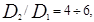
где D1 и D2 — средние диаметры частиц материала соседних слоев обсыпки.
10. При подборе гравийного материала фильтров надлежит выдерживать соотношение:
для блочных из пористого бетона или из пористой керамики
для клеевых
где Dср — средний диаметр частиц гравия в блоке фильтра.
11. Материал, используемый для фильтров в скважинах, следует обеззараживать.
Приложение 3
Рекомендуемое
ОПРОБОВАНИЕ
И РЕЖИМНЫЕ НАБЛЮДЕНИЯ
ВОДОЗАБОРОВ ПОДЗЕМНЫХ ВОД
1. Для установления соответствия фактического дебита водозабора подземных вод принятому в проекте надлежит предусматривать их опробование откачками.
2. Откачки должны производиться при двух понижениях: с дебитом, равным принятому в проекте, и на 25—30 % больше его.
3. Общая продолжительность откачек должна составлять 1—2 сут на каждое понижение после установления постоянного динамического уровня при заданном дебите.
В случае неустановившегося режима продолжительность откачки должна быть достаточной для установления закономерности снижения дебита при постоянном уровне или уровня при постоянном дебите.
4. В проектах водозаборов подземных вод должна предусматриваться режимная сеть наблюдательных скважин или водомерных постов (при каптаже родников) для наблюдения за уровнями, дебитом, температурой и качеством воды. При этом следует использовать эксплуатационные скважины и другие водозаборные сооружения, оборудованные по проекту с учетом производства по ним полного комплекса режимных наблюдений.
5. Конструкция наблюдательных скважин, их количество и расположение должны приниматься в соответствии с гидрогеологическими условиями, при этом наблюдательные скважины необходимо оборудовать фильтром диаметром 89—110 мм.
6. Глубина наблюдательных скважин должна приниматься из условия расположения:
в водоносном пласте со свободной поверхностью при глубине эксплуатационных скважин до 15 м — фильтра на той же глубине, что и в эксплуатационных скважинах;
в водоносном пласте со свободной поверхностью при глубине эксплуатационных скважин более 15 м — верха рабочей части фильтра на 2—3 м ниже возможного наинизшего динамического уровня в водоносном пласте;
в напорном водоносном пласте при динамическом уровне выше кровли пласта — рабочей части фильтра в верхней трети водоносного пласта; при осушении части пласта — верха фильтра на 2—3 м ниже динамического уровня,
в водоносных пластах, эксплуатация которых рассчитана на сработку статических запасов, — верха рабочей части фильтра на 2—3 м ниже положения динамического уровня к концу расчетного срока эксплуатации водозабора.
7. Глубину наблюдательных скважин на водозаборах из шахтных колодцев, лучевых и горизонтальных водозаборах надлежит принимать равной глубине заложения водоприемных частей водозаборов.
8. В наблюдательных скважинах верховодка и водоносные пласты, залегающие выше эксплуатационного водоносного пласта, должны быть изолированы.
9. При необходимости надлежит предусматривать устройство скважин для наблюдения за верхними неэксплуатируемыми водоносными пластами.
10. Для предохранения наблюдательных скважин от засорения верх фильтровой колонны или обсадной трубы должен быть закрыт крышкой.
11. На участках инфильтрационных водозаборов наблюдательные скважины надлежит размещать также между водозабором и поверхностным водотоком или водоемом и при необходимости на их противоположном берегу в зоне действия водозабора. При наличии очагов возможного загрязнения подземных вод в районе водозабора (мест сброса промышленных сточных вод, водоемов с высокоминерализованными водами, заболоченных торфяников и т.п.) между ними и водозаборами надлежит предусматривать дополнительные наблюдательные скважины.
Приложение 4
Рекомендуемое
УДАЛЕНИЕ
ОРГАНИЧЕСКИХ ВЕЩЕСТВ,
ПРИВКУСОВ И ЗАПАХОВ
1. Для удаления органических веществ из воды, снижения интенсивности привкусов и запахов в качестве окислителей следует применять хлор, перманганат калия, озон или их комбинации. Вид окислителя и его дозу следует устанавливать на основании данных технологических изысканий. Ориентировочно дозы окислителей допускается принимать по табл. 1.
Таблица 1
|
Перманганатная окисляемость воды, мг О/л |
Доза окислителя, мг/л |
||
|
хлора |
перманганата калия |
озона |
|
|
8-10 |
4-8 |
2-4 |
1-3 |
|
10-15 |
8-12 |
4-6 |
3-5 |
|
15-25 |
12-14 |
6-10 |
5-8 |
2. Основные места ввода окислителей и последовательность введения реагентов надлежит принимать по табл. 2.
Таблица 2
|
Место ввода окислителей |
Последовательность введения реагентов в воду |
|
1. Хлор перед сорбционной очисткой |
Хлорирование не менее чем за 2 мин до фильтрования через гранулированный активный уголь или введения порошкообразного активного угля |
|
2. Озон непосредственно перед сорбционной очисткой |
Озонирование с последующим фильтрованием через гранулированный активный уголь или обработкой порошкообразным активным углем |
|
3. Хлор перед коагулированием |
Первичное хлорирование, через 2—3 мин — коагулирование |
|
4. Хлор и перманганат калия перед коагулированием |
Первичное хлорирование, через 10 мин введение перманганата калия, через 2—3 мин — коагулирование |
|
5. Озон перед коагулированием |
Озонирование, последующее коагулирование |
|
6. Хлор и озон перед коагулированием |
Первичное хлорирование с дозой в пределах хлоропоглощаемости воды, через 0,5—1 ч — озонирование и последующее коагулирование |
|
7. Озон перед осветлительными фильтрами или в очищенную воду |
Примечание. Должна быть предусмотрена возможность изменения места ввода реагентов при эксплуатации сооружений.
Допускается введение частей дозы окислителей перед сооружениями разного типа.
3. При невозможности введения реагентов с требуемыми разрывами во времени в трубопроводы или в основные технологические сооружения должны быть предусмотрены специальные контактные камеры.
4. Применение озона и перманганата калия в хозяйственно-питьевом водоснабжении не исключает необходимости хлорирования очищенной воды для ее обеззараживания.
5. Гранулированный активный уголь следует применять в качестве загрузки сорбционных фильтров, располагаемых после осветлительных фильтров или других сооружений, обеспечивающих очистку воды от взвеси до 1,5 мг/л.
При обосновании допускается применять совмещенные осветлительно-сорбционные фильтры.
6. Высота угольной загрузки Ну.з, м, должна приниматься не менее
где vр.ф — расчетная скорость фильтрования, принимаемая 10—15 м/ч;
tу — время прохождения воды через слой угля, принимаемое 10—15 мин в зависимости от сорбционных свойств угля, концентрации и вида загрязнений воды и других факторов и уточняемое технологическими изысканиями.
7. Для загрузки сорбционных фильтров следует применять гранулированные активные угли марок АГ-З, АГ-М и др. с учетом требований п. 1.3.
Интенсивность промывки водой сорбционной загрузки фильтра следует принимать в зависимости от требуемого относительного расширения активного угля по табл. 3.
Таблица 3
|
Тип активного угля |
Требуемая величина относительного расширения загрузки, % |
Интенсивность промывки фильтров, л/(с×м2) |
Продолжительность промывки фильтров, мин |
|
АГ-З |
25 |
12¾14 |
8¾7 |
|
35 |
14¾16 |
7¾6 |
|
|
45 |
16¾18 |
6¾5 |
|
|
АГ-М |
30 |
8¾9 |
12¾10 |
|
45 |
9—10 |
10—8 |
|
|
60 |
11¾12 |
8¾7 |
8. Расстояние от поверхности фильтрующей загрузки до кромок желобов надлежит определять согласно п. 6.113 и табл. 23.
9. Определение потери напора в сорбционном слое из активного угля, расчет и конструирование распределительной системы устройств для подачи промывной воды, желобов и других элементов сорбционных фильтров следует производить согласно п.п. 6.103—6.112.
10. Порошкообразный активный уголь надлежит вводить в воду до коагулянта с интервалом времени не менее 10 мин. Дозу угля перед фильтрами следует принимать до 5 мг/л.
11. Транспортирование угольного порошка со склада реагента к установке приготовления угольной пульпы допускается осуществлять гидро- и пневмоспособами. При применении пневмоспособа установка транспортирования угольного порошка должна быть герметизирована и обеспечена средствами пожарной безопасности, местным противовзрывным клапаном и заземлена.
Для дозирования угольной пульпы следует предусмотреть замачивание угля в течение 1 ч в баках с гидравлическим или механическим перемешиванием. Насосы для перекачивания угольной пульпы должны быть стойкими к абразивному воздействию угля. Производительность циркуляционных насосов должна обеспечивать 4—5-кратный обмен замачиваемого реагента в течение времени замачивания.
Концентрацию угольной пульпы следует принимать до 8 %.
12. Трубопроводы для подачи угольной пульпы надлежит рассчитывать при скорости движения пульпы не менее 1,5 м/с; на трубопроводах должны быть предусмотрены ревизии для прочистки, плавные повороты и уклоны согласно п. 6.38.
13. Конструкция дозаторов должна обеспечивать гидравлическое перемешивание пульпы при постоянном уровне ее в дозаторе.
14. Вместимость баков с мешалкой для приготовления раствора перманганата калия следует определять исходя из концентрации раствора реагента 0,5—2 % (по товарному продукту), при этом время полного растворения реагента следует принимать равным 4—6 ч при температуре воды 20 °С и 2—3 ч при температуре воды 40 °С.
15. Количество растворных или растворно-расходных баков для перманганата калия должно быть не менее двух (один резервный). Для дозирования раствора перманганата калия следует принимать дозаторы, предназначенные для работы на отстоенных растворах.
Приложение 5
Рекомендуемое
СТАБИЛИЗАЦИОННАЯ
ОБРАБОТКА ВОДЫ,
ОБРАБОТКА ИНГИБИТОРАМИ ДЛЯ УСТРАНЕНИЯ КОРРОЗИИ СТАЛЬНЫХ И ЧУГУННЫХ ТРУБ
1. При отсутствии данных технологических анализов стабильность воды допускается определять по индексу насыщения карбонатом кальция J
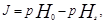
где рН0 — водородный показатель, измеренный с помощью рН-метра;
рНs — водородный показатель в условиях насыщения воды карбонатом кальция, определяемый по номограмме рис. 1, исходя из значений содержания кальция ССа, общего солесодержания Р, щелочности Щ и температуры воды t.
2. Для защиты металлических труб от коррозии и образования бугристых коррозионных отложений стабилизационную обработку воды следует предусматривать при индексе насыщения менее 0,3 более трех месяцев в году.
При определении необходимости стабилизационной обработки воды надлежит учитывать изменение ее качества в результате предшествующей обработки (коагулирования, умягчения, аэрации и т.п.).
3. Для вод, подвергаемых обработке минеральными коагулянтами (сернокислым алюминием, хлорным железом и т.п.), при подсчете индекса насыщения следует учитывать снижение рН и щелочности воды вследствие добавления в нее коагулянта.
Щелочность воды после коагулирования ЩК, мг-экв/л, следует определять по формуле
(2)
где Щ0 — щелочность исходной воды (до коагулирования), мг-экв/л;
ДК —доза коагулянта в расчете на безводный продукт, мг/л;
еК — эквивалентная масса безводного вещества коагулянта, мг/мг-экв, принимаемая согласно п. 6.19.
Количество свободной двуокиси углерода в воде после коагулирования следует определять по номограмме рис. 2 при известной величине рН коагулированной воды, а при неизвестном рН по формуле
(3)
где (СО2)0 — концентрация двуокиси углерода в исходной воде до коагулирования, мг/л.
При известном значении (СО2)св по номограмме рис. 2 определяется величина рН воды после обработки коагулянтом.
4. При положительном индексе насыщения для предупреждения зарастания труб карбонатом кальция воду следует обрабатывать кислотой (серной или соляной), гексаметафосфатом или триполифосфатом натрия.
Рис. 1. Номограмма для определения рН насыщения воды карбонатом кальция (рНs)
Пример. Дано: ССа = 100 мг/л; Щ = 2 мг-экв/л; Р = 3 г/л; t = 40 °С.
Ответ: рНs = 7,47
Рис. 2. Номограмма для определения концентрации свободной двуокиси углерода в природной воде (или рН)
Пример. Дано: рН = 7, Р = 1 г/л; Щ = 1 мг-экв/л; t = 80 °С.
Дозу кислоты Дкис, мг/л, (в расчете на товарный продукт) следует определять по формуле
где aкис — коэффициент, определяемый по номограмме рис. 3;
Щ — щелочность воды до стабилизационной обработки, мг-экв/л;
екис — эквивалентная масса кислоты, мг/мг-экв (для серной кислоты — 49, для соляной кислоты — 36,5);
Скис — содержание активной части в товарной кислоте, %.
Дозу гексаметафосфата или триполифосфата натрия (в расчете на Р2О5) надлежит принимать:
для хозяйственно-питьевых водопроводов — не более 2,5 мг/л (3,5 мг/л в расчете на РО4);
для производственных водопроводов — до 4 мг/л.
Рис. 3 Номограмма для определения коэффициента aкис
при расчете дозы кислоты
5. При отрицательном индексе насыщения воды карбонатом кальция для получения стабильной воды следует предусматривать ее обработку щелочными реагентами (известью, содой или этими реагентами совместно), гексаметафосфатом или триполифосфатом натрия.
Дозу извести следует определять по формуле
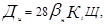
где Ди —доза извести, мг/л, в расчете на СаО;
bн — коэффициент, определяемый по номограмме рис. 4 в зависимости от рН воды (до стабилизационной обработки) и индекса насыщения J;
Кt — коэффициент, зависящий от температуры воды: при t = 20 °С – Кt = 1, при t = 50 °С – Кt = 1,3;
Щ — щелочность воды до стабилизационной обработки, мг-экв/л.
Рис.
4. Номограмма для определения коэффициента bн
при расчете дозы щелочи
Дозу соды в расчете на Nа2СО3, мг/л, надлежит принимать в 3—3,5 раза больше дозы извести в расчете на СаО, мг/л.
Если по формуле (5) доза извести Дн/28, мг-экв/л, получается больше величины dщ, мг-экв/л, определяемой по формуле
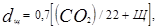
то в воду кроме извести в количестве dщ, мг-экв/л, следует вводить также соду, дозу которой Дс , мг/л, надлежит определять по формуле
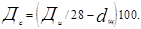
Следует предусматривать возможность одновременно с введением щелочных реагентов дозировать гексаметафосфат или триполифосфат натрия дозой 0,5—1,5 мг/л (в расчете на Р2О5) для повышения степени равномерности распределения защитной карбонатной пленки по длине трубопроводов.
При проектировании систем обработки воды гексаметафосфатом натрия или триполифосфатом натрия (без щелочных реагентов) для борьбы с коррозией стальных и чугунных труб производственных водопроводов следует предусматривать дозы этих реагентов 5—10 мг/л (в расчете на Р2О5). Для хозяйственно-питьевых водопроводов дозы указанных реагентов не должны превышать 2,5 мг/л в расчете на Р2О5.
В случаях обработки воды гексаметафосфатом или триполифосфатом натрия без щелочных реагентов при вводе в эксплуатацию участков новых трубопроводов для снижения интенсивности коррозии следует предусматривать заполнение их на 2—3 сут раствором гексаметафосфата или триполифосфата натрия концентрацией 100 мг/л (в расчете на Р2О5) с последующим сбросом этого раствора и промывкой трубопроводов водой с дозами указанных реагентов (в расчете на Р2О5): 5—10 мг/л — для производственных водопроводов и 2,5 мг/л — для хозяйственно-питьевых водопроводов.
6. Приготовление растворов гексаметафосфата и триполифосфата натрия для обработки воды должно производиться в растворорасходных баках с антикоррозионной защитой. Концентрацию растворов надлежит принимать от 0,5 до 3 % в расчете на товарные продукты, при этом продолжительность растворения с применением механических мешалок или сжатого воздуха — 4 ч при температуре воды 20 °С и 2 ч при температуре 50 °С.
7. При стабилизационной обработке воды следует предусматривать возможность введения щелочных реагентов в смеситель, перед фильтрами и в фильтрованную воду перед вторичным хлорированием.
При введении реагента перед фильтрами и в фильтрованную воду должна быть обеспечена высокая степень очистки щелочных реагентов и их растворов. Приготовление известкового молока и раствора соды и их дозирование следует предусматривать согласно п.п. 6.34—6.39
Введение щелочных реагентов перед смесителями и фильтрами допускается производить в тех случаях, когда это не ухудшает эффекта очистки воды (в частности, снижения цветности).
8. Для формирования защитной пленки карбоната кальция на внутренней поверхности трубопровода в первый период его эксплуатации надлежит предусматривать возможность увеличения доз щелочных реагентов по сравнению с определяемыми по формулам (6) и (7) в два раза, а в дальнейшем длительно на 10—20 % больше определяемой по тем же формулам.
9. Уточнение доз щелочных реагентов, а также продолжительности периода формирования защитной карбонатной пленки производится в процессе эксплуатации трубопровода на основе проведения технологических и химических анализов воды, а также наблюдений за индикаторами коррозии. Этими наблюдениями определяется также целесообразность поддержания небольшого пересыщения воды карбонатом кальция после начального периода формирования защитной карбонатной пленки на стенках труб.
10. При формировании защитной карбонатной пленки в трубопроводах систем хозяйственно-питьевого водоснабжения значение рН обработанной щелочными реагентами воды не должно превышать величины, допускаемой ГОСТ 2874-82.
11. Проектирование стабилизационной обработки маломинерализованных вод с содержанием кальция менее 20—30 мг/л и щелочностью 1—1,5 мг-экв/л следует производить только на основе предпроектных технологических изысканий. При необходимости повышения концентраций в воде кальция Са2+ и гидрокарбонатов (НСО3) следует предусматривать совместную обработку воды двуокисью углерода (СО2) и известью.
Приложение 6
Рекомендуемое
ФТОРИРОВАНИЕ ВОДЫ
1. В качестве реагентов для фторирования воды следует применять кремнефтористый натрий, фтористый натрий, кремнефтористый аммоний, кремнефтористоводородную кислоту.
Примечание. При обосновании допускается по согласованию с Главным санитарно-эпидемиологическим управлением Минздрава СССР применение других фторсодержащих реагентов.
2. Дозу реагентов Дф, г/м3 надлежит определять по формуле
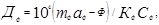
где mф — коэффициент, зависящий от места ввода реагента в обрабатываемую воду, принимаемый при вводе в чистую воду — 1, при вводе перед фильтрами при двухступенчатой очистке воды — 1,1;
аф — необходимое содержание фтора в обрабатываемой воде в зависимости от климатического района расположения населенного пункта, устанавливаемое органами санитарно-эпидемиологической службы, г/м3;
Ф — содержание фтора в исходной воде, г/м3.
Кф — содержание фтора в чистом реагенте, %, принимаемое для натрия кремнефтористого — 61, для натрия фтористого — 45, для аммония кремнефтористого — 64, для кислоты кремнефтористоводородной — 79;
Сф — содержание чистого реагента в товарном продукте, %.
3. Ввод фторсодержащих реагентов надлежит предусматривать, как правило, в чистую воду перед ее обеззараживанием. Допускается введение фторсодержащих реагентов перед фильтрами при двухступенчатой очистке воды.
4. При использовании кремнефтористого натрия следует принимать технологические схемы с приготовлением ненасыщенного раствора реагента в расходных баках или насыщенного раствора реагента в сатураторах одинарного насыщения.
При применении фтористого натрия, кремнефтористого аммония и кремнефтористоводородной кислоты следует принимать технологические схемы с приготовлением, ненасыщенного раствора в расходных баках.
Для порошкообразных реагентов допускается применение схем с сухим дозированием реагентов.
5. Производительность сатуратора qс, л/ч (по насыщенному раствору реагента), следует определять по формуле
где qс — расход обрабатываемой воды, м3/ч;
Рф — растворимость кремнефтористого натрия, г/л, составляющая при температуре 0 °С — 4,3; 20 °С — 7,3; 40 °С — 10,3.
При определении объема сатураторов время пребывания в них раствора следует принимать не менее 5 ч, скорость восходящего потока воды в сатураторе — не более 0,1 м/с.
6. Концентрацию раствора реагента при приготовлении ненасыщенных растворов в расходных баках следует принимать: для кремнефтористого натрия — 0,25 % при температуре раствора 0 °С и до 0,5 % при 25 °С; фтористого натрия — 2,5 % при 0 °С; кремнефтористого аммония — 7 % при 0 °С; кремнефтористоводородной кислоты — 5 % при 0 °С.
Перемешивание раствора следует производить с помощью механических мешалок или воздуха.
Интенсивность подачи воздуха надлежит принимать 8—10 л/(с×м2).
7. Растворы фторсодержащих реагентов должны быть перед использованием отстоены в течение 2 ч.
8. При применении схемы с использованием дозаторов сухого реагента необходимо предусматривать специальную камеру для смешения с водой и растворения отдозированного реагента.
Перемешивание раствора в камере следует предусматривать с помощью гидравлических или механических устройств. При этом концентрацию раствора в камере рекомендуется принимать до 25 % растворимости реагента при данной температуре, а минимальное время пребывания раствора в камере 7 мин.
9. При применении в качестве реагента кремнефтористого натрия, кремнефтористого аммония и кремнефтористоводородной кислоты следует предусматривать мероприятия против коррозии баков, трубопроводов и дозаторов.
10. Фторсодержащие реагенты следует хранить на складе в заводской таре.
Кремнефтористоводородную кислоту следует хранить в баках с выполнением мероприятий, предотвращающих ее замерзание.
11. Помещение фтораторной установки и склада фторсодержащих реагентов должно быть изолировано от других производственных помещений.
Места возможного выделения пыли должны быть оборудованы местными отсосами воздуха, а растаривание кремнефтористого натрия и фтористого натрия должно производиться под защитой шкафного укрытия.
12. При применении фторсодержащих реагентов, учитывая их токсичность, необходимо предусматривать общие и индивидуальные мероприятия по защите обслуживающего персонала.
Приложение 7
Рекомендуемое
УМЯГЧЕНИЕ ВОДЫ
1. Количество воды, подлежащей умягчению, qу, выраженное в процентах общего количества воды, следует определять по формуле
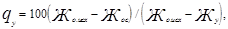
где Жо.исх — общая жесткость исходной воды, мг-экв/л;
Жос — общая жесткость воды, подаваемой в сеть, мг-экв/л;
Жу — жесткость умягченной воды, мг-экв/л.
Реагентная декарбонизация воды
и известково-содовое умягчение
2. В составе установок для реагентной декарбонизации воды и известково-содового умягчения следует предусматривать: реагентное хозяйство, смесители, осветлители со взвешенным осадком, фильтры и устройства для стабилизационной обработки воды.
В отдельных случаях (см. п. 8) вместо осветлителей со взвешенным осадком могут применяться вихревые реакторы.
3. При декарбонизации остаточная жесткость умягченной воды может быть получена на 0,4—0,8 мг-экв/л больше некарбонатной жесткости, а щелочность 0,8—1,2 мг-экв/л; при известково-содовом умягчении - остаточная жесткость 0,5—1 мг-экв/л и щелочность 0,8— 1,2 мг-экв/л. Нижние пределы могут быть получены при подогреве воды до 35—40 °С.
4. При декарбонизации и известково-содовом умягчении воды известь надлежит применять в виде известкового молока. При суточном расходе извести менее 0,25 т (в расчете на СаО) известь допускается вводить в умягчаемую воду в виде насыщенного известкового раствора, получаемого в сатураторах.
5. Дозы извести Ди, мг/л, для декарбонизации воды, считая по СаО, надлежит определять по формулам:
а) при соотношении между концентрацией в воде кальция и карбонатной жесткостью (Са2+)/20>Жк
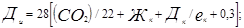
б) при соотношении между концентрацией в воде кальция и карбонатной жесткостью (Са2+)/20<Жк
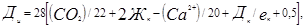
где (СО2) — концентрация в воде свободной двуокиси углерода, мг/л;
(Са2+) — содержание в воде кальция, мг/л;
Дк — доза коагулянта FeCl3 или FeSO4 (в расчете на безводные продукты), мг/л;
ек — эквивалентная масса активного вещества коагулянта, мг/мг-экв (для FеСl3 —54, для FeSO4 ¾76).
6. Дозы извести и соды при известково-содовом умягчении воды следует определять по формулам:
доза извести Ди, мг/л, в расчете на СаО
доза соды Дс, мг/л, в расчете на Na2CO3
где (Mg2+) — содержание в воде магния, мг/л;
Жн.к — некарбонатная жесткость воды, мг-экв/л.
7. В качестве коагулянтов при умягчении воды известью или известью и содой следует применять хлорное железо или железный купорос.
Дозы коагулянта в расчете на безводные продукты FeCI3 или FeSO4 надлежит принимать 25 — 35 мг/л с последующим уточнением в процессе эксплуатации водоумягчительной установки.
8. При обосновании допускается производить декарбонизацию или известково-содовое умягчение воды в вихревых реакторах с получением крупки карбоната кальция и ее обжигом в целях утилизации в качестве извести-реагента.
Умягчение воды в вихревых реакторах следует принимать при соотношении (Са2+)/20 мг/л > Жк, содержании магния в исходной воде не более 15 мг/л и перманганатной окисляемости не более 10 мг О/л.
Окончательное осветление воды после вихревых реакторов следует производить на фильтрах.
9. Для расчета вихревых реакторов следует принимать: скорость входа в реактор 0,8—1 м/с; угол конусности 15—20°; скорость восходящего движения воды на уровне водоотводящих устройств 4—6 мм/с. В качестве контактной массы для загрузки вихревых реакторов следует применять молотый известняк, размолотую крупку карбоната кальция, образовавшуюся в вихревых реакторах, или мраморную крошку.
Крупность зерен контактной массы должна быть 0,2—0,3 мм, количество ее — 10 кг на 1 м3 объема вихревого реактора. Контактную массу надлежит догружать при каждом выпуске крупки из вихревого реактора.
Известь следует вводить в нижнюю часть реактора в виде известкового раствора или молока. При обработке воды в вихревых реакторах коагулянт добавлять не следует.
Примечание. При (Са2+)/20<Жк декарбонизацию воды следует производить в осветителях с доосветлением воды на фильтрах.
10. Для выделения взвеси, образующейся при умягчении воды известью, а также известью и содой, следует применять осветлители со взвешенным осадком (специальной конструкции).
Скорость движения воды в слое взвешенного осадка следует принимать 1,3—1,6 мм/с, вода после осветлителя должна содержать взвешенных веществ не более 15 мг/л.
11. Фильтры для осветления воды, прошедшей через вихревые реакторы или осветлители, следует загружать песком или дробленым антрацитом с крупностью зерен 0,5—1,25 мм и коэффициентом неоднородности 2—2,2. Высота слоя загрузки 0,8—1 м, скорость фильтрования — до 6 м/ч.
Допускается применение двухслойных фильтров.
Фильтры надлежит оборудовать устройствами для верхней промывки.
Натрий-катионитный метод умягчения воды
12. Натрий-катионитный метод следует применять для умягчения подземных вод и вод поверхностных источников с мутностью не более 5—8 мг/л и цветностью не более 30°. При натрий-катионировании щелочность воды не изменяется.
13. При одноступенчатом натрий-катионировании общая жесткость воды может быть снижена до 0,05—0,1 г-экв/м3, при двухступенчатом — до 0,01 г-экв/м3.
14. Объем катионита Wк, м3 в фильтрах первой ступени следует определять по формуле
где qу — расход умягченной воды, м3/ч;
Жо.исх — общая жесткость исходной воды, г-экв/м3;
— рабочая обменная емкость катионита при натрий-катионировании; г-экв/м3;
nр — число регенераций каждого фильтра в сутки, принимаемое в пределах от одной до трех.
15. Рабочую обменную емкость катионита при натрий-катионировании, г-экв/м3 следует определять по формуле
(7)
где aNa — коэффициент эффективности регенерации натрий-катионита, учитывающий неполноту регенерации катионита, принимаемый по табл. 1;
bNa — коэффициент, учитывающий снижение обменной емкости катионита по Ca2+ и Mq2+ вследствие частичного задержания катионитов Na+, принимаемый по табл. 2, в которой СNa — концентрация натрия в исходной воде, г-экв/м3 (СNa = (Na+)/23);
Еполн — полная обменная емкость катионита, г-экв/м3, определяемая по заводским паспортным данным. При отсутствии таких данных при расчетах допускается принимать: для сульфоугля крупностью 0,5—1,1 мм — 500 г-экв/м3; для катионита КУ-2 крупностью 0,8—1,2 мм — 1500—1700 г-экв/м3.
qуд — удельный расход воды на отмывку катионита, м3 на 1 м3 катионита, принимаемый равным для сульфоугля — 4 и для КУ-2 ¾ 6.
|
Удельный расход поваренной соли на регенерацию катионита, г на г-экв рабочей обменной емкости |
100 |
150 |
200 |
250 |
300 |
|
Коэффициент эффективности регенерации катионита aNa |
0,62 |
0,74 |
0,81 |
0,86 |
0,9 |
|
Cna/Жо.исх |
0,01 |
0,05 |
0,1 |
0,5 |
1 |
5 |
10 |
|
bNa |
0,93 |
0,88 |
0,83 |
0,7 |
0,65 |
0,54 |
0,5 |
16. Площадь катионитных фильтров первой ступени Fк, м2 следует определять по формуле
где Нк — высота слоя катионита в фильтре, принимаемая от 2 до 2,5 м (большую высоту загрузки следует принимать при жесткости воды более 10 г-экв/м3);
Wк — определяется по формуле (6).
Количество катионитных фильтров первой ступени надлежит принимать: рабочих — не менее двух, резервных — один.
17. Скорость фильтрования воды через катионит для напорных фильтров первой ступени при нормальном режиме не должна превышать при общей жесткости воды:
до 5 г-экв/м3 — 25 м/ч;
5—10 г-экв/м3 — 15 м/ч;
10—15 г-экв/м3 — 10 м/ч.
Примечание. Допускается кратковременное увеличение скорости фильтрования на 10 м/ч по сравнению с указанными выше при выключении фильтров на регенерацию или ремонт.
18. Потерю напора в напорных катионитных фильтрах при фильтровании следует определять как сумму потерь напора в коммуникациях фильтра, в дренаже и катионите. Потерю напора в фильтре следует принимать по табл. 3.
Таблица 3
|
Высота слоя, м, катионита крупностью 0,5–1,1 мм или 0,8–1,2 мм |
Потери напора, м, в напорном катионитном фильтре при скорости фильтрования, м/ч |
||||
|
5 |
10 |
15 |
20 |
25 |
|
|
2 |
4 |
5 |
5,5 |
6 |
7 |
|
2,5 |
4,5 |
5,5 |
6 |
6,5 |
7,5 |
19. В открытых катионитных фильтрах слой воды над катионитом следует принимать 2,5—3 м и скорость фильтрования не более 15 м/ч.
20. Интенсивность подачи воды для взрыхления катионита следует принимать 4 л/(с×м2) при крупности зерен катионита 0,5—1,1 мм и 5 л/(с×м2) при крупности 0,8—1,2 мм. Продолжительность взрыхления надлежит принимать 20—30 мин. Подачу воды на взрыхление катионита следует предусматривать согласно п. 6.117.
21. Регенерацию загрузки катионитных фильтров следует предусматривать технической поваренной солью. Расход поваренной соли Рс кг, на одну регенерацию натрий-катионитного фильтра первой ступени следует определять по формуле
где fк — площадь одного фильтра, м2;
Нк — высота слоя катионита в фильтре, м, принимаемая согласно п. 16;
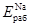
ас — удельный расход соли на 1 г-экв рабочей обменной емкости катионита, принимаемый 120—150 г/г-экв для фильтров первой ступени при двухступенчатой схеме и 150—200 г/г-экв при одноступенчатой схеме.
Жесткость умягченной воды при различных удельных расходах соли приведена на рис. 1.
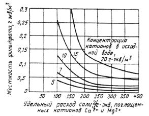
Рис. 1. График для определения остаточной жесткости воды, умягченной одноступенчатым натрий-катионированием
Концентрацию регенерационного раствора для фильтров первой ступени следует принимать 5—8 %.
Скорость фильтрования регенерационного раствора через катионит фильтров первой ступени следует принимать 3—4 м/ч; скорость фильтрования исходной воды для отмывки катионита — 6—8 м/ч, удельный расход отмывочной воды — 5—6 м3 на 1 м3 катионита.
22. Натрий-катионитные фильтры второй ступени следует рассчитывать согласно п.п. 20, 21, при этом следует принимать: высоту слоя катионита — 1,5 м; скорость фильтрования — не более 40 м/ч; удельный расход соли для регенерации катионита в фильтрах второй ступени 300—400 г на 1 г-экв задержанных катионов жесткости; концентрацию регенерационного раствора — 8—12 %.
Потерю напора в фильтре второй ступени следует принимать 13—15 м.
Отмывку катионита в фильтрах второй ступени надлежит предусматривать фильтратом первой ступени.
При расчете фильтров второй ступени общую жесткость поступающей на них воды следует принимать 0,1 г-экв/м3 рабочую емкость поглощения катионита — 250—300 г-экв/м3.
23. При обосновании для умягчения воды повышенной минерализации допускается применение схем противоточного или ступенчато-противоточного натрий-катионирования.
Водород-натрий-катионитный метод умягчения воды
24. Водород-натрий-катионитный метод следует принимать для удаления из воды катионов жесткости (кальция и магния) и одновременного снижения щелочности воды.
Этот метод следует применять для обработки подземных вод и вод поверхностных источников с мутностью не более 5—8 мг/л и цветностью не более 30°.
Умягчение воды надлежит принимать по схемам:
параллельного водород-натрий-катионирования, позволяющего получить фильтрат общей жесткостью 0,1 г-экв/м3 с остаточной щелочностью 0,4 г-экв/м3; при этом суммарное содержание хлоридов и сульфатов в исходной воде должно быть не более 4 г-экв/м3 и натрия не более 2 г-экв/м3.
последовательного водород-натрий-катионирования с «голодной» регенерацией водород-катионитных фильтров; при этом общая жесткость фильтрата составит 0,01 г-экв/м3, щелочность — 0,7 г-экв/м3;
водород-катионирования с «голодной» регенерацией и последующим фильтрованием через буферные саморегенерирующиеся катионитные фильтры; при этом общая жесткость фильтрата будет на 0,7—1,5 г-экв/м3 выше некарбонатной жесткости исходной воды, щелочность фильтрата — 0,7—1,5 г-экв/м3. Катионитные буферные фильтры допускается не предусматривать, если не требуется поддержания остаточной жесткости, щелочности и рН в строго определенных пределах. Следует предусматривать возможность регенерации буферных фильтров раствором технической поваренной соли.
25. Соотношения расходов воды, подаваемой на водород-катионитные и натрий-катионитные фильтры при умягчении воды параллельным водород-натрий-катионированием, следует определять по формулам:
расход воды, подаваемой на водород-катионитные фильтры, м3/ч,
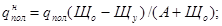
расход воды,
подаваемой на натрий-катионитные фильтры 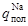
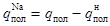
где qпол — полезная производительность водород-натрий-катионитной установки, м3/ч;
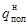
Що — щелочность исходной воды, г-экв/м3;
Щу — требуемая щелочность умягченной воды, г-экв/м3;
А — суммарное содержание в умягченной воде анионов сильных кислот (сульфатов, хлоридов, нитратов и др.), г-экв/м3.
Примечания: 1. Водород-катионитные фильтры могут быть использованы и как натрий-катионитные, поэтому должна быть предусмотрена возможность регенерации двух-трех водород-катионитных фильтров раствором технической поваренной соли.
2. Расчет трубопроводов и фильтров следует производить на режиме при наибольшей нагрузке на водород-катионитные фильтры, наибольшей щелочности (Щ) воды и наименьшем содержании в ней анионов сильных кислот (А); при наибольшей нагрузке на натрий-катионитные фильтры, наименьшей щелочности воды и наибольшем содержании в ней анионов сильных кислот.
26. Объем катионита WН, м3, в водород-катионитных фильтрах следует определять по формуле
Объем катионита WNa, м3, в натрий-катионитных фильтрах следует определять по формуле
где Жo — общая жесткость умягченной воды, г-экв/м3
np — число регенераций каждого фильтра в сутки, принимаемое согласно п. 14;
— рабочая обменная емкость водород-катионита, г-экв/м3;
— рабочая обменная емкость натрий-катионита, г-экв/м3;
СNa — концентрация в воде натрия, г-экв/м3, определяемая согласно п. 15.
27. Рабочую обменную емкость , г-экв/м3, водород-катионита следует определять по формуле
где aН — коэффициент эффективности регенерации водород-катионита, принимаемый по табл. 4;
Ск — общее содержание в воде катионитов кальция, магния, натрия и калия, г-экв/м3;
qуд — удельный расход воды на отмывку катионита после регенерации, принимаемый равным 4—5 м3 воды на 1 м3 катионита;
Еполн — паспортная полная обменная емкость катионита в нейтральной среде, г-экв/м3.
|
Удельный расход серной кислоты на регенерацию катионита, г/г-экв, рабочей обменной емкости |
50 |
100 |
150 |
200 |
|
Коэффициент эффективности регенерации водород-катионита, aв |
0,68 |
0,85 |
0,91 |
0,92 |
При отсутствии паспортных данных Еполн следует принимать согласно п. 15.
28. Площадь водород-катионитных и натрий-катионитных фильтров FН, м2, и FNa , м2, следует определять по формуле
где Нк — высота слоя катионита в фильтре, м, принимаемая согласно п. 16.
Потерю напора в водород-катионитных фильтрах, интенсивность взрыхления и скорость фильтрования следует принимать согласно п.п. 18—20.
29. Количество рабочих водород-катионитных и натрий-катионитных фильтров при круглосуточной работе должно быть не менее двух.
Количество резервных водород-катионитных фильтров надлежит принимать: один — при количестве рабочих фильтров до шести и два — при большем количестве. Резервные натрий-катионитные фильтры устанавливать не следует, но должна быть предусмотрена возможность использования резервных водород-катионитных фильтров в качестве натрий-катионитных согласно примеч. к п. 25.
30. Регенерацию водород-катионитных фильтров надлежит принимать 1—1,5 %-ным раствором серной кислоты. Допускается разбавление серной кислоты до указанной концентрации водой непосредственно перед фильтрами в эжекторе.
Скорость пропуска регенерационного раствора серной кислоты через слой катионита должна быть не менее 10 м/ч с последующей отмывкой катионита неумягченной водой, пропускаемой через слой катионита сверху вниз со скоростью 10 м/ч.
Отмывка должна заканчиваться при кислотности фильтра, равной сумме концентраций сульфатов и хлоридов в воде, поступающей на отмывку.
Первую половину объема отмывочной воды следует направлять на нейтрализацию, в накопители и т.п., вторую половину — в баки для взрыхления катионита.
Примечание. Для регенерации водород-катионитных фильтров при обосновании допускается применение кислот соляной и азотной (для КУ-2).
31. Расход 100 %-ной кислоты РН, кг, на одну регенерацию водород-катионитного фильтра надлежит определять по формуле
(16)
где аН — удельный расход кислоты для регенерации катионита, г/г-экв, определяемый по рис. 2 в зависимости от требуемой жесткости фильтрата.
Рис.
2. График для определения общей жесткости воды,
умягченной водород-катионированием
32. Объемы мерника крепкой кислоты и бака для разбавленного раствора кислоты (если разбавление ее производится не перед фильтрами) надлежит определять из условия регенерации одного фильтра при количестве рабочих водород-катионитных фильтров до четырех и для регенерации двух фильтров при большем количестве.
33. Аппараты и трубопроводы для дозирования и транспортирования кислот следует проектировать с соблюдением правил техники безопасности при работе с кислотами.
34. Удаление двуокиси углерода из водород-катионированной воды или из смеси водород- и натрий-катионированной воды надлежит предусматривать в дегазаторах с насадками кислотоупорными керамическими размером 25´25´4 мм или с деревянной хордовой насадкой из брусков.
Площадь поперечного сечения дегазатора следует определять исходя из плотности орошения при керамической насадке 60 м3/ч на 1 м2 площади дегазатора, при деревянной хордовой насадке — 40 м3/ч.
Вентилятор дегазатора должен обеспечивать подачу 15 м3 воздуха на 1 м3 воды. Определение напора, развиваемого вентилятором, следует производить с учетом сопротивления керамической насадки, принимаемого равным 30 мм вод. ст. на 1 м высоты слоя насадки, сопротивления деревянной хордовой насадки — 10 мм вод. ст. Прочие сопротивления следует принимать равными 30—40 мм вод. ст.
Высоту слоя насадки, необходимую для снижения содержания двуокиси углерода в катионированной воде, следует определять по табл. 5 в зависимости от содержания свободной двуокиси углерода (СО2)св, г/м3, в подаваемой на дегазатор воде, определяемой по формуле
(CO2)cв=(CO2)0+44Щ0 (17)
где (СО2)св — содержание свободной двуокиси углерода в исходной воде, г/м3;
Що — щелочность исходной воды, г-экв/м3.

|
Содержание (СО2) в воде, подаваемой на дегазатор, г/м3 |
Высота слоя в дегазаторе, м |
|
|
кислотоупорная керамическая |
деревянная хордовая |
|
|
1 |
2 |
3 |
|
50 |
3 |
4 |
|
100 |
4 |
5,2 |
|
150 |
4,7 |
6 |
|
200 |
5,1 |
6,5 |
|
250 |
5,5 |
6,8 |
|
300 |
5,7 |
7 |
35. При проектировании установок для умягчения воды последовательным водород-натрий-катионированием с «голодной» регенерацией водород-катионитных фильтров следует принимать:
а) жесткость фильтрата , , г-экв/м3, водород-катионитных фильтров по формуле
где (Сl-) и (SO42-) — содержание хлоридов и сульфатов в умягченной воде, г-экв/м3;
Щост — остаточная щелочность фильтрата водород-катионитных фильтров, равная 0,7—1,5 г-экв/м3;
(Na+) — содержание натрия в умягченной воде, г-экв/м3;
б) расход кислоты на «голодную» регенерацию водород-катионитных фильтров — 50 г на 1 г-экв удаленной из воды карбонатной жесткости;
в) при «голодной» регенерации «условную» обменную емкость катионитов по иону НСО3- (до момента повышения щелочности фильтрата) для сульфоугля СК-1 — 250—300 г-экв/м3 для катионита КБ-4 — 500—600 г-экв/м3.
36. Для предупреждения попадания кислой воды на натрий-катионитные фильтры установок последовательного водород-натрий-катионирования, на случай регенерации водород-катионитных фильтров избыточной дозой кислоты, следует предусматривать подачу осветленной неумягченной воды в поток фильтрата водород-катионитных фильтров перед дегазатором.
37. Аппараты, трубопроводы и арматура, соприкасающиеся с кислой водой или фильтратом, должны быть защищены от коррозии или изготовлены из антикоррозионных материалов.
38. При параллельном водород-натрий-катионировании ионитные фильтры допускается при обосновании предусматривать с противоточной регенерацией или по схеме ступенчато-противоточного ионирования.
39. Отработавшие регенерационные растворы ионитных умягчительных установок в зависимости от местных условий следует направлять в накопители, бытовую или производственную канализацию; надлежит также рассматривать возможность обработки концентрированной части вод для их повторного использования.
Отработавшие растворы перед сбросом в канализацию после усреднения надлежит при необходимости нейтрализовать. При этом получающиеся осадки карбоната кальция и двуокиси магния следует выделять отстаиванием и направлять в накопитель.
Осветленные растворы хлорида натрия (из сточных вод от регенерации натрий-катионитных фильтров) надлежит повторно использовать для регенерации натрий-катионитных фильтров (при необходимости после нейтрализации).
Приложение 8
Рекомендуемое
ОПРЕСНЕНИЕ И ОБЕССОЛИВАНИЕ ВОДЫ
Ионный обмен
1. Обессоливание воды ионным обменом следует производить при общем солесодержании воды до 1500—2000 мг/л и суммарном содержании хлоридов и сульфатов не более 5 мг-экв/л.
Вода, подаваемая на ионитные фильтры, должна содержать, не более: взвешенных веществ — 8 мг/л, цветность — 30° и перманганатную окисляемость — 7 мг О/л.
Вода, не отвечающая этим требованиям, должна предварительно обрабатываться.
2. Обессоливание воды ионным обменом по одноступенчатой схеме надлежит предусматривать последовательным фильтрованием через водород-катионит и слабоосновный анионит с последующим удалением двуокиси углерода из воды на дегазаторах.
Солесодержание воды, обработанной по одноступенчатой схеме, должно составлять не более 20 мг/л (удельная электропроводность — 35—45 мкОм/см), содержание кремния при этом не снижается.
3. При двухступенчатой схеме обессоливания воды следует предусматривать: водород-катионитные фильтры первой ступени; анионитные фильтры первой ступени, загруженные слабоосновным анионитом; водород-катионитные фильтры второй ступени; дегазаторы для удаления двуокиси углерода; анионитные фильтры второй ступени, загруженные сильноосновным анионитом для удаления кремниевой кислоты.
Солесодержание воды, обработанной по двухступенчатой схеме, должно быть не более 0,5 мг/л (удельная электропроводность 1,6— 1,8 мкОм/см) и содержание кремнекислоты — не более 0,1 мг/л.
4. При трехступенчатой схеме обессоливания воды, в дополнение к схеме по п. 3, надлежит предусматривать третью ступень фильтров со смешанной загрузкой, состоящей из высококислотного катионита и высокоосновного анионита (ФСД).
Солесодержание воды, обработанной по трехступенчатой схеме, не должно превышать 0,1 мг/л (удельная электропроводность 0,3— 0,4 мкОм/см) и содержание кремнекислоты не более 0,02 мг/л.
5. Водород-катионитные фильтры первой ступени следует рассчитывать согласно указаниям п.п. 26, 27 прил. 7, дегазаторы — п. 34 прил. 7.
При обосновании водород-катионитные фильтры первой ступени следует предусматривать с противоточной регенерацией или по схеме ступенчато-противоточного ионирования.
6. Для водород-катионитных фильтров второй ступени надлежит принимать: скорость фильтрования до 50 м/ч; высоту слоя катионита — 1,5 м; удельный расход 100 %-ной серной кислоты — 100 г на 1 г-экв поглощенных катионов; емкость поглощения сульфоугля — 200 г-экв/м3; катионита КУ-2 — 400—500 г-экв/м3; расход воды на отмывку катионита после регенерации — 10 м3 на 1 м3 катионита. Отмывку следует производить водой, прошедшей через анионитные фильтры первой ступени.
Воду для отмывки катионитных фильтров второй ступени следует использовать для взрыхления водород-катионитных фильтров первой ступени и приготовления для них регенерационного раствора. Продолжительность регенерации и отмывки водород-катионитных фильтров второй ступени следует принимать 2,5—3 ч.
7. Площадь фильтрования F1, м2, анионитных фильтров первой ступени следует определять по формуле
(1)
где Q1 — производительность анионитных фильтров первой ступени, включая расход воды на собственные нужды последующих ступеней установки, м3/сут;
np — число регенераций анионитных фильтров первой ступени в сутки, принимаемое 1—2;
v1 —расчетная скорость фильтрования, м/ч, принимаемая не менее 4 и не более 30;
T1 — продолжительность работы каждого фильтра, ч, между регенерациями, определяемая по формуле
(2)
где tp — общая продолжительность всех операций по регенерации фильтров, принимаемая 5 ч (взрыхление 0,25 ч, регенерация — 1,5 ч, отмывка анионита — 3—3,25 ч).
Объем анионита в анионитных фильтрах первой ступени W1 следует определять по формуле
W1=Q1C0/npEp (3)
где Сo — суммарное содержание сульфатных, хлоридных и нитратных ионов в исходной воде, г-экв/м3;
Еp — рабочая обменная емкость анионита по анионам указанных сильных кислот, г-экв на 1 м3 анионита, принимаемая по паспортным данным; при отсутствии таких данных для анио-нитов АН-31 и АВ-17 допускается принимать 600—700 г-экв/м3.
8. Регенерацию анионитных фильтров первой ступени следует производить 4 %-ным раствором кальцинированной соды; удельный расход соды следует принимать 100 г Na3CO3 на 1 г-экв поглощенных анионов.
В установках с анионитными фильтрами второй ступени, загруженными сильноосновным анионитом, допускается регенерировать анионитные фильтры первой ступени отработавшим раствором едкого натра после регенерации анионитных фильтров второй ступени.
Регенерационные растворы соды и едкого натра следует приготовлять на водород-катионированной воде.
Отмывку анионитных фильтров первой ступени после регенерации следует производить водород-катионированной водой при расходе 10 м3 на 1 м3 анионита.
9. Загрузку анионитных фильтров второй ступени следует предусматривать сильноосновным анионитом с высотой слоя 1,5 м, скорость фильтрования надлежит принимать 15—25 м/ч.
Кремнеемкость сильноосновного анионита следует принимать по паспортным данным или при их отсутствии по таблице.
|
Сильноосновный анионит |
Кремнеемкость, г-экв/м3, при истощении анионита до «проскока» в фильтрат SiO32-,мг/л |
Минимальное остаточное содержание SiO32- в фильтрате, мг/л |
||
|
0,1 |
0,5 |
1 |
||
|
АВ-17 |
420 |
530 |
560 |
0,05 |
Регенерацию высокоосновного анионита в фильтрах второй ступени следует производить 4 %-ным раствором едкого натра. Удельный расход 100 %-ного едкого натра следует принимать 120—140 кг на 1 м3 анионита.
10. Для фильтров ФДС надлежит принимать: скорость фильтрования — 40—50 м/ч, высоту слоев катионита и анионита — 0,6 м каждый.
Число фильтров должно быть не менее трех, из них два рабочих, третий - на регенерации или в резерве.
Регенерацию фильтров ФДС надлежит предусматривать после фильтрования через загрузку 10—12 тыс. м3 воды на 1 м3 смеси ионитов.
Расход 100 %-ной серной кислоты на регенерацию 1 м3 катионита следует принимать 70 кг, 100 %-ного едкого натра на регенерацию 1 м3 анионита — 100 кг.
11. В составе установок ионообменного обессоливания воды должна предусматриваться взаимная нейтрализация кислых и щелочных сточных вод от регенерации фильтров и при необходимости дополнительная после их смешения нейтрализация известью.
При этом следует предусматривать не менее двух баков-нейтрализаторов вместимостью каждого, равной суточному количеству сточных вод. Следует предусматривать повторное использование воды от взрыхления и отмывки ионитов.
Нейтрализованные сточные воды от регенерации ионитных фильтров в зависимости от местных условий следует направлять в бытовую или производственную канализацию или в накопители.
Электродиализ
12. Метод электродиализа (электрохимический) надлежит применять при опреснении подземных и поверхностных вод с содержанием солей от 1500 до 7000 мг/л для получения воды с содержанием солей не ниже 500 мг/л. При необходимости получения воды с меньшим солесодержанием после электродиализной установки следует предусматривать обессоливание воды ионным обменом. В отдельных случаях при обосновании электродиализ допускается применять для опреснения вод с содержанием солей до 10 000—15 000 мг/л.
13. Вода, подаваемая на электродиализные опреснительные установки, должна содержать, не более: взвешенных веществ — 1,5 мг/л; цветность — 20°; перманганатную окисляемость — 5 мг О/л; железа — 0,05 мг/л; марганца — 0,05 мг/л; боратов, считая по ВО2 — 3 мг/л; брома — 0,4 мг/л.
Вода, не отвечающая этим требованиям, должна предварительно обрабатываться.
Необходимость предварительного умягчения опресненной воды при общей жесткости более 20 мг-экв/л должна обосновываться.
Опресненная электродиализом вода перед подачей ее в систему хозяйственно-питьевого водоснабжения должна быть дезодорирована на фильтрах, загруженных активным углем, и обеззаражена.
14. Выбор типа аппарата электродиализной установки следует производить по паспортным данным завода-изготовителя. При этом в зависимости от расхода опресненной воды и солесодержания исходной воды определяются число ступеней опреснения, количество параллельных аппаратов в каждой ступени, кратность рециркуляции и расход сбрасываемого рассола, а также напряжение и сила постоянного тока на аппаратах всех ступеней для выбора преобразователя тока.
Гидравлическим расчетом следует определять потери напора в камерах опреснения, системах распределения и сбора внутри аппаратов, подающих и отводящих трубопроводах диализата и рассола.
При расходе опресненной воды до 250—400 м3/сут надлежит применять комплексные электродиализные опреснительные установки заводского изготовления, включающие электродиализные аппараты, проточно-рециркуляционные контуры диализата и рассола с баками и насосами, блок электропитания и блок контроля и автоматики.
15. Схему опреснения воды рекомендуется принимать прямоточную многоступенчатую с рециркуляцией рассола. В зависимости от солесодержания опресненной воды в схеме прямоточной многоступенчатой установки допускается предусматривать рециркуляцию диализата и емкость-смеситель диализата с исходной водой.
16. Число ступеней опреснения z прямоточных установок надлежит определять расчетом
При этом
, (4)
где Сисх — солесодержание исходной воды, мг-экв/л;
Соп —солесодержание опресненной воды, мг-экв/л;
aс — коэффициент предельного снижения солесодержания диализата в каждой ступени опреснения, принимаемый
где Sс — солесъем за один проход опресняемой воды через аппарат, принимаемый по паспортным данным, %.
17. Количество параллельно работающих аппаратов Nап в каждой ступени надлежит определять по формуле
где q — производительность установки, м3/ч;
Свх — концентрация диализата, входящего в аппарат каждой ступени (для первой ступени равная солесодержанию исходной воды), мг-экв/л;
Свых — концентрация диализата, выходящего из аппарата той же ступени (для последней ступени равная солесодержанию опресненной воды), мг-экв/л;
ip — рабочая плотность тока, А/см2;
Fм — рабочая (нетто) площадь каждой мембраны, см2;
h — коэффициент выхода по току, принимаемый для аппаратов с мембранами МА-40 и МК-40 равным 0,85;
nя — количество ячеек в аппарате, принимаемое не более 200—250 шт.
18. Рабочая плотность тока в аппаратах каждой ступени должна приниматься равной оптимальной плотности тока, определяемой технико-экономическим расчетом. При этом необходимо принимать величину рабочей плотности тока в аппаратах каждой ступени не более величины предельной плотности тока, определяемой по формуле
где Сд — расчетное значение концентрации диализата в камере опреснения, определяемое из выражения
где — скорость в камере опреснения (средняя по свободному сечению), см/с;
К', — коэффициенты, характеризующие деполяризационные свойства сепаратора-турбулизатора, используемого в аппарате рассматриваемого типа. Рабочие плотности тока по ступеням прямоточной многоступенчатой установки определяются по формуле
(9)
где ip1 — рабочая плотность тока на аппарате первой ступени;
ip2, ip3, ip4 и т.д. — рабочие плотности тока на аппаратах 2, 3, 4 и других ступеней.
19. При определении напряжения на электродах аппаратов всех ступеней (для выбора типа преобразователя тока) надлежит учитывать: падение напряжения на электродной системе, падение напряжения в мембранном пакете за счет омического сопротивления (обратной величины электропроводности) растворов и мембран, суммарный мембранный потенциал с учетом концентрационной поляризации. Расчет должен производиться для заданной температуры растворов.
Величину удельной электропроводности , диализата и рассола надлежит определять по номограмме в зависимости от отношения содержания сульфатов SO42- к общему количеству анионов SA, температуры tc и концентрации солей Сс (рисунок).
Пример. Дано: С = 40 мг-экв/л; []/SA = 0,2; t = 10 °C.
Ответ: ct103 = 30 м-1× см-1;
ct = 3×10-3 Ом-1 см-1 [SO4]/А
(мг-экв/л)/(мг-экв/л)
20. Концентрация рассола на выходе из последней ступени не должна быть выше предельной концентрации, определяемой из условий невыпадения соединений сульфата кальция (произведение активных концентраций сульфатов и кальция в рассоле не должно превышать произведения растворимости сульфата кальция при температуре рассола в аппарате).
Расчетные концентрации рассола в каждой ступени определяются так же, как и концентрации диализата. Концентрации рассола на входе в аппарат и выходе из него, а также кратность рециркуляции рассола определяются на основе балансовых расчетов.
21. Борьба с отложениями солей на поверхности мембран со стороны рассольного тракта и в катодной камере должна предусматриваться переполюсовкой электродов с одновременным переключением трактов диализата рассола, а также подкислением рассола и католита.
Дозу кислоты необходимо принимать равной щелочности исходной воды.
Допускается при обосновании периодическая отмывка трактов с повышенными дозами кислоты.
22. Трубопроводы опреснительных установок должны приниматься из полиэтиленовых труб, арматура — футерованная полиэтиленом или эмалированная.
23. В каждом из трактов прямоточной установки должен предусматриваться контроль за расходами, температурой, солесодержанием и рН.
24. Для установок производительностью более 400 м3/сут электросиловое оборудование и КИП надлежит монтировать в отдельном помещении, изолированном от помещения электродиализных аппаратов.
Приложение 9
Рекомендуемое
ОБРАБОТКА ПРОМЫВНЫХ ВОД
И ОСАДКА СТАНЦИЙ ВОДОПОДГОТОВКИ
Резервуары промывных вод
1. Резервуары промывных вод надлежит предусматривать на станциях подготовки воды с отстаиванием и последующим фильтрованием для приема воды от промывки фильтров и ее равномерной перекачки без отстаивания в трубопроводы перед смесителями или в смесители.
Примечание. Следует предусматривать возможность сброса в эти резервуары воды над осадком в отстойниках при их опорожнении.
2. Количество резервуаров надлежит принимать не менее двух. Объем каждого резервуара следует определять по графику поступления и равномерной перекачки промывной воды и принимать не менее объема воды от одной промывки фильтра.
3. Насосы и трубопроводы перекачки промывной воды должны проверяться на работу фильтров при форсированном режиме.
Отстойники промывных вод
4. Отстойники промывных вод надлежит предусматривать при одноступенчатом фильтровании (фильтры, контактные осветлители) и обезжелезивание воды.
5. Отстойники промывных вод, насосы и трубопроводы следует рассчитывать, исходя из периодического поступления промывных вод, отстаивания и равномерного перекачивания осветленной воды в трубопроводы перед смесителями или в смесители с учетом требований п. 3.
Накопившийся осадок следует направлять в сгустители на дополнительное уплотнение или на сооружения обезвоживания осадка.
6. Продолжительность отстаивания промывных вод надлежит принимать для станций безреагентного обезжелезивания воды — 4 ч, для станций осветления воды и реагентного обезжелезивания — 2 ч.
Примечание. При применении полиакриламида дозой 0,08—0,16 мг/л продолжительность отстаивания вод следует снижать до 1 ч.
7. При определении объема зоны накопления осадка в отстойниках влажность осадка следует принимать 99 % для станций осветления воды и реагентного обезжелезивания и 96,5 % — для станций безреагентного обезжелезивания.
Общую продолжительность накопления осадка при многократном периодическом наполнении отстойников надлежит принимать не менее 8 ч.
Сгустители
8. Сгустители с медленным механическим перемешиванием надлежит применять для ускорения уплотнения осадка из горизонтальных и вертикальных отстойников, осветлителей, реагентного хозяйства и осадка из отстойников промывных вод на станциях водоподготовки при среднегодовой мутности исходной воды до 300 мг/л.
Примечание. При обосновании осадок допускается направлять на сооружения обезвоживания без предварительного уплотнения в сгустителях.
9. Для сгустителей надлежит принимать: диаметр — до 18 м; среднюю рабочую глубину — не менее 3,5 м; уклон дна к центральному приямку — 8°; вращающуюся ферму — с вертикальными лопастями треугольного или круглого сечения и скребками для перемещения уплотненного осадка к центральному приямку; лобовую поверхность лопастей — от 25 до 30 % площади поперечного сечения перемешиваемого объема осадка; верх лопастей - на отметке, равной половине слоя воды в середине вращающейся фермы; подачу осадка в сгуститель — периодическую по графику удаления осадка из сооружений; ввод осадка — на 1 м выше отметки дна в центре сгустителя; забор осветленной воды — устройствами, не зависящими от уровня воды в сгустителях (через плавающий шланг и т.п.).
10. Продолжительность цикла сгущения осадка следует определять по общей длительности следующих операций: наполнения сгустителя — от 10 до 30 мин в зависимости от длительности удаления осадка из сооружений; сгущения — по данным технологических изысканий или аналогичных станций водоподготовки, а при их отсутствии по таблице; последовательной перекачки осветленной воды и сгущенного осадка — от 30 до 40 мин.
Перекачку осадка допускается предусматривать через несколько циклов сгущения.
11. Наибольшую скорость движения вращающейся фермы и среднюю влажность осадка после сгущения следует определять технологическими изысканиями, а при их отсутствии по таблице.
|
Характеристика обрабатываемой воды и способ обработки |
Наибольшая скорость движения конца вращающейся фермы, м/с |
Продолжительность цикла сгущения, ч |
Средняя влажность осадка на выпуске из сгустителя, % |
|
Маломутные воды, обрабатываемые коагулянтом |
0,015 |
10 |
97,7¾98,2 |
|
Воды средней мутности, обрабатываемые коагулянтом |
0,025 |
8 |
96,8¾97,3 |
|
Мутные воды, обрабатываемые коагулянтом |
0,03 |
6 |
85,5¾91,8 |
|
Умягчение при магниевой жесткости до 25 % |
0,025 |
5 |
80¾82,7 |
|
Умягчение при магниевой жесткости более 25 % |
0,015 |
8 |
87,3¾90,9 |
|
Обезжелезивание без применения реагентов |
0,015 |
8 |
91,4¾93,2 |
|
Обезжелезивание с применением реагентов (коагулянта, извести, перманганата калия и др.) |
0,025 |
10 |
96,8¾97,7 |
12. Объем сгустителя Wсг, м3, следует определять по формуле
Кр.о — коэффициент разбавления осадка при выпуске из сооружений подготовки воды, принимаемый по п. 6.74;
Wос.ч — объем осадочной части сооружения подготовки воды, м3.
13. Число сгустителей необходимо принимать из условий обеспечения периодического приема осадка в соответствии с режимом удаления его из сооружений и длительностью цикла сгущения.
14. На станциях одноступенчатого фильтрования и обезжелезивания воды сгустители допускается применять в качестве отстойников промывных вод.
15. Подачу осадка к сгустителям, как правило, следует предусматривать самотеком. Для подачи сгущенного осадка на сооружения механического обезвоживания рекомендуется принимать монжусы или насосы плунжерного типа.
16. Гидравлический расчет трубопроводов следует производить с учетом свойств транспортируемого осадка.
Накопители
17. Накопители следует предусматривать для обезвоживания и складирования осадка с удалением осветленной воды и воды, выделившейся при его уплотнении. Расчетный период подачи осадка в накопитель следует принимать не менее пяти лет.
В качестве накопителей надлежит использовать овраги, отработавшие карьеры или обвалованные грунтом спланированные площадки на естественном основании глубиной не менее 2 м. При наличии в осадке токсичных веществ в накопителях следует предусматривать противофильтрационные экраны.
18. Объем накопителя Wнак, м3 надлежит определять по формуле
где q — расчетный расход воды станции водоподготовки, м3/ч;
Св — среднегодовая концентрация взвешенных веществ в исходной воде, г/м3, определяемая по формуле (11) п. 6.65;
Рос1, Рос2,..., Росn ¾ соответственно средние значения влажности в процентах r1, r2,..., rn и плотности т/м3 осадка первого, второго, ..., n года уплотнения осадка, принимаемые по данным эксплуатации накопителей в аналогичных условиях, а при их отсутствии по рис. 1 и 2.
Рис. 1. Средние значения влажности и плотности осадка станций осветления и обесцвечивания воды при многолетнем уплотнении
Количество взвешенных веществ в исходной воде — М, мг/л; реагенты — R:
2 ¾ М < 50; R ¾ Аl2(SO4)3 + ПАА;
3 ¾ М < 50; R ¾ Аl2(SO4)3 + ПАА + Са(ОН)2;
4 ¾ М = 50 – 250; R ¾ Аl2(SO4)3;
5 ¾ М = 250 – 1000; R ¾ Аl2(SO4)3;
6 ¾ М = 1000 – 1500; R ¾ Аl2(SO4)3;
7 — М >1500; R — ПАА или безреагентная очистка
Примечание. Влажность дана сплошной линией, плотность — пунктиром.
Рис. 2. Средние значения влажности и плотности осадка станций обезжелезивания или реагентного умягчения воды при многолетнем уплотнении
1 — реагентное обезжелезивание; 2 — безреагентное обезжелезивание; 3 — реагентное умягчение при магниевой жесткости более 25 %; 4 — реагентное умягчение при магниевой жесткости менее 25 %
Примечание. Влажность дана сплошной линией, плотность пунктиром.
19. Число секций накопителя должно приниматься не менее двух, работающих попеременно по годам, при этом напуск осадка следует предусматривать в одну секцию в течение года с удалением осветленной воды. В остальных секциях в это время будет происходить обезвоживание и уплотнение ранее поданного осадка замораживанием в зимний период и подсушиванием в летний период с удалением воды, выделившейся при его уплотнении.
20. Устройства для подачи осадка и отвода воды следует предусматривать на противоположных сторонах накопителей.
Расстояния между устройствами для подачи осадка надлежит принимать не более 60 м.
Конструкция устройств для отвода воды должна обеспечивать ее отвод с любого уровня по глубине накопителей.
Площадки замораживания
21. Площадки замораживания для обезвоживания осадка следует предусматривать в районах с периодом устойчивого мороза не менее 2 мес в году с последующим вывозом осадка через 1—3 года в места складирования.
22. Общую полезную площадь площадок замораживания Fпл.з, м2, следует определять по формуле
где Fв, Fл.о, Fз — площадь площадок, м2, определяемая по зеркалу осадка при заполнении площадок на половину глубины, соответственно для весеннего, летне-осеннего и зимнего напуска осадка.
23. Полезную площадь площадок для весеннего и летне-осеннего напусков следует определять из условия образования на площадках за эти периоды слоя осадка, равного глубине его промерзания Нпр, м, в зимний период, определяемой по формуле
где åt — сумма абсолютных значений отрицательных среднесуточных температур воздуха за период устойчивого мороза, °С, принимаемая по данным ближайшей метеорологической станции.
Примечание. В зависимости от местных условий и размеров площадок допускается предусматривать их секционирование.
Рис. 3. Средние значения влажности осадка станций осветления и обесцвечивания воды при уплотнении до одного года
Количество взвешенных веществ в исходной воде — М, мг/л; реагенты — R:
1 ¾ М < 50; R ¾ Al2(SO4)3;
2 ¾ М < 50; R ¾ Аl2(SO4)3 + ПАА;
3 ¾ М < 50; R ¾ Al2(SO4)3 + ПАА + Са(ОН)2;
4 ¾ М = 50 – 250; R ¾ Al2(SO4)3;
5 ¾ М = 250 – 1000; R ¾ Al2(SO4)3;
6 ¾ M = 1000 – 1500; R ¾ Al2(SO4)3;
7 ¾ M > 1500; R ¾- ПАА или безреагентная очистка
Рис. 4. Средние значения влажности осадка станции обезжелезивания и реагентного умягчения воды при уплотнении до одного года
1 — реагентное обезжелезивание; 2 — безреагентное обезжелезивание; 3 — реагентное умягчение при магниевой жесткости более 25 %, 4 — реагентное смягчение при магниевой жесткости менее 25 %
Рис. 5. Значения плотности в зависимости от влажности осадка станции осветления и обесцвечивания воды
Количество взвешенных веществ в исходной воде — M, мг/л; реагенты — R:
1 ¾ М < 50; R ¾ AI2(SO4)3;
2 ¾ M < 50; (М = 50 – 250).
R ¾ AI2(SO4)3 + ПАА; R ¾ AI2(SO4)3;
3 ¾ M < 250 – 1000; R ¾ AI2(SO4)3;
4 ¾ M = 1000 – 1500; R ¾ Al2(SO4)3;
Рис. 6. Значения плотности в зависимости от влажности осадка станции обезжелезивания и реагентного умягчения воды
1 — реагентное умягчение воды при магниевой жесткости более 25 %; 2 — реагентное умягчение воды при магниевой жесткости менее 25 %; 3 — реагентное и безреагентное обезжелезивание воды
24. Объем уплотненного осадка , м3, на площадках весеннего и летне-осеннего напусков следует определять по формуле
где q — расчетный расход воды станции водоподготовки, м3/ч;
Св — средняя за расчетный период концентрация взвешенных веществ в воде, г/м3, определяемая по формуле (11) п. 6.65;
Ту — продолжительность расчетного периода, сут, принимаемая: для весеннего периода — от окончания периода устойчивого мороза до наступления периода положительной температуры (через 1 мес после наступления среднесуточной температуры воздуха выше 0 °С для районов с периодом устойчивого мороза менее 3 мес и через 2 мес — для районов с периодом устойчивого мороза более 3 мес); для летне-осеннего периода — до наступления периода устойчивого мороза;
Рос, r — средние значения влажности в процентах и плотности, т/м3, осадка весеннего или летне-осеннего периодов, принимаемые по рис. 3, 4, 5 и 6 в зависимости от продолжительности уплотнения осадка, определяемой от середины весеннего или летне-осеннего периодов до наступления периода устойчивого мороза.
25. Полезную площадь площадки для зимнего напуска следует определять из условия размещения объема осадка, поступившего в период устойчивого мороза, без учета уплотнения осадка на площадке.
Площадку для зимнего напуска осадка надлежит предусматривать секционной.
Площадь одной секции следует принимать в зависимости от объема осадка, выпускаемого из сооружений, и слоя осадка Нн при одном напуске, принимаемого равным 0,07—0,1 м.
Число секций надлежит принимать в зависимости от продолжительности промораживания принятого слоя осадка и числа выпусков осадка из сооружений за время промораживания.
Расчетная температура воздуха для определения продолжительности промораживания слоя осадка (рис. 7) должна приниматься по месяцу с наиболее высокой среднесуточной температурой в период устойчивого мороза.
Слой осадка на каждой секции площадки зимнего напуска Нзим, м, надлежит определять как сумму последовательно намороженных слоев осадка за период устойчивого мороза.
где nн — число напусков осадка на одну секцию за период устойчивого мороза, определяемое по формуле
где Км — коэффициент, учитывающий неполное использование периода устойчивого мороза, принимаемый равным 0,8;
S — количество суток в периоде устойчивого мороза;
tп — продолжительность промораживания слоя осадка в сутках, определяемая по рис. 7 в зависимости от среднесуточной отрицательной температуры воздуха t, °С, за каждый месяц периода устойчивого мороза.
Рис. 7. Зависимость глубины промораживания слоя осадка от среднесуточной температуры воздуха и продолжительности промораживания
26. Площадки замораживания допускается проектировать при условии залегания грунтовых вод на глубине не менее 1,5 м от основания площадок.
При необходимости следует предусматривать устройство для отвода грунтовых вод и поверхностных вод.
27. Подачу осадка к площадкам и секциям надлежит предусматривать по трубопроводам.
Напуск осадка на площадки и секции следует предусматривать открытыми лотками, проложенными вдоль их длинной стороны. Уклон лотков надлежит принимать не менее 0,01.
Устройства для напуска осадка на площадки (секции) и отвода осветленной воды следует предусматривать на противоположных сторонах на расстоянии не более 40 м. Расстояния между устройствами для напуска осадка, а также отвода осветленной воды, должны быть не более 30 м.
28. Устройства для подачи осадка не должны допускать размывания основания площадок или слоя замерзшего осадка.
Устройства для отвода осветленной воды должны обеспечивать удаление воды с любого уровня по глубине площадок.
29. Строительную высоту оградительных валиков площадок (секций) замораживания Нстр, м, надлежит определять по формуле
где Nнак — число лет накапливания уплотненного осадка;
— годовой объем уплотненного осадка, м3, влажностью 70 %;
Fпл.з — общая площадь площадок замораживания, м2;
Нr — слой неуплотненного осадка, м, за последний год перед вывозом осадка.
Площадки подсушивания
30. В южных районах, где в период устойчивого дефицита влажности величина дефицита составляет 800 мм и более, обезвоживание осадка допускается предусматривать на площадках подсушивания путем уплотнения его под действием силы собственной массы и высушивания на открытом воздухе с последующим вывозом осадка через 1—3 года в места складирования.
Общая полезная площадь площадок подсушивания осадка Fпл.п, м2, должна определяться по формуле
(9)
где Fз.в и Fл — площади площадок подсушивания соответственно для зимне-весеннего и летнего напусков осадка, м2.
31. Полезную площадь площадок для напуска осадка в зимне-весенний период Fз.в, м2, следует определять по формуле
где Er — количество воды, испарившейся за год со свободной водной поверхности, мм;
Аr — годовое количество осадков, мм;
— объем осадка в зимне-весенний период, м3, определяемый по формуле
, (11)
где — объем осадка, м3, выпускаемого на площадки подсушивания в течение зимне-весеннего периода со средней влажностью , %;
Wв — объем воды, м3, выделившийся из осадка в результате его уплотнения на площадках, определяемый по формуле
где Pос — влажность осадка, уплотнившегося на площадках подсушивания за время зимне-весеннего периода, определяемая по рис. 3 и 4;
— влажность осадка, %, принимаемая при выпуске осадка из сгустителей по таблице п. 11, из отстойников и осветлителей по формуле
где rтв — средняя плотность твердой фазы в осадке, принимаемая от 2,2 до 2,6 т/м3;
d — концентрация твердой фазы в осадке, т/м3, принимаемая по табл. 19 п. 6.65 с учетом разбавления осадка при его выпуске по п. 6.74.
Значение Еr, мм, следует определять по формуле
где Тд — суммарное число дней в году, характеризующихся дефицитом влажности;
lо — средняя упругость насыщенных водяных паров, соответствующая температуре осадка, миллибар;
l200 — средняя упругость водяных паров, соответствующая абсолютной влажности воздуха на высоте 200 см от водной поверхности, миллибар, принимается по данным метеорологической станции;
v200 — средняя скорость ветра на высоте 200 см, м/с.
32. Полезную площадь площадок для напуска осадка в летний период следует определять по формуле (10) п. 31, при этом значения Еr и Аr надлежит принимать усредненными за период устойчивого дефицита влажности.
Время от момента напуска осадка на площадку до начала удаления выделившейся из осадка воды следует принимать 4—5 сут.
Объем уплотненного осадка летнего напуска надлежит определять по формуле (11) п. 31 аналогично для зимне-весеннего напуска, принимая влажность и плотность осадка по рис. 3-6.
33. В зависимости от местных условий и размеров площадок подсушивания допускается их секционирование.
Устройства для напуска осадка следует проектировать согласно п. 27.
34. Строительную высоту оградительных валиков площадок подсушивания следует определять по формуле (8) п. 29.
Приложение 10
Обязательное
ГИДРАВЛИЧЕСКИЙ РАСЧЕТ ТРУБОПРОВОДОВ
1. Потери напора в трубопроводах систем подачи и распределения воды вызываются гидравлическим сопротивлением труб и стыковых соединений, а также арматуры и соединительных частей.
2. Потери напора на единицу длины трубопровода («гидравлический уклон») i с учетом гидравлического сопротивления стыковых соединений следует определять по формуле
где l —коэффициент гидравлического сопротивления, определяемый по формуле (2)
где d — внутренний диаметр труб, м;
v — средняя по сечению скорость движения воды, м/с;
g — ускорение силы тяжести, м/с2;
Re = vd/v — число Рейнольдса; В0 = CRe/vd;
v — кинематический коэффициент вязкости транспортируемой жидкости, м2/с.
Значения показателя степени т и коэффициентов А0, А1 и С для стальных, чугунных, железобетонных, асбестоцементных, пластмассовых и стеклянных труб должны приниматься, как правило, согласно табл. 1.
|
№ п.п. |
Вид труб |
m |
A0 |
1000 A1 |
1000 (A1/2g) |
С |
|
|
1 |
Новые стальные без внутреннего защитного покрытия или с битумным защитным покрытием |
0,226 |
1 |
15,9 |
0,810 |
0,684 |
|
|
2 |
Новые чугунные без внутреннего защитного покрытия или с битумным защитным покрытием |
0,284 |
1 |
14,4 |
0,734 |
2,360 |
|
|
3 |
Неновые стальные и неновые чугунные без внутреннего защитного покрытия или с битумным защитным покрытием |
v < 1,2 м/с |
0,30 |
1 |
17,9 |
0,912 |
0,867 |
|
v ³ 1,2 м/с |
0,30 |
1 |
21,0 |
1,070 |
0 |
||
|
4 |
Асбестоцементные |
0,19 |
1 |
11,0 |
0,561 |
3,51 |
|
|
5 |
Железобетонные виброгидропрессованные |
0,19 |
1 |
15,74 |
0,802 |
3,51 |
|
|
6 |
Железобетонные центрифугированные |
0,19 |
1 |
13,85 |
0,706 |
3,51 |
|
|
7 |
Стальные и чугунные с внутренним пластмассовым или полимерцементным покрытием, нанесенным методом центрифугирования |
0,19 |
1 |
11,0 |
0,561 |
3,51 |
|
|
8 |
Стальные и чугунные с внутренним цементно-песчаным покрытием, нанесенным методом набрызга с последующим заглаживанием |
0,19 |
1 |
15,74 |
0,802 |
3,51 |
|
|
9 |
Стальные и чугунные с внутренним цементно-песчаным покрытием, нанесенным методом центрифугирования |
0,19 |
1 |
13,85 |
0,706 |
3,51 |
|
|
10 |
Пластмассовые |
0,226 |
0 |
13,44 |
0,685 |
1 |
|
|
11 |
Стеклянные |
0,226 |
0 |
14,61 |
0,745 |
1 |
|
Примечание. Значение С дано для v = 1,3 × 10-6 м2/с (вода, t = 10 °С).
Эти значения соответствуют современной технологии их изготовления.
Если гарантируемые заводом-изготовителем значения A0, А1 и С отличаются от приведенных в табл. 1, то они должны указываться в ГОСТ или технических условиях на изготовление труб.
3. При отсутствии стабилизационной обработки воды или эффективных внутренних защитных покрытий гидравлическое сопротивление новых стальных и чугунных труб быстро возрастает. В этих условиях формулы для определения потерь напора в новых стальных и чугунных трубах следует использовать только при проверочных расчетах в случае необходимости анализа условий работы системы подачи воды в начальный период ее эксплуатации.
Стальные и чугунные трубы следует, как правило, применять с внутренними полимер-цементными, цементно-песчаными или полиэтиленовыми защитными покрытиями. В случае их применения без таких покрытий и отсутствия стабилизационной обработки к значениям А1 и С по табл. 1 и значению К по табл. 2 следует вводить коэффициент (не более 2), величина которого должна быть обоснована данными о возрастании потерь напора в трубопроводах, работающих в аналогичных условиях.
4. Гидравлическое сопротивление соединительных частей следует определять по справочникам, гидравлическое сопротивление арматуры — по паспортам заводов-изготовителей.
При отсутствии данных о числе соединительных частей и арматуры, устанавливаемых на трубопроводах, потери напора в них допускается учитывать дополнительно в размере 10 — 20 % величины потери напора в трубопроводах.
5. При технико-экономических расчетах и выполнении гидравлических расчетов систем подачи и распределения воды на ЭВМ потери напора в трубопроводах рекомендуется определять по формуле
где q — расчетный расход воды, л/с;
d — расчетный внутренний диаметр труб, м.
Значения коэффициента К и показателей степени n и p следует принимать согласно табл. 2.
|
№ п.п. |
Вид труб |
1000 К |
p |
n |
|
1 |
Новые стальные без внутреннего защитного покрытия или с битумным защитным покрытием |
1,790 |
5,1 |
1,9 |
|
2 |
Новые чугунные без внутреннего защитного покрытия или с битумным защитным покрытием |
1,790 |
5,1 |
1,9 |
|
3 |
Неновые стальные и неновые чугунные без внутреннего защитного покрытия или с битумным защитным покрытием |
1,735 |
5,3 |
2 |
|
4 |
Асбестоцементные |
1,180 |
4,89 |
1,85 |
|
5 |
Железобетонные виброгидропрессованные |
1,688 |
4,89 |
1,85 |
|
6 |
Железобетонные центрифугированные |
1,486 |
4,89 |
1,85 |
|
7 |
Стальные и чугунные с внутренним пластмассовым или полимерцементным покрытием, нанесенным методом центрифугирования |
1,180 |
4,89 |
1,85 |
|
8 |
Стальные и чугунные с внутренним цементно-песчаным покрытием, нанесенным методом набрызга с последующим заглаживанием |
1,688 |
4,89 |
1,85 |
|
9 |
Стальные и чугунные с внутренним цементно-песчаным покрытием, нанесенным методом центрифугирования |
1,486 |
4,89 |
1,85 |
|
10 |
Пластмассовые |
1,052 |
4,774 |
1,774 |
|
11 |
Стеклянные |
1,144 |
4,774 |
1,774 |
Приложение 11
Рекомендуемое
ОБРАБОТКА ОХЛАЖДАЮЩЕЙ ВОДЫ ХЛОРОМ И МЕДНЫМ КУПОРОСОМ
|
Назначение хлора или медного купороса |
Обработка охлаждающей воды |
Дополнительные данные |
|||||
|
Хлор |
Медный купорос (по иону меди) |
||||||
|
Доза, мг/л |
Продолжительность хлорирования каждого периода, мин, ч |
Периодичность |
Доза, мг/л |
Продолжительность хлорирования каждого периода |
Периодичность |
||
|
Борьба с цветением воды в водохранилищах (прудах) - охладителях |
¾ |
¾ |
¾ |
0,1¾ 0,5, считая на объем верхнего слоя воды в водохранилище толщиной 1 ¾ 1,5 м или на весь объем воды в пруду |
Устанавливается опытным путем в процессе эксплуатации |
¾ |
Для пересчета иона меди на товарный продукт дозу следует умножить на 4 |
|
Предупреждение бактериального биологического обрастания теплообменных аппаратов и трубопроводов |
¾ |
40 ¾ 60 мин |
2 ¾ 6 раз в сут |
¾ |
¾ |
¾ |
Доза хлора должна обеспечивать содержание остаточного активного хлора в оборотной воде после наиболее удаленных теплообменных аппаратов 1 мг-л в течение 30 ¾ 40 мин |
|
Предупреждение обрастания водорослями градирен, брызгальных бассейнов и оросительных теплообменных аппаратов |
¾ |
¾ |
¾ |
1 ¾ 2 |
1 ч |
3 ¾ 4 раза в месяц |
¾ |
|
Предупреждение биологического обрастания микроорганизмами, водорослями градирен, брызгальных бассейнов и оросительных теплообменных аппаратов |
7¾ 10 |
1 ч |
3 ¾ 4 раза в месяц |
1 ¾ 2 |
1 ч |
3 ¾ 4 раза в месяц |
¾ |
|
Примечание. Рекомендации по обработке воды медным купоросом не распространяются на водохранилища (пруды) — охладители рыбохозяйственного значения. Применение медного купороса в системах оборотного водоснабжения с градирнями, брызгальными бассейнами и оросительными теплообменными аппаратами, имеющих сбросы воды в водоемы рыбохозяйственного значения, допускается при условии соблюдения ПДК по меди для указанных водоемов. |
|||||||
Приложение 12
Рекомендуемое
РАСЧЕТ
РЕЖИМОВ ОБРАБОТКИ ОХЛАЖДАЮЩЕЙ ВОДЫ
ДЛЯ ПРЕДОТВРАЩЕНИЯ КАРБОНАТНЫХ И СУЛЬФАТНЫХ ОТЛОЖЕНИЙ
1. При подкислении воды дозу кислоты Дкис, мг/л, в расчете на добавочную воду следует определять по формуле
где екис — эквивалентный вес кислоты, мг/мг-экв, для серной кислоты — 49, для соляной — 36,5;
Щдоб — щелочность добавочной воды, мг-экв/л;
Щоб — щелочность оборотной воды, устанавливающаяся при обработке воды кислотой, мг-экв/л;
Скис — содержание H2SO4 или НСl в технической кислоте, %;
Ку — коэффициент концентрирования (упаривания) солей, не выпадающих в осадок, определяемый Ку = (Р1 + Р2 + Р3)/Р2 + Р3 = Р/Р2 + Р3,
где Р1, Р2, Р3 — потери воды из системы на испарение, унос ветром и сброс (продувку), %, расхода оборотной воды.
Щелочность оборотной воды Щоб надлежит определять по формуле
(2)
(3)
где y — величина, зависящая от общего солесодержания оборотной воды, Sоб и температуры охлажденной воды t2, принимаемая по табл. 1;
(Са)доб — концентрация кальция в добавочной воде, мг/л;
(СО2)охл — концентрация двуокиси углерода в охлажденной воде, мг/л, определяемая по табл. 2 в зависимости от щелочности добавочной воды и коэффициента упаривания воды в системе Ку;
(СО2)доб — концентрация двуокиси углерода в добавочной воде, мг/л.
Величина солесодержания оборотной воды Sоб, мг/л, определяется по формуле
где Sдоб — солесодержание добавочной воды, мг/л.
При обработке воды кислотой продувку системы оборотного водоснабжения допускается не предусматривать, если при уносе воды ветром на охладителе и отборе воды на технологические нужды коэффициент упаривания не достигает величины, при которой происходит увеличение концентрации сульфатов, вызывающее выпадение сульфата кальция.
Сульфат кальция не выпадает в системе оборотного водоснабжения, если произведение активных концентраций ионов Са2+ и в оборотной воде не превышает произведение растворимости сульфата кальция
< (5)
где fи — коэффициент активности двухвалентных ионов, принимаемый по табл. 3 в зависимости от величины m-ионной силы раствора (охлажденной воды), г-ион/л, определяемой по формуле
где — концентрация ионов бикарбонатных, натрия, магния и кальция в добавочной воде, г-ион/л;
— концентрация ионов хлоридного и сульфатного в подкисленной добавочной воде, г-ион/л, принимаемая:
при подкислении серной кислотой
при подкислении соляной кислотой
(8)
где CСl и ¾ концентрация ионов хлоридных и сульфатных в добавочной воде до подкисления, г-ион/л;
Дкис — доза кислоты, мг/л, определяемая по формуле (1);
— произведение растворимости сульфата кальция (константа), при температуре воды 25—60 °С следует принимать равным 2,4 ×10-5.
|
Температура охлажденной воды t2, °С |
Ионная сила раствора (охлажденной воды) , г-ион/л |
||||||||||||||
|
0,0049409 |
0,009882 |
0,0148232 |
0,0197643 |
0,0247055 |
0,0365233 |
0,0548014 |
0,0666192 |
0,0822021 |
0,094019 |
0,1096028 |
0,1214206 |
0,1370035 |
0,1488213 |
0,1644042 |
|
|
Солесодержание охлажденной воды Sоб, мг/л |
|||||||||||||||
|
200 |
400 |
600 |
800 |
1000 |
1500 |
2000 |
2500 |
3000 |
3500 |
4000 |
4500 |
5000 |
5500 |
6000 |
|
|
5 |
8,29 |
8,96 |
9,49 |
9,93 |
10,32 |
11,11 |
12,1 |
12,65 |
13,29 |
13,74 |
14,28 |
14,7 |
15,13 |
15,47 |
15,89 |
|
10 |
8,09 |
8,75 |
9,26 |
9,69 |
10,07 |
10,84 |
11,81 |
12,34 |
12,97 |
13,41 |
13,93 |
14,35 |
14,76 |
15,1 |
15,5 |
|
15 |
7,82 |
8,47 |
8,96 |
9,38 |
9,75 |
10,49 |
11,42 |
11,94 |
12,55 |
12,97 |
13,48 |
13,89 |
14,29 |
14,61 |
15 |
|
20 |
7,53 |
8,14 |
8,62 |
9,02 |
9,37 |
10,09 |
10,99 |
11,49 |
12,07 |
12,48 |
12,98 |
13,35 |
13,74 |
14,05 |
14,43 |
|
25 |
7,18 |
7,76 |
8,22 |
8,6 |
8,94 |
9,62 |
10,48 |
10,96 |
11,51 |
11,9 |
12,37 |
12,74 |
13,1 |
13,4 |
13,76 |
|
30 |
6,83 |
7,39 |
7,82 |
8,18 |
8,5 |
9,15 |
9,97 |
10,42 |
10,95 |
11,32 |
11,77 |
12,12 |
12,47 |
12,75 |
13,09 |
|
35 |
6,38 |
6,9 |
7,31 |
7,64 |
7,95 |
8,55 |
9,31 |
9,74 |
10,23 |
10,58 |
10,99 |
11,32 |
11,65 |
11,91 |
12,23 |
|
40 |
5,91 |
6,39 |
6,76 |
7,08 |
7,36 |
7,92 |
8,62 |
9,02 |
9,47 |
9,79 |
10,18 |
10,48 |
10,78 |
11,03 |
11,32 |
|
Щелочность добавочной воды Щдоб, мг-экв/л |
Коэффициент упаривания Ку |
|||||||||
|
1,2 |
1,5 |
2 |
2,5 |
3 |
1,2 |
1,5 |
2 |
2,5 |
3 |
|
|
Значения (СО2)охл в воде, охлажденной на градирнях, мг/л |
||||||||||
|
При подкислении |
При декарбонизации |
|||||||||
|
1 |
¾ |
0,6 |
0,6 |
0,5 |
0,5 |
0,2 |
0,7 |
0,9 |
1,5 |
2,4 |
|
2 |
2,2 |
2,1 |
2,1 |
2 |
2 |
1,8 |
3,3 |
6,9 |
12 |
18,9 |
|
3 |
3,6 |
2,8 |
2,5 |
2,3 |
2,2 |
6 |
10 |
26 |
34 |
36 |
|
4 |
5,3 |
4,6 |
3,8 |
3,5 |
3,4 |
12 |
28 |
36 |
40 |
43 |
|
5 |
9 |
6,4 |
5,1 |
4,5 |
4,3 |
34 |
36 |
40 |
¾ |
¾ |
|
6 |
16,3 |
9 |
7,6 |
6 |
5,4 |
¾ |
¾ |
¾ |
¾ |
¾ |
Примечание. При охлаждении воды на брызгальных бассейнах и водохранилищах (прудах) - охладителях значения (СО2)охл следует принимать на основании данных технологических изысканий.
|
Ионная сила раствора (охлажденной воды) m, г-ион/л |
0,01 |
0,02 |
0,03 |
0,04 |
0,05 |
0,06 |
0,07 |
0,08 |
0,09 |
0,1 |
0,11 |
0,12 |
0,13 |
0,14 |
0,15 |
0,16 |
|
Коэффициент активности двухвалентных ионов |
0,67 |
0,58 |
0,53 |
0,5 |
0,47 |
0,45 |
0,43 |
0,41 |
0,39 |
0,38 |
0,36 |
0,35 |
0,34 |
0,32 |
0,31 |
0,3 |
Если без продувки оборотной системы условие по формуле (5) не выдерживается, то необходимо предусматривать продувку, величина которой обеспечит выполнение этого условия.
2. При рекарбонизации дозу двуокиси углерода ДСО2 мг/л, в расчете на расход оборотной воды следует определять по формуле
Введение дымовых газов, очищенных от золы, или газообразной двуокиси углерода в оборотную воду следует предусматривать с помощью газодувок через барботажные трубы или водоструйных эжекторов. Расход дымовых газов qдг, м3/ч, при нормальном атмосферном давлении 0,1 МПа (1 кгс/см2) и температуре 0 °С следует определять по формуле
где qохл — расход оборотной воды, м3/ч;
— содержание СО2 в дымовых газах, % по объему, определяется по данным анализа дымовых газов.
При отсутствии этих данных допускается принимать содержание СО2 в дымовых газах от сжигания: угля — 5—8 %, нефти и мазута — 8—12 %; доменного газа — 15—22 %; при введении в воду чистой газообразной двуокиси углерода принимается равным 100 %;
bисп — степень использования двуокиси углерода, %, принимаемая при введении ее в воду с помощью водоструйных эжекторов, равной 40—50 %, с помощью газодувок и барботажных труб — 20—30 %;
g — объемный вес дымовых газов при нормальном атмосферном давлении и температуре 0 °С, гс/м3 (при отсутствии фактических данных допускается принимать 2000 гс/м3).
При введении дымовых газов или газообразной двуокиси углерода в оборотную воду с помощью газодувок барботажные трубы следует погружать под слой воды не менее 2 м. При использовании водоструйных эжекторов следует насыщать дымовыми газами или двуокисью углерода часть оборотной воды, которая затем смешивается со всем объемом воды.
Количество воды zоб, %, общего расхода оборотной воды, которое должно быть пропущено через водоструйные эжекторы, следует определять по формуле
где — растворимость двуокиси углерода в воде, мг/л, при данной температуре и парциальном давлении 0,1 МПа (1 кгс/см2), принимаемая по табл. 4.
Таблица 4
|
Температура воды, °С |
10 |
15 |
20 |
25 |
30 |
40 |
50 |
60 |
|
Растворимость двуокиси углерода, мг/л |
2310 |
1970 |
1690 |
1450 |
1260 |
970 |
760 |
580 |
Устройства для растворения в воде двуокиси углерода и транспортирования воды, насыщенной двуокисью углерода, должны приниматься из коррозионно-стойких материалов.
При расчете дозы двуокиси углерода по формуле (9) необходимо задаться величиной продувки Р3, и определить добавку воды Р.
Если при заданной продувке величина z получится нецелесообразной по технико-экономическим расчетам, то следует увеличить продувку Р3 или применить другой метод стабилизационной обработки воды — подкисление или фосфатирование.
3. Концентрация фосфатного реагента (триполифосфата или гексаметафосфата натрия в расчете на Р2О5) в оборотной воде должна поддерживаться равной 1,5—2 мг/л. При этом в расчете на расход добавочной воды необходимая доза реагента должна составлять 1,5—2,5 мг/л по Р2О5 или 3—5 мг/л по товарному продукту.
При обработке воды фосфатами для предупреждения накипеобразования надлежит предусматривать продувку Р3, %, определяемую по формуле
где Ку.доп — допустимый коэффициент упаривания воды, определяемый по формуле
где t1 — температура оборотной воды до охладителя, °С;
Ждоб — жесткость общая добавочной воды, мг-экв/л.
Значения Р1 и Р2 принимаются согласно п. 11.9. Метод фосфатирования следует применять при Ку.доп > 1 и величинах продувки, целесообразных по технико-экономическим расчетам. При величинах Ку.доп < 1 надлежит применять подкисление или комбинированную фосфатно-кислотную обработку воды.
4. При комбинированной фосфатно-кислотной обработке воды дозу кислоты Дкис, мг/л, в расчете на расход добавочной воды следует определять по формуле
(14)
где Щдоб.пр — предельная величина щелочности добавочной воды, мг-экв/л, при которой предотвращение карбонатных отложений при заданных условиях (t1, Ку и Ждоб) достигается фосфатированием, определяется по формуле
Метод комбинированной фосфатно-кислотной обработки воды следует применять при
0 < Щдоб.пр < Щдоб. (16)
При Щдоб.пр > Щдоб надлежит предусматривать только фосфатирование, при Щдоб.пр < 0 ¾ подкисление.
Дозу фосфатного реагента (триполифосфата или гексаметафосфата натрия) следует принимать равной 3—5 мг/л по товарному продукту в расчете на расход добавочной воды и уточнять в процессе эксплуатации.
Приложение 13
Рекомендуемое
ВНУТРЕННЯЯ ОТДЕЛКА ПОМЕЩЕНИЙ
|
№ п.п. |
Наименование зданий и помещений |
Состав отделочных работ |
||
|
стены |
потолки |
полы |
||
|
Помещение производственного назначения |
||||
|
1 |
Помещение барабанных сеток и микрофильтров |
Расшивка швов панельных стен. Штукатурка кирпичных стен. Окраска влагостойкими красками |
Окраска влагостойкими красками |
Цементные |
|
2 |
Реагентное хозяйство |
Расшивка швов панельных стен. Кладка кирпичных стен с подрезкой швов. Окраска клеевыми красками |
Клеевая побелка |
Цементные |
|
б) помещения с повышенной влажностью (при открытых емкостях с водой) |
Расшивка швов панельных стен. Окраска влагостойкими красками |
Окраска влагостойкими красками |
Керамическая плитка |
|
|
3 |
Склады сухих реагентов |
Расшивка швов панельных стен. Кладка кирпичных стен с подрезкой швов. Известковая побелка |
Известковая побелка |
Цементные |
|
4 |
Хлордозаторная |
Расшивка швов панельных стен. Штукатурка кирпичных стен. Облицовка глазурованной плиткой на высоту 2 м, выше — окраска в три слоя горячим парафином или перхлорвиниловыми эмалями |
Окраска в три слоя горячим парафином или перхлорвиниловыми эмалями |
Керамическая кислотоупорная плитка, кислотостойкий асфальт или кислотоупорные бетонные плитки |
|
5 |
Склад хлора |
Расшивка швов панельных стен. Штукатурка кирпичных стен. Сопряжения стен с палом и потолком закругленные. Окраска в три слоя горячим парафином или перхлорвиниловыми эмалями |
Окраска в три слоя горячим парафином или перхлорвиниловыми эмалями |
Кислотостойкий асфальт с гладкой поверхностью или кислотоупорные бетонные плитки |
|
6 |
Воздуходувная станция — машинный зал |
Расшивка швов панельных стен. Штукатурка швов панельных стен. Окраска водоэмульсионными красками на высоту 1,5 м, выше — клеевыми красками |
Клеевая побелка |
Керамическая плитка. На монтажной площадке — бетонные |
|
7 |
Зал фильтров, осветлителей, контактных осветлителей |
Расшивка швов панельных стен. Штукатурка кирпичных стен. Облицовка глазурованной плиткой на высоту 1,5 м от пола площадок обслуживания фильтров и осветлителей стен, к которым эти площадки примыкают, окраска выше — влагостойкими красками. Облицовка стен фильтров и контактных осветлителей изнутри глазурованной плиткой от верха до уровня на 15 см ниже кромки желобов |
Окраска влагостойкими красками |
Керамическая плитка на железобетонных площадках обслуживания. Остальные полы — бетонные мозаичные |
|
8 |
Насосная станция — машинный зал |
Бетонирование стен подземной части в чистой опалубке и затирка раствором. Расшивка швов панельных стен. Штукатурка кирпичных стен. Окраска влагостойкими красками на высоту 1,5 м от пола, балконов и монтажной площадки, выше — клеевыми красками |
Клеевая побелка |
Керамическая плитка. На монтажной площадке — бетонные |
|
9 |
Галереи коммуникаций и обслуживания |
Расшивка швов кирпичных или панельных стен. Окраска клеевыми красками |
Клеевая побелка |
Цементные |
|
Помещения электротехнического оборудования |
||||
|
10 |
Камеры трансформаторов и РУ |
Расшивка швов кирпичных или панельных стен. Известковая побелка |
Известковая побелка |
Цементные с железнением |
|
11 |
КТП, помещения щитов |
Штукатурка кирпичных стен. Расшивка швов панельных стен. Окраска клеевыми красками светлых тонов |
Клеевая побелка |
Цементные с железнением |
|
12 |
Пункт управления |
Штукатурка кирпичных стен. Расшивка швов панельных стен. Окраска масляными красками светлых тонов или влагостойкими красками |
Окраска влагостойкими красками |
Линолеум или плитка ПХВ |
|
13 |
Лаборатории, весовая, помещения для хранения посуды и реактивов |
Расшивка швов панельных стен. Штукатурка кирпичных стен и перегородок. Окраска водоэмульсионными красками |
Окраска масляными или влагостойкими красками |
Линолеум или плитка ПХВ |
|
14 |
Моечная, средоварочная |
Расшивка швов панельных стен. Штукатурка кирпичных стен и перегородок. Облицовка глазурованной плиткой на высоту 1,5 м, выше — окраска влагостойкими красками |
Окраска масляными или влагостойкими красками |
Керамическая плитка |
|
Примечание. При наличии агрессивной или взрывоопасной среды отделочные работы следует предусматривать с учетом требований антикоррозионной защиты конструкций и норм взрывопожаробезопасности. |
||||
Приложение 14*
Рекомендуемое
ОСОБЕННОСТИ
ПРОЕКТИРОВАНИЯ СИСТЕМ ВОДОСНАБЖЕНИЯ
В ЗАПАДНО-СИБИРСКОМ НЕФТЕГАЗОВОМ КОМПЛЕКСЕ
Общие указания
1. Системы водоснабжения для поддержания пластового давления (ППД) на нефтяных месторождениях по степени обеспеченности подачи воды надлежит относить к I категории, при этом снижение подачи воды допускается не более 40 % расчетного расхода.
2. Водоприемные устройства водозаборов из поверхностных источников следует принимать по табл. 13 для тяжелых условий забора воды.
3. Методы обработки речной воды для закачки в пласты, состав и расчетные параметры сооружений водоподготовки надлежит устанавливать в зависимости от ее качества, требуемых расхода и качества воды для конкретных нефтяных месторождений на основании технологических изысканий.
4. Склады реагентов следует рассчитывать на хранение запаса, обеспечивающего работу сооружений в течение периода, неблагоприятного по условиям доставки, но не более гарантийного срока хранения реагентов, установленного заводом-поставщиком.
5. При использовании подземных вод в качестве источника хозяйственно-питьевого водоснабжения объектов обустройства нефтяных и газовых месторождений необходимо рассматривать возможность обезжелезивания воды с попутным удалением марганца и сероводорода непосредственно в водоносном пласте.
6. Насосные станции водозаборов надлежит, как правило, проектировать с применением насосных установок для скважин, монтируемых в вертикальных трубчатых колодцах, и подводом воды к ним самотечно-сифонными трубопроводами, а также с применением погружных осевых и центробежных электронасосов, устанавливаемых в наклонных трубопроводах, укладываемых в береговом откосе.
7. В насосных станциях I категории при количестве насосов более 9 следует принимать 3 резервных агрегата. При этом допускается парное подключение насосов к всасывающим и напорным коллекторам с общими задвижками.
8. Технологические процессы подготовки и подачи воды должны быть максимально автоматизированы.
9. При проектировании систем водоснабжения надлежит максимально принять сооружения и установки в комплектно-блочном исполнении заводского изготовления.
10. При проектировании сетей и сооружений на вечномерзлых грунтах следует руководствоваться указаниями п.п. 15.49—15.92.
Водоводы систем ППД
11. Трассировку водоводов следует предусматривать, как правило, вдоль существующих и проектируемых автодорог, а также в общих коридорах с нефтепроводами, газопроводами и другими коммуникациями.
12. Водоводы должны прокладываться в две линии и более.
Число переключений на водоводах и расстояния между переключениями определяются исходя из отключения одного водовода или его участка и обеспечения подачи воды не менее 60 % расчетного расхода. При этом следует учитывать возможность использования резервных насосных агрегатов.
Переключения рекомендуется размещать по возможности в местах ответвлений от водоводов на месторождения или кустовые насосные станции.
13. Длину ремонтных участков водоводов следует принимать равной длине участков между переключениями.
Диаметры выпусков и устройств для выпуска воздуха должны обеспечивать опорожнение участков водоводов не более чем за 5 ч.
14. Для водоводов следует принимать стальные трубы из марок сталей, допустимых для применения в районах с температурой наружного воздуха минус 40 °С и ниже.
15. Величину расчетного внутреннего давления в водоводах надлежит принимать согласно п. 8.22. Расчет на прочность и устойчивость следует производить согласно СНиП 2.05.06-85.
16. Для защиты водоводов и оборудования насосных станций подкачки, работающих «насос в насос», от повышения давления необходимо предусматривать установку регулирующих заслонок (клапанов), предохранительных клапанов и задвижек для автоматического сброса воды.
17. Бесколодезную установку арматуры следует предусматривать для задвижек с концами под приварку, а также вантузов и задвижек для впуска и выпуска воздуха. При этом механизм управления задвижкой или полностью корпус задвижки надлежит размешать в наземных камерах заводского изготовления (блок-боксах) с поддержанием температуры в них не ниже 5 °С.
18. Для существующих водоводов допускается принимать в расчетах фактические потери напора.
19. Колодцы на заболоченных труднодоступных участках трассы водоводов допускается выполнять стальными.
20. У мест расположения колодцев должны предусматриваться обеспечивающие их обнаружение указатели.
СОДЕРЖАНИЕ
2. Расчетные расходы воды и свободные напоры
4. Схемы и системы водоснабжения
Сооружения для забора подземных вод
Искусственное пополнение запасов подземных вод
Сооружения для забора поверхностной воды
Осветление и обесцвечивание воды
Осветители со взвешенным осадком
Сооружения для осветления высокомутных вод
Удаление органических веществ, привкусов и запахов
Удаление из воды марганца, фтора и сероводорода
Опреснение и обессоливание воды
Обработка промывных вод и осадка станций водоподготовки
Вспомогательные помещения станций водоподготовки
Склады реагентов и фильтрующих материалов
Высотное расположение сооружений на станциях водоподготовки
8. Водоводы, водопроводные сети и сооружения на них
Поверхностные источники водоснабжения
Подземные источники водоснабжения
Площадки водопроводных сооружений
Санитарные мероприятия на территории зон
Поверхностные источники водоснабжения
Подземные источники водоснабжения
Площадки водопроводных сооружений
11. Охлаждающие системы оборотного водоснабжения
Предотвращение механических отложений
Борьба с цветением воды и биологическим обрастанием
Предотвращение карбонатных отложений
Предотвращение сульфатных отложений
Размещение охладителей на площадках предприятий
12. Оборудование, арматура и трубопроводы
13. Электрооборудование, технологический контроль, автоматизация и системы управления
Водозаборные сооружения поверхностных и подземных вод
Водоотводы и водопроводные сети
Системы оборотного водоснабжения
14. Строительные решения и конструкции зданий и сооружений
Антикоррозионная защита строительных конструкций
15. Дополнительные требования к системам водоснабжения в особых природных и климатических условиях
|
Способы бурения водозаборных скважин |
|
|
Требования к фильтрам водозаборных скважин |
|
|
Опробование и режимные наблюдения водозаборов подземных вод |
|
|
Удаление органических веществ, привкусов и запахов |
|
|
Стабилизационная обработка воды, обработка ингибиторами для устранения коррозии стальных и чугунных труб |
|
|
Фторирование воды |
|
|
Умягчение воды |
|
|
Опреснение и обессоливание воды |
|
|
Обработка промывных вод и осадка станций водоподготовки |
|
|
Гидравлический расчет трубопроводов |
|
|
Обработка охлаждающей воды хлором и медным купоросом |
|
|
Расчет режимов обработки охлаждающей воды для предотвращения карбонатных и сульфатных отложений |
|
|
Внутренняя отделка помещений |
|
|
Особенности проектирования систем водоснабжения в Западно-Сибирском нефтегазовом комплексе |